Definujeme SFR
# --- 1. Imports & pretty printing ---------------------------------
import sympy as sp
from sympy import symbols, Eq, Piecewise, hyper, integrate, init_printing
from IPython.display import display # nice LaTeX output
init_printing(use_latex='mathjax') # ONE call per notebook
# --- 2. Cosmic star-formation rate (Choudhury-style) --------------
τ, α, β, t0 = symbols('tau_MW alpha_MW beta_MW t0', positive=True)
# instantaneous SFR ψ(t)
t = sp.symbols('t', positive=True)
SFR = 1 / ((t/τ)**α + (t/τ)**β)
# analytic integral Ψ(T) = ∫₀t0 ψ(t) dt (Choudhury & Ferrara 2006)
a = 1
b = (1 + β)/(α + β)
c = 1 + b
z = -(t0/τ)**(α + β)
CSFR = t0*(t0/τ)**β * hyper([a, b], [c], z) / (1 + β) # Ψ(T)
display(Eq(sp.Function('CSFR')(t0), CSFR))
# --- 3. Chabrier (2003) IMF ---------------------------------------
m, m_c, σ, α_IMF, A = symbols('m m_c sigma alpha kappa', positive=True)
log_normal = (1/(m*sp.sqrt(2*sp.pi)*σ)) * sp.exp(-(sp.log(m/m_c))**2/(2*σ**2))
κ = sp.solve(Eq(log_normal.subs(m, 1), symbols('κ')), symbols('κ'))[0] # continuity
power_law = κ * m**(-α_IMF)
ξ_raw = Piecewise((log_normal, m <= 1), (power_law, True))
# global normalisation ∫ₘₘᵢₙᵐₘₐₓ ξ dm = 1 (adjust limits if you like)
m_min, m_max = 0.01, 100
ξ = ξ_raw # final IMF
# --- 4. Lifetime / “decay” law ------------------------------------
δ = symbols('delta', positive=True) # exponent
τ_star = 10 * m**(-δ) # in the same units as T
# --- 5. The required SCO(m, T) expression --------------------------
SCH = ξ * (CSFR - CSFR.subs(t0, t0 - τ_star))
display(Eq(sp.Function('SCH')(m, t0), SCH))
T = symbols('T', positive=True, real=True) # current time
mL, mU = symbols('m_L m_U', positive=True) # limits of integration
SCH_m_int = integrate(SCH, (m, mL, mU)) # integral of SCO(m, T)
SCH_mt_int = integrate(SCH_m_int, (t0, 0, T)) # integral of SFR(t)
# --- 6. Ready-to-use numerical callable (example parameters) -------
numeric_vals = {
m_c: 0.079, σ: 0.69, α_IMF: 2.3, # Chabrier-single
τ: 5.0, α: 2.0, β: 1.4, # MW SFR history
δ: 3.5 # lifetime exponent
}
\[\begin{split}\displaystyle \operatorname{CSFR}{\left(t_{0} \right)} = \frac{t_{0} \left(\frac{t_{0}}{\tau_{MW}}\right)^{\beta_{MW}} {{}_{2}F_{1}\left(\begin{matrix} 1, \frac{\beta_{MW} + 1}{\alpha_{MW} + \beta_{MW}} \\ 1 + \frac{\beta_{MW} + 1}{\alpha_{MW} + \beta_{MW}} \end{matrix}\middle| {- \left(\frac{t_{0}}{\tau_{MW}}\right)^{\alpha_{MW} + \beta_{MW}}} \right)}}{\beta_{MW} + 1}\end{split}\]
\[\begin{split}\displaystyle \operatorname{SCH}{\left(m,t_{0} \right)} = \left(\frac{t_{0} \left(\frac{t_{0}}{\tau_{MW}}\right)^{\beta_{MW}} {{}_{2}F_{1}\left(\begin{matrix} 1, \frac{\beta_{MW} + 1}{\alpha_{MW} + \beta_{MW}} \\ 1 + \frac{\beta_{MW} + 1}{\alpha_{MW} + \beta_{MW}} \end{matrix}\middle| {- \left(\frac{t_{0}}{\tau_{MW}}\right)^{\alpha_{MW} + \beta_{MW}}} \right)}}{\beta_{MW} + 1} - \frac{\left(\frac{t_{0} - 10 m^{- \delta}}{\tau_{MW}}\right)^{\beta_{MW}} \left(t_{0} - 10 m^{- \delta}\right) {{}_{2}F_{1}\left(\begin{matrix} 1, \frac{\beta_{MW} + 1}{\alpha_{MW} + \beta_{MW}} \\ 1 + \frac{\beta_{MW} + 1}{\alpha_{MW} + \beta_{MW}} \end{matrix}\middle| {- \left(\frac{t_{0} - 10 m^{- \delta}}{\tau_{MW}}\right)^{\alpha_{MW} + \beta_{MW}}} \right)}}{\beta_{MW} + 1}\right) \left(\begin{cases} \frac{\sqrt{2} e^{- \frac{\log{\left(\frac{m}{m_{c}} \right)}^{2}}{2 \sigma^{2}}}}{2 \sqrt{\pi} m \sigma} & \text{for}\: m \leq 1 \\\frac{\sqrt{2} m^{- \alpha} e^{- \frac{\log{\left(m_{c} \right)}^{2}}{2 \sigma^{2}}}}{2 \sqrt{\pi} \sigma} & \text{otherwise} \end{cases}\right)\end{split}\]
---------------------------------------------------------------------------
KeyboardInterrupt Traceback (most recent call last)
Cell In[1], line 47
45 T = symbols('T', positive=True, real=True) # current time
46 mL, mU = symbols('m_L m_U', positive=True) # limits of integration
---> 47 SCH_m_int = integrate(SCH, (m, mL, mU)) # integral of SCO(m, T)
48 SCH_mt_int = integrate(SCH_m_int, (t0, 0, T)) # integral of SFR(t)
51 # --- 6. Ready-to-use numerical callable (example parameters) -------
File ~\AppData\Local\Programs\Python\Python312\Lib\site-packages\sympy\integrals\integrals.py:1574, in integrate(meijerg, conds, risch, heurisch, manual, *args, **kwargs)
1571 integral = Integral(*args, **kwargs)
1573 if isinstance(integral, Integral):
-> 1574 return integral.doit(**doit_flags)
1575 else:
1576 new_args = [a.doit(**doit_flags) if isinstance(a, Integral) else a
1577 for a in integral.args]
File ~\AppData\Local\Programs\Python\Python312\Lib\site-packages\sympy\integrals\integrals.py:557, in Integral.doit(self, **hints)
554 antideriv = function._eval_integral(xab[0],
555 **eval_kwargs)
556 else:
--> 557 antideriv = self._eval_integral(
558 function, xab[0], **eval_kwargs)
559 else:
560 # There are a number of tradeoffs in using the
561 # Meijer G method. It can sometimes be a lot faster
(...)
566 # integration methods to try, in what order. See the
567 # integrate() docstring for details.
568 def try_meijerg(function, xab):
File ~\AppData\Local\Programs\Python\Python312\Lib\site-packages\sympy\integrals\integrals.py:948, in Integral._eval_integral(self, f, x, meijerg, risch, manual, heurisch, conds, final)
946 # Piecewise antiderivatives need to call special integrate.
947 if isinstance(f, Piecewise):
--> 948 return f.piecewise_integrate(x, **eval_kwargs)
950 # let's cut it short if `f` does not depend on `x`; if
951 # x is only a dummy, that will be handled below
952 if not f.has(x):
File ~\AppData\Local\Programs\Python\Python312\Lib\site-packages\sympy\functions\elementary\piecewise.py:295, in Piecewise.piecewise_integrate(self, x, **kwargs)
261 """Return the Piecewise with each expression being
262 replaced with its antiderivative. To obtain a continuous
263 antiderivative, use the :func:`~.integrate` function or method.
(...)
292 Piecewise._eval_integral
293 """
294 from sympy.integrals import integrate
--> 295 return self.func(*[(integrate(e, x, **kwargs), c) for e, c in self.args])
File ~\AppData\Local\Programs\Python\Python312\Lib\site-packages\sympy\integrals\integrals.py:1574, in integrate(meijerg, conds, risch, heurisch, manual, *args, **kwargs)
1571 integral = Integral(*args, **kwargs)
1573 if isinstance(integral, Integral):
-> 1574 return integral.doit(**doit_flags)
1575 else:
1576 new_args = [a.doit(**doit_flags) if isinstance(a, Integral) else a
1577 for a in integral.args]
File ~\AppData\Local\Programs\Python\Python312\Lib\site-packages\sympy\integrals\integrals.py:619, in Integral.doit(self, **hints)
617 antideriv = None
618 else:
--> 619 antideriv = self._eval_integral(
620 function, xab[0], **eval_kwargs)
621 if antideriv is None and meijerg is True:
622 ret = try_meijerg(function, xab)
File ~\AppData\Local\Programs\Python\Python312\Lib\site-packages\sympy\integrals\integrals.py:1114, in Integral._eval_integral(self, f, x, meijerg, risch, manual, heurisch, conds, final)
1112 if h is None and manual is not False:
1113 try:
-> 1114 result = manualintegrate(g, x)
1115 if result is not None and not isinstance(result, Integral):
1116 if result.has(Integral) and not manual:
1117 # Try to have other algorithms do the integrals
1118 # manualintegrate can't handle,
1119 # unless we were asked to use manual only.
1120 # Keep the rest of eval_kwargs in case another
1121 # method was set to False already
File ~\AppData\Local\Programs\Python\Python312\Lib\site-packages\sympy\integrals\manualintegrate.py:2164, in manualintegrate(f, var)
2115 def manualintegrate(f, var):
2116 """manualintegrate(f, var)
2117
2118 Explanation
(...)
2162 sympy.integrals.integrals.Integral
2163 """
-> 2164 result = integral_steps(f, var).eval()
2165 # Clear the cache of u-parts
2166 _parts_u_cache.clear()
File ~\AppData\Local\Programs\Python\Python312\Lib\site-packages\sympy\integrals\manualintegrate.py:2065, in integral_steps(integrand, symbol, **options)
2062 return k and issubclass(k, klasses)
2063 return _integral_is_subclass
-> 2065 result = do_one(
2066 null_safe(special_function_rule),
2067 null_safe(switch(key, {
2068 Pow: do_one(null_safe(power_rule), null_safe(inverse_trig_rule),
2069 null_safe(sqrt_linear_rule),
2070 null_safe(quadratic_denom_rule)),
2071 Symbol: power_rule,
2072 exp: exp_rule,
2073 Add: add_rule,
2074 Mul: do_one(null_safe(mul_rule), null_safe(trig_product_rule),
2075 null_safe(heaviside_rule), null_safe(quadratic_denom_rule),
2076 null_safe(sqrt_linear_rule),
2077 null_safe(sqrt_quadratic_rule)),
2078 Derivative: derivative_rule,
2079 TrigonometricFunction: trig_rule,
2080 Heaviside: heaviside_rule,
2081 DiracDelta: dirac_delta_rule,
2082 OrthogonalPolynomial: orthogonal_poly_rule,
2083 Number: constant_rule
2084 })),
2085 do_one(
2086 null_safe(trig_rule),
2087 null_safe(hyperbolic_rule),
2088 null_safe(alternatives(
2089 rewrites_rule,
2090 substitution_rule,
2091 condition(
2092 integral_is_subclass(Mul, Pow),
2093 partial_fractions_rule),
2094 condition(
2095 integral_is_subclass(Mul, Pow),
2096 cancel_rule),
2097 condition(
2098 integral_is_subclass(Mul, log,
2099 *inverse_trig_functions),
2100 parts_rule),
2101 condition(
2102 integral_is_subclass(Mul, Pow),
2103 distribute_expand_rule),
2104 trig_powers_products_rule,
2105 trig_expand_rule
2106 )),
2107 null_safe(condition(integral_is_subclass(Mul, Pow), nested_pow_rule)),
2108 null_safe(trig_substitution_rule)
2109 ),
2110 fallback_rule)(integral)
2111 del _integral_cache[cachekey]
2112 return result
File ~\AppData\Local\Programs\Python\Python312\Lib\site-packages\sympy\strategies\core.py:108, in do_one.<locals>.do_one_rl(expr)
106 def do_one_rl(expr: _T) -> _T:
107 for rl in rules:
--> 108 result = rl(expr)
109 if result != expr:
110 return result
File ~\AppData\Local\Programs\Python\Python312\Lib\site-packages\sympy\strategies\core.py:108, in do_one.<locals>.do_one_rl(expr)
106 def do_one_rl(expr: _T) -> _T:
107 for rl in rules:
--> 108 result = rl(expr)
109 if result != expr:
110 return result
File ~\AppData\Local\Programs\Python\Python312\Lib\site-packages\sympy\strategies\core.py:87, in null_safe.<locals>.null_safe_rl(expr)
86 def null_safe_rl(expr: _T) -> _T:
---> 87 result = rule(expr)
88 if result is None:
89 return expr
File ~\AppData\Local\Programs\Python\Python312\Lib\site-packages\sympy\integrals\manualintegrate.py:930, in alternatives.<locals>._alternatives(integral)
927 count = count + 1
928 debug("Rule {}: {}".format(count, rule))
--> 930 result = rule(integral)
931 if (result and not isinstance(result, DontKnowRule) and
932 result != integral and result not in alts):
933 alts.append(result)
File ~\AppData\Local\Programs\Python\Python312\Lib\site-packages\sympy\integrals\manualintegrate.py:1896, in substitution_rule(integral)
1894 ways = []
1895 for u_func, c, substituted in substitutions:
-> 1896 subrule = integral_steps(substituted, u_var)
1897 count = count + 1
1898 debug("Rule {}: {}".format(count, subrule))
File ~\AppData\Local\Programs\Python\Python312\Lib\site-packages\sympy\integrals\manualintegrate.py:2065, in integral_steps(integrand, symbol, **options)
2062 return k and issubclass(k, klasses)
2063 return _integral_is_subclass
-> 2065 result = do_one(
2066 null_safe(special_function_rule),
2067 null_safe(switch(key, {
2068 Pow: do_one(null_safe(power_rule), null_safe(inverse_trig_rule),
2069 null_safe(sqrt_linear_rule),
2070 null_safe(quadratic_denom_rule)),
2071 Symbol: power_rule,
2072 exp: exp_rule,
2073 Add: add_rule,
2074 Mul: do_one(null_safe(mul_rule), null_safe(trig_product_rule),
2075 null_safe(heaviside_rule), null_safe(quadratic_denom_rule),
2076 null_safe(sqrt_linear_rule),
2077 null_safe(sqrt_quadratic_rule)),
2078 Derivative: derivative_rule,
2079 TrigonometricFunction: trig_rule,
2080 Heaviside: heaviside_rule,
2081 DiracDelta: dirac_delta_rule,
2082 OrthogonalPolynomial: orthogonal_poly_rule,
2083 Number: constant_rule
2084 })),
2085 do_one(
2086 null_safe(trig_rule),
2087 null_safe(hyperbolic_rule),
2088 null_safe(alternatives(
2089 rewrites_rule,
2090 substitution_rule,
2091 condition(
2092 integral_is_subclass(Mul, Pow),
2093 partial_fractions_rule),
2094 condition(
2095 integral_is_subclass(Mul, Pow),
2096 cancel_rule),
2097 condition(
2098 integral_is_subclass(Mul, log,
2099 *inverse_trig_functions),
2100 parts_rule),
2101 condition(
2102 integral_is_subclass(Mul, Pow),
2103 distribute_expand_rule),
2104 trig_powers_products_rule,
2105 trig_expand_rule
2106 )),
2107 null_safe(condition(integral_is_subclass(Mul, Pow), nested_pow_rule)),
2108 null_safe(trig_substitution_rule)
2109 ),
2110 fallback_rule)(integral)
2111 del _integral_cache[cachekey]
2112 return result
File ~\AppData\Local\Programs\Python\Python312\Lib\site-packages\sympy\strategies\core.py:108, in do_one.<locals>.do_one_rl(expr)
106 def do_one_rl(expr: _T) -> _T:
107 for rl in rules:
--> 108 result = rl(expr)
109 if result != expr:
110 return result
File ~\AppData\Local\Programs\Python\Python312\Lib\site-packages\sympy\strategies\core.py:108, in do_one.<locals>.do_one_rl(expr)
106 def do_one_rl(expr: _T) -> _T:
107 for rl in rules:
--> 108 result = rl(expr)
109 if result != expr:
110 return result
File ~\AppData\Local\Programs\Python\Python312\Lib\site-packages\sympy\strategies\core.py:87, in null_safe.<locals>.null_safe_rl(expr)
86 def null_safe_rl(expr: _T) -> _T:
---> 87 result = rule(expr)
88 if result is None:
89 return expr
File ~\AppData\Local\Programs\Python\Python312\Lib\site-packages\sympy\integrals\manualintegrate.py:930, in alternatives.<locals>._alternatives(integral)
927 count = count + 1
928 debug("Rule {}: {}".format(count, rule))
--> 930 result = rule(integral)
931 if (result and not isinstance(result, DontKnowRule) and
932 result != integral and result not in alts):
933 alts.append(result)
File ~\AppData\Local\Programs\Python\Python312\Lib\site-packages\sympy\strategies\core.py:53, in condition.<locals>.conditioned_rl(expr)
51 def conditioned_rl(expr: _T) -> _T:
52 if cond(expr):
---> 53 return rule(expr)
54 return expr
File ~\AppData\Local\Programs\Python\Python312\Lib\site-packages\sympy\integrals\manualintegrate.py:894, in rewriter.<locals>._rewriter(integral)
892 rewritten = rewrite(*integral)
893 if rewritten != integrand:
--> 894 substep = integral_steps(rewritten, symbol)
895 if not isinstance(substep, DontKnowRule) and substep:
896 return RewriteRule(integrand, symbol, rewritten, substep)
File ~\AppData\Local\Programs\Python\Python312\Lib\site-packages\sympy\integrals\manualintegrate.py:2065, in integral_steps(integrand, symbol, **options)
2062 return k and issubclass(k, klasses)
2063 return _integral_is_subclass
-> 2065 result = do_one(
2066 null_safe(special_function_rule),
2067 null_safe(switch(key, {
2068 Pow: do_one(null_safe(power_rule), null_safe(inverse_trig_rule),
2069 null_safe(sqrt_linear_rule),
2070 null_safe(quadratic_denom_rule)),
2071 Symbol: power_rule,
2072 exp: exp_rule,
2073 Add: add_rule,
2074 Mul: do_one(null_safe(mul_rule), null_safe(trig_product_rule),
2075 null_safe(heaviside_rule), null_safe(quadratic_denom_rule),
2076 null_safe(sqrt_linear_rule),
2077 null_safe(sqrt_quadratic_rule)),
2078 Derivative: derivative_rule,
2079 TrigonometricFunction: trig_rule,
2080 Heaviside: heaviside_rule,
2081 DiracDelta: dirac_delta_rule,
2082 OrthogonalPolynomial: orthogonal_poly_rule,
2083 Number: constant_rule
2084 })),
2085 do_one(
2086 null_safe(trig_rule),
2087 null_safe(hyperbolic_rule),
2088 null_safe(alternatives(
2089 rewrites_rule,
2090 substitution_rule,
2091 condition(
2092 integral_is_subclass(Mul, Pow),
2093 partial_fractions_rule),
2094 condition(
2095 integral_is_subclass(Mul, Pow),
2096 cancel_rule),
2097 condition(
2098 integral_is_subclass(Mul, log,
2099 *inverse_trig_functions),
2100 parts_rule),
2101 condition(
2102 integral_is_subclass(Mul, Pow),
2103 distribute_expand_rule),
2104 trig_powers_products_rule,
2105 trig_expand_rule
2106 )),
2107 null_safe(condition(integral_is_subclass(Mul, Pow), nested_pow_rule)),
2108 null_safe(trig_substitution_rule)
2109 ),
2110 fallback_rule)(integral)
2111 del _integral_cache[cachekey]
2112 return result
File ~\AppData\Local\Programs\Python\Python312\Lib\site-packages\sympy\strategies\core.py:108, in do_one.<locals>.do_one_rl(expr)
106 def do_one_rl(expr: _T) -> _T:
107 for rl in rules:
--> 108 result = rl(expr)
109 if result != expr:
110 return result
File ~\AppData\Local\Programs\Python\Python312\Lib\site-packages\sympy\strategies\core.py:108, in do_one.<locals>.do_one_rl(expr)
106 def do_one_rl(expr: _T) -> _T:
107 for rl in rules:
--> 108 result = rl(expr)
109 if result != expr:
110 return result
File ~\AppData\Local\Programs\Python\Python312\Lib\site-packages\sympy\strategies\core.py:87, in null_safe.<locals>.null_safe_rl(expr)
86 def null_safe_rl(expr: _T) -> _T:
---> 87 result = rule(expr)
88 if result is None:
89 return expr
File ~\AppData\Local\Programs\Python\Python312\Lib\site-packages\sympy\integrals\manualintegrate.py:930, in alternatives.<locals>._alternatives(integral)
927 count = count + 1
928 debug("Rule {}: {}".format(count, rule))
--> 930 result = rule(integral)
931 if (result and not isinstance(result, DontKnowRule) and
932 result != integral and result not in alts):
933 alts.append(result)
File ~\AppData\Local\Programs\Python\Python312\Lib\site-packages\sympy\integrals\manualintegrate.py:1896, in substitution_rule(integral)
1894 ways = []
1895 for u_func, c, substituted in substitutions:
-> 1896 subrule = integral_steps(substituted, u_var)
1897 count = count + 1
1898 debug("Rule {}: {}".format(count, subrule))
File ~\AppData\Local\Programs\Python\Python312\Lib\site-packages\sympy\integrals\manualintegrate.py:2065, in integral_steps(integrand, symbol, **options)
2062 return k and issubclass(k, klasses)
2063 return _integral_is_subclass
-> 2065 result = do_one(
2066 null_safe(special_function_rule),
2067 null_safe(switch(key, {
2068 Pow: do_one(null_safe(power_rule), null_safe(inverse_trig_rule),
2069 null_safe(sqrt_linear_rule),
2070 null_safe(quadratic_denom_rule)),
2071 Symbol: power_rule,
2072 exp: exp_rule,
2073 Add: add_rule,
2074 Mul: do_one(null_safe(mul_rule), null_safe(trig_product_rule),
2075 null_safe(heaviside_rule), null_safe(quadratic_denom_rule),
2076 null_safe(sqrt_linear_rule),
2077 null_safe(sqrt_quadratic_rule)),
2078 Derivative: derivative_rule,
2079 TrigonometricFunction: trig_rule,
2080 Heaviside: heaviside_rule,
2081 DiracDelta: dirac_delta_rule,
2082 OrthogonalPolynomial: orthogonal_poly_rule,
2083 Number: constant_rule
2084 })),
2085 do_one(
2086 null_safe(trig_rule),
2087 null_safe(hyperbolic_rule),
2088 null_safe(alternatives(
2089 rewrites_rule,
2090 substitution_rule,
2091 condition(
2092 integral_is_subclass(Mul, Pow),
2093 partial_fractions_rule),
2094 condition(
2095 integral_is_subclass(Mul, Pow),
2096 cancel_rule),
2097 condition(
2098 integral_is_subclass(Mul, log,
2099 *inverse_trig_functions),
2100 parts_rule),
2101 condition(
2102 integral_is_subclass(Mul, Pow),
2103 distribute_expand_rule),
2104 trig_powers_products_rule,
2105 trig_expand_rule
2106 )),
2107 null_safe(condition(integral_is_subclass(Mul, Pow), nested_pow_rule)),
2108 null_safe(trig_substitution_rule)
2109 ),
2110 fallback_rule)(integral)
2111 del _integral_cache[cachekey]
2112 return result
File ~\AppData\Local\Programs\Python\Python312\Lib\site-packages\sympy\strategies\core.py:108, in do_one.<locals>.do_one_rl(expr)
106 def do_one_rl(expr: _T) -> _T:
107 for rl in rules:
--> 108 result = rl(expr)
109 if result != expr:
110 return result
File ~\AppData\Local\Programs\Python\Python312\Lib\site-packages\sympy\strategies\core.py:108, in do_one.<locals>.do_one_rl(expr)
106 def do_one_rl(expr: _T) -> _T:
107 for rl in rules:
--> 108 result = rl(expr)
109 if result != expr:
110 return result
File ~\AppData\Local\Programs\Python\Python312\Lib\site-packages\sympy\strategies\core.py:87, in null_safe.<locals>.null_safe_rl(expr)
86 def null_safe_rl(expr: _T) -> _T:
---> 87 result = rule(expr)
88 if result is None:
89 return expr
File ~\AppData\Local\Programs\Python\Python312\Lib\site-packages\sympy\integrals\manualintegrate.py:930, in alternatives.<locals>._alternatives(integral)
927 count = count + 1
928 debug("Rule {}: {}".format(count, rule))
--> 930 result = rule(integral)
931 if (result and not isinstance(result, DontKnowRule) and
932 result != integral and result not in alts):
933 alts.append(result)
File ~\AppData\Local\Programs\Python\Python312\Lib\site-packages\sympy\strategies\core.py:53, in condition.<locals>.conditioned_rl(expr)
51 def conditioned_rl(expr: _T) -> _T:
52 if cond(expr):
---> 53 return rule(expr)
54 return expr
File ~\AppData\Local\Programs\Python\Python312\Lib\site-packages\sympy\integrals\manualintegrate.py:894, in rewriter.<locals>._rewriter(integral)
892 rewritten = rewrite(*integral)
893 if rewritten != integrand:
--> 894 substep = integral_steps(rewritten, symbol)
895 if not isinstance(substep, DontKnowRule) and substep:
896 return RewriteRule(integrand, symbol, rewritten, substep)
File ~\AppData\Local\Programs\Python\Python312\Lib\site-packages\sympy\integrals\manualintegrate.py:2065, in integral_steps(integrand, symbol, **options)
2062 return k and issubclass(k, klasses)
2063 return _integral_is_subclass
-> 2065 result = do_one(
2066 null_safe(special_function_rule),
2067 null_safe(switch(key, {
2068 Pow: do_one(null_safe(power_rule), null_safe(inverse_trig_rule),
2069 null_safe(sqrt_linear_rule),
2070 null_safe(quadratic_denom_rule)),
2071 Symbol: power_rule,
2072 exp: exp_rule,
2073 Add: add_rule,
2074 Mul: do_one(null_safe(mul_rule), null_safe(trig_product_rule),
2075 null_safe(heaviside_rule), null_safe(quadratic_denom_rule),
2076 null_safe(sqrt_linear_rule),
2077 null_safe(sqrt_quadratic_rule)),
2078 Derivative: derivative_rule,
2079 TrigonometricFunction: trig_rule,
2080 Heaviside: heaviside_rule,
2081 DiracDelta: dirac_delta_rule,
2082 OrthogonalPolynomial: orthogonal_poly_rule,
2083 Number: constant_rule
2084 })),
2085 do_one(
2086 null_safe(trig_rule),
2087 null_safe(hyperbolic_rule),
2088 null_safe(alternatives(
2089 rewrites_rule,
2090 substitution_rule,
2091 condition(
2092 integral_is_subclass(Mul, Pow),
2093 partial_fractions_rule),
2094 condition(
2095 integral_is_subclass(Mul, Pow),
2096 cancel_rule),
2097 condition(
2098 integral_is_subclass(Mul, log,
2099 *inverse_trig_functions),
2100 parts_rule),
2101 condition(
2102 integral_is_subclass(Mul, Pow),
2103 distribute_expand_rule),
2104 trig_powers_products_rule,
2105 trig_expand_rule
2106 )),
2107 null_safe(condition(integral_is_subclass(Mul, Pow), nested_pow_rule)),
2108 null_safe(trig_substitution_rule)
2109 ),
2110 fallback_rule)(integral)
2111 del _integral_cache[cachekey]
2112 return result
File ~\AppData\Local\Programs\Python\Python312\Lib\site-packages\sympy\strategies\core.py:108, in do_one.<locals>.do_one_rl(expr)
106 def do_one_rl(expr: _T) -> _T:
107 for rl in rules:
--> 108 result = rl(expr)
109 if result != expr:
110 return result
File ~\AppData\Local\Programs\Python\Python312\Lib\site-packages\sympy\strategies\core.py:87, in null_safe.<locals>.null_safe_rl(expr)
86 def null_safe_rl(expr: _T) -> _T:
---> 87 result = rule(expr)
88 if result is None:
89 return expr
File ~\AppData\Local\Programs\Python\Python312\Lib\site-packages\sympy\strategies\core.py:122, in switch.<locals>.switch_rl(expr)
120 def switch_rl(expr: _S) -> _S:
121 rl = ruledict.get(key(expr), identity)
--> 122 return rl(expr)
File ~\AppData\Local\Programs\Python\Python312\Lib\site-packages\sympy\integrals\manualintegrate.py:1193, in add_rule(integral)
1191 def add_rule(integral):
1192 integrand, symbol = integral
-> 1193 results = [integral_steps(g, symbol)
1194 for g in integrand.as_ordered_terms()]
1195 return None if None in results else AddRule(integrand, symbol, results)
File ~\AppData\Local\Programs\Python\Python312\Lib\site-packages\sympy\integrals\manualintegrate.py:2065, in integral_steps(integrand, symbol, **options)
2062 return k and issubclass(k, klasses)
2063 return _integral_is_subclass
-> 2065 result = do_one(
2066 null_safe(special_function_rule),
2067 null_safe(switch(key, {
2068 Pow: do_one(null_safe(power_rule), null_safe(inverse_trig_rule),
2069 null_safe(sqrt_linear_rule),
2070 null_safe(quadratic_denom_rule)),
2071 Symbol: power_rule,
2072 exp: exp_rule,
2073 Add: add_rule,
2074 Mul: do_one(null_safe(mul_rule), null_safe(trig_product_rule),
2075 null_safe(heaviside_rule), null_safe(quadratic_denom_rule),
2076 null_safe(sqrt_linear_rule),
2077 null_safe(sqrt_quadratic_rule)),
2078 Derivative: derivative_rule,
2079 TrigonometricFunction: trig_rule,
2080 Heaviside: heaviside_rule,
2081 DiracDelta: dirac_delta_rule,
2082 OrthogonalPolynomial: orthogonal_poly_rule,
2083 Number: constant_rule
2084 })),
2085 do_one(
2086 null_safe(trig_rule),
2087 null_safe(hyperbolic_rule),
2088 null_safe(alternatives(
2089 rewrites_rule,
2090 substitution_rule,
2091 condition(
2092 integral_is_subclass(Mul, Pow),
2093 partial_fractions_rule),
2094 condition(
2095 integral_is_subclass(Mul, Pow),
2096 cancel_rule),
2097 condition(
2098 integral_is_subclass(Mul, log,
2099 *inverse_trig_functions),
2100 parts_rule),
2101 condition(
2102 integral_is_subclass(Mul, Pow),
2103 distribute_expand_rule),
2104 trig_powers_products_rule,
2105 trig_expand_rule
2106 )),
2107 null_safe(condition(integral_is_subclass(Mul, Pow), nested_pow_rule)),
2108 null_safe(trig_substitution_rule)
2109 ),
2110 fallback_rule)(integral)
2111 del _integral_cache[cachekey]
2112 return result
File ~\AppData\Local\Programs\Python\Python312\Lib\site-packages\sympy\strategies\core.py:108, in do_one.<locals>.do_one_rl(expr)
106 def do_one_rl(expr: _T) -> _T:
107 for rl in rules:
--> 108 result = rl(expr)
109 if result != expr:
110 return result
File ~\AppData\Local\Programs\Python\Python312\Lib\site-packages\sympy\strategies\core.py:87, in null_safe.<locals>.null_safe_rl(expr)
86 def null_safe_rl(expr: _T) -> _T:
---> 87 result = rule(expr)
88 if result is None:
89 return expr
File ~\AppData\Local\Programs\Python\Python312\Lib\site-packages\sympy\strategies\core.py:122, in switch.<locals>.switch_rl(expr)
120 def switch_rl(expr: _S) -> _S:
121 rl = ruledict.get(key(expr), identity)
--> 122 return rl(expr)
File ~\AppData\Local\Programs\Python\Python312\Lib\site-packages\sympy\strategies\core.py:108, in do_one.<locals>.do_one_rl(expr)
106 def do_one_rl(expr: _T) -> _T:
107 for rl in rules:
--> 108 result = rl(expr)
109 if result != expr:
110 return result
File ~\AppData\Local\Programs\Python\Python312\Lib\site-packages\sympy\strategies\core.py:87, in null_safe.<locals>.null_safe_rl(expr)
86 def null_safe_rl(expr: _T) -> _T:
---> 87 result = rule(expr)
88 if result is None:
89 return expr
File ~\AppData\Local\Programs\Python\Python312\Lib\site-packages\sympy\integrals\manualintegrate.py:1204, in mul_rule(integral)
1202 coeff, f = integrand.as_independent(symbol)
1203 if coeff != 1:
-> 1204 next_step = integral_steps(f, symbol)
1205 if next_step is not None:
1206 return ConstantTimesRule(integrand, symbol, coeff, f, next_step)
File ~\AppData\Local\Programs\Python\Python312\Lib\site-packages\sympy\integrals\manualintegrate.py:2065, in integral_steps(integrand, symbol, **options)
2062 return k and issubclass(k, klasses)
2063 return _integral_is_subclass
-> 2065 result = do_one(
2066 null_safe(special_function_rule),
2067 null_safe(switch(key, {
2068 Pow: do_one(null_safe(power_rule), null_safe(inverse_trig_rule),
2069 null_safe(sqrt_linear_rule),
2070 null_safe(quadratic_denom_rule)),
2071 Symbol: power_rule,
2072 exp: exp_rule,
2073 Add: add_rule,
2074 Mul: do_one(null_safe(mul_rule), null_safe(trig_product_rule),
2075 null_safe(heaviside_rule), null_safe(quadratic_denom_rule),
2076 null_safe(sqrt_linear_rule),
2077 null_safe(sqrt_quadratic_rule)),
2078 Derivative: derivative_rule,
2079 TrigonometricFunction: trig_rule,
2080 Heaviside: heaviside_rule,
2081 DiracDelta: dirac_delta_rule,
2082 OrthogonalPolynomial: orthogonal_poly_rule,
2083 Number: constant_rule
2084 })),
2085 do_one(
2086 null_safe(trig_rule),
2087 null_safe(hyperbolic_rule),
2088 null_safe(alternatives(
2089 rewrites_rule,
2090 substitution_rule,
2091 condition(
2092 integral_is_subclass(Mul, Pow),
2093 partial_fractions_rule),
2094 condition(
2095 integral_is_subclass(Mul, Pow),
2096 cancel_rule),
2097 condition(
2098 integral_is_subclass(Mul, log,
2099 *inverse_trig_functions),
2100 parts_rule),
2101 condition(
2102 integral_is_subclass(Mul, Pow),
2103 distribute_expand_rule),
2104 trig_powers_products_rule,
2105 trig_expand_rule
2106 )),
2107 null_safe(condition(integral_is_subclass(Mul, Pow), nested_pow_rule)),
2108 null_safe(trig_substitution_rule)
2109 ),
2110 fallback_rule)(integral)
2111 del _integral_cache[cachekey]
2112 return result
File ~\AppData\Local\Programs\Python\Python312\Lib\site-packages\sympy\strategies\core.py:108, in do_one.<locals>.do_one_rl(expr)
106 def do_one_rl(expr: _T) -> _T:
107 for rl in rules:
--> 108 result = rl(expr)
109 if result != expr:
110 return result
File ~\AppData\Local\Programs\Python\Python312\Lib\site-packages\sympy\strategies\core.py:108, in do_one.<locals>.do_one_rl(expr)
106 def do_one_rl(expr: _T) -> _T:
107 for rl in rules:
--> 108 result = rl(expr)
109 if result != expr:
110 return result
File ~\AppData\Local\Programs\Python\Python312\Lib\site-packages\sympy\strategies\core.py:87, in null_safe.<locals>.null_safe_rl(expr)
86 def null_safe_rl(expr: _T) -> _T:
---> 87 result = rule(expr)
88 if result is None:
89 return expr
File ~\AppData\Local\Programs\Python\Python312\Lib\site-packages\sympy\integrals\manualintegrate.py:930, in alternatives.<locals>._alternatives(integral)
927 count = count + 1
928 debug("Rule {}: {}".format(count, rule))
--> 930 result = rule(integral)
931 if (result and not isinstance(result, DontKnowRule) and
932 result != integral and result not in alts):
933 alts.append(result)
File ~\AppData\Local\Programs\Python\Python312\Lib\site-packages\sympy\integrals\manualintegrate.py:1890, in substitution_rule(integral)
1887 integrand, symbol = integral
1889 u_var = Dummy("u")
-> 1890 substitutions = find_substitutions(integrand, symbol, u_var)
1891 count = 0
1892 if substitutions:
File ~\AppData\Local\Programs\Python\Python312\Lib\site-packages\sympy\integrals\manualintegrate.py:875, in find_substitutions(integrand, symbol, u_var)
873 continue
874 u_diff = manual_diff(u, symbol)
--> 875 new_integrand = test_subterm(u, u_diff)
876 if new_integrand is not False:
877 constant, new_integrand = new_integrand
File ~\AppData\Local\Programs\Python\Python312\Lib\site-packages\sympy\integrals\manualintegrate.py:807, in find_substitutions.<locals>.test_subterm(u, u_diff)
805 substituted = integrand / u_diff
806 debug("substituted: {}, u: {}, u_var: {}".format(substituted, u, u_var))
--> 807 substituted = manual_subs(substituted, u, u_var).cancel()
809 if substituted.has_free(symbol):
810 return False
File ~\AppData\Local\Programs\Python\Python312\Lib\site-packages\sympy\integrals\manualintegrate.py:791, in manual_subs(expr, *args)
787 expr = expr.replace(lambda x: x.is_Pow and x.base == x0,
788 lambda x: exp(x.exp*new))
789 new_subs.append((x0, exp(new)))
--> 791 return expr.subs(list(sequence) + new_subs)
File ~\AppData\Local\Programs\Python\Python312\Lib\site-packages\sympy\core\basic.py:1123, in Basic.subs(self, *args, **kwargs)
1121 rv = self
1122 for old, new in sequence:
-> 1123 rv = rv._subs(old, new, **kwargs)
1124 if not isinstance(rv, Basic):
1125 break
File ~\AppData\Local\Programs\Python\Python312\Lib\site-packages\sympy\core\cache.py:72, in __cacheit.<locals>.func_wrapper.<locals>.wrapper(*args, **kwargs)
69 @wraps(func)
70 def wrapper(*args, **kwargs):
71 try:
---> 72 retval = cfunc(*args, **kwargs)
73 except TypeError as e:
74 if not e.args or not e.args[0].startswith('unhashable type:'):
File ~\AppData\Local\Programs\Python\Python312\Lib\site-packages\sympy\core\basic.py:1237, in Basic._subs(self, old, new, **hints)
1235 rv = self._eval_subs(old, new)
1236 if rv is None:
-> 1237 rv = fallback(self, old, new)
1238 return rv
File ~\AppData\Local\Programs\Python\Python312\Lib\site-packages\sympy\core\basic.py:1209, in Basic._subs.<locals>.fallback(self, old, new)
1207 if not hasattr(arg, '_eval_subs'):
1208 continue
-> 1209 arg = arg._subs(old, new, **hints)
1210 if not _aresame(arg, args[i]):
1211 hit = True
File ~\AppData\Local\Programs\Python\Python312\Lib\site-packages\sympy\core\cache.py:72, in __cacheit.<locals>.func_wrapper.<locals>.wrapper(*args, **kwargs)
69 @wraps(func)
70 def wrapper(*args, **kwargs):
71 try:
---> 72 retval = cfunc(*args, **kwargs)
73 except TypeError as e:
74 if not e.args or not e.args[0].startswith('unhashable type:'):
File ~\AppData\Local\Programs\Python\Python312\Lib\site-packages\sympy\core\basic.py:1237, in Basic._subs(self, old, new, **hints)
1235 rv = self._eval_subs(old, new)
1236 if rv is None:
-> 1237 rv = fallback(self, old, new)
1238 return rv
File ~\AppData\Local\Programs\Python\Python312\Lib\site-packages\sympy\core\basic.py:1209, in Basic._subs.<locals>.fallback(self, old, new)
1207 if not hasattr(arg, '_eval_subs'):
1208 continue
-> 1209 arg = arg._subs(old, new, **hints)
1210 if not _aresame(arg, args[i]):
1211 hit = True
File ~\AppData\Local\Programs\Python\Python312\Lib\site-packages\sympy\core\cache.py:72, in __cacheit.<locals>.func_wrapper.<locals>.wrapper(*args, **kwargs)
69 @wraps(func)
70 def wrapper(*args, **kwargs):
71 try:
---> 72 retval = cfunc(*args, **kwargs)
73 except TypeError as e:
74 if not e.args or not e.args[0].startswith('unhashable type:'):
File ~\AppData\Local\Programs\Python\Python312\Lib\site-packages\sympy\core\basic.py:1237, in Basic._subs(self, old, new, **hints)
1235 rv = self._eval_subs(old, new)
1236 if rv is None:
-> 1237 rv = fallback(self, old, new)
1238 return rv
File ~\AppData\Local\Programs\Python\Python312\Lib\site-packages\sympy\core\basic.py:1210, in Basic._subs.<locals>.fallback(self, old, new)
1208 continue
1209 arg = arg._subs(old, new, **hints)
-> 1210 if not _aresame(arg, args[i]):
1211 hit = True
1212 args[i] = arg
File ~\AppData\Local\Programs\Python\Python312\Lib\site-packages\sympy\core\basic.py:2194, in Basic.is_same(a, b, approx)
2192 from .traversal import postorder_traversal as pot
2193 for t in zip_longest(pot(a), pot(b)):
-> 2194 if None in t:
2195 return False
2196 a, b = t
File ~\AppData\Local\Programs\Python\Python312\Lib\site-packages\sympy\core\numbers.py:1939, in Integer.__eq__(self, other)
1937 elif isinstance(other, Integer):
1938 return (self.p == other.p)
-> 1939 return Rational.__eq__(self, other)
File ~\AppData\Local\Programs\Python\Python312\Lib\site-packages\sympy\core\numbers.py:1591, in Rational.__eq__(self, other)
1588 def __ceil__(self):
1589 return self.ceiling()
-> 1591 def __eq__(self, other):
1592 try:
1593 other = _sympify(other)
KeyboardInterrupt:
Definujeme IMF
# ------------------------------------------------------------
# Symbols
m = sp.symbols('m', positive=True) # stellar mass [M_sun]
m_c = sp.symbols('m_c', positive=True) # log-normal peak mass
sigma = sp.symbols('sigma', positive=True) # log-normal width
alpha = sp.symbols('alpha', positive=True) # high-mass slope
k, A = sp.symbols('k A', positive=True) # continuity + normalization constants
# ------------------------------------------------------------
# Log-normal branch (m <= 1)
lognormal = (1/(m*sp.sqrt(2*sp.pi)*sigma)) * sp.exp(-(sp.log(m/m_c))**2/(2*sigma**2))
# Solve continuity at m = 1 M_sun ⇒ k
k_expr = sp.solve(
sp.Eq(lognormal.subs(m, 1), k * 1**(-alpha)),
k
)[0]
# Power-law branch (m > 1)
powerlaw = k_expr * m**(-alpha)
# Piecewise IMF without global normalization
IMF = sp.Piecewise((lognormal, m <= 1), (powerlaw, True))
Define star death time
Now define function in present
star_types = {
'O': (16, 100),
'B': (2.1, 16),
'A': (1.4, 2.1),
'F': (1.04, 1.4),
'G': (0.8, 1.04),
'K': (0.45, 0.8),
'M': (0.1, 0.45),
'BH': (20, 100), # https://en.wikipedia.org/wiki/Black_hole (5-100)
# https://en.wikipedia.org/wiki/Supermassive_black_hole
'NS': (8, 20), # https://en.wikipedia.org/wiki/Neutron_star (0.7-2.5)
'WD': (1, 8), # 0.17-1.4 (https://en.wikipedia.org/wiki/White_dwarf) peaked at 0.6-0.7
'BD': (0.01, 0.08)
}
import numpy as np
import matplotlib.pyplot as plt
from scipy import special
# -----------------------------
# 1. Parameters (same as above)
# -----------------------------
tau = 5.0 # τ (Gyr)
alpha = 2.0 # α
beta = 1.4 # β
delta = 3.5 # δ
mc = 0.079 # m_c (M⊙)
sigma = 0.69 # σ
alpha_IMF = 2.3 # α_IMF
mL, mU = 0.01, 100.0 # M⊙
T_final = 13.5 # Gyr
# -----------------------------
# 2. Helper functions
# -----------------------------
b_const = (1.0 + beta)/(alpha + beta)
c_const = 1.0 + b_const
def CSFR(t0):
"""Cumulative SFR Ψ(t₀). Works on numpy arrays."""
z = - (t0 / tau)**(alpha + beta)
return ( t0 * (t0/tau)**beta
* special.hyp2f1(1.0, b_const, c_const, z)
/ (1.0 + beta) )
kappa = (1.0/(np.sqrt(2*np.pi)*sigma)) \
* np.exp(-(np.log(1.0/mc))**2/(2.0*sigma**2)) # continuity factor
def xi(m):
"""Chabrier IMF ξ(m)."""
log_norm = (1.0/(m*np.sqrt(2*np.pi)*sigma)) \
* np.exp(-(np.log(m/mc))**2/(2.0*sigma**2))
powerlaw = kappa * m**(-alpha_IMF)
return np.where(m <= 1.0, log_norm, powerlaw)
# -----------------------------
# 3. Build the (m, t₀) grid
# -----------------------------
stars = {}
for key in ['O', 'B', 'A', 'F', 'G', 'K', 'M', 'BD']:
mL, mU = star_types[key]
nm, nt = 200, 200
m_vals = np.logspace(np.log10(mL), np.log10(mU), nm)
t_vals = np.linspace(0.0, T_final, nt)
M, T0 = np.meshgrid(m_vals, t_vals) # shapes (nt, nm)
# -----------------------------
# 4. Compute SCH on the grid
# -----------------------------
tau_star = 10.0 * M**(-delta)
CSFR_atTimet0 = CSFR(t_vals)
CSFR_prev = np.where(T0 > tau_star, CSFR(t_vals - tau_star), 0.0)
CSFR_G = CSFR(13.5)
CSFR_Gprev = np.where(T0 > tau_star, CSFR(13.5 - tau_star), 0.0)
SCH_grid = xi(M) * (CSFR_atTimet0 - CSFR_prev)/(CSFR_G - CSFR_Gprev)
# avoid log of zero
log_SCH = np.where(SCH_grid > 0.0, np.log10(SCH_grid), np.nan)
stars[key] = {
'm_vals': m_vals,
't_vals': t_vals,
'M': M,
'T0': T0,
'SCH_grid': SCH_grid,
'log_SCH': log_SCH
}
# -----------------------------
# 5. Plot the heatmap
# -----------------------------
fig, ax = plt.subplots(figsize=(8, 6))
m_grid = np.array([])
logSCH_list = []
m_list = []
for star in stars.values():
m_list.append(star['m_vals']) # (n_m,) per star
logSCH_list.append(star['log_SCH']) # (n_m,) per star ← still 1-D
# concatenate the masses into one long 1-D array
m_grid = np.concatenate(m_list) # shape (N_total,)
# stack the log_SCH vectors into a 2-D array
# – rows = different stars, columns = the grid points –
NlogGrid = np.stack(logSCH_list, axis=0)
NlogGrid = np.concatenate(NlogGrid, axis=0) # shape (n_stars, n_m)
p = 10**NlogGrid
p = np.trapz(p[:,-1], m_grid) # integrate over m
print(p)
order = np.argsort(m_grid)
m_grid = m_grid[order] # (1600,)
NlogGrid = NlogGrid[order, :] # (1600, 200)
# ------------------------------------------------------------------
# 3. Plot
pcm = ax.pcolormesh(
m_grid, # X (200,)
t_vals, # Y (1600,)
NlogGrid.T, # C (1600, 200)
shading='auto', # let Matplotlib pad the edges
)
ax.set_xlabel(r'$\log(T)\;$[K]')
ax.set_ylabel(r'$M/M_\odot$')
ax.set_aspect('auto') # let the plot fill the axes
ax.set_xscale('log')
ax.set_ylim(0.0, 13.5)
fig.colorbar(pcm, ax=ax, label=r'$\log S_{\rm CH}$')
fig.tight_layout()
C:\Users\adamc\AppData\Local\Temp\ipykernel_14028\2649665776.py:27: RuntimeWarning: invalid value encountered in power
z = - (t0 / tau)**(alpha + beta)
C:\Users\adamc\AppData\Local\Temp\ipykernel_14028\2649665776.py:28: RuntimeWarning: invalid value encountered in power
return ( t0 * (t0/tau)**beta
C:\Users\adamc\AppData\Local\Temp\ipykernel_14028\2649665776.py:67: RuntimeWarning: divide by zero encountered in log10
log_SCH = np.where(SCH_grid > 0.0, np.log10(SCH_grid), np.nan)
-1.097682949612695
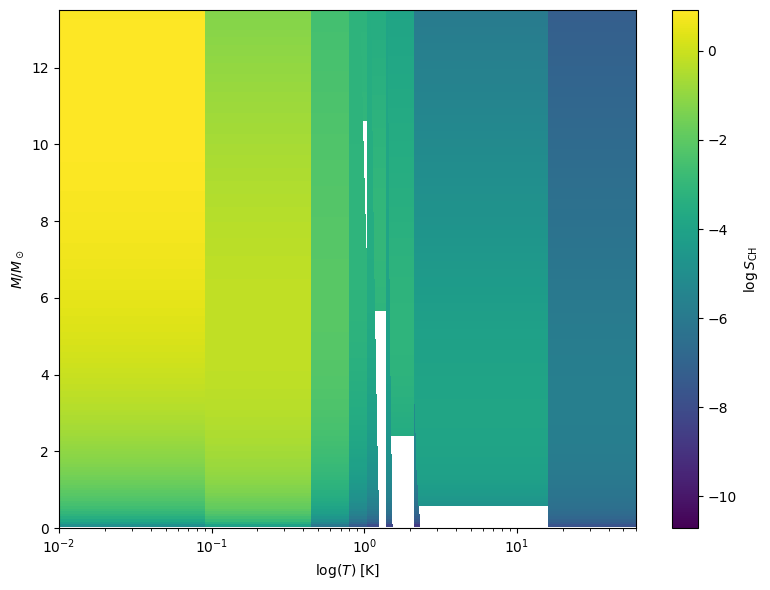
# ---------------------------------------------------------------
# 4. Linear-scale heat-map with pcolormesh
# ---------------------------------------------------------------
nm, nt = 300, 200 # grid resolution
m_edges = np.linspace(mL_val, mU_val, nm + 1) # bin edges in mass
t_edges = np.linspace(0.0, T_val, nt + 1) # bin edges in time
M_c, T_c = np.meshgrid( # cell centres for the integrand
0.5*(m_edges[:-1] + m_edges[1:]),
0.5*(t_edges[:-1] + t_edges[1:])
)
# compute SCH on the cell centres
tau_star = 10.0 * M_c**(-delta)
SCH_grid = xi_np(M_c) * (
CSFR_np(T_c) - np.where(T_c > tau_star, CSFR_np(T_c - tau_star), 0.0)
)
# ---- plot ------------------------------------------------------
fig, ax = plt.subplots(figsize=(8, 5.5))
pcm = ax.pcolormesh(
m_edges, t_edges, SCH_grid, # note: edges, not centres
shading='auto' # no gaps
)
ax.set_xlabel(r"stellar mass $m\,[M_\odot]$")
ax.set_ylabel(r"cosmic time $t_0$ [Gyr]")
ax.set_title(r"${\rm SCH}(m,t_0)$ (linear colour scale)")
cbar = fig.colorbar(pcm, ax=ax, label=r"${\rm SCH}$")
plt.tight_layout()
plt.show()
---------------------------------------------------------------------------
NameError Traceback (most recent call last)
Cell In[99], line 14
12 # compute SCH on the cell centres
13 tau_star = 10.0 * M_c**(-delta)
---> 14 SCH_grid = xi_np(M_c) * (
15 CSFR_np(T_c) - np.where(T_c > tau_star, CSFR_np(T_c - tau_star), 0.0)
16 )
18 # ---- plot ------------------------------------------------------
19 fig, ax = plt.subplots(figsize=(8, 5.5))
NameError: name 'xi_np' is not defined
star_types = {
'O': (16, 60),
'B': (2.1, 16),
'A': (1.4, 2.1),
'F': (1.04, 1.4),
'G': (0.8, 1.04),
'K': (0.45, 0.8),
'M': (0.1, 0.45),
'BH': (20, 100), # https://en.wikipedia.org/wiki/Black_hole (5-100)
# https://en.wikipedia.org/wiki/Supermassive_black_hole
'NS': (8, 20), # https://en.wikipedia.org/wiki/Neutron_star (0.7-2.5)
'WD': (1, 8), # 0.17-1.4 (https://en.wikipedia.org/wiki/White_dwarf) peaked at 0.6-0.7
'BD': (0.01, 0.08)
}
import numpy as np
import matplotlib.pyplot as plt
from scipy.special import hyp2f1
# Define the function
def f(t):
t = np.array(t)
theta = np.heaviside(t, 1) # HeavisideTheta[t]
# Apply hyp2f1 elementwise using a list comprehension
hypergeo = np.array([hyp2f1(3/32, 1, 35/32, -(ti**32) / 23283064365386962890625) for ti in t])
return (1/75) * t**3 * theta * hypergeo
# Generate t values (must be numbers, not symbols)
t_values = np.linspace(-1, 13.5, 500)
f_values = f(t_values)
# Plot
plt.figure(figsize=(8, 5))
plt.plot(t_values, f_values)
plt.title(r'Plot of $\frac{1}{75} t^3 \, \Theta(t) \, _2F_1\left(\frac{3}{32}, 1; \frac{35}{32}; -\frac{t^{32}}{23283064365386962890625}\right)$')
plt.xlabel('t')
plt.ylabel('f(t)')
plt.grid(True)
plt.show()
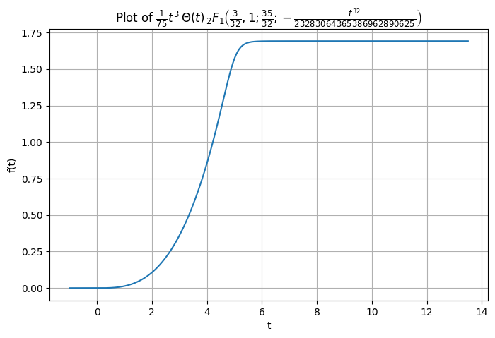
import numpy as np
import matplotlib.pyplot as plt
from scipy import special
import scipy.integrate
from scipy.special import betainc
from scipy.special import hyp2f1
import scipy.special
# -----------------------------
# 1. Parameters (same as above)
# -----------------------------
tau = 1 # τ (Gyr)
alpha = 2.0 # α
beta = 0.5 # β
delta = 2.5 # δ
mc = 0.2 # m_c (M⊙)
sigma = 0.55 # σ
alpha_IMF = 2.3 # α_IMF
T_final = 13.5 # Gyr
# -----------------------------
# 2. Helper functions
# -----------------------------
# def CSFR(t0):
# return np.where(t0 <= 0.0, 0, my_SFR(t0)-my_SFR(0)) # Choudhury & Ferrara 2006
"""
def CSFR(t0):
a = alpha + beta
b = (beta + 1) / a
c = 1 + b
z = - (t0 / tau) ** a
return np.where(t0 <= 0.0, 0, t0 * (t0 / tau) ** beta * hyp2f1(a, b, c, z)/(1.0+beta)-t0 * (t0 / tau) ** beta * hyp2f1(a, b, c, z)/(1.0+beta))
test = CSFR(0.0)
"""
def f(t0):
# exponent for the argument of 2F1
p = (1 + beta) / (alpha + beta)
z = - (t0 / tau) ** (alpha + beta)
return (t0 * (t0 / tau) ** beta * hyp2f1(1, p, 1 + p, z)) / (1 + beta)
def CSFR(t):
return tau*(1-np.exp(-t/tau))*np.heaviside(t,0) # Choudhury & Ferrara 2006
def CSFR(t):
return np.heaviside(t,0)
kappa = (1.0/(np.sqrt(2*np.pi)*sigma)) \
* np.exp(-(np.log(1.0/mc))**2/(2.0*sigma**2)) # continuity factor
def xi(m):
"""Chabrier IMF ξ(m)."""
log_norm = (1.0/(m*np.sqrt(2*np.pi)*sigma)) \
* np.exp(-np.log(m/mc)**2/(2.0*sigma**2))
powerlaw = kappa * m**(-alpha_IMF)
return np.where(m <= 1.0, log_norm, powerlaw)
# -----------------------------
# 3. Build the (m, t₀) grid
# -----------------------------
nm, nt = 200, 200
m_vals = np.logspace(np.log10(mL), np.log10(mU), nm)
t_vals = np.linspace(0.0, T_final, nt)
M, T0 = np.meshgrid(m_vals, t_vals) # shapes (nt, nm)
# -----------------------------
# 4. Compute SCH on the grid
# -----------------------------
m_cut = delta*np.log(T_final)-1
def tau_star(m):
"""Lifetime τ* = 10.0 * m**(-δ)"""
return 10*m**(-delta)
#np.where(m < m_cut, 15, )
def SCHunnormed(m, t0):
CSFR_now = CSFR(t0)
CSFR_prev = CSFR(t0-tau_star(m))
return xi(m) * (CSFR_now - CSFR_prev)
def SCHnormed(m, t0, xi_integral=1):
# tau_star = 10.0 * m**(-delta)
CSFR_now = CSFR(t0)
CSFR_prev = CSFR(t0 - tau_star(m))
return xi(m) * (CSFR_now - CSFR_prev)/xi_integral
def SCHunnormad_remnants(m,t0):
"""SCO for remnants (black holes, neutron stars, white dwarfs)"""
tau_star = 10.0 * m**(-delta)
CSFR_prev = CSFR(t0 - tau_star)
return xi(m) * (CSFR_prev)
xi_integral_remnants = 1
def SCHnormad_remnants(m,t0):
"""SCO for remnants (black holes, neutron stars, white dwarfs)"""
tau_star = 10.0 * m**(-delta)
CSFR_prev = CSFR(t0 - tau_star)
return xi(m) * (CSFR_prev)/xi_integral_remnants
T0 = 13.5
# integrate over
stars = {}
order = ['BD', 'M', 'K', 'G', 'F', 'A', 'B', 'O']
for key in order:
mL, mU = star_types[key]
#xi_integral, _ = integrate.quad(SCHunnormed, mL, mU, args=(T0,))
xi_integral = scipy.integrate.quad(xi, mL, mU, args=(T0,), epsrel=1.e-9)[0]
print("xi_integral:", xi_integral)
mean_value = scipy.integrate.quad(SCHnormed, mL, mU, args=(T0, xi_integral))[0]
mean_mass = scipy.integrate.quad(lambda m: m*xi(m), mL, mU)[0]/xi_integral
#mean_mass = scipy.integrate.quad(lambda m: m*xi(m), mL, mU)[0]/xi0_integral
nm, nt = 200, 200
m_vals = np.linspace(mL, mU, nm)
t_vals = np.linspace(0.0, T_final, nt)
m_centers = 0.5*(m_vals[:-1] + m_vals[1:]) # cell centres for the integrand
t_centers = 0.5*(t_vals[:-1] + t_vals[1:]) # cell centres for the integrand
M, T = np.meshgrid(m_centers, t_centers) # shapes (nt, nm)
SCH_grid = SCHnormed(M, T,xi_integral)
mean_mass = np.sum(m_vals*SCH_grid,axis=1)*(m_vals[1]-m_vals[0])/(m_vals[-1]-m_vals[0])
print(np.sum(SCH_grid[:,-1])/(m_vals[-1]-m_vals[0])) # check the integral
mean_N = scipy.integrate.dblquad(SCHnormed, mL, mU, 0.0, T_final, epsrel=1.e-9, args=(xi_integral, ))[0]
stars[key] = {'m': m_vals, 't': t_vals, 'SCH': SCH_grid}
print("mean_N:", mean_N)
m_edges = np.concatenate([stars[k]['m'][:-1] for k in order])
m_ticks_centres = [10**(0.5*np.log10(stars[k]['m'][-1]) + 0.5*np.log10(stars[k]['m'][0])) for k in order]
SCH = np.column_stack([stars[k]['SCH'] for k in order]) # shape (nt-1, 8*(nm-1)))))
fig, ax = plt.subplots(figsize=(7, 5))
# x-axis in log(m); use imshow with extent in log10 space
extent = [min(m_edges), max(m_edges), 0.0, T_final]
import matplotlib as mpl
from mpl_toolkits.axes_grid1.inset_locator import inset_axes
from matplotlib.colors import LogNorm
from matplotlib.ticker import LogLocator, LogFormatter
#vmin, vmax = SCH.min(), SCH.max() , norm=LogNorm(vmin=vmin, vmax=vmax),
pcm = ax.pcolormesh(np.append(m_edges,mU), t_vals, np.where(SCH < 1e-5, 0, np.log(SCH)), shading='auto')
m_tick_centres = [
10**(0.5 * (np.log10(stars[k]['m'][0]) + np.log10(stars[k]['m'][-1])))
for k in order]
axt = ax.twiny()
axt.set_xscale('log')
axt.set_xticks(m_tick_centres)
axt.set_xticklabels(order)
axt.set_xlabel('spectral type')
axt.set_xlim(ax.get_xlim())
# nice log ticks for mass
log_ticks = np.log10([0.01, 0.1, 1, 10, 100])
ax.set_xticks(log_ticks)
ax.set_xticklabels([0.01, 0.1, 1, 10, 100])
ax.set_xscale('log')
ax.set_xlabel(r"stellar mass $m \;[M_\odot]$")
ax.set_ylabel(r"cosmic time $t_0$ [Gyr]")
ax.set_title(r"$\log_{10}\,{\rm SCH}(m,\,t_0)$")
axt.minorticks_off()
cax = inset_axes(ax, width="3%", height="100%", loc='lower left',
bbox_to_anchor=(1.02, 0, 1, 1), bbox_transform=ax.transAxes,
borderpad=0)
cb = fig.colorbar(pcm, cax=cax, label=r"$\log_{10}\,\mathrm{SCH}$")
from matplotlib.ticker import LogLocator
cb.ax.set_yscale("log")
cb.ax.yaxis.set_major_locator(LogLocator(base=10.0, numticks=5))
cb.ax.yaxis.set_major_formatter(LogFormatter(base=10.0))
cb.update_ticks()
plt.tight_layout()
plt.show()
---------------------------------------------------------------------------
NameError Traceback (most recent call last)
Cell In[1], line 61
57 # -----------------------------
58 # 3. Build the (m, t₀) grid
59 # -----------------------------
60 nm, nt = 200, 200
---> 61 m_vals = np.logspace(np.log10(mL), np.log10(mU), nm)
62 t_vals = np.linspace(0.0, T_final, nt)
64 M, T0 = np.meshgrid(m_vals, t_vals) # shapes (nt, nm)
NameError: name 'mL' is not defined
import numpy as np
import matplotlib.pyplot as plt
from scipy import special
import scipy.integrate
from scipy.special import betainc
from scipy.special import hyp2f1
# -----------------------------
# 1. Parameters
# -----------------------------
tau = 12.0 # τ (Gyr)
alpha = 30 # α
beta = 0.5 # β
delta = 2.5 # δ
mc = 0.2 # m_c (M⊙)
sigma = 0.55 # σ
alpha_IMF = 2.3 # α_IMF
T_final = 13.5 # Gyr
# Star types mass limits
star_types = {
'BD': (0.01, 0.08),
'M': (0.08, 0.45),
'K': (0.45, 0.8),
'G': (0.8, 1.04),
'F': (1.04, 1.4),
'A': (1.4, 2.1),
'B': (2.1, 16),
'O': (16, 100)
}
# -----------------------------
# 2. Helper functions
# -----------------------------
def CSFR(t0):
"""Cumulative SFR Ψ(t₀)."""
t0 = np.asarray(t0)
a = alpha + beta
b = (beta + 1) / a
c = 1 + b
z = - (t0 / tau) ** a
result = np.where(t0 <= 0.0, 0, t0 * (t0 / tau) ** beta * hyp2f1(a, b, c, z) / (1.0 + beta))
if result.size == 1:
return float(result)
return result
A = np.array([1.0, 0.7, 0.5])
t0_arr = 13.5 - np.array([7.0, 2.5, 1.0])
sigma_arr = np.array([1.0, 0.8, 0.5])
def SCFR(t):
"""Simple cumulative SFH using error functions."""
cdf = A[0] * (1 + scipy.special.erf((t - t0_arr[0]) / (sigma_arr[0] * np.sqrt(2))))
cdf += A[1] * (1 + scipy.special.erf((t - t0_arr[1]) / (sigma_arr[1] * np.sqrt(2))))
cdf += A[2] * (1 + scipy.special.erf((t - t0_arr[2]) / (sigma_arr[2] * np.sqrt(2))))
cdf *= 0.5
return float(cdf)
kappa = (1.0/(np.sqrt(2*np.pi)*sigma)) * np.exp(-(np.log(1.0/mc))**2/(2.0*sigma**2)) # continuity factor
def xi(m):
"""Chabrier IMF ξ(m)."""
log_norm = (1.0/(m*np.sqrt(2*np.pi)*sigma)) * np.exp(-np.log(m/mc)**2/(2.0*sigma**2))
powerlaw = kappa * m**(-alpha_IMF)
return np.where(m <= 1.0, log_norm, powerlaw)
def tau_star(m):
"""Lifetime τ* = 10.0 * m**(-δ)"""
return 10 * m**(-delta)
def SCHunnormed(m, t0):
CSFR_now = CSFR(t0)
CSFR_prev = CSFR(t0 - tau_star(m))
value = 1e-6 * xi(m) * (CSFR_now - CSFR_prev)
return float(value)
def SCHnormed(m, t0, xi_integral=1):
CSFR_now = CSFR(t0)
CSFR_prev = CSFR(t0 - tau_star(m))
value = 1e-6 * xi(m) * (CSFR_now - CSFR_prev) / xi_integral
return float(value)
# -----------------------------
# 3. Grid setup and calculations
# -----------------------------
T0 = 13.5
stars = {}
order = ['BD', 'M', 'K', 'G', 'F', 'A', 'B', 'O']
for key in order:
mL, mU = star_types[key]
xi_integral = scipy.integrate.quad(SCHunnormed, mL, mU, args=(T0,), epsrel=1e-9)[0]
mean_value = scipy.integrate.quad(SCHnormed, mL, mU, args=(T0, xi_integral))[0]
print(f"{key}: mean_value = {mean_value:.5e}")
nm, nt = 200, 200
m_vals = np.linspace(mL, mU, nm)
t_vals = np.linspace(0.0, T_final, nt)
m_centers = 0.5 * (m_vals[:-1] + m_vals[1:])
t_centers = 0.5 * (t_vals[:-1] + t_vals[1:])
M, T = np.meshgrid(m_centers, t_centers)
SCH_grid = SCHnormed(M, T, xi_integral=xi_integral)
stars[key] = {'m': m_vals, 't': t_vals, 'SCH': SCH_grid}
# -----------------------------
# 4. Plotting
# -----------------------------
m_edges = np.concatenate([stars[k]['m'][:-1] for k in order])
m_ticks_centres = [
10**(0.5*np.log10(stars[k]['m'][0]) + 0.5*np.log10(stars[k]['m'][-1]))
for k in order
]
SCH = np.column_stack([stars[k]['SCH'] for k in order])
fig, ax = plt.subplots(figsize=(8, 5))
extent = [min(m_edges), max(m_edges), 0.0, T_final]
pcm = ax.pcolormesh(np.append(m_edges, max(m_edges)*1.05), t_vals, SCH, shading='auto')
axt = ax.twiny()
axt.set_xscale('log')
axt.set_xticks(m_ticks_centres)
axt.set_xticklabels(order)
axt.set_xlabel('spectral type')
axt.set_xlim(ax.get_xlim())
log_ticks = np.log10([0.01, 0.1, 1, 10, 100])
ax.set_xticks(log_ticks)
ax.set_xticklabels([0.01, 0.1, 1, 10, 100])
ax.set_xscale('log')
ax.set_xlabel(r"stellar mass $m \;[M_\odot]$")
ax.set_ylabel(r"cosmic time $t_0$ [Gyr]")
ax.set_title(r"$\log_{10}\,{\rm SCH}(m,\,t_0)$")
axt.minorticks_off()
plt.colorbar(pc
C:\Users\adamc\AppData\Local\Temp\ipykernel_14028\291702954.py:42: RuntimeWarning: invalid value encountered in scalar power
z = - (t0 / tau) ** a
C:\Users\adamc\AppData\Local\Temp\ipykernel_14028\291702954.py:43: RuntimeWarning: invalid value encountered in scalar power
result = np.where(t0 <= 0.0, 0, t0 * (t0 / tau) ** beta * hyp2f1(a, b, c, z) / (1.0 + beta))
C:\Users\adamc\AppData\Local\Temp\ipykernel_14028\291702954.py:42: RuntimeWarning: invalid value encountered in power
z = - (t0 / tau) ** a
C:\Users\adamc\AppData\Local\Temp\ipykernel_14028\291702954.py:43: RuntimeWarning: invalid value encountered in sqrt
result = np.where(t0 <= 0.0, 0, t0 * (t0 / tau) ** beta * hyp2f1(a, b, c, z) / (1.0 + beta))
BD: mean_value = 1.00000e+00
This 0.0004417873824324236
M: mean_value = 1.00000e+00
This 0.0017841532094953836
K: mean_value = 1.00000e+00
This 0.07965721672560726
G: mean_value = 1.00004e+00
This 1.4415528604288463
F: mean_value = 1.00000e+00
This 13.286893048566945
A: mean_value = 1.00000e+00
This 524.6442541286654
B: mean_value = 9.88054e-01
C:\Users\adamc\AppData\Local\Temp\ipykernel_14028\291702954.py:94: IntegrationWarning: The maximum number of subdivisions (50) has been achieved.
If increasing the limit yields no improvement it is advised to analyze
the integrand in order to determine the difficulties. If the position of a
local difficulty can be determined (singularity, discontinuity) one will
probably gain from splitting up the interval and calling the integrator
on the subranges. Perhaps a special-purpose integrator should be used.
mean_value = scipy.integrate.quad(SCHnormed, mL, mU, args=(T0, xi_integral))[0]
This 1.2560151195686626e+16
O: mean_value = 1.11128e+00
c:\Users\adamc\AppData\Local\Programs\Python\Python312\Lib\site-packages\scipy\integrate\_quadpack_py.py:1260: IntegrationWarning: The occurrence of roundoff error is detected, which prevents
the requested tolerance from being achieved. The error may be
underestimated.
quad_r = quad(f, low, high, args=args, full_output=self.full_output,
This nan
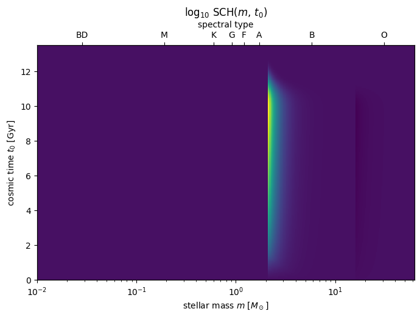
order = ['BD', 'M', 'K', 'G', 'F', 'A', 'B', 'O']
for key in order:
xi_integral = 1
def SCHunnormed(m, t0):
tau_star = 10.0 * m**(-delta)
CSFR_now = CSFR(t0)
CSFR_prev = CSFR(t0-tau_star)
return xi(m) * (CSFR_now - CSFR_prev)
def SCHnormed(m, t0):
tau_star = 10.0 * m**(-delta)
CSFR_now = CSFR(t0)
CSFR_prev = CSFR(t0 - tau_star)
return xi(m) * (CSFR_now - CSFR_prev)/xi_integral
mL, mU = star_types[key]
xi_integral, _ = integrate.quad(SCHunnormed, mL, mU, args=(13.5,))
result, err = integrate.dblquad(SCHnormed, mL, mU, 0, 13.5)
print(f"{key}: {result:.2g} ± {err:.2g}, {xi_integral:.2g}")
c:\Users\adamc\AppData\Local\Programs\Python\Python312\Lib\site-packages\scipy\integrate\_quadpack_py.py:606: ComplexWarning: Casting complex values to real discards the imaginary part
return _quadpack._qagse(func,a,b,args,full_output,epsabs,epsrel,limit)
BD: 6.7e-07 ± 1.2e-08, 2.2
M: 0.00056 ± 1.3e-08, 1.1
K: 2.2 ± 2.5e-08, 0.0018
G: 3.1e+02 ± 7e-06, 2.3e-05
F: 6.5e+03 ± 0.00016, 3.3e-06
A: 1.2e+05 ± 0.001, 8.6e-07
B: 1.9e+08 ± 0.033, 2e-07
O: 5.3e+12 ± 7.1e+03, 8.2e-11
from astroquery.gaia import Gaia
import pandas as pd
import numpy as np
from scipy.optimize import curve_fit
import matplotlib.pyplot as plt
# 1) Fetch high-quality spectroscopic FLAME ages
Gaia.ROW_LIMIT = 100000
adql = """
SELECT TOP 50000
age_flame_spec AS age
FROM gaiadr3.astrophysical_parameters_supp
WHERE flags_flame_spec = '0'
AND age_flame_spec IS NOT NULL
"""
job = Gaia.launch_job_async(adql)
table = job.get_results()
df = table.to_pandas()
# 2) Build the SFH histogram
bin_width = 0.1 # Gyr
bins = np.arange(0, df['age'].max() + bin_width, bin_width)
hist_counts, edges = np.histogram(df['age'], bins=bins)
age_centers = edges[:-1] + bin_width / 2
sfr_number = hist_counts / bin_width # stars per Gyr
mean_mass = 0.5 # Msun per star
sfr_mass = sfr_number * mean_mass # Msun per Gyr
sfr_mass = np.flip(sfr_mass)
# 3) Fit the broken-power law: A / [ (t/τ)^α + (t/τ)^(-β) ]
def broken_power(t, A, tau, alpha, beta):
x = t / tau
return A / (x**alpha + x**(-beta))
p0 = [sfr_mass.max(), np.median(age_centers), 1.0, 2.0]
bounds = ([0, 0, 0, 0], [np.inf, np.inf, np.inf, np.inf])
params, cov = curve_fit(broken_power, age_centers, sfr_mass, p0=p0, bounds=bounds)
A_fit, tau_fit, alpha_fit, beta_fit = params
# 4) Output results
print("Best-fit parameters:")
print(f" A = {A_fit:.3f}")
print(f" τ = {tau_fit:.3f} Gyr")
print(f" α = {alpha_fit:.3f}")
print(f" β = {beta_fit:.3f}")
# 5) Plot the SFH and the fit
t_fit = np.linspace(age_centers.min(), age_centers.max(), 300)
plt.figure(figsize=(8, 5))
plt.step(age_centers, sfr_mass, where='mid', label='SFH (Msun/Gyr)')
plt.plot(t_fit, broken_power(t_fit, *params), 'r-', lw=2, label='Broken-power fit')
plt.xlabel("Age (Gyr)")
plt.ylabel("SFR (Msun/Gyr)")
plt.title("Gaia DR3 SFH and Broken-Power Fit")
plt.legend()
plt.tight_layout()
plt.show()
INFO: Query finished. [astroquery.utils.tap.core]
Best-fit parameters:
A = 9900.954
τ = 12.312 Gyr
α = 25.880
β = 4.661
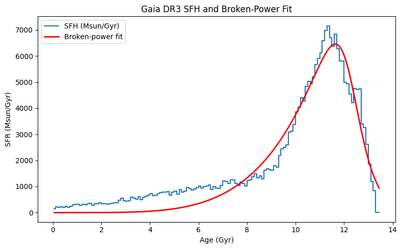
import requests
import pandas as pd
import numpy as np
from scipy.optimize import curve_fit
import matplotlib.pyplot as plt
from io import StringIO
# 1) TAP Sync endpoint & ADQL (spectroscopic FLAME ages)
TAP_SYNC = "https://gea.esac.esa.int/tap-server/tap/sync"
adql = (
"SELECT TOP 50000 age_flame_spec AS age "
"FROM gaiadr3.astrophysical_parameters_supp "
"WHERE flags_flame_spec = '0' "
" AND age_flame_spec IS NOT NULL"
)
params = {
'REQUEST': 'doQuery',
'LANG': 'ADQL',
'FORMAT': 'csv',
'QUERY': adql
}
# 2) Download and load into pandas
r = requests.get(TAP_SYNC, params=params)
r.raise_for_status()
df = pd.read_csv(StringIO(r.text))
print(f"Fetched {len(df)} ages (Gyr)")
# 3) Sort by age: oldest → most recent
df = df.sort_values('age').reset_index(drop=True)
# 4) Build the SFH histogram (0.1 Gyr bins)
bin_width = 0.1 # Gyr
bins = np.arange(0, df['age'].max() + bin_width, bin_width)
counts, edges = np.histogram(df['age'], bins=bins)
age_centers = edges[:-1] + bin_width/2
# 5) Convert counts → SFR
sfr_number = counts / bin_width # stars per Gyr
mean_mass = 0.5 # Msun per star
sfr_mass = sfr_number * mean_mass # Msun per Gyr
sfr_number = np.flip(sfr_number)
# 6) Define & fit the broken‐power law
def broken_power(t, A, tau, alpha, beta):
x = t / tau
return A / (x**alpha + x**(-beta))
p0 = [sfr_mass.max(), np.median(age_centers), 1.0, 2.0]
bounds = ([0,0,0,0],[np.inf,np.inf,np.inf,np.inf])
params_fit, cov = curve_fit(broken_power,
age_centers, sfr_mass,
p0=p0, bounds=bounds)
A_fit, tau_fit, alpha_fit, beta_fit = params_fit
print("\nBest-fit parameters:")
print(f" A = {A_fit:.3f}")
print(f" τ = {tau_fit:.3f} Gyr")
print(f" α = {alpha_fit:.3f}")
print(f" β = {beta_fit:.3f}")
# 7) Plot the SFH and the fit
t_fit = np.linspace(age_centers.min(), age_centers.max(), 300)
plt.figure(figsize=(8,5))
plt.step(age_centers, sfr_mass, where='mid', label='SFH (Msun/Gyr)')
plt.plot( t_fit, broken_power(t_fit, *params_fit),
'r-', lw=2, label='Broken-power fit')
plt.xlabel("Age (Gyr) — Oldest → Most Recent")
plt.ylabel("SFR (Msun/Gyr)")
plt.title("Gaia DR3 Spectroscopic FLAME SFH & Broken-Power Fit")
plt.legend()
plt.tight_layout()
plt.show()
Fetched 50000 ages (Gyr)
Best-fit parameters:
A = 12101.702
τ = 2.350 Gyr
α = 2.488
β = 1.151
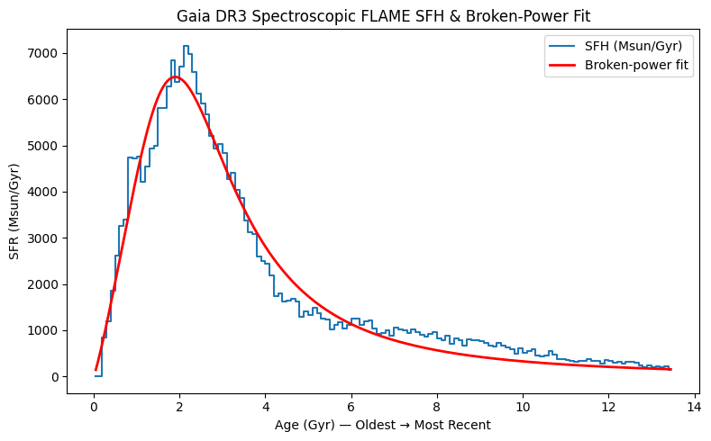
import requests
import pandas as pd
import numpy as np
from io import StringIO
# 1) Re-fetch up to 50k high-quality spectroscopic FLAME ages
TAP_SYNC = "https://gea.esac.esa.int/tap-server/tap/sync"
adql = (
"SELECT TOP 50000 age_flame_spec AS age "
"FROM gaiadr3.astrophysical_parameters_supp "
"WHERE flags_flame_spec = '0' "
" AND age_flame_spec IS NOT NULL"
)
params = {'REQUEST':'doQuery','LANG':'ADQL','FORMAT':'csv','QUERY':adql}
r = requests.get(TAP_SYNC, params=params)
r.raise_for_status()
df = pd.read_csv(StringIO(r.text))
# 2) Histogram the ages (0.1 Gyr bins)
bin_width = 0.1
bins = np.arange(0, df['age'].max() + bin_width, bin_width)
counts, edges = np.histogram(df['age'], bins=bins)
age_centers = edges[:-1] + bin_width/2
# 3) Find peak bin
peak_idx = counts.argmax()
peak_age = age_centers[peak_idx]
peak_count = counts[peak_idx]
# 4) Display result
print(f"Peak age bin center: {peak_age:.2f} Gyr, Count: {peak_count} stars")
Peak age bin center: 2.15 Gyr, Count: 1432 stars
import requests
import pandas as pd
from io import StringIO
# Gaia TAP synchronous endpoint
url = "https://gea.esac.esa.int/tap-server/tap/sync"
# ADQL to fetch the global SFH table
params = {
'REQUEST': 'doQuery',
'LANG': 'ADQL',
'FORMAT': 'csv',
'QUERY': (
"SELECT age_bin_start, age_bin_end, sfr_surface_density "
"FROM bgm.global_sfh "
"ORDER BY age_bin_start"
)
}
# Download the CSV
response = requests.get(url, params=params)
response.raise_for_status()
# Load into a pandas DataFrame
df_global_sfh = pd.read_csv(StringIO(response.text))
# Compute age‐bin centers
df_global_sfh['age_center'] = 0.5 * (
df_global_sfh['age_bin_start'] + df_global_sfh['age_bin_end']
)
# Inspect
print(df_global_sfh)
---------------------------------------------------------------------------
HTTPError Traceback (most recent call last)
Cell In[52], line 22
20 # Download the CSV
21 response = requests.get(url, params=params)
---> 22 response.raise_for_status()
24 # Load into a pandas DataFrame
25 df_global_sfh = pd.read_csv(StringIO(response.text))
File c:\Users\adamc\AppData\Local\Programs\Python\Python312\Lib\site-packages\requests\models.py:1024, in Response.raise_for_status(self)
1019 http_error_msg = (
1020 f"{self.status_code} Server Error: {reason} for url: {self.url}"
1021 )
1023 if http_error_msg:
-> 1024 raise HTTPError(http_error_msg, response=self)
HTTPError: 400 Client Error: 400 for url: https://gea.esac.esa.int/tap-server/tap/sync?REQUEST=doQuery&LANG=ADQL&FORMAT=csv&QUERY=SELECT+age_bin_start%2C+age_bin_end%2C+sfr_surface_density+FROM+bgm.global_sfh+ORDER+BY+age_bin_start
from astroquery.vizier import Vizier
import pandas as pd
# 1) Configure Vizier for unlimited rows
Vizier.ROW_LIMIT = -1
# 2) Find the BGM FASt catalogue in VizieR
viz = Vizier(columns=['*'])
catalogs_info = viz.find_catalogs('J/A+A/620/A79')
catalog_ids = list(catalogs_info.keys())
print("Catalog IDs in J/A+A/620/A79:")
print(catalog_ids)
# 3) Download all tables from that catalogue
catalogs = viz.get_catalogs(catalog_ids)
print("\nRetrieved table keys:")
print(list(catalogs.keys()))
# 4) Identify the key for the global SFH ('table2')
table2_key = next(k for k in catalogs.keys() if k.endswith('/table2'))
print(f"\nGlobal SFH is in: {table2_key}")
# 5) Convert Table2 to pandas DataFrame
df_global_sfh = catalogs[table2_key].to_pandas()
# 6) Display full DataFrame without truncation
pd.set_option('display.max_rows', None)
pd.set_option('display.max_columns', None)
print("\nGlobal SFH (Table 2):")
print(df_global_sfh)
# 7) Compute and add age_bin_center
df_global_sfh
Catalog IDs in J/A+A/620/A79:
['I/16', 'I/85', 'I/138', 'I/195', 'I/196', 'I/207', 'I/244A', 'I/277', 'I/300', 'I/303', 'I/313', 'I/322A', 'I/323', 'I/329', 'I/331', 'I/347', 'I/352', 'I/353', 'I/354', 'I/382', 'II/6', 'II/50', 'II/59B', 'II/95', 'II/97', 'II/108', 'II/143A', 'II/146', 'II/162', 'II/170', 'II/188', 'II/200', 'II/202', 'II/208', 'II/211', 'II/213', 'II/221A', 'II/222', 'II/228A', 'II/239', 'II/240', 'II/243', 'II/246', 'II/255', 'II/261', 'II/266', 'II/281', 'II/284', 'II/286', 'II/287', 'II/288', 'II/290', 'II/292', 'II/296', 'II/297', 'II/312', 'II/313', 'II/314', 'II/319', 'II/321', 'II/328', 'II/332', 'II/333', 'II/337', 'II/340', 'II/341', 'II/344', 'II/346', 'II/347', 'II/350', 'II/351', 'II/356', 'II/357', 'II/358', 'II/360', 'II/361', 'II/364', 'II/365', 'II/366', 'II/370', 'II/371', 'II/373', 'II/374', 'II/378', 'II/379', 'II/380', 'II/381', 'II/382', 'II/383', 'II/384', 'II/386', 'III/7A', 'III/14', 'III/76A', 'III/105', 'III/121', 'III/135A', 'III/147', 'III/157', 'III/159A', 'III/211', 'III/232', 'III/256', 'III/257', 'III/265', 'III/268', 'III/272', 'III/274', 'III/279', 'III/283', 'III/284', 'III/334', 'IV/36', 'IV/38', 'IV/39', 'V/31A', 'V/32A', 'V/60', 'V/64', 'V/84', 'V/95', 'V/105', 'V/107', 'V/109', 'V/116', 'V/127A', 'V/136', 'V/138', 'V/141', 'V/145', 'V/146', 'V/149', 'V/159', 'V/160', 'V/165', 'VI/72', 'VI/116', 'VI/121', 'VI/127', 'VI/128', 'VI/131', 'VI/137', 'VI/158', 'VII/15', 'VII/63', 'VII/68A', 'VII/80', 'VII/102', 'VII/109', 'VII/149', 'VII/155', 'VII/156', 'VII/172', 'VII/176A', 'VII/185', 'VII/189', 'VII/193', 'VII/198', 'VII/200', 'VII/216', 'VII/221', 'VII/226', 'VII/228', 'VII/233', 'VII/243', 'VII/250', 'VII/252', 'VII/254', 'VII/259', 'VII/260', 'VII/264', 'VII/269', 'VII/270', 'VII/276', 'VII/279', 'VII/286', 'VII/289', 'VII/293', 'VIII/2', 'VIII/10', 'VIII/18', 'VIII/24', 'VIII/28', 'VIII/29A', 'VIII/34', 'VIII/39', 'VIII/42', 'VIII/60', 'VIII/65', 'VIII/66', 'VIII/71', 'VIII/72', 'VIII/73', 'VIII/79A', 'VIII/87', 'VIII/88', 'VIII/89', 'VIII/90', 'VIII/95', 'VIII/96', 'VIII/97', 'VIII/98', 'VIII/100', 'VIII/102', 'VIII/103', 'VIII/105', 'VIII/109', 'VIII/112', 'IX/2', 'IX/13', 'IX/16', 'IX/20A', 'IX/22', 'IX/32', 'IX/36', 'IX/43', 'IX/45', 'IX/46', 'IX/48', 'IX/49', 'IX/50', 'IX/52', 'IX/54', 'IX/55', 'IX/56', 'IX/57', 'IX/58', 'IX/59', 'IX/61', 'IX/63', 'IX/64', 'IX/65', 'IX/66', 'IX/67', 'IX/68', 'IX/69', 'IX/70', 'B/bax', 'B/ocl', 'J/ApJ/252/102', 'J/ApJ/315/687', 'J/ApJ/325/798', 'J/ApJ/348/253', 'J/ApJ/353/494', 'J/ApJ/397/520', 'J/ApJ/405/498', 'J/ApJ/409/28', 'J/ApJ/413/604', 'J/ApJ/425/122', 'J/ApJ/427/125', 'J/ApJ/434/54', 'J/ApJ/438/181', 'J/ApJ/448/179', 'J/ApJ/448/683', 'J/ApJ/456/174', 'J/ApJ/457/102', 'J/ApJ/459/278', 'J/ApJ/462/614', 'J/ApJ/463/26', 'J/ApJ/463/205', 'J/ApJ/466/254', 'J/ApJ/468/633', 'J/ApJ/471/694', 'J/ApJ/471/L5', 'J/ApJ/475/445', 'J/ApJ/475/469', 'J/ApJ/476/311', 'J/ApJ/481/95', 'J/ApJ/481/673', 'J/ApJ/493/940', 'J/ApJ/496/39', 'J/ApJ/497/188', 'J/ApJ/504/113', 'J/ApJ/505/50', 'J/ApJ/507/655', 'J/ApJ/508/314', 'J/ApJ/508/491', 'J/ApJ/510/659', 'J/ApJ/512/48', 'J/ApJ/513/168', 'J/ApJ/514/614', 'J/ApJ/517/148', 'J/ApJ/517/282', 'J/ApJ/518/69', 'J/ApJ/523/540', 'J/ApJ/525/127', 'J/ApJ/525/420', 'J/ApJ/527/199', 'J/ApJ/529/723', 'J/ApJ/534/114', 'J/ApJ/538/29', 'J/ApJ/539/136', 'J/ApJ/540/236', 'J/ApJ/540/1016', 'J/ApJ/541/841', 'J/ApJ/542/257', 'J/ApJ/543/552', 'J/ApJ/549/172', 'J/ApJ/551/973', 'J/ApJ/552/289', 'J/ApJ/554/742', 'J/ApJ/554/803', 'J/ApJ/554/L129', 'J/ApJ/559/812', 'J/ApJ/560/566', 'J/ApJ/562/337', 'J/ApJ/563/629', 'J/ApJ/564/421', 'J/ApJ/566/103', 'J/ApJ/566/744', 'J/ApJ/569/689', 'J/ApJ/571/665', 'J/ApJ/573/366', 'J/ApJ/574/258', 'J/ApJ/577/738', 'J/ApJ/581/258', 'J/ApJ/581/325', 'J/ApJ/582/615', 'J/ApJ/582/756', 'J/ApJ/584/911', 'J/ApJ/586/814', 'J/ApJ/591/53', 'J/ApJ/591/640', 'J/ApJ/593/1093', 'J/ApJ/594/1', 'J/ApJ/594/154', 'J/ApJ/595/685', 'J/ApJ/595/1154', 'J/ApJ/596/768', 'J/ApJ/596/944', 'J/ApJ/598/260', 'J/ApJ/598/969', 'J/ApJ/598/L43', 'J/ApJ/599/218', 'J/ApJ/599/1006', 'J/ApJ/600/729', 'J/ApJ/602/231', 'J/ApJ/602/571', 'J/ApJ/602/664', 'J/ApJ/603/503', 'J/ApJ/607/202', 'J/ApJ/607/426', 'J/ApJ/607/665', 'J/ApJ/607/L33', 'J/ApJ/609/539', 'J/ApJ/610/247', 'J/ApJ/612/202', 'J/ApJ/612/437', 'J/ApJ/612/511', 'J/ApJ/612/848', 'J/ApJ/613/200', 'J/ApJ/613/279', 'J/ApJ/613/343', 'J/ApJ/613/841', 'J/ApJ/613/914', 'J/ApJ/614/167', 'J/ApJ/614/607', 'J/ApJ/614/671', 'J/ApJ/615/702', 'J/ApJ/616/71', 'J/ApJ/616/110', 'J/ApJ/617/240', 'J/ApJ/618/123', 'J/ApJ/619/755', 'J/ApJ/619/L95', 'J/ApJ/620/961', 'J/ApJ/620/1010', 'J/ApJ/621/53', 'J/ApJ/622/187', 'J/ApJ/622/772', 'J/ApJ/622/1102', 'J/ApJ/624/135', 'J/ApJ/625/6', 'J/ApJ/626/195', 'J/ApJ/626/887', 'J/ApJ/626/L5', 'J/ApJ/630/784', 'J/ApJ/631/906', 'J/ApJ/632/894', 'J/ApJ/632/L131', 'J/ApJ/633/174', 'J/ApJ/633/844', 'J/ApJ/633/871', 'J/ApJ/634/451', 'J/ApJ/634/625', 'J/ApJ/634/L89', 'J/ApJ/635/123', 'J/ApJ/635/214', 'J/ApJ/635/290', 'J/ApJ/635/560', 'J/ApJ/636/200', 'J/ApJ/636/765', 'J/ApJ/636/821', 'J/ApJ/636/1002', 'J/ApJ/636/1098', 'J/ApJ/637/1067', 'J/ApJ/638/293', 'J/ApJ/638/897', 'J/ApJ/639/816', 'J/ApJ/640/167', 'J/ApJ/640/603', 'J/ApJ/640/1018', 'J/ApJ/640/L43', 'J/ApJ/641/140', 'J/ApJ/641/410', 'J/ApJ/641/L13', 'J/ApJ/642/126', 'J/ApJ/642/673', 'J/ApJ/642/861', 'J/ApJ/642/868', 'J/ApJ/642/972', 'J/ApJ/642/L13', 'J/ApJ/642/L99', 'J/ApJ/643/238', 'J/ApJ/643/1011', 'J/ApJ/644/829', 'J/ApJ/644/1006', 'J/ApJ/645/955', 'J/ApJ/646/161', 'J/ApJ/646/269', 'J/ApJ/646/505', 'J/ApJ/646/1215', 'J/ApJ/648/111', 'J/ApJ/648/250', 'J/ApJ/648/987', 'J/ApJ/648/1090', 'J/ApJ/648/L97', 'J/ApJ/649/63', 'J/ApJ/649/759', 'J/ApJ/649/L9', 'J/ApJ/649/L61', 'J/ApJ/651/61', 'J/ApJ/651/502', 'J/ApJ/651/L49', 'J/ApJ/652/313', 'J/ApJ/652/681', 'J/ApJ/652/1585', 'J/ApJ/652/1715', 'J/ApJ/653/675', 'J/ApJ/653/1027', 'J/ApJ/654/115', 'J/ApJ/654/186', 'J/ApJ/654/347', 'J/ApJ/654/527', 'J/ApJ/654/L21', 'J/ApJ/655/51', 'J/ApJ/655/144', 'J/ApJ/655/212', 'J/ApJ/655/790', 'J/ApJ/655/958', 'J/ApJ/655/1046', 'J/ApJ/655/L33', 'J/ApJ/656/168', 'J/ApJ/656/255', 'J/ApJ/656/431', 'J/ApJ/656/770', 'J/ApJ/657/241', 'J/ApJ/657/1098', 'J/ApJ/658/99', 'J/ApJ/658/203', 'J/ApJ/658/778', 'J/ApJ/658/1006', 'J/ApJ/658/1096', 'J/ApJ/658/1203', 'J/ApJ/658/1264', 'J/ApJ/659/84', 'J/ApJ/659/162', 'J/ApJ/659/599', 'J/ApJ/659/1040', 'J/ApJ/659/1198', 'J/ApJ/659/1241', 'J/ApJ/659/1265', 'J/ApJ/660/81', 'J/ApJ/660/167', 'J/ApJ/660/239', 'J/ApJ/660/1093', 'J/ApJ/660/1151', 'J/ApJ/660/1398', 'J/ApJ/661/250', 'J/ApJ/661/801', 'J/ApJ/661/1119', 'J/ApJ/662/525', 'J/ApJ/662/808', 'J/ApJ/662/1067', 'J/ApJ/663/81', 'J/ApJ/663/164', 'J/ApJ/663/258', 'J/ApJ/663/296', 'J/ApJ/663/573', 'J/ApJ/663/1291', 'J/ApJ/664/226', 'J/ApJ/664/257', 'J/ApJ/664/481', 'J/ApJ/664/1102', 'J/ApJ/664/1154', 'J/ApJ/664/1185', 'J/ApJ/666/201', 'J/ApJ/666/674', 'J/ApJ/666/757', 'J/ApJ/666/806']
WARNING: UnitsWarning: Unit 'MJD' not supported by the VOUnit standard. Did you mean MD, MJ, Md, mD, mJ or md? [astropy.units.format.vounit]
WARNING: UnitsWarning: Unit 'JD' not supported by the VOUnit standard. [astropy.units.format.vounit]
WARNING: UnitsWarning: Unit 'e' not supported by the VOUnit standard. [astropy.units.format.vounit]
Retrieved table keys:
['I/16/catalog', 'I/85/cpc2', 'I/138/main', 'I/195/catalog', 'I/196/main', 'I/196/annex1', 'I/196/notes', 'I/207/catalog', 'I/244A/bwc', 'I/277/spmcat', 'I/277/spmccd', 'I/277/spmfld', 'I/300/pm2000', 'I/303/cdc2000', 'I/313/lqrf', 'I/322A/out', 'I/323/icrf2', 'I/329/urat1', 'I/347/gaia2dis', 'I/352/gedr3dis', 'I/353/gsc242', 'I/354/starhorse2021', 'I/382/calern', 'I/382/merate', 'I/382/nice-1', 'I/382/nice-2', 'II/6/catalog', 'II/6/filters', 'II/50/ubv', 'II/59B/catalog', 'II/95/data', 'II/95/notes', 'II/97/ans', 'II/108/data', 'II/143A/catalog', 'II/143A/refs', 'II/146/data', 'II/162/data1', 'II/162/data2', 'II/162/data3', 'II/162/data4', 'II/162/data5', 'II/162/data6', 'II/162/data7', 'II/162/data8', 'II/162/data9', 'II/162/table4', 'II/162/table5', 'II/162/table6', 'II/162/table7', 'II/170/ltpv1', 'II/170/stars1', 'II/188/ltpv2', 'II/188/stars2', 'II/200/ltpv3', 'II/200/stars3', 'II/202/ltpv4', 'II/202/stars4', 'II/208/bv', 'II/211/ircam', 'II/211/catalog', 'II/211/spectro', 'II/213/pvar', 'II/221A/lf', 'II/221A/notes', 'II/222/ereg', 'II/222/notes', 'II/222/obs', 'II/228A/denisLMC', 'II/228A/denisSMC', 'II/228A/qual', 'II/239/catalog', 'II/239/notes', 'II/240/denis', 'II/243/psc1', 'II/243/psc2', 'II/243/fields', 'II/243/isoobs', 'II/243/denis', 'II/243/ghosts1', 'II/243/ghosts2', 'II/243/ghosts3', 'II/246/out', 'II/255/iraccat', 'II/255/mips70', 'II/255/mips160', 'II/261/GOODS_N', 'II/261/GOODS_S', 'II/266/catalog', 'II/281/2mass6x', 'II/284/cosmos', 'II/286/morph', 'II/286/ucat', 'II/286/bcat', 'II/286/vcat', 'II/286/rcat', 'II/286/icat', 'II/286/jcat', 'II/286/kcat', 'II/287/skydot', 'II/287/fields', 'II/287/frames', 'II/287/synonym', 'II/288/out', 'II/288/regions', 'II/290/finalcat', 'II/292/objects', 'II/292/pol', 'II/292/ser', 'II/292/table2', 'II/292/table5', 'II/292/notes', 'II/296/catalog', 'II/297/irc', 'II/312/ais', 'II/312/mis', 'II/313/table3', 'II/314/las8', 'II/314/gcs8', 'II/314/dxs8', 'II/319/las9', 'II/319/gcs9', 'II/319/dxs9', 'II/321/iphas2', 'II/328/allwise', 'II/332/c2d', 'II/333/master', 'II/333/snlist', 'II/337/vvv1', 'II/340/xmmom2_1', 'II/340/summary', 'II/341/vphasp', 'II/344/kids_dr2', 'II/346/jsdc_v2', 'II/346/jsdc_dis', 'II/347/kids_dr3', 'II/350/vstatlas', 'II/351/vmc_dr4', 'II/356/xmmom41s', 'II/357/des_dr1', 'II/358/table1', 'II/358/smss', 'II/358/ccd', 'II/358/images', 'II/358/mosaic', 'II/360/catalog', 'II/361/mdfc-v10', 'II/364/virac', 'II/364/tablea1', 'II/364/tableb1', 'II/364/tablec1', 'II/364/tabled1', 'II/364/tabled2', 'II/364/tablee1', 'II/364/tablee2', 'II/365/catwise', 'II/366/catv2021', 'II/370/xmmom5s', 'II/371/des_dr2', 'II/373/catalog', 'II/374/table2', 'II/378/xmmom6s', 'II/379/smssdr4', 'II/380/splusdr4', 'II/381/hlsp_ps1_mh', 'II/381/hlsp_ps1_tm', 'II/382/viking4', 'II/384/kids_shear', 'II/386/vphasplus32', 'III/7A/catalog', 'III/14/ss59', 'III/14/notes', 'III/76A/ls', 'III/76A/notes', 'III/105/meanvel', 'III/105/obsvel', 'III/105/remarks', 'III/121/catalog', 'III/135A/catalog', 'III/147/catalog', 'III/157/objects', 'III/159A/catalog', 'III/211/oh', 'III/211/o2', 'III/211/figs', 'III/232/table', 'III/256/ves', 'III/256/phot', 'III/256/notes', 'III/257/ravedr2', 'III/265/ravedr3', 'III/268/deep2all', 'III/272/ravedr4', 'III/274/main', 'III/274/notes', 'III/274/refs', 'III/279/rave_dr5', 'III/279/rave_gra', 'III/279/rave_on', 'III/279/rave_com', 'III/283/ravedr6', 'III/283/aux', 'III/283/repeats', 'III/283/madera', 'III/283/irfm', 'III/283/bdasp', 'III/283/gaugmad', 'III/283/gaugbda', 'III/283/cdrmad', 'III/283/cdrbdasp', 'III/283/orbits', 'III/283/orbedr3', 'III/283/xgaia2', 'III/283/xgaiae3', 'III/283/xmatch', 'III/283/spectra', 'III/283/fields', 'III/283/seismic', 'III/283/cnn', 'III/284/allstars', 'III/284/allvis', 'III/284/allplate', 'III/284/table3', 'III/334/videodr2', 'IV/36/giphasl', 'IV/36/gkisl', 'IV/38/tic', 'IV/39/tic82', 'V/31A/catalog', 'V/31A/refs', 'V/32A/catalog', 'V/60/catalog', 'V/60/refs', 'V/64/catalog', 'V/84/main', 'V/84/diam', 'V/84/dist', 'V/84/hbeta', 'V/84/intens', 'V/84/iue', 'V/84/iras', 'V/84/nir', 'V/84/radio', 'V/84/vel', 'V/84/cstar', 'V/84/notes', 'V/84/refs', 'V/84/pospn', 'V/84/notpn', 'V/95/sky2000', 'V/95/refs', 'V/105/sky2v3r1', 'V/105/refs', 'V/107/msx_gp', 'V/107/nonplane', 'V/107/lmc', 'V/109/sky2kv4', 'V/109/refs', 'V/116/main', 'V/116/spnotes', 'V/116/posplx', 'V/116/hipdist', 'V/116/tyc2mmag', 'V/116/ubvmag', 'V/116/dist', 'V/116/refs', 'V/127A/mash1', 'V/127A/mash2', 'V/127A/sp', 'V/136/tycall', 'V/136/tycdwarf', 'V/138/catalog', 'V/138/tab_refs', 'V/141/lmcc', 'V/145/sky2kv5', 'V/145/refs', 'V/146/dr1', 'V/146/fgkstars', 'V/146/astars', 'V/146/mstars', 'V/146/dr1_plan', 'V/149/dr2', 'V/149/stellar2', 'V/149/astars2', 'V/149/mstars2', 'V/149/dr2_plan', 'V/159/gssample', 'V/159/gnsample', 'V/159/gsflags', 'V/159/gnflags', 'V/159/gscirc', 'V/159/gncirc', 'V/159/gscircbs', 'V/159/gncircbs', 'V/159/gscircc', 'V/159/gncircc', 'V/159/gskron', 'V/159/gnkron', 'V/159/gskronc', 'V/159/gnkronc', 'V/159/gngrat', 'V/159/gsgrat', 'V/159/gnprism', 'V/159/gsprism', 'V/160/shboost', 'V/165/igapsdr1', 'VI/72/trans', 'VI/116/dfbs', 'VI/121/enlvs', 'VI/121/hcnlist', 'VI/127/levels', 'VI/128/cgps', 'VI/131/enlvs13', 'VI/131/h13cnlin', 'VI/131/h13cnlis', 'VI/131/dipoles', 'VI/137/gum_mw', 'VI/137/gum_lmc', 'VI/137/gum_smc', 'VI/137/gum_gal', 'VI/137/gum_qso', 'VI/137/gum_sn']
Global SFH is in: II/292/table2
Global SFH (Table 2):
Name Q U e_Q Pol PA r Simbad \
0 HD 99225 -0.2110 -0.1392 0.0071 0.25 106.699997 360 Simbad
1 HD 99835 0.0361 0.1240 0.0362 0.13 36.900002 550 Simbad
2 HD 99905 -0.0449 0.1549 0.0114 0.16 53.099998 215 Simbad
3 HD 100415 0.0302 0.3084 0.0222 0.31 42.200001 154 Simbad
4 HD 100416 -0.0443 0.0705 0.0054 0.08 61.099998 280 Simbad
5 HD 100436 0.0321 0.1447 0.0461 0.15 38.700001 520 Simbad
6 HD 100776 -0.1187 0.1029 0.0106 0.16 69.599998 325 Simbad
7 HD 100872 -0.1093 0.1342 0.0142 0.17 64.599998 154 Simbad
8 HD 100948 0.0366 0.0530 0.0155 0.06 27.700001 230 Simbad
9 HD 100974 -0.0535 0.1935 0.0183 0.20 52.700001 167 Simbad
10 HD 100340 0.3570 0.1472 0.0360 0.39 11.200000 2600 Simbad
_RA _DE
0 171.29676 5.73946
1 172.30661 6.09829
2 172.39918 3.77993
3 173.35324 4.13417
4 173.33224 3.36250
5 173.37591 5.86213
6 173.98484 6.76820
7 174.14234 6.10644
8 174.28869 4.96299
9 174.32436 6.27003
10 173.20809 5.27673
| Name | Q | U | e_Q | Pol | PA | r | Simbad | _RA | _DE | |
|---|---|---|---|---|---|---|---|---|---|---|
| 0 | HD 99225 | -0.2110 | -0.1392 | 0.0071 | 0.25 | 106.699997 | 360 | Simbad | 171.29676 | 5.73946 |
| 1 | HD 99835 | 0.0361 | 0.1240 | 0.0362 | 0.13 | 36.900002 | 550 | Simbad | 172.30661 | 6.09829 |
| 2 | HD 99905 | -0.0449 | 0.1549 | 0.0114 | 0.16 | 53.099998 | 215 | Simbad | 172.39918 | 3.77993 |
| 3 | HD 100415 | 0.0302 | 0.3084 | 0.0222 | 0.31 | 42.200001 | 154 | Simbad | 173.35324 | 4.13417 |
| 4 | HD 100416 | -0.0443 | 0.0705 | 0.0054 | 0.08 | 61.099998 | 280 | Simbad | 173.33224 | 3.36250 |
| 5 | HD 100436 | 0.0321 | 0.1447 | 0.0461 | 0.15 | 38.700001 | 520 | Simbad | 173.37591 | 5.86213 |
| 6 | HD 100776 | -0.1187 | 0.1029 | 0.0106 | 0.16 | 69.599998 | 325 | Simbad | 173.98484 | 6.76820 |
| 7 | HD 100872 | -0.1093 | 0.1342 | 0.0142 | 0.17 | 64.599998 | 154 | Simbad | 174.14234 | 6.10644 |
| 8 | HD 100948 | 0.0366 | 0.0530 | 0.0155 | 0.06 | 27.700001 | 230 | Simbad | 174.28869 | 4.96299 |
| 9 | HD 100974 | -0.0535 | 0.1935 | 0.0183 | 0.20 | 52.700001 | 167 | Simbad | 174.32436 | 6.27003 |
| 10 | HD 100340 | 0.3570 | 0.1472 | 0.0360 | 0.39 | 11.200000 | 2600 | Simbad | 173.20809 | 5.27673 |
import requests
import pandas as pd
from io import StringIO
# 1) Fetch the raw bins
resp = requests.get(
"https://gea.esac.esa.int/tap-server/tap/sync",
params={
'REQUEST': 'doQuery',
'LANG': 'ADQL',
'FORMAT': 'csv',
'QUERY': (
"SELECT age_bin_start, age_bin_end, sfr_surface_density "
"FROM bgm.global_sfh "
"ORDER BY age_bin_start"
)
}
)
resp.raise_for_status()
df = pd.read_csv(StringIO(resp.text))
# 2) Compute age‐bin centers and widths
df['age_center'] = 0.5 * (df['age_bin_start'] + df['age_bin_end'])
df['bin_width'] = df['age_bin_end'] - df['age_bin_start']
# 3) Inspect
print(df[['age_bin_start','age_bin_end','age_center','bin_width',
'sfr_surface_density']].to_string(index=False))
---------------------------------------------------------------------------
HTTPError Traceback (most recent call last)
Cell In[72], line 19
5 # 1) Fetch the raw bins
6 resp = requests.get(
7 "https://gea.esac.esa.int/tap-server/tap/sync",
8 params={
(...)
17 }
18 )
---> 19 resp.raise_for_status()
21 df = pd.read_csv(StringIO(resp.text))
23 # 2) Compute age‐bin centers and widths
File c:\Users\adamc\AppData\Local\Programs\Python\Python312\Lib\site-packages\requests\models.py:1024, in Response.raise_for_status(self)
1019 http_error_msg = (
1020 f"{self.status_code} Server Error: {reason} for url: {self.url}"
1021 )
1023 if http_error_msg:
-> 1024 raise HTTPError(http_error_msg, response=self)
HTTPError: 400 Client Error: 400 for url: https://gea.esac.esa.int/tap-server/tap/sync?REQUEST=doQuery&LANG=ADQL&FORMAT=csv&QUERY=SELECT+age_bin_start%2C+age_bin_end%2C+sfr_surface_density+FROM+bgm.global_sfh+ORDER+BY+age_bin_start
from astroquery.vizier import Vizier
# 1) Allow unlimited rows
Vizier.ROW_LIMIT = -1
# 2) Download the BGM FASt catalogue
viz = Vizier(columns=['*'])
catalogs = viz.get_catalogs('J/A+A/620/A79')
# 3) See exactly which keys (tables) you got back
print("Available tables in J/A+A/620/A79:")
for key in catalogs.keys():
print(" -", key)
# 4) Once you see e.g. 'J/A+A/620/A79/table2' or similar, use that exact key:
table2_key = list(catalogs.keys())[1] # or pick by name after inspecting
print("\nUsing key:", table2_key)
# 5) Convert that table to pandas
df_global_sfh = catalogs[table2_key].to_pandas()
# 6) Compute age-bin centers
df_global_sfh['age_bin_center'] = 0.5*(df_global_sfh['age_bin_start'] + df_global_sfh['age_bin_end'])
# 7) Inspect the SFH
import pandas as pd
pd.set_option('display.max_rows', None)
print(df_global_sfh[['age_bin_start','age_bin_end','age_bin_center','sfr_surface_density']])
WARNING: UnitsWarning: Unit 'x' not supported by the VOUnit standard. [astropy.units.format.vounit]
WARNING: UnitsWarning: Unit 'Earth' not supported by the VOUnit standard. [astropy.units.format.vounit]
WARNING: UnitsWarning: Unit 'hr' not supported by the VOUnit standard. Did you mean hR, hsr or hyr? [astropy.units.format.vounit]
WARNING: UnitsWarning: The unit 'G' has been deprecated in the VOUnit standard. Suggested: 0.0001T. [astropy.units.format.utils]
WARNING: UnitsWarning: Unit 'e' not supported by the VOUnit standard. [astropy.units.format.vounit]
WARNING: UnitsWarning: Unit 'bar' not supported by the VOUnit standard. Did you mean 1e-28m**2, Ba (deprecated), aR, barn (deprecated) or g.cm**-1.s**-2? [astropy.units.format.vounit]
WARNING: UnitsWarning: Unit 'c' not supported by the VOUnit standard. Did you mean C? [astropy.units.format.vounit]
WARNING: UnitsWarning: The unit 'uG' has been deprecated in the VOUnit standard. Suggested: 1e-06G. [astropy.units.format.utils]
WARNING: UnitsWarning: Unit 'JD' not supported by the VOUnit standard. [astropy.units.format.vounit]
WARNING: UnitsWarning: The unit 'mG' has been deprecated in the VOUnit standard. Suggested: 0.001G. [astropy.units.format.utils]
WARNING: UnitsWarning: Unit 'MJD' not supported by the VOUnit standard. Did you mean MD, MJ, Md, mD, mJ or md? [astropy.units.format.vounit]
WARNING: UnitsWarning: The unit 'barn' has been deprecated in the VOUnit standard. Suggested: 1e-28m**2. [astropy.units.format.utils]
WARNING: UnitsWarning: Unit 'mbar' not supported by the VOUnit standard. Did you mean 0.001barn, 1000000barn, Mbarn (deprecated) or mbarn (deprecated)? [astropy.units.format.vounit]
WARNING: UnitsWarning: The unit 'Mbarn' has been deprecated in the VOUnit standard. Suggested: 1000000barn. [astropy.units.format.utils]
WARNING: UnitsWarning: Unit 'mCrab' not supported by the VOUnit standard. [astropy.units.format.vounit]
Available tables in J/A+A/620/A79:
- J/MNRAS/430/1125/sources
- J/MNRAS/430/1125/emlines
- J/MNRAS/430/1125/tableb3
- J/ApJ/910/42/table1
- J/ApJ/910/42/table2
- J/A+A/572/L5/table1
- J/AJ/139/2034/stars
- J/AJ/139/2034/table1
- J/AJ/139/2034/table2
- J/AJ/139/2034/table3
- J/AJ/139/2034/table4
- J/ApJ/789/104/table1
- J/ApJ/789/104/refs
- J/ApJ/789/104/table2
- J/ApJ/789/104/table5
- J/ApJ/773/L36/gcdata
- J/ApJ/773/L36/table2
- J/ApJ/697/1741/table1
- J/A+A/468/353/table14
- J/A+A/617/A77/list
- J/A+A/560/A73/list
- J/ApJ/659/1040/table1
- J/ApJ/659/1040/table5
- J/ApJ/794/107/sample
- J/ApJ/794/107/table1
- J/A+A/625/A68/tableb1
- J/AJ/101/625/table1
- J/AJ/101/625/table2
- J/AJ/101/625/table3
- J/AJ/101/625/table4
- J/AJ/101/625/notes
- J/ApJ/891/129/table2
- J/ApJ/891/129/table3
- J/ApJ/709/447/table1
- J/ApJ/620/961/table1
- J/ApJ/620/961/table2
- J/ApJ/620/961/table4
- J/ApJ/620/961/table5
- J/ApJ/703/1672/table1
- J/ApJ/703/1672/table2
- J/ApJ/703/1672/refs
- J/AJ/156/204/table1
- J/AJ/156/204/table3
- J/AJ/156/204/table4
- J/MNRAS/468/3499/table2
- J/MNRAS/466/163/absorber
- J/MNRAS/466/163/bluesrc
- J/MNRAS/466/163/emitters
- J/ApJ/910/134/novae
- J/ApJ/910/134/xrtlcs
- J/A+A/638/A130/list
- J/ApJ/818/43/table3
- J/ApJS/236/51/table1
- J/ApJS/236/51/cores
- J/ApJ/870/123/table1
- J/ApJ/870/123/table2
- J/ApJ/870/123/table8
- J/ApJ/870/123/table9
- J/A+A/638/A3/s1
- J/ApJ/829/23/table1
- J/MNRAS/414/2602/var_class
- J/AJ/166/101/table2
- J/AJ/166/101/table3
- J/AJ/166/101/table4
- J/AJ/146/136/table4
- J/AJ/146/136/table5
- J/A+A/683/A73/abund
- J/A+A/562/A106/pccs1
- J/ApJ/902/106/table2
- J/ApJ/902/106/table4
- J/ApJ/902/106/table5
- J/ApJ/613/343/table1
- J/MNRAS/402/575/table2
- J/MNRAS/532/424/table1
- J/ApJS/161/154/table1
- J/ApJS/161/154/table3
- J/other/RAA/15.1671/table3
- J/ApJS/174/313/table4
- J/ApJS/174/313/table3
- J/ApJ/940/L35/table1
- J/ApJ/701/1323/table3
- J/ApJ/701/1323/table4
- J/ApJ/701/1323/table2
- J/BaltA/22/181/table2
- J/BaltA/22/181/notes
- J/BaltA/22/181/refs
- J/ApJ/607/202/table1
- J/ApJ/607/202/table2
- J/A+A/666/A136/table3
- J/A+A/666/A136/table4
- J/A+A/666/A136/table5a
- J/A+A/666/A136/table5b
- J/A+A/666/A136/table5c
- J/A+A/666/A136/table5d
- J/A+A/627/A174/list
- J/ApJ/764/135/table3
- J/A+A/685/A130/table2
- J/A+A/685/A130/table3
- J/ApJS/261/4/lines
- J/ApJS/261/4/table5
- J/ApJS/261/4/table6
- J/ApJ/896/162/table1
- J/ApJ/896/162/table2
- J/ApJS/247/25/table10
- J/ApJS/247/25/cand
- J/ApJS/247/25/table3
- J/ApJS/247/25/table7
- J/A+A/584/A96/tnoobs
- J/MNRAS/482/1545/table2
- J/MNRAS/482/1545/table3
- J/ApJ/806/133/table1
- J/ApJ/806/133/table8
- J/ApJ/806/133/table9
- J/ApJS/143/257/table1
- J/ApJS/143/257/table4
- J/ApJS/143/257/table5
- J/MNRAS/385/1749/catalog
- J/MNRAS/385/1749/bin
- J/MNRAS/385/1749/known
- J/MNRAS/385/1749/table1
- J/ApJ/805/77/table1
- J/ApJ/805/77/table2
- J/ApJ/805/77/table6
- J/ApJ/805/77/table7
- J/ApJ/805/77/table8
- J/ApJ/805/77/table9
- J/ApJ/836/186/table1
- J/ApJ/836/186/table3
- J/ApJ/800/85/table3
- J/ApJ/800/85/table5
- J/ApJ/800/85/table7
- J/AcA/65/233/lident
- J/AcA/65/233/lacepf
- J/AcA/65/233/lacep1o
- J/AcA/65/233/lremarks
- J/AcA/65/233/sident
- J/AcA/65/233/sacepf
- J/AcA/65/233/sacep1o
- J/AcA/65/233/sremarks
- J/A+A/451/1053/table1
- J/A+A/451/1053/table4
- J/A+A/451/1053/table5
- J/A+A/451/1053/table7a
- J/A+A/451/1053/table7b
- J/A+A/451/1053/table7c
- J/A+A/451/1053/files
- J/ApJ/693/617/table4
- J/A+A/689/A235/tablee1
- J/A+A/689/A235/tablee2
- J/A+A/504/829/cbssb
- J/A+A/504/829/rv
- VI/127/levels
- J/AJ/131/1/binqso
- J/A+A/635/A29/sources
- J/A+A/635/A29/tablea1
- J/AJ/161/277/table3
- J/A+A/626/A17/listmemb
- J/ApJS/244/8/table1
- J/A+A/481/411/table34
- J/A+A/690/A74/list
- J/ApJ/793/120/table1
- J/A+A/331/949/table1
- J/AJ/156/130/main
- J/AJ/156/130/other
- J/AJ/156/130/match
- J/AJ/156/130/matchk13
- J/AJ/156/130/lc-info
- II/366/catv2021
- J/ApJ/880/7/table2
- J/MNRAS/533/4068/table
- J/ApJ/911/138/table1
- J/A+A/588/A108/list
- J/A+A/534/A125/stars
- J/A+A/534/A125/notes
- J/A+A/534/A125/table3
- J/ApJ/667/308/weak_tt
- J/AJ/167/125/table2
- J/A+A/689/A18/clusters
- J/A+A/689/A18/members
- J/ApJ/607/665/table1
- J/ApJ/607/665/table2
- J/ApJ/607/665/table5
- J/A+A/624/A123/tablea1
- J/AJ/142/187/table1
- J/AJ/142/187/table2
- J/A+A/535/A69/table1
- J/A+A/391/481/table2
- J/MNRAS/474/5076/tablea1
- J/A+A/642/A166/listsp
- J/A+A/642/A166/listfits
- J/MNRAS/491/215/table1
- J/MNRAS/491/215/table2
- J/MNRAS/491/215/table3
- J/MNRAS/491/215/table4
- J/MNRAS/491/215/table5
- J/MNRAS/488/2855/tablea1
- J/A+A/653/A135/tablec1
- J/A+A/558/A18/table2
- J/A+A/558/A18/table1
- J/A+A/558/A18/table3
- J/A+A/558/A18/refs
- J/A+A/399/105/position
- J/A+A/399/105/table1
- J/A+A/399/105/table2
- J/A+A/399/105/table3
- J/ApJ/883/10/table3
- J/MNRAS/394/2266/table2
- J/MNRAS/394/2266/table3
- J/MNRAS/394/2266/table4
- J/A+A/666/A29/tableb1
- J/ApJ/745/24/stars
- J/ApJ/745/24/table1
- J/ApJ/800/93/table1
- J/ApJ/800/93/table2
- J/MNRAS/401/1429/wigglez1
- J/ApJ/754/121/table1
- J/AJ/123/1292/table2
- J/AJ/123/1292/table3
- J/AJ/149/26/table1
- J/AJ/149/26/table2
- J/AJ/149/26/table3
- J/AJ/149/26/table4
- J/AJ/149/26/refs
- J/AJ/149/26/notes
- J/A+A/600/A81/tablec4
- J/A+A/600/A81/tablec5
- J/A+A/600/A81/tablec1
- J/A+A/600/A81/tablec2
- J/A+A/600/A81/tablec3
- J/AJ/154/147/table1
- J/AJ/154/147/table2
- J/AJ/154/147/table3
- J/ApJ/743/1/table2
- J/ApJ/940/12/table1
- J/ApJ/749/38/table2
- J/ApJS/228/15/table2
- J/ApJS/228/15/table6
- J/ApJ/883/158/table2
- J/AJ/152/19/stars
- J/AJ/152/19/table5
- J/ApJ/614/607/table1
- J/ApJ/614/607/table2
- J/ApJ/922/5/table1
- J/ApJ/937/68/npi_radi
- J/ApJ/937/68/npi_pden
- J/ApJ/937/68/npi_dens
- J/ApJ/913/32/sample
- J/ApJ/913/32/table5
- J/ApJ/913/32/tablea1
- J/A+A/638/L15/spinadam
- J/A+A/638/L15/spinmpcd
- J/A+A/638/L15/list
- J/MNRAS/426/2522/table1
- J/MNRAS/426/2522/table3
- J/MNRAS/426/2522/table4
- J/MNRAS/426/2522/tableb1
- J/ApJ/851/76/table3
- J/ApJ/851/76/table2
- J/MNRAS/505/1441/tablea1
- J/MNRAS/505/1441/tablea2
- J/MNRAS/505/1441/tablea3
- J/A+A/580/A24/stars
- J/A+A/580/A24/table8
- J/A+A/580/A24/table2
- J/A+A/580/A24/table3
- J/A+A/580/A24/table5
- J/A+A/580/A24/table6
- J/A+A/446/785/catalog
- J/A+A/559/A44/table2
- J/A+A/407/1059/table2
- J/A+A/407/1059/table5
- J/A+A/407/1059/table7
- J/ApJ/776/71/table1
- J/ApJ/776/71/table4
- J/A+A/398/49/table4
- J/A+A/614/A118/list
- J/A+A/614/A118/beam
- J/A+A/614/A118/bandpass
- J/A+A/614/A118/ftclj
- J/A+A/614/A118/ftmacs07
- J/A+A/614/A118/ftmacs14
- J/A+A/614/A118/ftpsz045
- J/A+A/614/A118/ftpsz046
- J/A+A/469/1033/table4
- J/A+A/469/1033/table5
- J/A+A/469/1033/table6
- J/A+A/469/1033/table7
- J/A+A/469/1033/table8
- J/A+A/469/1033/table9
- J/A+A/469/1033/table10
- J/A+A/469/1033/table11
- J/A+A/469/1033/table12
- J/A+A/469/1033/maxima
- J/MNRAS/485/L68/table1a
- J/MNRAS/485/L68/table1b
- J/MNRAS/485/L68/table1c
- J/AJ/140/416/table1
- J/AJ/140/416/table3
- J/AJ/140/416/table4
- J/AJ/140/416/refs
- J/MNRAS/460/2862/table2
- J/MNRAS/460/2862/table5
- J/A+A/548/A71/table4
- J/A+A/548/A71/table5
- J/A+A/548/A71/table6
- J/ApJ/727/102/table1
- J/ApJ/727/102/table3
- J/ApJ/727/102/table2
- J/A+A/476/1019/table2
- J/MNRAS/377/1737/table1
- J/A+A/658/A4/list
- J/MNRAS/442/3544/candid
- J/MNRAS/442/3544/table5
- J/MNRAS/348/937/table1
- J/AJ/166/175/table1
- J/AJ/166/175/table2
- J/ApJ/805/96/table1
- J/A+A/661/A141/timingsb
- J/A+A/661/A141/timingsc
- J/A+A/661/A141/samples
- J/A+A/401/531/table8
- J/A+A/546/L3/table
- J/ApJS/217/32/cvrhs
- J/ApJS/217/32/table1
- J/ApJ/735/55/table1
- J/ApJ/735/55/ew
- J/AJ/165/168/table2
- J/AJ/165/168/table1
- J/AJ/117/286/table2
- J/AJ/117/286/table3
- J/AJ/148/11/table3
- J/ApJ/845/87/table1
- J/ApJ/843/24/table2
- J/A+A/663/A133/table3
- J/A+A/663/A133/tablea1
- J/A+A/663/A133/tablea2
- J/A+A/663/A133/tablec1
- J/A+A/663/A133/tablec2
- J/A+A/663/A133/tablec3
- J/A+A/663/A133/tablec4
- J/other/RAA/15.1392/table2
- J/other/RAA/15.1392/table3
- J/other/RAA/15.1392/table5
- J/A+A/674/A44/cheops
- J/A+A/674/A44/tess
- J/A+A/674/A44/rv
- J/AJ/128/245/table3
- J/MNRAS/367/781/Xmem
- J/MNRAS/367/781/table3
- J/A+A/307/215/table7
- J/ApJ/834/9/table4
- J/ApJ/834/9/table2
- J/ApJ/834/9/table3
- J/MNRAS/449/1941/tablea1
- J/MNRAS/449/1941/tablea2
- J/A+A/692/A260/photo-z
- J/A+A/482/247/table4
- J/A+A/520/A66/rv
- J/ApJ/669/714/table1
- J/ApJ/669/714/table2
- J/MNRAS/425/477/tablec1
- J/A+A/687/A312/table1
- J/A+A/687/A312/table2
- J/A+A/598/A107/clusters
- J/ApJ/743/77/table1
- J/ApJ/743/77/table2
- J/AJ/138/517/table1
- J/AJ/138/517/table2
- J/A+A/589/A28/list
- J/MNRAS/432/3186/tablea1
- J/MNRAS/432/3186/tablea2
- J/ApJ/696/1278/table2
- J/ApJ/696/1278/table3
- J/ApJ/696/1278/table4
- J/ApJ/696/1278/table5
- J/ApJS/190/77/table1
- J/ApJS/190/77/table2
- J/ApJS/190/77/table3
- J/ApJS/156/35/table3
- J/ApJS/217/18/table1
- J/ApJS/239/5/table1
- J/ApJS/239/5/table2
- J/ApJS/239/5/table3
- J/ApJS/239/5/table4
- J/AJ/138/251/stars24
- J/AJ/159/83/fig1
- J/AJ/159/83/fig2
- J/A+A/620/A58/tablea1
- J/A+A/620/A58/tablea2
- J/A+A/620/A58/tablea3
- J/ApJS/246/4/catalog
- J/MNRAS/450/2764/table2
- J/MNRAS/450/2764/table3
- J/MNRAS/450/2764/table4
- J/MNRAS/450/2764/notes
- J/AJ/165/33/RVel
- J/AJ/165/33/transit
- J/AJ/165/33/table10
- J/ApJ/648/111/table1
- J/ApJ/648/111/table9
- J/A+A/675/A89/catalog
- J/ApJ/658/1096/table1
- J/A+A/496/153/H2jets
- J/A+A/496/153/tableb1
- J/A+A/471/573/table1
- J/AJ/122/2810/table3
- J/AJ/122/2810/table6
- J/A+A/649/A72/tablea1
- J/ApJS/186/378/table5
- J/ApJ/904/49/fig7
- J/ApJ/904/49/fig8
- J/AJ/164/240/table2
- J/A+A/660/A86/log
- J/A+A/660/A86/rv
- J/A+A/660/A86/blong
- J/A+A/639/A121/list
- J/A+A/608/A120/table2
- J/A+A/608/A120/hipoblue
- J/A+A/608/A120/hipored
- J/A+A/608/A120/fpip
- J/A+A/608/A120/flitecam
- J/A+A/482/179/maps
- J/A+A/493/1093/table2
- J/A+A/493/1093/table3
- J/other/NatAs/8.1310/exsitu
- J/MNRAS/485/2895/catalog
- J/A+A/695/A42/tablea1
- J/A+A/695/A42/tablea2
- J/A+A/695/A42/tablea3
- J/A+A/695/A42/tablea4
- J/A+A/695/A42/tablea5
- J/A+A/695/A42/tablea6
- J/A+A/695/A42/tableb1
- J/A+A/695/A42/tableb2
- J/A+A/695/A42/tableb3
- J/A+A/695/A42/tableb4
- J/A+A/695/A42/tableb5
- J/A+A/695/A42/tabb6-1
- J/A+A/695/A42/tabb6-2
- J/A+A/695/A42/tabb6-3
- J/A+A/695/A42/tabb6-4
- J/A+A/695/A42/tableb7
- J/A+A/695/A42/tabb8-2
- J/A+A/695/A42/tabb8-1
- J/A+A/695/A42/tableb9
- J/A+A/695/A42/tableb10
- J/A+A/695/A42/tableb11
- J/A+A/695/A42/tableb12
- J/A+A/695/A42/tableb13
- J/A+A/695/A42/tableb14
- J/A+A/695/A42/tabb15-1
- J/A+A/695/A42/tabb15-2
- J/A+A/695/A42/tabb15-3
- J/A+A/695/A42/tabb15-4
- J/A+A/669/A117/table1
- J/A+A/669/A117/timings
- J/A+A/669/A117/samp-2p
- J/A+A/669/A117/samp-3p
- J/AJ/149/79/galaxies
- J/AJ/149/79/metal
- J/PASP/109/883/table9
- J/ApJ/849/20/eco
- J/ApJ/849/20/resolve
- J/A+A/335/467/table2
- J/A+A/335/467/table3
- J/A+A/335/467/notes
- J/A+A/397/463/table2
- J/A+A/397/463/table3
- J/AJ/166/271/table3
- J/A+A/539/A74/catalog
- J/A+A/539/A74/uplimit
- J/A+A/568/A81/rv_coral
- J/A+A/568/A81/rv_harps
- J/A+A/568/A81/ph_ecam
- J/A+A/568/A81/ph_trapp
- J/ApJ/693/1084/stars
- J/ApJ/693/1084/table1
- J/ApJ/693/1084/table2
- J/ApJ/729/L5/table1
- J/ApJ/750/125/ysos
- J/AJ/138/312/table1
- J/AJ/138/312/table3
- J/A+A/497/667/tabled3
- J/A+A/497/667/wings
- J/ApJS/148/97/wmap1
- J/ApJ/683/114/sources
- J/A+A/643/A103/tableb1
- J/A+A/643/A103/tableb2
- J/AcA/50/221/table1
- J/AcA/50/221/notes
- J/ApJ/595/685/table1
- J/ApJ/595/685/table2
- J/ApJS/227/20/table2
- J/ApJS/227/20/table3
- J/ApJS/227/20/table4
- J/A+A/473/791/position
- J/A+A/473/791/table1
- J/A+A/598/A26/table2
- J/MNRAS/403/429/table1
- J/other/RNAAS/8.227/table
- J/MNRAS/416/2401/tablea2
- J/MNRAS/416/2401/tablea1
- J/MNRAS/416/2401/tablea
- J/A+A/685/A25/tableb1
- J/A+A/546/A24/list
- J/ApJS/117/427/table3
- J/ApJS/117/427/table4
- J/ApJS/117/427/table5
- J/ApJS/117/427/tab6-45
- J/ApJS/117/427/table46
- J/AJ/166/266/fig1
- J/A+A/511/A3/forsz
- J/A+A/511/A3/iracch2
- J/A+A/511/A3/iracch4
- J/A+A/627/A24/tables
- J/other/NewA/88.J1607/table2
- J/other/NewA/88.J1607/table4
- J/MNRAS/507/318/table2
- J/ApJS/153/223/table1
- J/A+A/603/A10/list
- J/A+A/549/A63/tablea1
- J/A+A/633/A118/list
- J/ApJS/116/263/table4
- J/ApJS/116/263/table5
- J/ApJS/116/263/table6
- J/ApJS/116/263/table7
- J/ApJS/116/263/table8
- J/ApJS/116/263/table9
- J/ApJS/116/263/table10
- J/ApJS/116/263/table11
- J/ApJS/116/263/table12
- J/MNRAS/216/173/11cmasky
- J/MNRAS/216/173/refs
- J/AJ/166/223/table4
- VIII/97/catalog
- VIII/97/table1
- J/ApJS/235/32/table5
- J/ApJS/235/32/table1
- J/A+A/665/A78/clustin
- J/A+A/665/A78/starsin
- J/A+A/665/A78/agnev
- J/A+A/665/A78/bkgev
- J/A+A/665/A78/starsev
- J/A+A/665/A78/clustev
- J/A+A/665/A78/esass1b
- J/A+A/665/A78/esass3b
- J/A+A/665/A78/agnin
- J/ApJ/848/87/table1
- J/ApJ/809/42/table1
- J/ApJ/809/42/table2
- J/ApJ/809/42/table3
- J/AJ/160/220/table4
- J/AJ/160/220/table2
- J/AJ/155/183/table1
- J/AJ/155/183/appen
- J/ApJ/743/39/yso
- J/ApJ/743/39/table3
- J/ApJ/743/39/table4
- J/ApJ/743/39/table15
- J/A+A/543/A46/table3
- J/A+A/543/A46/table6
- J/A+A/543/A46/table10
- J/AJ/168/41/table3
- J/ApJS/213/34/table8
- J/ApJS/213/34/apvar
- J/ApJS/213/34/ephem
- J/ApJS/213/34/table7
- J/ApJ/837/45/table3
- J/ApJ/837/45/table4
- J/A+A/598/A54/table4
- J/MNRAS/422/2765/table1
- J/MNRAS/422/2765/table6
- J/MNRAS/422/2765/table8
- J/MNRAS/422/2765/measures
- J/A+A/652/A12/table3
- J/A+A/652/A12/tabled1
- J/ApJ/868/55/table2
- J/ApJ/868/55/table3
- J/ApJ/868/55/table4
- J/A+A/662/A58/listphot
- J/A+A/662/A58/listsp
- J/ApJ/707/446/table2
- J/ApJS/191/254/gmbcgdr7
- J/MNRAS/515/4551/table1
- J/MNRAS/515/4551/tablea1
- J/ApJ/703/2033/catalog
- J/ApJ/703/2033/table3
- J/ApJ/703/2033/table4
- J/ApJ/871/215/table1
- J/ApJ/799/29/table2
- J/ApJ/799/29/table5
- J/A+A/427/769/table31
- J/A+A/427/769/table2
- J/ApJ/799/205/OIIgal
- J/A+A/567/A73/table7
- J/A+A/567/A73/table8
- J/A+A/567/A73/table4
- J/A+A/567/A73/table5
- J/A+A/566/A43/table2
- J/AJ/144/11/galaxies
- J/AJ/144/11/photo
- J/AJ/144/11/table6
- J/AJ/144/11/table7
- J/AJ/144/11/refs
- II/255/iraccat
- II/255/mips70
- II/255/mips160
- J/ApJ/721/137/table3
- J/MNRAS/306/592/tables
- J/A+A/620/A145/smei
- J/A+A/620/A145/bhr2015
- J/A+A/620/A145/bhr2017
- J/A+A/620/A145/bhr2018
- J/A+A/620/A145/blb2017
- J/A+A/620/A145/btr2017
- J/MNRAS/301/881/table3
- J/MNRAS/301/881/refs
- J/AJ/128/1570/table1
- J/AJ/128/1570/table2
- J/MNRAS/452/397/tablea1
- J/A+A/659/A14/table1
- J/A+A/561/A140/qsos
- J/MNRAS/441/2/tabled
- J/ApJ/779/L6/table1
- J/A+A/685/A124/rvmask1
- J/A+A/685/A124/rvmask2
- J/A+A/685/A124/rvmask3
- J/A+A/685/A124/rvmask4
- J/A+A/685/A124/rvmask5
- J/A+A/685/A124/rvnomask
- J/A+A/685/A124/list
- J/A+A/646/A46/tablea1
- J/A+A/646/A46/tablea2
- J/A+A/646/A46/tablea3
- J/A+A/646/A46/tablea4
- J/A+A/646/A46/tablea5
- J/A+A/646/A46/tablea6
- J/A+A/646/A46/tablea7
- J/ApJ/783/84/galaxies
- J/ApJ/763/80/psr
- J/ApJ/763/80/table5
- J/ApJS/76/1085/table4
- J/ApJS/115/185/hablue
- J/ApJS/115/185/hacent
- J/ApJS/115/185/hared
- J/ApJS/115/185/hatot
- J/ApJS/115/185/hbblue
- J/ApJS/115/185/hbcent
- J/ApJS/115/185/hbred
- J/ApJS/115/185/hbtot
- J/ApJS/115/185/he4686
- J/ApJS/115/185/he5876
- J/ApJS/115/185/hgamma
- J/ApJS/115/185/c5177
- J/ApJS/115/185/bflux
- J/ApJS/115/185/vflux
- J/ApJS/115/185/rflux
- J/ApJS/115/185/iflux
- J/AJ/157/100/table1
- J/ApJS/161/9/table1
- J/ApJS/161/9/table3
- J/AJ/162/265/table1
- J/MNRAS/449/1769/prestel
- J/MNRAS/449/1769/starless
- J/ApJ/769/21/targets
- J/ApJ/769/21/table5
- J/ApJ/769/21/table1
- J/ApJ/769/21/refs
- J/MNRAS/372/1621/table2
- J/MNRAS/437/3603/tablea1
- J/A+A/543/A161/galaxies
- J/AJ/123/1216/table1
- J/AJ/129/2062/table1
- J/ApJ/871/108/agns
- J/ApJ/871/108/phot
- J/A+A/644/A17/tableb1
- J/A+A/644/A17/tableb2
- J/A+A/644/A17/tableb3
- J/A+A/695/L1/list
- J/MNRAS/510/2495/tablea1
- J/MNRAS/510/2495/tablea2
- J/MNRAS/510/2495/table3
- J/MNRAS/510/2495/table4
- J/AJ/130/1719/table3
- J/A+A/559/A51/tablea1
- J/ApJ/882/138/table6
- J/A+A/530/A86/tablea1
- J/A+A/530/A86/tablea2
- J/A+A/530/A86/tablea3
- J/AJ/135/693/sources
- J/AJ/135/693/Xfit
- J/AJ/135/693/table10
- J/AJ/135/693/table11
- J/A+A/648/A110/list
- J/ApJ/761/57/table3
- J/ApJ/761/57/table4
- J/A+A/615/A98/list
- J/A+A/694/A216/table1
- J/ApJ/866/83/table5
- J/ApJ/756/185/table1
- J/ApJ/946/31/tablea1
- J/ApJ/946/31/tablea2
- J/ApJ/946/31/tablea3
- J/ApJ/739/100/table3
- J/ApJ/739/100/table4
- J/ApJ/739/100/table5
- J/ApJS/225/29/table1
- J/ApJS/225/29/table2
- J/AJ/162/181/table5
- J/AJ/162/181/table6
- J/AJ/108/1350/table3
- J/ApJS/154/155/table1
- J/ApJ/806/74/table1
- J/AJ/112/36/table1
- J/AJ/112/36/a3266
- J/MNRAS/469/323/table1
- J/MNRAS/469/323/tablea1
- J/A+A/652/A117/j1407
- J/MNRAS/451/2263/table2
- J/A+A/665/A108/table1
- J/A+A/665/A108/table4
- J/A+A/665/A108/table5
- J/A+A/599/A83/catalog
- J/MNRAS/389/955/table1
- J/MNRAS/389/955/table2
- J/MNRAS/488/2158/table1
- J/MNRAS/488/2158/table2
- J/MNRAS/488/2158/table3
- J/MNRAS/488/2158/phbd2003
- J/MNRAS/488/2158/phbfs16
- J/MNRAS/488/2158/phfsr417
- J/MNRAS/488/2158/phiras23
- J/MNRAS/488/2158/phkron80
- J/MNRAS/488/2158/phngc654
- J/MNRAS/488/2158/phngc659
- J/MNRAS/488/2158/phngc751
- J/MNRAS/488/2158/phteut45
- J/MNRAS/488/2158/phwater1
- J/ApJ/874/66/table1
- J/AJ/149/7/tablea1
- J/AJ/149/7/refs
- J/ApJ/654/186/table1
- J/ApJ/654/186/var
- J/ApJ/654/186/table8
- J/ApJ/654/186/notes
- J/AJ/125/2064/table6
- J/A+A/682/A8/list
- J/PASP/119/994/table5
- J/PASP/119/994/table6
- J/PASP/119/994/table2
- J/PASP/119/994/table3
- J/PASP/119/994/table7
- J/ApJS/229/32/table6
- J/ApJS/229/32/table7
- J/ApJS/229/32/table8
- J/ApJS/229/32/table9
- J/ApJ/838/11/table2
- J/A+A/672/A28/list
- J/A+A/577/L2/list
- J/A+A/629/A136/list
- J/AJ/128/1324/table3
- J/ApJ/919/74/table2
- J/ApJS/173/538/table1
- J/ApJS/173/538/table2
- II/292/objects
- II/292/pol
- II/292/ser
- II/292/table2
- II/292/table5
- II/292/notes
- J/A+A/688/A175/list
- J/ApJ/760/12/gwsearch
- J/A+A/667/A12/list
- J/A+A/626/A15/tablec1
- J/A+A/626/A15/tablec2
- J/A+A/626/A15/tablec3
- J/A+A/626/A15/tablec4
- J/A+A/626/A15/tablec5
- J/MNRAS/427/3103/sample
- J/ApJ/756/52/table1
- J/MNRAS/449/2618/table1
- J/MNRAS/449/2618/table2
- J/MNRAS/449/2618/table4
- J/MNRAS/449/2618/tablea1
- J/ApJ/762/27/table1
- J/AJ/155/247/table1
- J/AJ/155/247/table2
- J/ApJ/819/2/table1
- J/ApJ/932/47/table1
- J/ApJ/932/47/table2
- J/ApJ/932/47/table3
- J/ApJ/932/47/table4
- J/ApJ/806/128/table2
- J/ApJ/884/L31/table1
- J/ApJ/518/69/table1
- J/ApJ/518/69/table2
- J/AJ/126/2152/clusters
- J/AJ/126/2152/galaxies
- J/ApJ/794/82/table2
- J/A+A/670/A58/photocat
- J/MNRAS/485/2417/table2
- J/MNRAS/485/2417/list
- J/A+A/602/A29/list
- J/A+A/638/A145/catalog
- J/A+A/684/A211/tablea1
- J/MNRAS/497/L7/pristine
- J/MNRAS/497/L7/lamost
- J/AJ/166/136/table4
- J/ApJ/702/226/table5
- J/A+A/445/819/table1
- J/A+A/445/819/table2
- J/MNRAS/504/565/table2
- J/MNRAS/495/4040/tablea1
- J/MNRAS/495/4040/tableb1
- J/MNRAS/495/4040/tableb2
- J/MNRAS/495/4040/tableb3
- J/MNRAS/495/4040/tableb4
- J/ApJ/871/103/table12
- J/ApJ/871/103/table1
- J/A+A/615/A94/list
- J/ApJ/821/93/table1
- J/AJ/135/1384/obs
- J/AJ/135/1384/table4
- J/AJ/157/52/table1
- J/AJ/157/52/table2
- J/AJ/157/52/refs
- J/ApJ/456/174/table2
- J/A+A/592/A87/sample
- J/ApJ/900/95/table1
- J/MNRAS/469/1783/table1
- J/MNRAS/469/1783/table3
- J/A+A/605/A79/tablea1
- J/A+A/605/A79/tablea2
- J/A+A/605/A79/tablea3
- J/MNRAS/458/582/tablea1
- J/MNRAS/458/582/tableb1
- J/MNRAS/367/599/table1
- J/ApJ/757/22/table2
- J/ApJ/757/22/table3
- J/A+A/553/A49/calrawlc
- J/A+A/553/A49/filtlc
- J/A+A/420/97/table1
- J/MNRAS/433/1312/tableb1
- J/MNRAS/433/1312/tableb2
- J/MNRAS/433/1312/tableb3
- J/other/NatAs/7.39/tabled1
- J/other/NatAs/7.39/tabled2
- J/other/NatAs/7.39/refs
- J/A+A/691/A260/tablea1
- J/A+A/691/A260/tableb1
- J/A+A/535/A80/table1
- J/A+A/535/A80/table2
- J/A+A/621/A113/tablec1
- J/A+A/408/611/table4
- J/A+A/408/611/refs
- J/AJ/162/79/table3
- J/AJ/134/741/table1
- J/MNRAS/458/105/tablea1
- J/ApJ/745/80/table3
- J/AJ/164/178/table6
- J/ApJS/272/11/tablea1
- J/ApJS/272/11/lum
- J/ApJ/758/45/table2
- J/ApJ/758/45/table1
- J/MNRAS/510/2261/hatlasgp
- J/MNRAS/510/2261/hsgpall
- J/A+A/658/A170/table1
- J/ApJS/95/163/table2
- J/ApJS/95/163/table3
- J/ApJS/95/163/table4
- J/MNRAS/448/42/table1
- J/MNRAS/448/42/table2
- J/AJ/166/189/table7
- J/A+A/633/A69/tablee1
- J/A+A/633/A69/tablee2
- J/A+A/633/A69/tablee3
- J/A+A/633/A69/tablee4
- J/A+A/633/A69/tablee5
- J/A+A/633/A69/tablee6
- J/A+A/633/A69/tablee7
- J/A+A/633/A69/tablee8
- J/MNRAS/465/3558/table4
- J/A+A/678/A104/tablea5
- J/A+A/678/A104/list
- J/A+A/678/A104/tablea1
- J/ApJ/634/L89/table1
- J/A+A/633/A54/sp13co
- J/A+A/633/A54/spc34s
- J/A+A/633/A54/spcn
- J/A+A/633/A54/sphnc
- J/A+A/633/A54/spcp
- J/A+A/633/A54/sphcp
- J/A+A/633/A54/sppn
- J/A+A/633/A54/sppo
- J/A+A/633/A54/cnallhyp
- J/A+A/633/A54/pchemnet
- J/A+A/552/A120/phot
- J/A+A/661/A1/main
- J/A+A/661/A1/supp
- J/A+A/661/A1/hard
- J/ApJS/127/1/table2
- J/A+A/654/A173/tablea1
- J/ApJS/190/203/var
- J/ApJS/190/203/table3
- J/AJ/145/139/table1
- J/AJ/145/139/table2
- J/A+A/689/A83/table2
- J/A+A/689/A83/table3
- J/A+A/689/A83/tablea2
- J/A+A/619/A52/tablea11
- J/A+A/619/A52/tablea12
- J/A+A/619/A52/tablea13
- J/A+A/619/A52/tablea14
- J/A+A/619/A52/tablea15
- J/A+A/619/A52/tablea16
- J/A+A/619/A52/tablea21
- J/A+A/619/A52/tablea22
- J/A+A/619/A52/tablea23
- J/ApJ/909/193/table3
- J/ApJ/909/193/table4
- J/other/Sci/330.653/tables1
- J/other/Sci/330.653/tables2
- J/other/Sci/330.653/refs
- J/ApJ/658/1264/table1
- J/ApJ/658/1264/glimpse
- J/ApJ/658/1264/msx
- J/ApJ/658/1264/table7
- J/ApJ/892/137/table3
- J/ApJ/892/137/table2
- J/ApJ/942/L18/table1
- J/ApJ/942/L18/fig2a
- J/ApJ/942/L18/fig2b
- J/MNRAS/476/4725/tablea1
- J/MNRAS/476/4725/tablec1
- J/MNRAS/476/4725/tablec2
- J/A+A/414/487/table2
- J/A+A/414/487/table3
- J/A+A/414/487/table4
- J/ApJS/265/32/G4Jy3CRE
- J/AZh/73/835/table
- J/MNRAS/439/545/table1
- J/MNRAS/500/3050/table1
- J/MNRAS/500/3050/table2
- J/MNRAS/500/3050/table3
- J/MNRAS/385/1297/tablea1
- J/A+A/691/A158/tablea2
- J/A+A/691/A158/tableb1
- J/A+A/691/A158/refs
- J/A+A/624/A78/table2
- J/AJ/132/999/table1
- J/AJ/132/999/table2
- J/AJ/132/999/table3
- J/ApJ/671/2040/pol
- J/ApJ/671/2040/pol_data
- J/ApJ/671/2040/table13
- J/A+A/646/A99/acs
- J/A+A/646/A99/mnc
- J/A+A/687/L1/sample
- J/A+A/638/A108/listlc
- J/A+A/638/A108/dwla1
- J/A+A/638/A108/dwla2
- J/A+A/638/A108/qqva1
- J/A+A/638/A108/qqva2
- J/A+A/638/A108/qqva3
- J/A+A/638/A108/v16a1
- J/A+A/638/A108/v16a2
- J/A+A/638/A108/v54a1
- J/A+A/638/A108/v54a2
- J/A+A/638/A108/dwlo1
- J/A+A/638/A108/dwlo2
- J/A+A/638/A108/dwlor1
- J/A+A/638/A108/dwlor2
- J/A+A/638/A108/qqvo1
- J/A+A/638/A108/qqvo2
- J/A+A/638/A108/qqvo3
- J/A+A/638/A108/qqvor1
- J/A+A/638/A108/qqvor2
- J/A+A/638/A108/qqvor3
- J/A+A/638/A108/v16o1
- J/A+A/638/A108/v16o2
- J/A+A/638/A108/v16or1
- J/A+A/638/A108/v16or2
- J/A+A/638/A108/v54o1
- J/A+A/638/A108/v54o2
- J/A+A/638/A108/v54or1
- J/A+A/638/A108/v54or2
- J/A+A/638/A108/dwlepoch
- J/A+A/638/A108/qqvepoch
- J/A+A/638/A108/v16epoch
- J/A+A/638/A108/v54epoch
- J/A+A/638/A108/dwlobs
- J/A+A/638/A108/qqvobs
- J/A+A/638/A108/v16obs
- J/A+A/638/A108/v54obs
- J/A+A/638/A108/dwlpw
- J/A+A/638/A108/dwlpwr
- J/A+A/638/A108/qqvpw
- J/A+A/638/A108/qqvpwr
- J/A+A/638/A108/v16pw
- J/A+A/638/A108/v16pwr
- J/A+A/638/A108/v54pw
- J/A+A/638/A108/v54pwr
- J/ApJ/837/176/table1
- J/ApJ/837/176/table2
- J/ApJ/744/121/pms
- J/ApJ/744/121/table4
- J/ApJ/744/121/refs
- J/AJ/149/95/table2
- J/AJ/149/95/table3
- J/A+A/659/A74/ap_phot
- J/A+A/659/A74/psf_phot
- J/A+A/687/A108/tabled1
- J/A+A/687/A108/refs
- J/A+A/661/A10/clusters
- J/MNRAS/502/4779/table4
- J/ApJ/878/18/table4
- J/ApJ/878/18/table5
- J/A+A/695/A211/tablec1
- J/AJ/153/84/table1
- J/AJ/153/84/table2
- J/AJ/153/84/table3
- J/A+A/693/A35/table1
- J/A+A/693/A35/tablec
- J/A+A/693/A35/refs
- J/A+A/606/A76/tablea1
- J/A+A/606/A76/tablea2
- J/ApJ/710/1724/table2
- J/ApJ/710/1724/table3
- J/ApJ/768/128/table1
- J/ApJ/768/128/table3
- J/MNRAS/423/600/table1
- J/MNRAS/423/600/tableb1
- J/A+A/656/A101/table1
- J/A+A/656/A101/list
- J/other/NatAs/6.367/table2
- J/other/NatAs/6.367/5351250
- J/other/NatAs/6.367/7906827
- J/other/NatAs/6.367/8681125
- J/AJ/157/245/table3
- J/AJ/156/227/table1
- J/AJ/156/227/table2
- J/ApJ/809/161/table3
- J/ApJ/809/161/table5
- J/ApJ/934/129/table5
- J/ApJ/727/114/table1
- J/ApJ/727/114/table3
- J/ApJ/727/114/table4
- J/ApJ/727/114/table5
- J/ApJ/727/114/table6
- J/MNRAS/474/3324/table1
- J/ApJS/257/3/table2
- J/ApJS/257/3/table3
- J/AJ/150/1/stars
- J/AJ/150/1/table5
- J/ApJ/897/78/table3
- J/AJ/160/96/rv
- J/MNRAS/329/877/table2
- J/MNRAS/329/877/notes
- J/AJ/105/1637/catalog
- J/A+A/451/881/esisbvr
- J/ApJ/860/174/sources
- J/ApJ/860/174/table5
- J/ApJ/860/174/table12
- J/ApJ/860/174/fig17
- J/ApJ/860/174/refs
- VII/102/list
- J/MNRAS/533/1782/table2
- J/MNRAS/533/1782/table3
- J/MNRAS/533/1782/table4
- J/MNRAS/533/1782/col205
- J/MNRAS/533/1782/ic2602
- J/MNRAS/533/1782/mrk38a
- J/MNRAS/533/1782/mrk38b
- J/MNRAS/533/1782/ngc2168
- J/MNRAS/533/1782/ngc2659a
- J/MNRAS/533/1782/ngc2659b
- J/MNRAS/533/1782/ngc3532
- J/MNRAS/533/1782/ngc6494
- J/ApJ/635/290/table5
- J/MNRAS/358/333/tables1
- J/MNRAS/358/333/tables2
- J/A+A/536/A43/table4s
- J/A+A/536/A43/table5
- J/A+A/536/A43/vel
- J/A+A/627/A165/list
- J/MNRAS/423/1024/xcsdr1
- J/ApJ/861/94/sample
- J/ApJ/861/94/table7
- J/AJ/167/10/table5
- J/MNRAS/362/1371/table9
- J/MNRAS/362/1371/table5
- J/A+A/603/A33/tablea1
- J/A+A/603/A33/tablea2
- J/A+A/603/A33/tablea3
- J/A+A/603/A33/tablea4
- J/A+A/603/A33/tablea5
- J/A+A/603/A33/tablea6
- J/A+A/603/A33/tablea7
- J/A+A/603/A33/tablea8
- J/A+A/570/A2/mw_star
- J/A+A/570/A2/list
- J/MNRAS/498/883/table1
- J/MNRAS/498/883/table2
- J/MNRAS/498/883/table3
- J/A+A/645/A100/table3
- J/A+A/645/A100/targets
- J/A+A/645/A100/40pclist
- J/MNRAS/340/304/catalog
- J/ApJ/734/67/table1
- J/ApJ/734/67/table3
- J/ApJ/734/67/table4
- J/ApJ/660/81/table1
- J/ApJ/769/125/var
- J/MNRAS/479/5343/table2
- J/A+A/517/L1/rv
- J/A+A/549/A115/pne
- J/ApJS/250/17/ucds
- J/MNRAS/358/563/table1
- J/other/SCPMA/57.176/table3
- J/other/SCPMA/57.176/table4
- J/other/SCPMA/57.176/table5
- J/A+A/457/79/tablea1
- J/A+A/457/79/tablea2
- J/A+A/574/A108/list
- J/MNRAS/425/1819/tablea1
- J/MNRAS/425/1819/fluxes
- J/A+A/689/A250/table1
- J/A+A/645/A142/listsp
- J/A+A/645/A142/list
- J/A+A/628/A28/list
- J/ApJ/696/298/table5
- J/ApJS/224/36/motionobj
- J/ApJS/224/36/table4
- J/ApJS/224/36/table5
- J/ApJS/224/36/table11
- J/ApJS/224/36/table1
- J/ApJS/224/36/table8
- J/ApJS/224/36/table9
- J/ApJS/224/36/table10
- J/MNRAS/448/1704/h2co_0-70
- J/MNRAS/514/6183/phot
- J/A+A/694/A325/tablea1
- J/MNRAS/361/34/hopcat
- J/A+A/563/A143/wasp68ic
- J/A+A/563/A143/wasp68iz
- J/A+A/563/A143/rvwasp68
- J/A+A/563/A143/wasp73r
- J/A+A/563/A143/wasp73z
- J/A+A/563/A143/rvwasp73
- J/A+A/563/A143/wasp88iz
- J/A+A/563/A143/wasp88r
- J/A+A/563/A143/rvwasp88
- J/A+A/613/A42/list
- J/A+A/695/A47/clusters
- J/A+A/695/A47/tabled2
- J/A+A/650/A67/clusters
- J/A+A/650/A67/bss
- J/A+A/650/A67/yss
- J/A+A/650/A67/notes
- J/MNRAS/472/772/tableb1
- J/MNRAS/472/772/tableb2
- J/MNRAS/462/3766/table1
- J/MNRAS/427/679/blank_fld
- J/MNRAS/427/679/table5
- J/MNRAS/483/3545/table2
- J/MNRAS/465/3039/table1
- J/MNRAS/465/3039/table3
- J/MNRAS/465/3039/table4
- J/MNRAS/465/3039/table5
- J/MNRAS/465/3039/tabled1
- J/ApJ/646/269/table1
- J/AJ/140/1766/table1
- J/AJ/140/1766/table2
- J/AJ/140/1766/table3
- J/AJ/140/1766/table4
- J/AJ/140/1766/table5
- J/AJ/140/1766/table6
- J/AJ/140/1766/table7
- J/AJ/140/1766/table8
- J/MNRAS/358/795/var
- J/ApJ/466/254/table3
- J/ApJ/720/1513/table2
- J/ApJ/720/1513/table1
- J/ApJ/720/1513/table4
- J/ApJ/720/1513/refs
- J/A+A/636/A26/list
- J/ApJS/185/32/fits
- J/ApJ/919/138/table1
- J/AJ/126/2971/table1
- J/AJ/126/2971/table2
- J/AJ/126/2971/table5
- J/AJ/126/2971/refs
- J/AJ/126/2971/table6
- J/A+A/622/A23/tablea1
- J/A+A/622/A23/tablea2
- J/A+A/595/A35/list
- J/A+A/581/A11/table1
- J/A+A/677/A137/catalog
- J/A+A/635/A156/list
- J/A+A/609/A105/table2
- J/ApJS/247/46/udgs
- J/ApJ/706/727/irdc
- J/ApJS/181/321/c2d_mc
- J/A+A/671/A130/cont7771
- J/A+A/671/A130/list
- J/ApJ/926/89/table1
- J/ApJ/926/89/table2
- J/MNRAS/494/2268/catalog
- J/AJ/149/149/table1
- J/AJ/149/149/table2
- J/A+A/613/A70/table1
- J/A+A/613/A70/table7
- J/A+A/613/A70/table8
- J/A+A/613/A70/table9
- J/A+A/613/A70/table10
- J/A+A/613/A70/table11
- J/A+A/613/A70/table12
- J/A+A/613/A70/table13
- J/A+A/613/A70/table14
- J/A+A/613/A70/table15
- J/A+A/613/A70/table16
- J/A+A/613/A70/table17
- J/A+A/613/A70/table18
- J/A+A/613/A70/table19
- J/A+A/613/A70/table20
- J/A+A/613/A70/table21
- J/A+A/613/A70/table22
- J/AJ/133/313/BAL
- J/AJ/133/313/AGN
- J/AJ/133/313/BLLac
- J/AJ/166/3/table2
- J/MNRAS/434/870/table1
- J/MNRAS/434/870/table12
- J/A+A/690/A349/table3
- J/A+A/690/A349/lcs
- J/A+A/690/A349/predtt
- J/A+A/444/895/table2
- J/A+A/444/895/lines
- J/AJ/122/2477/table1
- J/AJ/122/2477/table2
- J/AJ/122/2477/table4
- J/AJ/122/2477/table5
- J/AJ/122/2477/table7
- J/AJ/122/2477/table9
- J/AJ/122/2477/lc
- J/PASP/94/244/table
- J/ApJ/769/108/table2
- J/ApJ/769/108/table3
- J/ApJ/769/108/table4
- J/ApJ/769/108/table5
- J/ApJ/769/108/table6
- J/AJ/156/149/table1
- J/AJ/156/149/table2
- J/AJ/156/149/table4
- II/50/ubv
- J/ApJS/199/26/table3
- J/ApJS/199/26/table6
- J/ApJS/199/26/table7
- J/ApJS/199/26/table8
- J/ApJS/199/26/table9
- J/ApJS/199/26/table12
- J/ApJS/199/26/table13
- J/ApJS/199/26/table10
- J/ApJS/199/26/table11
- J/ApJS/199/26/table4
- J/MNRAS/469/3688/table4
- J/MNRAS/401/1587/tablea2
- J/MNRAS/401/1587/notes
- J/ApJ/933/172/raisin
- J/ApJ/933/172/table6
- J/other/Nat/583.768/fig2
- J/A+A/520/A92/object
- J/MNRAS/414/860/tablea1
- J/MNRAS/414/860/tablea2
- J/MNRAS/414/860/tablea3
- J/MNRAS/446/369/table1
- J/MNRAS/446/369/tablea1
- J/MNRAS/446/369/tablea2
- J/A+A/618/A154/list
- J/MNRAS/503/3279/table1
- J/MNRAS/503/3279/table2
- J/MNRAS/503/3279/table3
- J/A+A/437/467/tables
- J/A+A/437/467/table12
- J/MNRAS/462/3616/table3
- J/MNRAS/462/3616/table2
- J/MNRAS/329/227/2dFGRS
- J/MNRAS/329/227/table5
- J/MNRAS/329/227/table6
- J/MNRAS/329/227/notes
- J/ApJ/858/92/stars
- J/ApJ/858/92/table2
- J/ApJ/858/92/ew_all
- J/A+A/631/A167/cii158
- J/A+A/631/A167/oi145
- J/A+A/631/A167/oiii88
- J/A+A/631/A167/nii122
- J/A+A/631/A167/nii205
- J/A+A/685/A75/sptemp
- J/ApJ/325/798/hyades_1
- J/ApJ/325/798/hyades_2
- J/ApJ/325/798/refs
- J/A+A/612/A110/list
- J/AJ/141/62/stars
- J/AJ/141/62/table2
- J/A+A/655/A12/list
- J/A+A/673/A121/list
- J/A+A/673/A121/listsp
- J/A+A/437/789/table2
- J/A+A/486/891/lc
- J/A+A/639/A23/tablea29
- J/A+A/639/A23/tablea1
- J/A+A/639/A23/tablea2p
- J/A+A/639/A23/tablea3p
- J/A+A/639/A23/tablea9p
- J/A+A/639/A23/tablea30
- J/ApJS/193/14/table2
- J/ApJ/902/139/fig1
- J/AJ/125/2621/table1
- J/ApJ/910/135/table1
- J/ApJ/910/135/relics-z
- J/ApJ/910/120/table1
- J/ApJ/910/120/table2
- J/ApJ/910/120/table3
- J/ApJ/939/68/table3
- J/ApJ/939/68/table4
- J/ApJ/770/43/table1
- J/ApJ/770/43/table2
- J/other/Sci/365.1441/tables1
- J/other/Sci/365.1441/tables2
- J/other/Sci/365.1441/tables3
- J/other/Sci/365.1441/tables4
- J/A+A/552/A68/hd261711
- J/ApJ/671/1355/table1
- J/ApJ/671/1355/VIPS
- J/ApJ/730/88/uv_sfr
- J/ApJ/730/88/table2
- J/MNRAS/500/3821/tf560
- J/MNRAS/500/3821/tt560
- J/MNRAS/500/3821/tf1400
- J/MNRAS/500/3821/tt1400
- J/MNRAS/500/3821/tf9200
- J/MNRAS/500/3821/tt9200
- J/MNRAS/500/3821/list
- J/ApJ/797/106/table1
- J/ApJ/797/106/table2
- J/ApJS/202/6/xdeep2
- J/ApJS/202/6/table2
- J/ApJ/763/128/Xsources
- J/ApJ/763/128/table12
- J/ApJ/945/107/table1
- J/ApJ/945/107/fig3
- J/ApJ/945/107/fig9
- J/ApJS/155/1/table6
- J/ApJ/808/103/abund
- J/ApJ/808/103/table4
- J/ApJS/251/23/table2
- J/ApJS/251/23/table4
- J/ApJS/251/23/table6
- J/MNRAS/485/2010/table2
- J/MNRAS/485/2010/table3
- J/ApJ/872/21/table2
- J/ApJ/872/21/table3
- J/ApJ/872/21/table4
- J/ApJ/872/21/table5
- J/ApJ/594/154/table4
- J/ApJ/594/154/refs
- J/ApJS/227/12/catalog
- J/A+A/458/461/table1
- J/A+A/458/461/table2
- J/A+A/458/461/table6
- J/A+A/534/A111/table1
- J/A+A/534/A111/table3
- J/A+A/534/A111/table4
- J/A+A/534/A111/table9
- J/A+A/534/A111/table12
- J/A+A/635/A205/20140119
- J/A+A/635/A205/20140123
- J/A+A/635/A205/20171231
- J/A+A/635/A205/20180114
- J/A+A/635/A205/ccf-mask
- J/ApJS/201/29/table1
- J/ApJS/201/29/table2
- J/ApJS/201/29/table3
- J/AJ/148/32/table2
- J/AJ/148/32/table3
- J/AJ/166/72/table1
- J/A+A/621/A110/table5
- J/ApJS/208/17/psrcat
- J/ApJS/208/17/offpk
- J/ApJS/208/17/refs
- J/MNRAS/477/1520/s_28-32
- J/MNRAS/477/1520/s_28-33
- J/MNRAS/477/1520/s_28-34
- J/MNRAS/477/1520/s_28-36
- J/MNRAS/477/1520/s_29-32
- J/MNRAS/477/1520/s_29-33
- J/MNRAS/477/1520/s_29-34
- J/MNRAS/477/1520/s_29-36
- J/MNRAS/477/1520/s_30-32
- J/MNRAS/477/1520/s_30-33
- J/MNRAS/477/1520/s_30-34
- J/MNRAS/477/1520/s_30-36
- J/MNRAS/477/1520/t_28-32
- J/MNRAS/477/1520/t_28-33
- J/MNRAS/477/1520/t_28-34
- J/MNRAS/477/1520/t_28-36
- J/MNRAS/477/1520/t_29-32
- J/MNRAS/477/1520/t_29-33
- J/MNRAS/477/1520/t_29-34
- J/MNRAS/477/1520/t_29-36
- J/MNRAS/477/1520/t_30-32
- J/MNRAS/477/1520/t_30-33
- J/MNRAS/477/1520/t_30-34
- J/MNRAS/477/1520/t_30-36
- J/MNRAS/477/1520/pf_28-32
- J/MNRAS/477/1520/pf_28-33
- J/MNRAS/477/1520/pf_28-34
- J/MNRAS/477/1520/pf_28-36
- J/MNRAS/477/1520/pf_29-32
- J/MNRAS/477/1520/pf_29-33
- J/MNRAS/477/1520/pf_29-34
- J/MNRAS/477/1520/pf_29-36
- J/MNRAS/477/1520/pf_30-32
- J/MNRAS/477/1520/pf_30-33
- J/MNRAS/477/1520/pf_30-34
- J/MNRAS/477/1520/pf_30-36
- J/ApJS/185/156/table1
- J/ApJS/185/156/table6
- J/ApJS/107/227/table1
- J/ApJS/107/227/table2
- J/ApJ/806/95/table1
- J/ApJ/806/95/table3
- J/ApJ/654/L21/table1a
- J/ApJ/654/L21/table1b
- J/ApJ/713/970/table1
- J/ApJ/713/970/table2
- J/MNRAS/382/1353/ocen2df
- J/MNRAS/382/1353/table1
- J/ApJ/768/155/table2
- J/ApJ/768/155/table4
- J/A+A/677/A186/catalog
- J/AJ/133/2559/table2
- J/A+A/571/A37/phot
- J/A+A/571/A37/rvkoi
- J/A+A/571/A37/rvconst
- J/MNRAS/415/1105/table3
- J/A+A/648/A82/list
- J/MNRAS/416/155/galaxies
- J/MNRAS/416/155/tablea1
- J/MNRAS/416/155/tablea2
- J/A+A/583/A59/table3a
- J/ApJ/824/130/table2
- J/MNRAS/428/678/lc
- J/A+A/670/A108/tablec1
- J/A+A/587/A96/list
- J/AJ/159/235/table3
- J/AJ/159/235/table2
- J/AJ/159/235/table1
- J/AJ/159/235/refs
- J/AJ/162/211/table1
- J/ApJS/221/7/table1
- J/ApJS/221/7/table3
- J/ApJS/221/7/table4
- J/A+A/636/A48/tablea1
- J/A+A/636/A48/tablea2
- J/A+A/636/A48/tablea3
- J/A+A/636/A48/tabled1
- J/ApJ/658/99/table1
- J/A+A/690/A220/list
- J/A+A/597/A80/list
- J/ApJ/678/985/H2Osample
- J/MNRAS/486/175/tablea1
- J/MNRAS/486/175/tableb1
- J/MNRAS/486/175/tablec1
- J/AJ/130/1358/table3
- J/AJ/130/1358/table4
- J/ApJ/935/165/table4
- J/ApJ/935/165/table5
- J/ApJ/935/165/table7
- J/ApJ/935/165/table8
- J/AcA/63/379/ident
- J/AcA/63/379/cep
- J/AcA/63/379/t2cep
- J/AcA/63/379/rrlyr
- J/AcA/63/379/lpv
- J/AcA/63/379/wd
- J/AcA/63/379/dsct
- J/AcA/63/379/unclass
- J/AJ/126/1183/table3
- J/A+A/670/A121/list
- J/ApJS/183/1/table1
- J/A+A/625/A17/table2
- J/A+A/678/A90/hd99492
- J/A+A/678/A90/hd147379
- J/A+A/678/A90/hd190007
- J/ApJ/943/177/sources
- J/ApJ/943/177/detinfo
- J/A+A/477/717/table6
- J/A+A/477/717/table7
- J/A+A/477/717/tablea1
- J/A+A/506/519/classes
- J/A+A/582/A121/sample
- J/A+A/582/A121/table5
- J/A+A/582/A121/table6
- J/A+A/582/A121/table7
- J/A+A/582/A121/table8
- J/A+A/582/A121/tableb1
- J/ApJ/795/44/ps1_snIa
- J/ApJ/795/44/table6
- J/A+A/641/A118/table1
- J/ApJS/190/100/table1
- J/ApJS/190/100/table2
- J/ApJS/190/100/table3
- J/ApJS/190/100/table4
- J/ApJS/190/100/new
- J/ApJS/190/100/table10
- J/ApJS/190/100/table13
- J/A+A/649/A26/ch1_det
- J/A+A/649/A26/ch2_det
- J/A+A/649/A26/ch3_det
- J/A+A/649/A26/ch4_det
- J/A+A/649/A26/ch1_raw
- J/A+A/649/A26/ch2_raw
- J/A+A/649/A26/ch3_raw
- J/A+A/649/A26/ch4_raw
- J/A+A/649/A26/spec
- J/A+A/649/A26/ng1_det
- J/A+A/649/A26/ng2_det
- J/A+A/649/A26/ng1_raw
- J/A+A/649/A26/ng2_raw
- J/A+A/649/A26/espresso
- J/A+A/649/A26/tess_det
- J/ApJS/243/5/table7
- J/ApJS/243/5/table8
- J/ApJS/243/5/table9
- J/ApJS/243/5/table10
- J/A+A/586/A158/table1
- J/A+A/586/A158/rv
- J/A+A/601/A50/s1
- J/A+A/484/119/sources
- J/A+A/484/119/tablec1
- J/ApJ/881/54/table1
- J/ApJ/881/54/table2
- J/ApJ/881/54/table3
- J/AN/338/700/table6
- J/AN/338/700/table
- J/A+A/445/155/Xsrc
- J/AJ/159/154/table3
- J/AJ/159/154/table1
- J/AJ/159/154/fig11
- J/AJ/159/154/plot
- J/A+AS/123/1/table2
- J/A+AS/123/1/table3
- J/AJ/148/122/table1
- J/AJ/148/122/table2
- J/AJ/148/122/table4
- J/AJ/148/122/table5
- J/MNRAS/440/696/tableb1
- J/MNRAS/440/696/refs
- J/A+A/658/A85/table
- J/ApJ/807/169/sncat
- J/ApJ/784/L7/table2
- J/ApJS/245/25/gal
- J/ApJS/245/25/table5
- J/A+A/669/A145/sources
- J/A+A/540/A123/table3
- J/ApJ/632/894/table24
- J/A+A/419/47/table1
- J/A+A/419/47/table2
- J/A+A/419/47/table3
- J/A+A/419/47/table4
- J/A+A/638/A114/catalog
- J/ApJ/920/21/fig2
- J/A+A/543/A135/tableb1
- J/A+A/543/A135/tableb2
- J/A+A/543/A135/tableb3
- J/A+A/406/975/abund
- J/A+A/406/975/table5
- J/A+A/406/975/table6
- J/MNRAS/498/205/table1
- J/MNRAS/498/205/table2
- J/MNRAS/498/205/table3
- J/MNRAS/498/205/table4
- J/A+A/544/A82/new_name
- J/AJ/161/172/table1
- J/AJ/161/172/flux
- J/ApJS/150/455/table1
- J/ApJS/150/455/table2
- J/ApJS/150/455/table3
- J/ApJS/150/455/table4
- J/A+A/633/A53/tceclass
- J/ApJ/714/663/table1
- J/ApJ/829/116/gcs
- J/ApJ/829/116/table7
- J/ApJ/829/116/table8
- J/A+A/620/A119/tablea1
- J/A+A/620/A119/tablea2
- J/AJ/146/86/table1
- J/AJ/146/86/table2
- J/A+A/573/A76/sample
- J/ApJ/865/106/alma
- J/ApJ/865/106/table2
- J/A+A/686/A174/tablea1
- J/A+A/686/A174/tablea2
- J/ApJ/795/38/table2
- J/ApJ/795/38/table4
- J/MNRAS/458/56/table1
- J/MNRAS/458/56/refs
- J/MNRAS/458/56/table2
- J/MNRAS/458/56/table3
- J/MNRAS/458/56/table4
- J/MNRAS/458/56/table5
- J/MNRAS/485/5790/table3
- J/MNRAS/485/5790/tablea1
- J/MNRAS/485/5790/tablea2
- J/MNRAS/485/5790/tablea3
- J/MNRAS/485/5790/tablea4
- J/ApJ/846/34/table2
- J/ApJ/846/34/table4
- J/ApJ/736/65/pne
- J/ApJ/908/L5/fig5
- J/AJ/131/3016/table1
- J/AJ/131/3016/table2
- J/MNRAS/499/4370/tablea1
- J/ApJ/841/7/table2
- J/MNRAS/452/1702/hno3
- J/PASP/131/H4201/table10
- J/PASP/131/H4201/table11
- J/ApJ/751/73/table1
- J/ApJ/751/73/table2
- J/AJ/126/1023/wd
- J/AJ/126/1023/notes
- J/ApJ/881/9/table2
- J/ApJ/881/9/table1
- J/AJ/155/51/table1
- J/AJ/155/51/table2
- J/A+A/508/593/table1
- J/A+A/508/593/table2
- J/A+A/644/A3/catalog
- J/AJ/131/1948/table2
- J/ApJ/852/22/sample
- J/ApJ/852/22/table5
- J/ApJ/852/22/table6
- J/ApJ/852/22/table7
- J/ApJ/852/22/table8
- J/ApJ/646/1215/table3
- J/ApJS/227/11/highzqso
- J/ApJS/227/11/fupphot
- J/ApJS/227/11/table1
- J/ApJS/227/11/table5
- J/ApJS/227/11/table6
- J/ApJS/227/11/table9
- J/ApJS/227/11/refs
- J/ApJ/715/506/table1
- J/ApJ/715/506/table3
- J/ApJ/715/506/refs
- J/MNRAS/483/1437/table2
- J/MNRAS/483/1437/table3
- J/MNRAS/483/1437/table4
- J/MNRAS/477/1099/tablea1
- J/A+A/578/A67/table1
- J/AJ/160/3/table2
- J/A+A/623/A173/catalog
- J/A+A/623/A173/table2
- J/A+A/623/A173/list
- J/MNRAS/427/1666/tables1
- J/A+A/664/A25/list
- J/A+A/608/A35/tablea2
- J/ApJS/222/14/table2
- J/ApJS/222/14/table1
- J/ApJS/222/14/table3
- J/ApJS/222/14/table4
- J/ApJ/874/53/table2
- J/A+A/672/A113/list
- J/A+A/630/A141/objects
- J/A+A/328/235/table5
- J/A+AS/134/301/table7
- J/A+A/613/A65/tabled1
- J/A+A/613/A65/tabled2
- J/A+A/696/A57/catalog
- J/ApJS/190/418/sne
- J/ApJS/190/418/table6
- J/ApJS/190/418/table7
- J/A+A/632/A61/list
- J/ApJS/164/38/data
- J/ApJ/669/L33/table1
- J/ApJ/699/66/table4
- J/ApJ/795/108/table2
- J/A+A/576/A66/table1
- J/A+A/576/A66/photom
- J/MNRAS/437/2702/table2
- J/MNRAS/437/2702/table3
- J/ApJS/166/211/table5
- J/ApJS/166/211/table13
- J/ApJS/166/211/table21
- J/ApJS/166/211/table3
- J/ApJS/166/211/table1
- J/ApJS/166/211/table22
- J/ApJS/166/211/prop
- J/ApJS/166/211/hr
- J/MNRAS/484/2514/table3
- J/MNRAS/484/2514/table4
- J/MNRAS/484/2514/table5
- J/MNRAS/484/2514/table6
- J/MNRAS/484/2514/table7
- J/ApJS/235/38/kic
- J/ApJS/235/38/table1
- J/ApJS/235/38/table2
- J/ApJS/235/38/table6
- J/ApJS/235/38/table7
- J/ApJS/235/38/table8
- J/A+A/626/A119/table1
- J/A+A/626/A119/rv
- J/A+A/626/A119/saao
- J/A+A/626/A119/ctio
- J/A+A/626/A119/hao
- J/A+A/626/A119/wasp
- J/A+A/626/A119/list
- J/A+A/695/A69/qw2mpc
- J/A+A/695/A69/rgw2mpc
- J/A+A/674/A152/members
- J/A+A/674/A152/periods
- J/MNRAS/469/4565/table1
- J/MNRAS/469/4565/tab2-5
- J/MNRAS/469/4565/table6
- J/MNRAS/517/140/table3
- J/A+A/673/A39/list
- J/AJ/151/75/table1
- J/AJ/151/75/table8
- J/other/RAA/21.292/table2
- J/other/RAA/21.292/table3
- J/other/RAA/21.292/tablea1
- J/other/RAA/21.292/tablea2
- J/other/RAA/21.292/tablea3
- J/other/RAA/21.292/tablea4
- J/MNRAS/440/2036/tablea1
- J/MNRAS/440/2036/tablea2
- J/MNRAS/440/2036/tablea3
- J/MNRAS/440/2036/tablea4
- J/MNRAS/440/2036/tablea5
- J/MNRAS/440/2036/tablea6
- J/MNRAS/440/2036/tablea7
- J/MNRAS/440/2036/tablea8
- J/ApJ/915/92/table1
- J/ApJ/915/92/table2
- J/ApJ/915/92/table3
- J/ApJ/915/92/table4
- J/ApJ/734/L34/table2
- J/A+A/310/384/table
- J/A+A/546/A92/table2
- J/A+A/546/A92/spectra
- J/A+A/561/A83/table5
- J/ApJ/699/1742/table7
- J/ApJ/699/1742/table8
- J/ApJ/699/1742/cetus
- J/ApJ/699/1742/tucana
- J/ApJ/699/1742/table9
- J/A+A/513/A52/tableb1
- J/A+A/513/A52/tableb2
- J/A+A/347/348/table2
- J/A+A/638/A157/tablee1
- J/ApJ/481/673/flanking
- J/ApJ/481/673/compac11
- J/ApJ/481/673/compac12
- J/ApJ/481/673/compac21
- J/ApJ/481/673/ffstars
- J/ApJ/481/673/hdfstars
- J/ApJ/481/673/highz1
- J/MNRAS/287/472/table3
- J/MNRAS/465/4968/stars
- J/MNRAS/465/4968/table1
- J/MNRAS/469/3163/table1
- J/MNRAS/469/3163/table2
- J/MNRAS/363/529/minima
- J/MNRAS/363/529/phot
- J/MNRAS/363/529/rv
- J/AJ/128/805/Tr37
- J/AJ/128/805/NGC7160
- J/PASJ/74/1209/table1
- J/PASJ/74/1209/table2
- J/A+A/594/A39/tablea3
- J/A+A/594/A39/tablea4
- J/AJ/163/254/fig1
- J/A+A/622/A191/table2
- J/ApJ/662/808/table1
- J/ApJ/923/177/table1
- J/ApJ/923/177/table3
- J/ApJ/923/177/table4
- J/AJ/129/220/table1
- J/AJ/129/220/table2
- VII/254/kaz
- VII/254/refs
- II/344/kids_dr2
- J/A+A/626/A69/list
- J/A+A/677/A159/catalog
- J/A+A/466/917/table21
- J/ApJ/806/16/table2
- J/ApJ/806/16/table3a
- J/ApJ/806/16/table3b
- J/ApJ/806/16/table5
- J/ApJ/945/119/members
- J/ApJ/945/119/table3
- J/AJ/131/1674/data
- J/A+A/634/A34/table2
- J/A+A/690/A195/list
- J/AJ/145/43/minima
- J/AJ/145/43/veloc
- J/A+A/426/97/table1
- J/A+A/674/A43/table1
- J/A+A/674/A43/table2
- J/AJ/154/86/catalog
- J/ApJ/912/125/table5
- J/ApJ/912/125/table6
- J/ApJ/252/102/table1
- J/ApJ/252/102/table2
- J/ApJ/252/102/table3
- J/ApJ/252/102/table5
- J/ApJ/252/102/table6
- J/ApJ/252/102/table7
- J/A+A/555/A134/table3
- J/AJ/127/1811/table1
- J/AJ/127/1811/table2
- J/PASP/131/A4002/table1
- IX/59/xmm4dr9s
- IX/59/summary
- J/ApJ/875/L13/fig3
- J/ApJS/222/5/2fhl
- J/ApJS/222/5/table4
- J/ApJS/222/5/table5
- J/ApJS/222/5/rois
- J/AJ/157/217/transits
- J/ApJ/609/539/table1
- J/ApJ/609/539/table2
- J/A+A/533/A107/stars
- J/AN/334/673/stars
- J/AJ/163/276/table2
- J/AJ/163/276/table8
- J/AJ/163/276/table3
- J/AJ/163/276/table4
- J/MNRAS/465/2634/table2
- J/MNRAS/465/2634/table3
- J/A+A/683/A55/list
- J/ApJS/264/20/table1
- J/AJ/117/247/table2
- J/ApJ/810/95/table2
- J/MNRAS/481/894/table3
- J/MNRAS/481/894/table4
- J/MNRAS/481/894/table5
- J/MNRAS/481/894/table6
- J/A+A/470/605/images
- J/ApJ/669/959/galaxies
- J/ApJ/669/959/table4
- J/ApJ/669/959/refs
- J/AJ/141/97/catalog
- J/A+A/550/A115/table2
- J/A+A/550/A115/table3
- J/A+A/550/A115/refs
- J/A+A/624/A107/list
- J/AJ/167/109/table1
- J/A+A/635/A39/tablea1
- J/A+A/635/A39/tablea2
- J/A+A/635/A39/tablea3
- J/A+A/635/A39/tablea4
- J/ApJ/798/129/table3
- J/A+A/620/A82/table1
- J/A+A/620/A82/table2
- J/A+A/620/A82/photom
- J/A+A/569/A52/tablea1
- J/AJ/158/63/table2
- J/AJ/158/63/table4
- J/A+A/453/155/table4
- J/ApJ/816/38/table5
- J/A+AS/118/7/ucmsample
- J/A+AS/118/7/table7
- J/MNRAS/444/1793/stars
- J/MNRAS/527/7438/catalog
- J/AJ/141/205/table1
- J/AJ/141/205/table3
- J/MNRAS/445/2223/tablea1
- J/MNRAS/445/2223/tablea2
- J/MNRAS/445/2223/tablea3
- J/A+A/645/A116/ngc2808
- J/A+A/645/A116/ngc6266
- J/A+A/645/A116/ngc6397
- J/MNRAS/493/L81/table1
- J/MNRAS/493/L81/table2
- J/ApJS/177/465/ngc6946
- J/ApJS/177/465/ngc4485
- J/ApJS/177/465/table9
- J/ApJS/177/465/table10
- J/A+A/623/A5/dp-hi
- J/A+A/623/A5/dp-lr
- J/A+A/623/A5/dp-mr
- J/A+A/623/A5/dp-mg
- J/A+A/623/A5/refs
- J/A+A/621/A119/list
- J/ApJ/837/131/table2
- J/A+A/538/A100/table3
- J/A+A/538/A100/abun
- J/A+A/538/A100/table4
- II/162/data1
- II/162/data2
- II/162/data3
- II/162/data4
- II/162/data5
- II/162/data6
- II/162/data7
- II/162/data8
- II/162/data9
- II/162/table4
- II/162/table5
- II/162/table6
- II/162/table7
- J/A+A/531/A50/list
- J/ApJ/924/114/ucdwarfs
- J/ApJ/924/114/table11
- J/A+A/382/184/stars
- J/A+A/382/184/table4
- J/A+A/382/184/table5
- J/A+A/382/184/table6
- J/A+A/382/184/table7
- J/A+A/382/184/table8
- J/A+A/382/184/table9
- J/A+A/382/184/table10
- J/A+A/382/184/table11
- J/A+A/382/184/table12
- J/A+A/382/184/table13
- J/A+A/382/184/table14
- J/A+A/382/184/table15
- J/A+A/382/184/table16
- J/A+A/382/184/table17
- J/A+A/382/184/table18
- J/A+A/382/184/table19
- J/A+A/382/184/table20
- J/A+A/525/A157/catalog
- J/A+A/525/A157/classes
- J/ApJ/783/119/LAEs
- J/A+A/693/A100/tablea1
- J/A+A/654/A40/list
- J/AJ/165/207/table1
- J/AJ/165/207/fig1
- J/AJ/165/207/fig6
- J/other/OEJV/185/czev
- J/MNRAS/458/963/catalog
- J/MNRAS/531/3973/catalog
- J/ApJ/641/140/table2
- J/ApJ/641/140/bwfilter
- J/A+A/644/A93/list
- J/AJ/119/2282/table3
- J/MNRAS/358/1215/table13
- J/MNRAS/358/1215/table10
- J/MNRAS/358/1215/table11
- J/MNRAS/358/1215/table12
- J/MNRAS/358/1215/table3
- J/MNRAS/358/1215/table4
- J/MNRAS/358/1215/table5
- J/MNRAS/358/1215/table6
- J/MNRAS/358/1215/table7
- J/MNRAS/358/1215/table8
- J/MNRAS/358/1215/table9
- J/A+A/585/A31/table2
- J/ApJ/836/185/rgal
- J/ApJ/836/185/refs
- J/ApJS/247/20/table2
- J/MNRAS/457/1988/table2
- J/MNRAS/457/1988/table3
- J/MNRAS/457/1988/table4
- J/MNRAS/457/1988/table5
- J/MNRAS/457/1988/tablea1
- J/MNRAS/457/1988/tablea2
- J/A+A/661/A104/table1
- J/A+A/661/A104/table9
- J/A+A/661/A104/table8
- J/A+A/661/A104/table4
- J/A+A/661/A104/table2
- J/A+A/661/A104/table3
- J/A+A/661/A104/refs
- J/A+A/688/A157/list
- J/AJ/116/1801/table2
- J/MNRAS/481/5307/table3
- J/A+AS/139/1/table1
- J/A+AS/139/1/table2
- J/A+AS/139/1/table3
- J/A+AS/139/1/notes
- J/AJ/160/63/table3
- J/AJ/160/63/spectra
- J/A+A/690/A379/stars
- J/A+A/690/A379/rv
- J/A+AS/98/505/table1
- J/A+AS/98/505/table2
- J/AJ/162/92/table1
- J/AJ/162/92/table3
- J/AJ/162/92/table4
- J/ApJ/748/49/table3
- J/ApJ/748/49/table4
- J/MNRAS/453/1396/dr2_cat
- J/MNRAS/453/1396/list
- J/A+A/650/A99/list
- J/ApJS/269/24/agns
- J/ApJS/269/24/table2
- J/A+A/643/A2/catalog
- VIII/42/txs
- VIII/42/simpler
- J/A+A/646/A83/a2744
- J/A+A/646/A83/a2744l
- J/A+A/646/A83/a370
- J/A+A/646/A83/a370l
- J/A+A/646/A83/mc257
- J/A+A/646/A83/mc257l
- J/A+A/646/A83/mc329
- J/A+A/646/A83/mc329l
- J/A+A/646/A83/mc416ne
- J/A+A/646/A83/mc416nel
- J/A+A/646/A83/mc416s
- J/A+A/646/A83/mc416sl
- J/A+A/646/A83/bullet
- J/A+A/646/A83/bulletl
- J/A+A/646/A83/mc940
- J/A+A/646/A83/mc940l
- J/A+A/646/A83/mc1206
- J/A+A/646/A83/mc1206l
- J/A+A/646/A83/rxj1347
- J/A+A/646/A83/rxj1347l
- J/A+A/646/A83/smc2031
- J/A+A/646/A83/smc2031l
- J/A+A/646/A83/smc2131
- J/A+A/646/A83/smc2131l
- J/A+A/646/A83/mc2214
- J/A+A/646/A83/mc2214l
- J/A+A/683/A239/tableb1
- J/A+A/453/635/table1
- J/ApJ/821/52/table1
- J/ApJ/821/52/table2
- J/A+A/642/A118/list
- J/A+A/654/A87/table1
- J/A+A/654/A87/108lcs
- J/A+A/654/A87/202lcs
- J/A+A/654/A87/219lcs
- J/A+A/654/A87/223lcs
- J/A+A/654/A87/362lcs
- J/A+A/654/A87/478lcs
- J/A+A/654/A87/483lcs
- J/A+A/654/A87/501lcs
- J/A+A/654/A87/537lcs
- J/A+A/654/A87/552lcs
- J/A+A/654/A87/618lcs
- J/A+A/654/A87/666lcs
- J/A+A/654/A87/667lcs
- J/A+A/654/A87/780lcs
- J/A+A/654/A87/923lcs
- J/A+A/654/A87/995lcs
- J/A+A/444/79/table8
- J/MNRAS/465/2734/table1
- J/MNRAS/465/2734/table2
- J/MNRAS/465/2734/table6
- J/MNRAS/465/2734/table8
- J/MNRAS/465/2734/table3
- J/A+A/649/A111/ages
- J/A+A/372/364/table7
- J/A+A/372/364/table8
- J/A+A/372/364/table9
- J/A+A/372/364/table10
- J/A+A/372/364/table11
- J/A+A/372/364/table12
- J/AJ/131/621/tab1
- J/ApJ/934/102/table1
- J/ApJ/934/102/tablea1
- J/A+A/463/981/table23
- J/A+A/463/981/table4
- J/A+A/668/A158/tablea1
- J/A+A/668/A158/tablea2
- J/MNRAS/453/1026/table24
- J/A+A/591/A37/table2
- J/ApJS/211/25/catalog
- J/ApJS/211/25/refs
- J/ApJ/879/100/table3
- J/ApJ/879/100/table2
- J/ApJ/879/100/table4
- J/AJ/144/139/RVs
- J/AJ/144/139/table6
- J/AJ/144/139/table7
- J/AJ/144/139/table8
- J/A+A/491/889/table3
- J/A+AS/115/81/table1
- J/A+A/423/381/t
- J/A+A/476/59/psc-fcss
- J/A+A/476/59/xsc-fcss
- J/MNRAS/436/3557/table1
- J/MNRAS/436/3557/table2
- J/ApJ/741/68/table1
- J/MNRAS/493/4276/tablea1
- J/MNRAS/413/1121/table1
- J/A+A/618/A184/table1
- J/A+A/618/A184/table2
- J/A+A/618/A184/table3
- J/A+A/618/A184/list
- J/MNRAS/411/2009/table1
- J/MNRAS/346/787/table4
- J/MNRAS/386/2039/table6
- J/MNRAS/386/2039/table5
- J/A+A/640/A52/table2
- J/AJ/166/152/final
- J/AJ/166/152/gt200pts
- J/AJ/166/152/3scycle1
- J/AJ/127/180/r_det
- J/AJ/127/180/z_det
- J/ApJ/876/115/table2
- J/ApJ/876/115/flarestars
- J/ApJ/876/115/table6
- J/ApJ/876/115/table3
- J/MNRAS/511/214/table1
- J/MNRAS/511/214/table2
- J/MNRAS/511/214/table3
- J/MNRAS/511/214/table4
- J/ApJ/635/560/table1
- J/A+A/578/A22/asm
- J/A+A/578/A22/fluxes
- J/A+A/578/A22/fdens1
- J/A+A/578/A22/pol
- J/A+A/578/A22/fdens2
- J/A+A/578/A22/SEDs
- J/A+A/407/791/c15
- J/A+A/407/791/c7
- J/A+A/606/A8/list
- J/A+A/606/A8/2m1816ma
- J/A+A/448/L9/table1
- J/A+A/370/931/table2
- J/A+A/370/931/table3
- J/A+A/370/931/table4
- J/A+A/370/931/table5
- J/ApJ/840/87/targets
- J/ApJ/840/87/table4
- J/ApJ/840/87/table6
- J/AJ/154/32/table1
- J/AJ/154/32/table2
- J/AJ/154/32/table3
- J/AJ/154/32/table4
- J/AJ/154/32/figure1
- J/AJ/154/32/figure3
- J/AJ/154/32/figure7
- J/AJ/154/32/refs
- J/MNRAS/453/4264/table1
- J/A+A/615/A103/uchiicat
- J/A+A/627/A43/tablea1
- J/MNRAS/505/2801/table1
- J/MNRAS/505/2801/table2
- J/MNRAS/505/2801/table3
- J/MNRAS/505/2801/table4
- J/ApJS/174/136/gemstot
- J/ApJS/174/136/gemsr24
- J/MNRAS/368/253/table2
- J/A+AS/135/145/catalog
- J/ApJS/107/201/galaxy
- J/ApJS/107/201/fields
- J/ApJS/107/201/holes
- J/A+A/604/A111/list
- J/A+A/418/103/table2
- J/A+A/404/L29/table2
- J/A+A/404/L29/table3
- J/A+A/404/L29/table4
- J/A+A/618/A142/table3
- J/MNRAS/516/1320/tablea1
- J/MNRAS/516/1320/catalog
- J/ApJ/940/19/dawds
- J/ApJ/940/19/table2
- J/ApJ/940/19/table3
- J/A+A/582/A8/ariel_j
- J/A+A/582/A8/miran_j
- J/A+A/582/A8/obero_j
- J/A+A/582/A8/titan_j
- J/A+A/582/A8/umbri_j
- J/A+A/582/A8/uranu_j
- J/A+A/582/A8/ariel_v
- J/A+A/582/A8/miran_v
- J/A+A/582/A8/obero_v
- J/A+A/582/A8/titan_v
- J/A+A/582/A8/umbri_v
- J/A+A/582/A8/uranu_v
- J/A+A/582/A8/ariel_xy
- J/A+A/582/A8/miran_xy
- J/A+A/582/A8/obero_xy
- J/A+A/582/A8/refst_xy
- J/A+A/582/A8/titan_xy
- J/A+A/582/A8/umbri_xy
- J/A+A/695/A104/hasms
- J/A+A/695/A104/hasgds
- J/A+A/587/A138/sources
- J/A+A/587/A138/spectra
- J/MNRAS/375/68/catalog
- J/ApJ/853/87/megas99
- J/ApJ/853/87/megapivot
- J/ApJ/853/87/megashape
- J/ApJ/853/87/cosr3300
- J/ApJ/853/87/cosmaxr
- J/A+A/570/A65/samples
- J/A+A/570/A65/tablea4
- J/A+A/570/A65/tablea5
- J/A+A/570/A65/tablea6
- J/A+A/570/A65/tablea7
- J/A+A/570/A65/tablea8
- J/A+A/570/A65/tablea9
- J/A+A/570/A65/tex
- J/A+A/570/A65/tablea12
- J/A+A/570/A65/tablea13
- J/A+A/570/A65/tablea14
- J/A+A/570/A65/tablea15
- J/A+A/678/A75/tablec1
- J/MNRAS/281/799/table2
- J/MNRAS/281/799/table34
- J/MNRAS/281/799/refs
- J/A+A/685/A99/table
- J/A+A/566/A50/table1
- J/A+A/566/A50/table3
- J/ApJ/779/137/table1
- J/ApJ/779/137/table2
- J/ApJ/595/1154/table3
- J/ApJ/595/1154/table4
- J/ApJ/595/1154/table5
- J/ApJ/595/1154/table6
- J/ApJ/595/1154/table7
- J/ApJ/595/1154/table9
- J/ApJ/595/1154/table10
- J/ApJ/595/1154/table11
- J/ApJ/595/1154/table12
- J/AJ/113/1011/table
- J/A+A/360/529/table3
- J/A+A/360/529/table4
- J/A+A/360/529/table5
- J/A+A/360/529/table6a
- J/A+A/360/529/table6b
- J/AJ/147/70/table5
- J/AJ/147/70/table6
- J/AJ/147/70/table7
- J/PASP/123/26/table3
- J/A+A/684/A132/catalog
- J/ApJS/234/2/table2
- J/ApJS/234/2/table3
- J/ApJS/234/2/table4
- J/MNRAS/489/4389/tablee1
- J/MNRAS/489/4389/tablee2
- J/MNRAS/489/4389/tablee3
- J/MNRAS/489/4389/tablee4
- J/MNRAS/489/4389/tablee5
- J/A+A/375/275/table3
- J/A+A/375/275/table4
- J/A+A/375/275/table5
- J/ApJS/172/70/zcosmos3
- I/138/main
- J/AJ/167/117/table3
- J/A+A/301/396/table3
- J/ApJ/573/366/table6
- J/AJ/164/239/fig8
- J/ApJ/855/100/hmxcl
- J/ApJ/855/100/table3
- J/A+A/588/A144/stars
- J/A+A/588/A144/rv
- J/ApJ/669/327/table1
- J/ApJ/908/18/table1
- J/ApJ/753/90/table1
- J/MNRAS/416/2437/tablea1
- J/A+A/664/A137/list
- J/MNRAS/474/5049/fluxdens
- J/MNRAS/474/5049/list
- J/ApJS/187/228/table3
- J/ApJS/186/191/table1
- J/ApJS/186/191/table2
- J/ApJS/186/191/table3
- J/ApJS/186/191/table6
- J/A+A/614/A40/list
- J/A+A/614/A40/arma
- J/A+A/614/A40/linear
- J/A+A/614/A40/gapped
- J/AJ/165/208/table5
- J/AJ/165/208/table7
- J/AJ/165/208/table6
- J/AJ/150/191/sources
- J/A+A/530/A115/models
- J/A+A/530/A115/isochron
- J/A+A/482/585/table3
- J/ApJ/911/109/table1
- J/A+A/666/A155/table2
- J/A+A/666/A155/tableb2
- J/A+A/666/A155/tableb3
- J/ApJ/680/728/table5
- J/ApJ/680/728/table1
- J/ApJ/680/728/table3
- J/ApJ/680/728/refs
- J/A+A/428/555/log
- J/A+A/428/555/table2
- J/A+A/428/555/table5
- J/ApJS/221/11/table2
- J/ApJS/221/11/table3
- J/MNRAS/475/5487/table1
- J/A+A/374/861/tablea1
- J/A+A/374/861/tablea2
- J/A+A/374/861/tablea3
- J/A+A/374/861/tablea4
- J/ApJ/893/46/table4
- J/ApJ/893/46/table5
- J/ApJ/893/46/table6
- J/ApJ/893/46/table7
- J/ApJ/893/46/table3
- J/A+A/566/A35/table1
- J/A+A/566/A35/hd41248
- J/MNRAS/432/2182/tabled1
- J/MNRAS/432/2182/tabled2
- J/MNRAS/432/2182/tabled3
- J/MNRAS/432/2182/tabled4
- J/A+A/540/A64/phot
- J/A+A/536/A63/table6
- J/MNRAS/274/1194/table1
- J/AJ/157/202/table1
- J/AJ/157/202/table2
- J/A+A/601/A32/table1
- J/A+A/601/A32/he0435
- J/A+A/601/A32/obs01
- J/A+A/601/A32/obs02
- J/A+A/601/A32/obs03
- J/A+A/601/A32/obs04
- J/A+A/601/A32/obs05
- J/A+A/601/A32/obs06
- J/A+A/601/A32/obs07
- J/A+A/601/A32/obs08
- J/A+A/601/A32/obs09
- J/A+A/601/A32/obs10
- J/ApJ/800/22/table2
- J/ApJ/800/22/table3
- J/ApJ/800/22/table4
- V/136/tycall
- V/136/tycdwarf
- J/ApJ/761/22/table3
- J/ApJ/761/22/table2
- J/ApJ/786/59/table3
- J/ApJS/211/2/catalog
- J/ApJS/211/2/refs
- J/A+A/574/A73/lofarlb
- J/MNRAS/427/3280/catalog
- J/MNRAS/427/3280/refs
- J/AcA/67/297/table1
- J/AcA/67/297/ident
- J/AcA/67/297/cep
- J/AcA/67/297/t2cep
- J/AcA/67/297/acep
- J/AcA/67/297/rrlyr
- J/AcA/67/297/remarks
- J/MNRAS/453/2682/table1
- J/MNRAS/453/2682/table2
- J/MNRAS/453/2682/table3
- J/MNRAS/453/2682/table4
- J/MNRAS/453/2682/table5
- J/MNRAS/453/2682/table6
- J/A+A/565/A100/stars
- J/ApJ/751/102/targets
- J/ApJ/751/102/table2
- J/ApJ/751/102/table3
- J/A+A/465/965/stars
- J/A+A/465/965/table1
- J/A+A/465/965/table2
- J/A+A/465/965/table3
- J/A+A/465/965/table4
- J/ApJ/821/89/table2
- J/ApJ/821/89/table4
- J/ApJ/821/89/refs
- J/AJ/162/125/table1
- J/AJ/162/125/table3
- J/other/Sci/365.478/tables1
- J/MNRAS/485/3738/table1
- J/MNRAS/485/3738/tablea1a
- J/MNRAS/485/3738/tablea1b
- J/MNRAS/485/3738/tablec1
- J/MNRAS/485/3738/tabled1
- J/A+A/415/241/table1
- J/ApJS/260/12/table1
- J/ApJS/260/12/table2
- J/ApJS/260/12/table3
- J/ApJS/260/12/table8
- J/ApJS/260/12/table9
- J/ApJS/260/12/table10
- J/ApJS/260/12/table12
- J/MNRAS/516/4833/a70phot
- J/MNRAS/417/2239/table2
- J/AJ/130/2473/table1
- J/AJ/130/2473/table2
- J/A+A/629/A75/list
- J/A+A/681/A50/tablea1
- J/A+A/681/A50/tablea2
- J/A+A/681/A50/tablea3
- J/A+A/681/A50/tablea4
- J/A+A/681/A50/tablea5
- J/AJ/159/273/table2
- J/AJ/159/273/tablea1
- J/ApJ/704/1433/results
- J/ApJ/801/143/sample
- J/MNRAS/459/2262/list
- J/MNRAS/426/1767/table2
- J/MNRAS/426/1767/table3
- J/MNRAS/426/1767/table4
- J/MNRAS/426/1767/notes
- J/MNRAS/426/1767/refs
- J/ApJ/772/73/table5
- J/ApJ/772/73/table8
- J/ApJ/772/73/table2
- J/ApJ/772/73/refs
- J/A+A/493/1183/catalog
- J/A+A/493/1183/obscodes
- J/A+A/495/249/fo_f
- J/A+A/495/249/so_fo
- J/ApJ/923/263/table1
- J/ApJ/923/263/table4
- J/ApJ/923/263/table5
- J/ApJ/923/263/table6
- J/ApJ/923/263/table7
- J/A+A/572/A89/stars
- J/AJ/163/165/table7
- J/ApJS/178/339/table3
- J/ApJS/178/339/table2
- J/ApJS/178/339/table4
- J/ApJS/178/339/table5
- J/A+A/551/A8/emldet
- J/A+A/551/A8/speclong
- J/ApJS/205/6/table1
- J/ApJS/205/6/table2
- J/ApJS/205/6/table3
- J/ApJS/205/6/table4
- J/ApJS/205/6/table5
- J/ApJS/205/6/table6
- J/ApJS/205/6/table7
- J/ApJS/205/6/table8
- J/ApJS/205/6/interlop
- J/ApJS/205/6/table12
- J/A+A/610/A55/lcch1
- J/A+A/610/A55/lcch2
- III/279/rave_dr5
- III/279/rave_gra
- III/279/rave_on
- III/279/rave_com
- J/AJ/132/161/table2
- J/AJ/132/161/notes
- J/AJ/132/161/table5
- J/MNRAS/351/1071/table23
- J/ApJ/921/53/table1
- J/ApJ/838/73/bdss
- J/ApJ/838/73/table3
- J/ApJ/838/73/refs
- J/A+A/605/A72/tablea1
- J/A+A/605/A72/tablea2
- J/A+A/605/A72/tablea3
- J/AJ/134/1707/table1
- J/MNRAS/460/923/table1
- J/MNRAS/460/923/tablea1
- J/MNRAS/460/923/tablea2
- J/ApJS/245/15/table1
- J/ApJS/245/15/table2
- J/AJ/162/254/tablea1
- J/AJ/162/254/tablea2
- J/A+A/381/884/table3
- J/A+A/537/A99/lqac2
- J/A+A/537/A99/refs
- J/A+A/477/55/tab23
- J/A+A/477/55/tab456
- J/A+A/658/A198/table2
- J/ApJ/743/184/table1
- J/ApJ/743/184/table3
- J/A+A/643/A148/tablea1
- J/A+A/643/A148/tablea2
- J/A+A/643/A148/tablea3
- J/A+A/643/A148/tablea4
- J/ApJ/725/394/lae
- J/ApJ/816/98/table3
- J/A+A/658/A10/list
- J/ApJ/830/127/table4
- J/ApJ/830/127/table5
- J/ApJ/830/127/table6
- J/ApJ/826/44/cstars
- J/ApJ/826/44/table6
- J/ApJ/826/44/table9
- J/ApJ/826/44/table10
- J/AJ/162/271/table8
- J/AJ/162/271/table9
- J/AJ/162/271/table10
- J/other/RAA/11.924/table
- J/ApJ/937/L33/table1
- J/AJ/162/236/table2
- J/AJ/162/236/table3
- J/AJ/162/236/table6
- J/ApJ/809/20/table1
- J/ApJ/664/1185/table1
- J/A+A/575/A26/table12
- J/ApJ/699/603/sample
- J/AJ/157/226/table3
- J/AJ/157/226/table4
- J/ApJS/210/5/table1
- J/ApJS/210/5/table2
- J/ApJS/216/32/table9
- J/ApJS/216/32/table10
- J/MNRAS/441/1186/table1
- J/MNRAS/441/1186/table3
- J/A+A/642/L13/list
- J/A+A/646/A74/tablee1
- J/A+A/646/A74/tablee1b
- J/ApJ/833/18/table3
- J/ApJ/833/18/table4
- J/ApJ/833/18/table5
- J/ApJ/833/18/table2
- J/MNRAS/492/1641/table2
- J/MNRAS/492/1641/table3
- J/MNRAS/484/5049/catalog
- J/A+A/593/A45/tablea1
- J/A+A/631/A72/table1
- J/A+A/631/A72/table2
- J/A+A/631/A72/table3
- J/A+A/631/A72/list
- J/A+A/601/A83/nir
- J/A+A/601/A83/uvb
- J/A+A/601/A83/vis
- J/AJ/136/2214/table2
- J/AJ/136/2214/table4
- J/ApJ/861/60/table2
- J/A+A/578/A30/table5
- J/A+A/623/A130/tablea1
- J/A+A/623/A130/tablea2
- J/A+A/623/A130/tablea3
- J/A+A/623/A130/tablea4
- J/A+A/623/A130/tablea5
- J/A+A/623/A130/tablea6
- J/A+A/623/A130/tablea7
- J/A+A/683/A242/k7699sp
- J/A+A/683/A242/na5896sp
- J/AcA/58/41/table1
- J/AcA/58/41/table2
- J/AcA/58/41/table3
- J/AcA/58/41/notes
- J/MNRAS/483/2941/tablea1
- J/MNRAS/483/2941/tableb1
- J/MNRAS/483/2941/tableb2
- J/MNRAS/483/2941/tableb3
- J/ApJS/259/34/table2
- J/ApJS/259/34/table3
- J/ApJS/259/34/table4
- J/MNRAS/463/4210/ucac4rpm
- J/ApJ/923/171/table5
- J/ApJ/923/171/sp
- J/AJ/138/332/table1
- J/MNRAS/507/3246/tabled1
- J/MNRAS/507/3246/tabled2
- J/MNRAS/507/3246/tabled3
- J/MNRAS/507/3246/tabled4
- J/MNRAS/507/3246/refs
- J/A+A/691/A173/catalog
- VI/116/dfbs
- J/A+A/678/A151/catalog
- J/ApJ/867/66/table1
- J/ApJ/867/66/table2
- J/A+A/564/A14/table1a
- J/A+A/564/A14/table1b
- J/ApJ/434/54/table1a
- J/ApJ/434/54/table1b
- J/ApJ/434/54/table1c
- J/ApJ/920/132/table7
- J/ApJ/920/132/table6
- J/ApJ/652/681/table3
- J/ApJ/652/681/table4
- J/MNRAS/450/2025/table2
- J/A+A/459/L1/supercl
- J/ApJ/707/1347/table1
- J/A+A/619/A2/stars
- J/A+A/619/A2/tableb1
- J/A+A/619/A2/tableb2
- J/A+A/619/A2/tableb3
- J/A+A/687/A26/table2
- J/A+A/687/A26/list
- VIII/95/merge
- VIII/95/sx250
- VIII/95/sx350
- VIII/95/sx500
- VIII/95/sf250
- VIII/95/sf350
- VIII/95/sf500
- VIII/95/img
- J/MNRAS/475/1680/catalog
- J/A+A/601/A70/table1
- J/AJ/130/496/table1
- J/AJ/130/496/KISSr
- J/AJ/130/496/table4
- J/A+A/652/A76/svmclass
- J/ApJ/797/116/table1
- J/ApJ/797/116/table2
- J/ApJ/797/116/table3
- J/ApJ/797/116/table4
- J/ApJ/797/116/table5
- J/ApJ/797/116/abund
- J/ApJ/797/116/table7
- J/other/Sci/338.355/tables2
- J/AJ/161/97/table4
- J/AJ/132/242/detect
- J/AJ/132/242/table6
- J/AJ/122/3046/table2
- J/AJ/122/3046/table3
- J/ApJ/782/64/galaxies
- J/MNRAS/431/2063/Mstars
- J/A+A/654/A56/table1
- J/A+A/654/A56/tablea2
- J/A+A/654/A56/tablea3
- J/AJ/128/1840/table3
- J/A+A/630/A106/tablea1
- J/A+A/630/A106/refs
- J/A+A/587/A1/list
- J/A+A/664/A167/table1
- J/A+A/664/A167/table2
- J/ApJ/866/133/table1
- J/ApJ/866/133/contlc
- J/ApJ/866/133/hbetalc
- J/A+A/476/307/table3
- J/A+A/476/307/pdot
- VII/68A/darkneb
- VII/68A/globules
- J/A+A/647/A100/tablei1
- J/A+A/647/A100/table2
- J/A+A/647/A100/table3
- J/AJ/153/114/table1
- J/AJ/153/114/table2
- J/AJ/153/114/table3
- J/AJ/153/114/table4
- J/AJ/153/114/table5
- J/A+A/606/A92/o3lmcebs
- J/A+A/597/A10/table1
- J/A+A/597/A10/table2
- J/A+A/597/A10/table3
- J/A+A/597/A10/table5
- J/A+A/597/A10/table7
- J/A+A/597/A10/table8
- J/A+A/597/A10/refs
- J/ApJS/193/23/table3
- J/ApJS/193/23/table1
- J/A+A/554/A28/table3
- J/ApJ/779/161/table1
- J/ApJ/779/161/table2
- J/A+A/623/A118/list
- J/ApJ/774/23/spt-xvp
- J/MNRAS/371/963/elais
- J/MNRAS/371/963/hdfn
- J/MNRAS/371/963/lockman
- J/A+A/620/A28/tablea1
- J/A+A/620/A28/tablea2
- J/A+A/620/A28/tablea3
- J/A+A/620/A28/tablea4
- J/A+A/620/A28/tablea5
- J/A+A/620/A28/tablea6
- J/ApJS/227/26/table1
- J/A+A/658/A104/list
- J/ApJ/909/211/table4
- J/ApJ/909/211/phot
- J/MNRAS/444/3301/table1
- J/A+A/632/A25/list
- J/A+A/668/A49/tablea1
- J/A+A/668/A49/tablea2
- J/A+A/668/A49/tablea3
- J/AJ/165/83/table1
- J/AJ/165/83/fig1
- J/AJ/165/83/fig3
- J/AJ/165/83/fig4
- J/AJ/165/83/fig6
- J/A+A/614/A3/list
- J/AJ/121/1840/table4
- J/A+A/575/A61/table2
- J/A+A/575/A61/table3
- J/A+A/506/85/table2
- J/ApJ/769/39/table1
- J/MNRAS/459/1403/table5
- J/MNRAS/459/1403/catalog
- J/A+A/563/L3/list
- J/MNRAS/430/2797/table2
- J/AJ/143/7/table5
- J/A+A/684/A27/table
- J/ApJS/222/25/table1
- J/ApJS/222/25/table3
- J/ApJS/222/25/table5
- J/ApJS/222/25/table7
- J/A+A/658/A188/table1
- J/A+A/658/A188/catalog
- II/286/morph
- II/286/ucat
- II/286/bcat
- II/286/vcat
- II/286/rcat
- II/286/icat
- II/286/jcat
- II/286/kcat
- J/AJ/161/203/table2
- J/A+A/516/A95/spitzer
- J/A+A/516/A95/sophie
- J/ApJ/755/171/table1
- J/MNRAS/481/3497/table2
- J/ApJ/830/17/table6
- J/A+A/573/A124/tablea1
- J/A+A/573/A124/tablea2
- J/A+A/686/A129/tablea1
- J/MNRAS/409/L13/tables1
- J/ApJ/476/311/table2
- J/ApJ/476/311/table4
- J/AJ/134/579/table2
- J/A+A/570/A82/stars
- J/A+A/570/A82/table4
- J/MNRAS/451/2303/tablea1
- J/MNRAS/458/1057/table4
- J/ApJS/218/6/sigs
- J/ApJS/218/6/table2
- J/A+A/623/A132/spin
- J/A+A/623/A132/list
- J/A+A/614/A138/tablea1
- J/ApJS/210/1/table1
- J/ApJS/210/1/spec
- J/ApJS/210/1/param
- J/A+A/533/A33/table6
- J/A+A/533/A33/table2
- J/A+A/604/A48/table1
- J/A+A/604/A48/table6
- J/A+A/622/A156/list
- J/AJ/140/184/table1
- J/AJ/140/184/table2
- J/MNRAS/354/305/table2
- J/MNRAS/354/305/table3
- J/MNRAS/354/305/table5
- J/A+A/515/A39/table2
- J/ApJS/269/49/table2
- J/ApJS/269/49/table3
- J/ApJ/909/115/table8
- J/ApJ/856/158/table1
- J/ApJ/856/158/table2
- J/ApJ/856/158/table3
- J/ApJ/856/158/table4
- J/A+A/530/A28/targets
- J/A+A/530/A28/tablea1
- J/A+A/530/A28/refs
- J/BaltA/15/483/tables
- J/BaltA/15/483/notes
- J/A+A/642/A85/list
- J/ApJ/849/157/table1
- J/A+A/461/1065/table11
- J/A+A/461/1065/table12
- J/A+A/461/1065/table13
- J/A+A/461/1065/table14
- J/A+A/469/503/tablea1
- J/ApJ/887/196/table1
- J/ApJ/887/196/table5
- J/ApJ/887/196/refs
- J/MNRAS/371/221/table2
- J/A+AS/144/123/table3
- J/A+AS/144/123/table4
- J/A+AS/144/123/table5
- J/A+AS/144/123/table6
- J/A+A/614/A146/table2
- J/ApJS/201/11/spectra
- J/A+A/694/A268/stars
- J/A+A/694/A268/toi6628
- J/A+A/694/A268/toi3837
- J/A+A/694/A268/toi5027
- J/A+A/694/A268/toi2328
- J/ApJS/158/188/table1
- J/other/Ser/183.103/tablea1
- J/other/Ser/183.103/tablea2
- J/other/Ser/183.103/tablea3
- J/A+A/547/A80/table6
- J/ApJ/800/7/dla
- J/A+A/692/A238/tablec1
- J/A+A/692/A238/tablec2
- J/A+A/692/A238/tablec3
- J/A+A/633/A42/cal
- J/A+A/633/A42/data
- J/A+A/604/A35/tablea1
- J/MNRAS/382/1169/table1
- J/MNRAS/382/1169/table2
- J/MNRAS/382/1169/table3
- J/MNRAS/273/411/table3
- J/other/Sci/382.1031/tables1
- J/other/Sci/382.1031/tables2
- J/ApJ/944/43/table1
- J/A+A/646/A119/table1
- J/A+A/646/A119/table2
- J/ApJ/835/172/table1
- J/ApJ/835/172/table6
- J/ApJ/835/172/table7
- J/ApJ/835/172/table8
- J/MNRAS/498/2575/table1
- J/MNRAS/498/2575/table2
- J/MNRAS/498/2575/tablea1
- J/AcA/66/31/table1
- J/MNRAS/493/1686/tableb1
- J/AJ/163/281/table2
- J/AJ/163/281/table5
- J/AJ/163/281/refs
- J/ApJS/252/21/table1
- J/MNRAS/527/10668/table1
- J/A+A/678/A195/table1
- J/A+A/678/A195/table2
- J/A+A/678/A195/table3
- J/ApJ/848/56/table7
- J/ApJ/848/56/table8
- J/A+A/649/A7/lmcagb
- J/A+A/649/A7/lmcblp
- J/A+A/649/A7/lmcrcl
- J/A+A/649/A7/lmcrgb
- J/A+A/649/A7/lmcall
- J/A+A/649/A7/lmcrrl
- J/A+A/649/A7/lmcyg1
- J/A+A/649/A7/lmcyg2
- J/A+A/649/A7/lmcyg3
- J/AJ/153/240/sources
- J/MNRAS/328/17/psr
- J/MNRAS/391/164/table2
- J/MNRAS/391/164/table3
- J/MNRAS/391/164/tables1a
- J/AJ/164/109/table5
- J/AJ/164/109/table6
- J/AJ/164/109/list
- J/ApJ/878/55/table5
- J/A+A/467/73/tablea1
- J/A+AS/126/297/pos2000
- J/A+AS/126/297/table1
- J/A+AS/126/297/table2a
- J/A+AS/126/297/table2b
- J/A+AS/126/297/table5
- J/A+AS/126/297/table6
- J/A+A/647/A110/list
- J/A+A/651/A108/catalog
- J/AJ/160/24/table1
- J/AJ/160/24/table2
- J/AJ/160/24/table6
- J/PASP/117/227/table1
- J/PASP/117/227/table2
- J/ApJ/697/1410/table1
- J/MNRAS/402/803/table1
- J/AJ/166/49/table2
- J/AJ/148/137/table2
- J/ApJS/173/441/table1
- J/A+A/630/A137/tablea1
- J/A+A/630/A137/tablea3
- J/A+A/579/A101/list
- J/A+A/579/A101/tablea
- J/ApJ/887/38/quasars
- J/ApJ/887/38/table2
- J/AJ/133/186/obslog
- J/AJ/133/186/lum_agn
- J/AJ/133/186/table5
- J/AJ/133/186/table6
- J/AJ/133/186/table7
- J/AJ/133/186/table8
- J/A+A/695/A200/tablea1
- J/AJ/119/486/table2
- J/A+A/585/A53/table
- J/MNRAS/455/1027/table3
- J/AJ/146/34/table3
- J/A+A/661/A2/efeds_cl
- J/AJ/137/3655/table2
- J/AJ/137/3655/table4
- J/AJ/137/3655/table1
- J/AJ/137/3655/table3
- J/AJ/137/3655/table5
- J/A+A/511/A40/ast
- J/A+A/511/A40/euronear
- J/ApJ/728/38/table4
- J/MNRAS/495/2844/table1
- J/MNRAS/495/2844/table2
- J/MNRAS/495/2844/table3
- J/MNRAS/495/2844/table4
- J/MNRAS/495/2844/table5
- J/MNRAS/495/2844/table6
- J/MNRAS/495/2844/table7
- J/MNRAS/495/2844/table8
- J/ApJ/939/44/table2
- J/ApJ/939/44/tablea2
- J/ApJ/939/44/tablea3
- J/ApJ/679/1490/table2
- J/ApJ/679/1490/table3
- J/A+A/692/A83/table-b
- J/A+A/692/A83/table-ri
- J/A+A/692/A83/table-z
- J/ApJ/613/279/table1
- J/AJ/159/116/kmtnet
- J/AJ/159/116/ogle
- J/A+A/304/235/table6a
- J/A+A/304/235/table6b
- J/MNRAS/513/5727/cluster
- J/MNRAS/513/5727/table2
- J/MNRAS/513/5727/tableb2
- J/ApJ/801/44/table2
- J/ApJ/801/44/clusters
- J/ApJ/934/178/table1
- J/ApJ/934/178/table4
- J/ApJ/934/178/tablea1
- J/ApJ/934/178/tablea2
- J/ApJ/934/178/refs
- J/ApJ/742/40/table1
- J/MNRAS/437/656/tablea1
- J/MNRAS/329/87/table1
- J/MNRAS/431/1587/table3
- J/MNRAS/431/1587/table1
- J/A+A/638/A104/tablee1
- J/AJ/115/635/table2
- J/AJ/115/635/table5
- J/A+A/573/A81/table1
- J/A+A/573/A81/band
- J/AJ/149/121/stars
- J/AJ/165/88/table3
- J/A+A/458/997/stars
- J/A+A/458/997/table2
- J/A+A/458/997/tables
- J/ApJ/803/29/table1
- J/ApJ/803/29/tablea1
- J/AJ/120/2101/table1
- J/AJ/120/2101/table2
- J/AJ/120/2101/table3
- J/A+A/617/A66/list
- J/A+A/617/A66/f2prim
- J/A+A/617/A66/f2sec
- J/A+A/617/A66/s990704
- J/A+A/617/A66/s050610
- J/A+A/617/A66/s110414
- J/A+A/617/A66/s110419
- J/A+A/617/A66/s110425
- J/A+A/617/A66/s110504
- J/A+A/617/A66/s110521
- J/A+A/617/A66/s110623
- J/A+A/617/A66/s110626
- J/A+A/617/A66/s110629
- J/A+A/617/A66/s110630
- J/A+A/617/A66/s110824
- J/A+A/617/A66/s110827
- J/A+A/617/A66/s110828
- J/A+A/617/A66/s110829
- J/A+A/617/A66/s111002
- J/A+A/617/A66/s130717
- J/A+A/617/A66/s130808
- J/A+A/617/A66/s140430
- J/A+A/617/A66/s140723
- J/A+A/617/A66/s140804
- J/A+A/617/A66/s140805
- J/A+A/617/A66/s140811
- J/A+A/617/A66/s140812
- J/A+A/617/A66/s140813
- VIII/96/catalog
- VIII/96/table2
- VIII/96/notes
- J/A+A/581/A14/psz1v2_1
- J/A+A/581/A14/notes
- J/MNRAS/488/2743/table1
- J/MNRAS/488/2743/table2
- J/A+A/608/A63/table9
- J/A+A/687/A226/table2
- J/A+A/687/A226/table3
- J/AJ/167/210/table1
- J/A+A/466/905/table
- J/MNRAS/484/5868/tablea1
- J/ApJ/779/102/table1
- J/ApJ/779/102/table3
- J/ApJ/779/102/table2
- J/MNRAS/383/330/table2
- J/ApJS/233/23/table3
- J/ApJS/233/23/table4
- J/ApJS/233/23/table5
- J/MNRAS/508/4573/source
- J/MNRAS/508/4573/table
- J/ApJ/754/83/table8
- J/A+A/564/L9/members
- J/A+A/545/A128/list
- J/A+A/570/A113/list
- J/AJ/133/1828/table2
- J/A+A/325/1163/table5
- J/A+A/325/1163/table6
- J/AJ/154/156/table2
- J/A+A/433/117/table1
- J/A+A/433/117/table2
- J/AJ/155/226/table3
- J/MNRAS/384/1277/emitters
- II/321/iphas2
- J/ApJS/186/406/table1
- J/ApJS/186/406/table2
- J/ApJS/186/406/refs
- J/AJ/152/12/table1
- J/AJ/152/12/table2
- J/AJ/152/12/table4
- J/AJ/152/12/table5
- J/AJ/152/12/table3
- J/AJ/152/12/notes
- J/other/Nat/481.475/rv
- J/ApJ/892/76/tablea1
- J/ApJ/892/76/tablea2
- J/ApJ/892/76/refs
- J/A+A/602/A2/table1
- J/ApJ/773/135/catalog
- J/A+A/684/A18/tf072
- J/A+A/684/A18/tf100
- J/A+A/684/A18/tf102
- J/A+A/684/A18/list
- VII/279/dr12q
- VII/279/dr12qbal
- VII/279/dr12qsp
- VII/279/dr12qspb
- J/A+A/623/L11/sp
- J/ApJS/269/7/table2
- J/A+A/380/609/table1
- J/A+A/380/609/table2
- J/A+A/380/609/table3
- J/A+A/380/609/table4
- J/ApJ/636/821/stars
- J/ApJ/636/821/table3
- J/ApJ/636/821/table4
- J/ApJ/636/821/table5
- J/ApJ/636/821/table6
- J/A+A/631/A3/list
- J/ApJ/759/L41/table1
- J/A+A/573/A93/tablea1
- J/A+A/679/A147/tablea1
- J/A+A/590/A122/table1
- J/A+A/590/A122/list
- J/A+A/680/A41/phas
- J/A+A/680/A41/toutatis
- J/A+A/680/A41/1992bf
- J/MNRAS/492/821/table2
- J/MNRAS/492/821/table3
- J/MNRAS/492/821/table4
- J/A+A/469/27/table1
- J/A+A/469/27/table23
- J/A+A/589/A115/table1
- J/AJ/153/144/table1
- J/AJ/129/1465/stars
- J/ApJ/921/167/table4
- J/ApJ/921/167/table3
- J/A+A/663/A142/tablec1
- J/A+A/663/A142/tablec2
- J/A+A/663/A142/tablec3
- J/A+A/620/A185/table1
- J/A+A/620/A185/refs
- J/A+A/665/A77/um-robop
- J/A+A/665/A77/list
- J/A+A/615/A6/tablea1
- J/A+A/615/A6/refs
- J/A+A/662/A66/table5
- J/A+A/523/A48/table11
- J/A+A/523/A48/table12
- J/A+A/523/A48/table13
- J/ApJ/877/110/table1
- J/ApJ/877/110/table3
- J/ApJ/883/L21/table2
- J/ApJ/722/880/table1
- J/A+A/689/A264/mps-cat
- J/A+A/689/A264/gps-cat
- J/MNRAS/442/3604/table3
- J/MNRAS/442/3604/refs
- J/A+A/464/263/table3
- J/AJ/165/167/fig5
- IX/45/csc11
- J/MNRAS/435/429/table
- J/ApJ/802/77/table2
- J/A+A/513/L3/hawkihd
- J/ApJS/162/227/table1
- J/ApJS/162/227/table2
- J/MNRAS/491/2902/tableb1
- J/MNRAS/491/2902/refs
- J/A+A/667/A4/tablea1
- J/A+A/667/A4/tablea2
- J/A+A/667/A4/tablea3
- J/A+A/667/A4/tablea4
- J/A+A/667/A4/tablea5
- J/A+A/667/A4/tablea6
- J/A+A/667/A4/tablea7
- J/A+A/667/A4/tablea8
- J/A+A/667/A4/tablea9
- J/A+A/667/A4/tablea10
- J/A+A/667/A4/tablea11
- J/A+A/667/A4/tablea12
- J/A+A/667/A4/tablea13
- J/AJ/111/439/table4
- J/AJ/111/439/notes
- J/ApJ/676/184/table1
- J/ApJ/676/184/table2
- J/A+A/672/A167/table4
- J/A+A/649/A37/list
- J/A+A/553/A12/table1
- J/A+A/553/A12/Xsources
- J/AJ/164/59/table2
- J/MNRAS/448/2737/table1
- J/MNRAS/448/2737/table2
- J/MNRAS/448/2737/table3
- J/MNRAS/450/3855/table56
- J/AJ/137/4810/table1
- J/AJ/137/4810/table2
- J/AJ/137/4810/table3
- J/A+A/544/A65/tablea1
- J/A+A/544/A65/tablea2
- J/A+A/544/A65/tablea3
- J/A+A/544/A65/notes
- J/A+A/691/A59/table2
- J/A+A/691/A59/table3
- J/A+A/671/A105/list
- J/AJ/151/68/catalog
- J/AJ/151/68/table1
- J/AJ/151/68/table2
- J/AJ/151/68/table3
- J/AJ/151/68/table4
- J/AJ/151/68/table5
- J/AJ/151/68/table6
- J/AJ/151/68/table7
- J/AJ/151/68/table8
- J/AJ/151/68/table9
- J/ApJ/755/125/table2
- J/MNRAS/449/1422/tablea1
- J/ApJS/234/37/asteroids
- J/ApJS/234/37/table1
- J/MNRAS/496/3668/tablea1
- J/MNRAS/330/137/table1
- J/A+A/562/A92/table6
- J/A+A/643/A59/tablea1
- J/A+A/643/A59/tablea2
- J/A+A/643/A59/tablea3
- J/A+A/643/A59/tablea4
- J/ApJ/946/L16/table1
- J/A+A/676/A129/catalog
- J/ApJ/743/140/stars
- J/ApJ/743/140/ew
- J/ApJ/743/140/refs
- J/MNRAS/485/5168/list
- J/AJ/133/2524/table1
- J/AJ/133/2524/table2
- J/AJ/159/103/table2
- J/MNRAS/357/471/3hed
- J/MNRAS/357/471/3heh
- J/MNRAS/357/471/4hed
- J/MNRAS/357/471/4heh
- J/ApJ/599/218/table1
- J/ApJ/599/218/table2
- J/A+A/559/A3/tablea1
- J/A+A/559/A3/tablea2
- J/A+A/559/A3/tablea3
- J/A+A/559/A3/tablea4
- J/A+A/559/A3/tablea5
- J/AJ/139/1542/table1
- J/ApJS/175/314/table1
- J/ApJS/175/314/table2
- J/ApJS/175/314/table3
- J/ApJ/591/53/table4
- J/MNRAS/472/675/table2
- J/AJ/156/20/table3
- J/A+A/606/A35/list
- J/MNRAS/453/1562/table2
- J/ApJ/762/L30/table1
- J/A+A/651/A47/table2
- J/A+A/651/A47/table5
- J/A+A/651/A47/table6
- J/A+A/651/A47/table7
- J/A+A/651/A47/table8
- J/A+A/651/A47/table9
- J/A+A/651/A47/figure4
- J/A+A/651/A47/figure7
- J/A+A/651/A47/figure8
- J/A+A/651/A47/figure9
- J/A+A/651/A47/figure12
- J/A+A/651/A47/figure13
- J/AJ/157/149/table2
- J/AJ/157/149/table3
- J/AJ/157/149/table4
- J/AJ/157/149/table5
- J/AJ/152/70/objects
- J/A+A/666/L12/table
- J/A+A/633/A129/table1
- J/A+A/633/A129/table2
- J/A+A/557/A123/xwas_cat
- B/ocl/clusters
- B/ocl/refs
- B/ocl/removed
- B/ocl/sources
- B/ocl/phot
- J/A+A/573/A126/sample
- J/A+A/573/A126/table8
- J/A+A/573/A126/table1
- J/A+A/573/A126/table2
- J/A+A/573/A126/table3
- J/A+A/573/A126/table4
- J/A+A/573/A126/table5
- J/A+A/573/A126/table6
- J/A+A/573/A126/table7
- J/A+A/573/A126/tabled1
- J/AJ/162/199/table2
- J/A+A/694/A12/2ndmax2
- J/AJ/163/275/table1
- J/ApJ/724/975/table2
- J/ApJ/724/975/table1
- J/ApJ/724/975/refs
- J/ApJS/249/33/table1
- J/ApJS/249/33/table3
- J/ApJS/249/33/table4
- J/ApJS/249/33/table5
- J/A+A/668/A186/pscat
- J/other/PASA/41.84/stars
- J/other/PASA/41.84/radio
- J/MNRAS/403/1213/colors
- J/MNRAS/403/1213/sbf
- J/MNRAS/510/4909/table1
- J/MNRAS/510/4909/table2
- J/A+A/572/A93/table1
- J/A+A/572/A93/table3
- J/AJ/113/1045/table3
- J/ApJ/795/L26/table1
- J/A+A/559/A114/emlines
- J/A+A/559/A114/table4
- J/A+A/559/A114/table5
- J/A+A/559/A114/table1
- J/AJ/167/50/catalog
- J/A+A/517/A44/fits
- J/A+A/517/A44/psc
- J/ApJ/674/172/sample
- J/ApJ/674/172/table2
- J/A+A/662/A82/tablea2
- J/A+A/456/791/tablea1
- J/A+A/456/791/tablea2
- J/AJ/162/47/table2
- J/AJ/130/2613/data
- J/AJ/130/2613/table3
- J/AJ/130/2613/notes
- J/ApJS/195/8/table2
- J/ApJS/100/1/table2
- J/ApJS/100/1/table3
- J/ApJ/714/1256/table1
- J/ApJ/714/1256/refs
- J/MNRAS/462/2695/tablea2
- J/MNRAS/462/2695/tablea3
- J/MNRAS/462/2695/tableb1
- J/ApJS/272/28/novae
- J/ApJS/272/28/table5
- J/ApJS/272/28/fig1
- J/AJ/159/290/table1
- J/AJ/159/290/table3
- J/AJ/149/184/table8
- J/AJ/149/184/table4
- J/AJ/149/184/table5
- J/AJ/162/292/table4
- J/AJ/162/292/fig3
- J/AJ/162/292/fig4
- J/AJ/162/292/fig10
- J/A+A/500/1027/cmdbs
- J/A+A/500/1027/cmdgn
- J/A+A/500/1027/cmdgs
- J/A+A/500/1027/cmdtm
- J/ApJ/712/925/tdisk
- J/AJ/139/1383/table1
- J/AJ/157/216/table3
- J/AJ/157/216/table4
- J/AJ/157/216/table11
- J/AJ/157/216/refs3
- J/AJ/157/216/refs4
- J/AJ/157/216/refs11
- J/ApJS/259/7/table3
- J/ApJS/259/7/table2
- J/A+A/690/A152/tablea1
- J/A+A/690/A152/tableb1
- J/A+A/611/A25/table1
- J/A+A/611/A25/sn2013ca
- J/A+A/611/A25/ps112bku
- J/A+A/611/A25/ps113abg
- J/A+A/611/A25/ps113atm
- J/A+A/611/A25/ps113baf
- J/A+A/611/A25/ps113bmf
- J/A+A/611/A25/ps113bni
- J/A+A/611/A25/ps113wr
- J/A+A/611/A25/ps114vk
- VII/276/table6
- VII/276/table11
- VII/276/table12
- VII/276/ref6
- VII/276/ref11
- J/ApJ/744/197/table1
- J/A+A/669/A139/table4
- J/MNRAS/511/572/table1
- J/MNRAS/511/572/table2
- J/MNRAS/511/572/table3
- J/A+A/354/823/catalog
- IX/66/xmm411st
- J/ApJ/853/95/table1
- J/ApJ/853/95/table4
- J/A+A/488/1155/table1
- J/A+A/488/1155/trans
- J/ApJS/191/179/table1
- J/ApJS/191/179/table5
- J/ApJS/191/179/notes
- J/A+A/416/555/table4
- J/A+A/416/555/table6
- J/A+A/538/A113/stars
- J/A+A/538/A113/rv
- J/A+A/620/A165/dwarf
- J/A+A/620/A165/dwarfbck
- J/AJ/149/53/table1
- J/AJ/149/53/table5
- J/A+A/594/A26/pccs030
- J/A+A/594/A26/pccs044
- J/A+A/594/A26/pccs070
- J/A+A/594/A26/pccs100
- J/A+A/594/A26/pccs143
- J/A+A/594/A26/pccs217
- J/A+A/594/A26/pccs353
- J/A+A/594/A26/pccs545
- J/A+A/594/A26/pccs857
- J/A+A/594/A26/pccs100e
- J/A+A/594/A26/pccs143e
- J/A+A/594/A26/pccs217e
- J/A+A/594/A26/pccs353e
- J/A+A/594/A26/pccs545e
- J/A+A/594/A26/pccs857e
- J/MNRAS/397/75/table2
- J/A+A/609/A37/sample
- J/A+A/609/A37/apphot
- J/A+A/609/A37/irasphot
- J/A+A/609/A37/plnkphot
- J/A+A/537/A1/IRfluxes
- J/ApJS/241/12/table1
- J/A+A/670/A9/table1
- J/A+A/670/A9/tablea1
- J/A+A/628/A39/table1
- J/ApJ/894/57/table1
- J/ApJS/217/16/table1
- J/ApJS/217/16/table2
- J/ApJS/217/16/table4
- J/A+A/619/A85/tablea1
- J/A+A/619/A85/table1
- J/MNRAS/448/2608/tablea2
- J/ApJ/621/53/table2
- J/ApJ/850/66/table13
- J/ApJ/752/45/table1
- J/ApJ/752/45/table2
- J/A+A/618/A16/table
- J/ApJ/712/405/table3
- J/A+A/633/A110/list
- J/A+A/633/A110/spectrum
- J/A+A/544/A101/hrs-galex
- J/AJ/163/128/table1
- J/AJ/163/128/table2
- J/AJ/163/128/table3
- J/ApJ/900/46/tablea1
- J/A+A/682/A29/tableb1
- J/A+A/682/A29/tableb2
- J/A+A/682/A29/tableb3
- J/AJ/154/118/table1
- J/AJ/154/118/table2
- J/AJ/154/118/table3
- J/A+A/504/359/glfc
- J/A+A/504/359/cmc
- J/MNRAS/508/3754/table1
- J/MNRAS/508/3754/tablea1
- J/MNRAS/508/3754/tablea2
- J/MNRAS/508/3754/tablea3
- J/MNRAS/508/3754/tablea4
- J/MNRAS/508/3754/tablea5
- J/MNRAS/508/3754/tablea6
- J/MNRAS/508/3754/tablea7
- J/MNRAS/508/3754/tablea8
- J/MNRAS/508/3754/tablea9
- J/AJ/145/125/table2
- J/AJ/145/125/table3
- J/AJ/145/125/reddening
- J/AJ/145/125/table6
- J/A+A/628/A3/tablee1
- J/A+A/628/A3/list
- J/A+A/693/A2/tableb1
- J/A+A/693/A2/tablec1
- J/A+A/693/A2/tablec2
- J/A+A/693/A2/tablec3
- J/A+A/693/A2/tablec4
- J/A+A/693/A2/tablec5
- J/A+A/693/A2/tablec6
- J/A+A/693/A2/tablec7
- J/A+A/693/A2/tablec8
- J/A+A/693/A2/tablec9
- J/ApJ/944/L41/arctic
- J/ApJ/944/L41/rvfit
- J/MNRAS/515/4191/ngc104
- J/MNRAS/515/4191/ngc288
- J/MNRAS/515/4191/ngc3201
- J/MNRAS/515/4191/ngc7089
- J/A+A/506/303/tablea1
- J/A+A/627/A116/tablea1
- J/A+A/627/A116/tablea2
- J/A+A/265/77/tt-ari
- J/A+A/627/A172/tablea1
- J/A+A/627/A172/tablea2
- J/MNRAS/238/1171/pks_opir
- J/MNRAS/238/1171/refs
- J/ApJ/849/5/table2
- J/A+A/615/A125/tablea1
- J/A+A/615/A125/tablea2
- J/A+A/615/A125/list
- J/ApJS/224/12/tce
- J/ApJS/224/12/table6
- J/ApJS/224/12/table7
- J/ApJS/224/12/table1
- J/ApJS/224/12/table2
- J/ApJS/224/12/flags
- J/ApJ/697/787/table4
- J/A+A/622/A96/list
- VII/176A/table1
- VII/176A/table2
- J/A+A/310/31/table1a
- J/A+A/310/31/table1b
- J/ApJ/931/L15/fig1ab
- J/ApJ/931/L15/fig1cd
- J/ApJ/931/L15/fig23
- J/PASJ/69/75/table1
- J/PASJ/69/75/table2
- J/A+A/547/A85/table1
- J/A+A/569/A17/table2
- J/ApJ/776/136/qpq6
- J/ApJ/776/136/table2
- J/AJ/162/198/table1
- J/AJ/162/198/table2
- J/AJ/162/198/table3
- J/AJ/162/198/table4
- J/AJ/162/198/table5
- J/AJ/162/198/table6
- J/A+A/641/A51/table2
- J/A+A/641/A51/table3
- J/A+A/641/A51/table4
- J/AJ/143/67/table2
- J/A+A/643/A110/brite1
- J/A+A/643/A110/brite2
- J/A+A/643/A110/brite3
- J/A+A/643/A110/brite4
- J/A+A/643/A110/brite5
- J/A+A/643/A110/brite6
- J/A+A/643/A110/brite7
- J/A+A/643/A110/smei
- J/A+A/501/539/table3
- J/A+A/501/539/table4
- J/A+A/501/539/table5
- J/ApJS/244/19/table2
- J/ApJS/244/19/table3
- J/ApJS/244/19/table6
- J/AJ/155/66/table1
- J/MNRAS/449/3966/table1
- J/MNRAS/449/3966/table2
- J/MNRAS/449/3966/table3
- J/MNRAS/449/3966/table4
- J/MNRAS/465/1789/s2clsdr1
- J/AJ/134/766/table2
- J/AJ/135/10/table5
- J/PASJ/55/1079/table4
- J/A+A/659/A69/c034006
- J/MNRAS/486/5726/table2
- J/MNRAS/486/5726/table3
- J/MNRAS/486/5726/table4
- II/281/2mass6x
- J/A+A/544/A73/table1
- J/A+A/591/A115/movis-d
- J/A+A/591/A115/movis-m
- J/A+A/591/A115/movis-c
- J/AJ/161/78/table3
- J/A+A/326/1044/table5
- J/ApJ/559/812/table1
- J/A+A/578/A122/table1
- J/A+A/578/A122/table2
- J/A+A/578/A122/table3
- J/ApJ/861/49/table2
- J/ApJ/861/49/table3
- J/AJ/147/93/table3
- J/A+AS/120/139/table51
- J/A+AS/120/139/table52
- J/A+AS/120/139/table53
- J/A+AS/120/139/table54
- J/A+AS/120/139/table55
- J/A+AS/120/139/table56
- J/ApJ/923/215/sample
- J/ApJ/923/215/table4
- J/AJ/166/171/table1
- J/ApJ/667/79/Lya
- J/MNRAS/381/418/tablea2
- J/A+A/678/A25/4cdfsdi
- J/A+A/678/A25/4udsdi
- J/A+A/678/A25/4cdfsgf
- J/A+A/678/A25/4udsgf
- J/A+A/616/A42/tablea1
- J/ApJ/689/461/table2
- J/ApJ/879/10/table1
- J/A+A/663/A59/tablea12
- J/A+A/663/A59/tablea34
- J/ApJ/772/L2/table1
- J/A+A/566/A111/table3
- J/A+A/566/A111/lcs
- J/AJ/138/1938/table4
- J/A+A/336/920/table2
- J/A+A/336/920/table3
- J/A+A/336/920/table4
- J/A+A/336/920/table5
- J/A+A/586/A47/table2
- J/A+A/586/A47/table3
- J/A+A/560/A70/g100621g
- J/A+A/560/A70/g100621r
- J/A+A/560/A70/g100621i
- J/A+A/560/A70/g100621z
- J/A+A/560/A70/g100621j
- J/A+A/560/A70/g100621h
- J/A+A/560/A70/g100621k
- J/ApJ/742/48/galaxies
- J/ApJ/842/121/table3
- J/ApJ/869/167/table3
- J/ApJ/869/167/list
- J/AJ/165/260/table4
- J/AJ/165/260/table5
- J/AJ/165/260/table1
- J/A+A/681/A108/list
- J/PASP/113/10/table2
- J/PASP/113/10/table3
- J/MNRAS/476/1765/tablea1
- J/ApJ/893/132/table1
- J/ApJ/893/132/fig3
- J/A+A/557/L1/list
- J/ApJ/839/12/table4
- J/A+A/682/A162/catalog
- J/ApJS/147/305/table1
- J/ApJS/147/305/table2
- J/ApJS/147/305/refs
- J/ApJS/147/305/table3
- J/ApJS/147/305/table6
- J/ApJS/147/305/table7
- J/ApJS/147/305/table9
- J/A+A/591/A149/higalblu
- J/A+A/591/A149/higalred
- J/A+A/591/A149/higalpsw
- J/A+A/591/A149/higalpmw
- J/A+A/591/A149/higalplw
- J/A+A/591/A149/tableb1
- J/MNRAS/437/2607/table1
- J/MNRAS/437/2607/table3
- J/A+A/366/771/table3
- J/A+A/366/771/table4
- J/A+A/366/771/table5
- J/A+A/366/771/table6
- J/A+A/366/771/table7
- J/A+A/366/771/table8
- J/A+A/565/A109/sources
- J/ApJ/832/131/table1
- J/ApJ/852/53/table9
- J/ApJ/852/53/bdhne
- J/ApJ/852/53/refs
- J/MNRAS/506/3540/catalog
- J/MNRAS/506/3540/table3
- J/MNRAS/506/3540/list
- VIII/66/list
- J/AJ/127/24/table4
- J/AJ/127/24/table5
- J/AJ/127/24/table6
- J/AJ/127/24/table7
- J/A+A/531/A157/vmc2
- J/A+A/605/A86/spectra
- J/AJ/163/43/kmtnet
- J/AJ/163/43/ogle
- J/AJ/163/43/moa
- J/AJ/163/43/cfht
- J/A+A/605/L3/list
- J/AJ/155/265/results
- J/AJ/155/265/table2
- J/ApJ/731/8/table1
- J/ApJ/731/8/table2
- J/ApJ/731/8/table4
- J/ApJ/731/8/table5
- J/ApJ/731/8/table6
- J/ApJ/731/8/refs
- J/A+A/610/A14/list
- J/A+A/668/A93/visit1
- J/A+A/668/A93/visit2
- J/A+A/668/A93/visit3
- J/A+A/668/A93/visit4
- J/A+A/668/A93/visit5
- J/A+A/668/A93/visit6
- J/A+A/668/A93/visit7
- J/A+A/668/A93/visit8
- J/AJ/167/282/table2
- J/PASJ/70/S20/table1
- J/PASJ/70/S20/table2
- J/PASJ/70/S20/table2n
- J/PASJ/70/S20/table3
- J/ApJS/261/25/table1
- J/ApJS/261/25/refs
- J/ApJ/704/1405/table1
- J/ApJ/704/1405/table2
- J/ApJ/704/1405/table3
- J/ApJ/704/1405/table4
- J/ApJ/704/1405/table5
- J/ApJ/704/1405/refs
- J/ApJ/848/L16/table1
- J/MNRAS/452/4029/table1
- J/MNRAS/452/4029/table2
- J/MNRAS/452/4029/table3
- J/MNRAS/452/4029/table4
- J/MNRAS/452/4029/table6
- J/A+A/566/A149/table2
- J/ApJ/890/7/table2
- J/A+A/372/588/table1
- J/A+A/648/A76/table1
- J/A+A/648/A76/tables1
- J/A+A/645/A55/tablea1
- J/A+A/645/A55/tablea2
- J/A+A/645/A55/tablea3
- J/A+A/645/A55/tablee
- J/MNRAS/426/2427/table1
- J/MNRAS/426/2427/table2
- J/MNRAS/426/2427/table3
- J/AJ/110/1229/table4
- J/AJ/110/1229/table5
- J/AJ/110/1229/table8
- J/A+A/635/A183/list
- J/ApJS/178/280/table1
- J/ApJS/178/280/table2
- J/ApJS/178/280/table4
- J/ApJ/720/679/table7
- J/AJ/160/81/table1
- J/AJ/167/154/fig1
- J/ApJS/171/101/galaxies
- J/ApJS/171/101/table1
- J/A+A/625/A36/table4
- J/A+A/625/A36/tablea1
- J/A+A/625/A36/tablea2
- J/A+A/625/A36/tablea3
- J/ApJ/741/79/table1
- J/ApJ/741/79/table2
- J/A+AS/143/303/tablea1
- J/A+AS/143/303/tablea2
- J/A+AS/143/303/tablea3
- J/A+AS/143/303/notes
- J/A+AS/143/303/fitfiles
- J/ApJ/879/49/table1
- J/A+A/525/A59/table14
- J/A+A/525/A59/table15
- J/AJ/128/2402/stars
- J/AJ/128/2402/table2
- J/AJ/128/2402/ew
- J/AJ/128/2402/table7
- J/AJ/128/2402/table8
- J/AJ/128/2402/table9
- J/AJ/128/2402/refs
- J/MNRAS/373/1531/tablea1
- J/ApJ/915/L3/table2
- J/A+A/629/A23/list
- J/MNRAS/398/91/table1
- J/MNRAS/398/91/table3
- J/A+A/452/959/table10
- J/A+A/452/959/table11
- J/ApJ/759/19/table1
- J/ApJ/759/19/table3
- J/A+A/695/A29/ph21acya
- J/A+A/695/A29/ph21adxl
- J/A+A/695/A29/ph22qml
- J/A+A/695/A29/ph22wed
- J/A+A/695/A29/ha21acya
- J/A+A/695/A29/ha21adxl
- J/A+A/695/A29/ha22qml
- J/A+A/695/A29/ha22wed
- J/A+A/695/A29/hb21acya
- J/A+A/695/A29/hb21adxl
- J/A+A/695/A29/hb22qml
- J/A+A/695/A29/hb22wed
- J/A+A/695/A29/sp21acya
- J/A+A/695/A29/sp21adxl
- J/A+A/695/A29/sp22qml
- J/A+A/695/A29/sp22wed
- J/A+A/593/A51/tablec1
- J/A+A/593/A51/tablec2
- J/A+A/593/A51/tablec3
- J/A+A/593/A51/tablec4
- J/A+A/593/A51/tablec5
- J/A+A/593/A51/tablec6
- J/A+A/593/A51/tablec7
- J/A+A/593/A51/tablec8
- J/A+A/593/A51/tablec9
- J/MNRAS/452/637/table1
- J/MNRAS/452/637/table2
- J/MNRAS/452/637/table3
- J/MNRAS/452/637/table4
- J/MNRAS/426/2/table3
- J/A+A/643/A29/tableb1
- J/ApJ/886/48/table2
- J/ApJ/710/1142/bincand
- J/ApJ/710/1142/table1
- J/ApJ/710/1142/table2
- J/ApJ/710/1142/refs
- J/ApJ/926/L25/table1
- J/ApJ/926/L25/fig6
- J/ApJ/777/97/table4
- J/ApJ/777/97/table5
- J/ApJ/777/97/table6
- J/ApJ/777/97/table7
- J/ApJ/856/67/table2
- J/MNRAS/448/1430/models
- J/A+A/379/453/table2
- J/A+A/379/453/table3
- J/A+A/379/453/table4
- J/A+A/379/453/table5
- J/A+A/379/453/table6
- J/ApJ/939/117/table2
- J/ApJ/939/117/table3
- J/A+A/675/A205/stars
- J/A+A/675/A205/table1
- J/A+A/592/A120/table3
- J/A+A/592/A120/table1
- J/A+A/592/A120/tableb1
- J/A+A/661/A4/catalog
- J/A+A/696/A149/table1
- J/A+A/696/A149/table2
- J/ApJ/849/149/table1
- J/A+A/510/A91/table11
- J/ApJ/790/L23/table1
- J/ApJ/901/134/table1
- J/ApJ/926/L8/rv
- J/ApJ/926/L8/lc
- J/A+A/553/A44/table1
- J/A+A/553/A44/hatnet
- J/A+A/553/A44/average
- J/ApJS/237/36/dgal
- J/ApJ/824/42/table1
- J/ApJ/699/1610/table4
- J/ApJ/699/1610/table5
- J/ApJ/806/60/table3
- J/A+A/612/A79/table2
- J/A+A/612/A79/table3
- J/A+A/612/A79/table4
- J/A+A/612/A79/table5
- J/A+A/612/A79/table6
- J/A+A/612/A79/table7
- J/A+A/612/A79/table8
- J/A+A/612/A79/list
- J/ApJS/255/30/comp
- J/ApJS/255/30/subtile
- J/A+A/525/A79/catalog
- J/AJ/152/36/table1
- J/AJ/152/36/table4
- J/AJ/152/36/table7
- J/AJ/152/36/table8
- J/AJ/152/36/refs
- J/ApJ/923/278/table1
- J/ApJ/923/278/clusters
- J/ApJ/846/32/galaxies
- J/ApJ/846/32/table1
- J/ApJ/846/32/table2
- J/ApJ/821/56/table3
- J/ApJ/821/56/table4
- J/PASP/110/1434/table3
- J/MNRAS/459/220/table3
- J/MNRAS/459/220/table4
- J/A+A/626/A60/sources
- J/A+A/626/A60/table9
- J/A+A/626/A60/table10
- J/A+A/626/A60/table7
- J/ApJ/936/64/table4
- J/ApJ/936/64/fig1
- J/ApJ/780/94/table2
- J/A+A/654/A159/aumic_b
- J/ApJ/895/32/table1
- J/ApJ/895/32/table3
- J/A+A/620/A163/cores
- J/A+A/620/A163/table1
- J/A+A/620/A163/h13cop
- J/A+A/620/A163/hn13c
- J/A+A/620/A163/n2hp
- J/A+A/620/A163/c2h
- J/A+A/620/A163/hcn
- J/A+A/620/A163/hcop
- J/A+A/620/A163/hnc
- J/A+A/620/A163/c18o
- J/A+A/620/A163/13co
- J/MNRAS/476/4965/tableb1
- J/MNRAS/476/4965/tableb2
- J/MNRAS/476/4965/tableb3
- J/A+A/473/523/list
- J/A+A/556/A65/standard
- J/A+A/556/A65/table1
- J/A+A/556/A65/table2
- J/A+A/556/A65/polser
- J/A+A/556/A65/table6
- J/ApJS/166/470/qsos
- J/ApJS/166/470/table3
- J/A+A/632/A58/table1
- J/A+A/632/A58/table4
- J/A+A/650/A173/list
- J/ApJ/832/58/table1
- J/ApJ/832/58/table2
- J/A+A/622/A149/tablec1
- J/AJ/156/37/catalog
- J/MNRAS/446/2428/table3
- J/A+A/550/A109/table3
- J/A+A/550/A109/table4
- J/A+A/574/A13/table3
- J/A+A/574/A13/table7
- J/A+A/574/A13/tablea1
- J/A+A/574/A13/tablea2
- J/A+A/574/A13/tablea3
- J/ApJS/151/387/library
- J/ApJS/151/387/table2
- J/ApJS/151/387/refs
- J/ApJS/151/387/table4
- J/ApJS/261/11/table2
- J/A+A/580/A139/list
- J/MNRAS/429/1652/2xlss
- J/MNRAS/429/1652/2xlssd
- J/MNRAS/390/1437/table1
- J/MNRAS/390/1437/stars
- J/AJ/134/494/table1
- J/ApJ/678/96/table1
- J/ApJ/678/96/table2
- J/ApJS/217/31/KOIs
- J/ApJS/235/23/table4
- J/ApJS/235/23/catlegus
- J/ApJS/235/23/table1
- J/AJ/120/2338/table1
- J/AJ/120/2338/table2
- J/MNRAS/423/2260/table1
- IX/55/xmm3r8s
- IX/55/summary
- J/ApJ/848/L29/table1
- J/A+A/347/69/table4
- J/A+A/347/69/table5
- J/A+A/562/A2/sample
- J/A+A/562/A2/table4
- J/AJ/149/153/table1
- J/AJ/149/153/table2
- J/AJ/149/153/table5
- J/AJ/149/153/refs
- J/AJ/165/151/table3
- J/AJ/165/151/refs
- J/ApJ/900/11/figure1
- J/A+A/598/A43/list
- J/ApJ/934/56/sample
- J/MNRAS/415/3393/tablea1
- J/MNRAS/415/3393/tablea2
- J/MNRAS/415/3393/table3
- J/MNRAS/415/3393/table4
- J/A+A/375/L27/table1
- J/A+A/375/L27/table2
- J/A+A/375/L27/table3
- J/MNRAS/505/4496/table6
- J/MNRAS/505/4496/table8
- J/MNRAS/505/4496/table10
- J/A+A/539/A119/Xstars
- J/A+A/653/A41/espresso
- J/ApJS/93/187/table1
- J/ApJS/98/369/table2a
- J/ApJS/98/369/table2b
- J/ApJS/98/369/table3
- J/ApJS/98/369/table4
- J/ApJS/98/369/appen
- J/A+A/493/959/catalog
- J/A+A/493/959/table3
- J/A+A/688/A216/toi134e
- J/A+A/688/A216/toi260e
- J/A+A/688/A216/toi260h
- J/A+A/688/A216/toi286e
- J/AJ/168/93/table5
- J/AJ/168/93/table6
- J/AJ/168/93/fig1
- J/ApJS/224/41/table2
- J/ApJS/224/41/table3
- J/MNRAS/435/1671/table2
- J/ApJ/758/11/table2
- J/ApJ/758/11/table1
- J/ApJ/902/26/table3
- J/ApJ/902/26/table4
- J/AJ/154/107/stars
- J/AJ/154/107/table4
- J/MNRAS/514/77/table1
- J/MNRAS/514/77/lc01
- J/MNRAS/514/77/lc02
- J/MNRAS/514/77/lc03
- J/MNRAS/514/77/lc04
- J/MNRAS/514/77/lc05
- J/MNRAS/514/77/lc06
- J/MNRAS/514/77/lc07
- J/MNRAS/514/77/lc08
- J/MNRAS/514/77/lc09
- J/ApJ/862/33/table2
- J/ApJ/862/33/table3
- J/ApJ/862/33/table4
- J/ApJ/862/33/table6
- J/ApJ/508/314/table4
- J/A+A/678/A72/list
- J/AJ/148/83/table1
- J/AJ/148/83/ew
- J/A+A/634/A133/table
- J/AJ/127/3137/table1
- J/AJ/127/3137/table2
- J/AJ/127/3137/table3
- J/AJ/127/3137/refs
- J/MNRAS/420/757/table1
- J/MNRAS/420/757/table2
- J/MNRAS/420/757/table3
- J/AJ/153/174/table1
- J/AJ/153/174/table2
- J/AJ/153/174/table3
- J/A+A/682/A61/list
- J/A+A/609/A10/tableb1
- J/MNRAS/437/1070/sample
- J/MNRAS/437/1070/table3
- J/MNRAS/437/1070/table2
- J/MNRAS/458/4530/table1
- J/MNRAS/458/4530/mosaicob
- J/MNRAS/458/4530/images
- J/MNRAS/458/4530/mercat1
- J/MNRAS/458/4530/mercat2
- J/MNRAS/458/4530/conserv
- J/MNRAS/458/4530/nohalpha
- J/MNRAS/458/4530/onlyi
Using key: J/MNRAS/430/1125/emlines
---------------------------------------------------------------------------
KeyError Traceback (most recent call last)
File c:\Users\adamc\AppData\Local\Programs\Python\Python312\Lib\site-packages\pandas\core\indexes\base.py:3805, in Index.get_loc(self, key)
3804 try:
-> 3805 return self._engine.get_loc(casted_key)
3806 except KeyError as err:
File index.pyx:167, in pandas._libs.index.IndexEngine.get_loc()
File index.pyx:196, in pandas._libs.index.IndexEngine.get_loc()
File pandas\\_libs\\hashtable_class_helper.pxi:7081, in pandas._libs.hashtable.PyObjectHashTable.get_item()
File pandas\\_libs\\hashtable_class_helper.pxi:7089, in pandas._libs.hashtable.PyObjectHashTable.get_item()
KeyError: 'age_bin_start'
The above exception was the direct cause of the following exception:
KeyError Traceback (most recent call last)
Cell In[75], line 23
20 df_global_sfh = catalogs[table2_key].to_pandas()
22 # 6) Compute age-bin centers
---> 23 df_global_sfh['age_bin_center'] = 0.5*(df_global_sfh['age_bin_start'] + df_global_sfh['age_bin_end'])
25 # 7) Inspect the SFH
26 import pandas as pd
File c:\Users\adamc\AppData\Local\Programs\Python\Python312\Lib\site-packages\pandas\core\frame.py:4102, in DataFrame.__getitem__(self, key)
4100 if self.columns.nlevels > 1:
4101 return self._getitem_multilevel(key)
-> 4102 indexer = self.columns.get_loc(key)
4103 if is_integer(indexer):
4104 indexer = [indexer]
File c:\Users\adamc\AppData\Local\Programs\Python\Python312\Lib\site-packages\pandas\core\indexes\base.py:3812, in Index.get_loc(self, key)
3807 if isinstance(casted_key, slice) or (
3808 isinstance(casted_key, abc.Iterable)
3809 and any(isinstance(x, slice) for x in casted_key)
3810 ):
3811 raise InvalidIndexError(key)
-> 3812 raise KeyError(key) from err
3813 except TypeError:
3814 # If we have a listlike key, _check_indexing_error will raise
3815 # InvalidIndexError. Otherwise we fall through and re-raise
3816 # the TypeError.
3817 self._check_indexing_error(key)
KeyError: 'age_bin_start'
import requests
# VizieR TAP endpoint
TAP_VIZIER = "http://tapvizier.u-strasbg.fr/TAPVizieR/tap/sync"
# ADQL to grab only the header (no data) for table2 in J/A+A/620/A79
adql = """
SELECT *
FROM "J/A+A/620/A79/table2"
LIMIT 0
"""
resp = requests.get(TAP_VIZIER, params={
'REQUEST': 'doQuery',
'LANG': 'ADQL',
'FORMAT': 'ascii', # ASCII will give you a plain-text table with the header row
'QUERY': adql.strip()
})
resp.raise_for_status()
# Print the raw text response (you should see the column names in the first line)
print(resp.text.splitlines()[0])
---------------------------------------------------------------------------
HTTPError Traceback (most recent call last)
Cell In[78], line 19
7 adql = """
8 SELECT *
9 FROM "J/A+A/620/A79/table2"
10 LIMIT 0
11 """
13 resp = requests.get(TAP_VIZIER, params={
14 'REQUEST': 'doQuery',
15 'LANG': 'ADQL',
16 'FORMAT': 'ascii', # ASCII will give you a plain-text table with the header row
17 'QUERY': adql.strip()
18 })
---> 19 resp.raise_for_status()
21 # Print the raw text response (you should see the column names in the first line)
22 print(resp.text.splitlines()[0])
File c:\Users\adamc\AppData\Local\Programs\Python\Python312\Lib\site-packages\requests\models.py:1024, in Response.raise_for_status(self)
1019 http_error_msg = (
1020 f"{self.status_code} Server Error: {reason} for url: {self.url}"
1021 )
1023 if http_error_msg:
-> 1024 raise HTTPError(http_error_msg, response=self)
HTTPError: 400 Client Error: 400 for url: http://tapvizier.u-strasbg.fr/TAPVizieR/tap/sync?REQUEST=doQuery&LANG=ADQL&FORMAT=ascii&QUERY=SELECT+%2A%0AFROM+%22J%2FA%2BA%2F620%2FA79%2Ftable2%22%0ALIMIT+0
import numpy as np
import pandas as pd
import matplotlib.pyplot as plt
# 1) Load your FLAME ages CSV (must contain 'age' column in Gyr)
df = pd.read_csv("flame_ages.csv")
# 2) Define binning for SFH
bin_width = 0.1 # Gyr
bins = np.arange(0, df['age'].max() + bin_width, bin_width)
# 3) Histogram ages
hist_counts, edges = np.histogram(df['age'], bins=bins)
age_centers = edges[:-1] + bin_width/2
# 4) Convert to raw SFR (# stars per Gyr)
sfr_number = hist_counts / bin_width # stars/Gyr
# 5) Convert to mass‐based SFR assuming mean mass (e.g., 0.5 Msun)
mean_mass = 0.5 # Msun
sfr_mass = sfr_number * mean_mass # Msun/Gyr
# 6) Plot both
fig, ax = plt.subplots(2, 1, figsize=(6, 8), sharex=True)
ax[0].step(age_centers, sfr_number, where='mid')
ax[0].set_ylabel("Stars per Gyr")
ax[0].set_title("Number‐based SFH")
ax[1].step(age_centers, sfr_mass, where='mid', color='orange')
ax[1].set_xlabel("Age (Gyr)")
ax[1].set_ylabel("Mass ($M_\\odot$) per Gyr")
ax[1].set_title("Mass‐based SFH (assuming 0.5 $M_\\odot$/star)")
plt.tight_layout()
plt.show()
# 7) Save for fitting
sfh_df = pd.DataFrame({
'age_center': age_centers,
'sfr_number': sfr_number,
'sfr_mass': sfh_mass
})
sfh_df.to_csv("sfh_histogram.csv", index=False)
---------------------------------------------------------------------------
FileNotFoundError Traceback (most recent call last)
Cell In[46], line 6
3 import matplotlib.pyplot as plt
5 # 1) Load your FLAME ages CSV (must contain 'age' column in Gyr)
----> 6 df = pd.read_csv("flame_ages.csv")
8 # 2) Define binning for SFH
9 bin_width = 0.1 # Gyr
File c:\Users\adamc\AppData\Local\Programs\Python\Python312\Lib\site-packages\pandas\io\parsers\readers.py:1026, in read_csv(filepath_or_buffer, sep, delimiter, header, names, index_col, usecols, dtype, engine, converters, true_values, false_values, skipinitialspace, skiprows, skipfooter, nrows, na_values, keep_default_na, na_filter, verbose, skip_blank_lines, parse_dates, infer_datetime_format, keep_date_col, date_parser, date_format, dayfirst, cache_dates, iterator, chunksize, compression, thousands, decimal, lineterminator, quotechar, quoting, doublequote, escapechar, comment, encoding, encoding_errors, dialect, on_bad_lines, delim_whitespace, low_memory, memory_map, float_precision, storage_options, dtype_backend)
1013 kwds_defaults = _refine_defaults_read(
1014 dialect,
1015 delimiter,
(...)
1022 dtype_backend=dtype_backend,
1023 )
1024 kwds.update(kwds_defaults)
-> 1026 return _read(filepath_or_buffer, kwds)
File c:\Users\adamc\AppData\Local\Programs\Python\Python312\Lib\site-packages\pandas\io\parsers\readers.py:620, in _read(filepath_or_buffer, kwds)
617 _validate_names(kwds.get("names", None))
619 # Create the parser.
--> 620 parser = TextFileReader(filepath_or_buffer, **kwds)
622 if chunksize or iterator:
623 return parser
File c:\Users\adamc\AppData\Local\Programs\Python\Python312\Lib\site-packages\pandas\io\parsers\readers.py:1620, in TextFileReader.__init__(self, f, engine, **kwds)
1617 self.options["has_index_names"] = kwds["has_index_names"]
1619 self.handles: IOHandles | None = None
-> 1620 self._engine = self._make_engine(f, self.engine)
File c:\Users\adamc\AppData\Local\Programs\Python\Python312\Lib\site-packages\pandas\io\parsers\readers.py:1880, in TextFileReader._make_engine(self, f, engine)
1878 if "b" not in mode:
1879 mode += "b"
-> 1880 self.handles = get_handle(
1881 f,
1882 mode,
1883 encoding=self.options.get("encoding", None),
1884 compression=self.options.get("compression", None),
1885 memory_map=self.options.get("memory_map", False),
1886 is_text=is_text,
1887 errors=self.options.get("encoding_errors", "strict"),
1888 storage_options=self.options.get("storage_options", None),
1889 )
1890 assert self.handles is not None
1891 f = self.handles.handle
File c:\Users\adamc\AppData\Local\Programs\Python\Python312\Lib\site-packages\pandas\io\common.py:873, in get_handle(path_or_buf, mode, encoding, compression, memory_map, is_text, errors, storage_options)
868 elif isinstance(handle, str):
869 # Check whether the filename is to be opened in binary mode.
870 # Binary mode does not support 'encoding' and 'newline'.
871 if ioargs.encoding and "b" not in ioargs.mode:
872 # Encoding
--> 873 handle = open(
874 handle,
875 ioargs.mode,
876 encoding=ioargs.encoding,
877 errors=errors,
878 newline="",
879 )
880 else:
881 # Binary mode
882 handle = open(handle, ioargs.mode)
FileNotFoundError: [Errno 2] No such file or directory: 'flame_ages.csv'
import numpy as np
from scipy.optimize import curve_fit
# age_centers and sfr_values from the table above
age_centers = np.array([0.075, 0.575, 1.50, 2.50, 3.50, 4.50, 5.50, 6.50, 7.50, 8.50, 9.50])
sfr_values = np.array([1.6, 2.5, 2.1, 1.7, 1.8, 1.8, 2.3, 2.3, 3.4, 3.4, 3.4])
def double_gauss(t, tau, alpha, beta, A):
return A/(((t/tau)**alpha)+((t/tau)**(-beta)))
# initial guesses: amplitudes ~peak heights, means near peaks, widths ~1 Gyr
p0 = [5, 2.0, 1.4, 1] # tau, alpha, beta, A
params, cov = curve_fit(double_gauss, age_centers, sfr_values, p0=p0)
tau, alpha, beta, A = params
print(f"tau={tau:.2f}, alpha={alpha:.2f}, beta={beta:.2f}, A={A:.2f}")
tau=1.41, alpha=-0.16, beta=0.16, A=4.22
import numpy as np
from scipy.optimize import curve_fit
import matplotlib.pyplot as plt
# your data arrays
t = df['age_center'].values # in Gyr
sfr = df['sfr_surface_density'].values
# model: A / [ (t/tau)^alpha + (t/tau)^(-beta) ]
def broken_power(t, A, tau, alpha, beta):
x = t / tau
return A / ( x**alpha + x**(-beta) )
# initial guesses:
# A ~ order of peak SFR (~3)
# tau ~ characteristic time (e.g. 5 Gyr)
# alpha ~ rising slope (e.g. 1)
# beta ~ falling slope (e.g. 2)
p0 = [3.0, 5.0, 1.0, 2.0]
# bounds: A>0, tau>0, alpha>0, beta>0
bounds = ([0, 0, 0, 0], [np.inf, np.inf, np.inf, np.inf])
# perform the fit
params, cov = curve_fit(broken_power, t, sfr, p0=p0, bounds=bounds)
A_fit, tau_fit, alpha_fit, beta_fit = params
print(f"A = {A_fit:.3f}")
print(f"τ = {tau_fit:.3f} Gyr")
print(f"α = {alpha_fit:.3f}")
print(f"β = {beta_fit:.3f}")
# plot data + best‐fit
t_fit = np.linspace(t.min(), t.max(), 200)
sfr_fit = broken_power(t_fit, *params)
plt.scatter(t, sfr, label="data")
plt.plot(t_fit, sfr_fit, label="broken‐power fit")
plt.xlabel("Age (Gyr)")
plt.ylabel("SFR (pc⁻² Gyr⁻¹)")
plt.legend()
plt.show()
---------------------------------------------------------------------------
NameError Traceback (most recent call last)
Cell In[23], line 6
3 import matplotlib.pyplot as plt
5 # your data arrays
----> 6 t = df['age_center'].values # in Gyr
7 sfr = df['sfr_surface_density'].values
9 # model: A / [ (t/tau)^alpha + (t/tau)^(-beta) ]
NameError: name 'df' is not defined
# Milky‐Way SFR library – models (2), (3) and (5)
# -------------------------------------------------
# (2) delayed-τ model
# (3) log-normal model
# (5) bursty model = arbitrary base + Gaussian bursts
#
# Všechny funkce přijímají časy *t* (v Gyr) jako numpy pole a vracejí
# SFR ψ(t) (libovolné jednotky). Kumulativní hmotu C(t)=∫ψ dt dostanete
# přímo analytickými vzorci – nikde se už nepoužívá numerická integrace.
import numpy as np
from scipy.special import erf
__all__ = [
"sfr_delayed_tau", "cumulative_delayed_tau",
"sfr_lognormal", "cumulative_lognormal",
"sfr_bursty", "cumulative_bursty",
"CSFR"
]
# -------------------------------------------------
# (2) delayed-τ : ψ(t)=ψ₀ (t/τ²) e^{-t/τ}
# -------------------------------------------------
def sfr_delayed_tau(t, psi0=1.0, tau=5.0):
"""Star-formation rate of the delayed-τ model."""
t = np.asarray(t, dtype=float)
return psi0 * (t / tau**2) * np.exp(-t / tau)
def cumulative_delayed_tau(t, psi0=1.0, tau=5.0):
"""Analytic cumulative mass for the delayed-τ model."""
t = np.asarray(t, dtype=float)
return tau*(tau-np.exp(-t / tau)*(tau+t))* np.heaviside(t, 0.0)
# -------------------------------------------------
# (3) log-normal : ψ(t)=ψ₀ /(t σ√{2π}) exp[-(ln t−μ)² /(2σ²)]
# -------------------------------------------------
def sfr_lognormal(t, psi0=1.0, mu=np.log(4.0), sigma=0.5):
"""Log-normal star-formation history."""
t = np.asarray(t, dtype=float)
psi = np.zeros_like(t)
mask = t > 0.0
tt = t[mask]
psi[mask] = psi0 / (tt * sigma * np.sqrt(2.0 * np.pi)) * \
np.exp(- (np.log(tt) - mu) ** 2 / (2.0 * sigma ** 2))
return psi
def cumulative_lognormal(t, psi0=1.0, mu=np.log(4.0), sigma=0.5):
"""Analytic cumulative mass for the log-normal model."""
t = np.asarray(t, dtype=float)
cum = np.zeros_like(t)
mask = t > 0.0
tt = t[mask]
z = (np.log(tt) - mu) / (sigma * np.sqrt(2.0))
cum[mask] = psi0 * 0.5 * (1.0 + erf(z))
return cum
# -------------------------------------------------
# (5) Bursty SFR = base(t) + Σ_k B_k exp[-(t-t_k)² /(2 σ_k²)]
# -------------------------------------------------
# –– základní SFR pro burst-model (default: delayed-τ) – má i analytickou kumulativu
_default_base_sfr = sfr_delayed_tau
_default_base_cum = cumulative_delayed_tau
def sfr_bursty(t, *,
base_func=_default_base_sfr, base_kwargs=None,
bursts=((1.0, 5.7, 0.25), (0.5, 1.9, 0.25), (0.4, 1.0, 0.25))):
"""Bursty SFR – Gaussian pulses plus underlying base SFR."""
if base_kwargs is None:
base_kwargs = {}
t = np.asarray(t, dtype=float)
sfr = base_func(t, **base_kwargs)
for B, tk, sig in bursts:
sfr += B * np.exp(- (t - tk) ** 2 / (2.0 * sig ** 2))
return sfr
def cumulative_bursty(t, *,
base_cum_func=_default_base_cum, base_kwargs=None,
bursts=((1.0, 5.7, 0.25), (0.5, 1.9, 0.25), (0.4, 1.0, 0.25))):
"""Analytic cumulative mass for the bursty model."""
if base_kwargs is None:
base_kwargs = {}
t = np.asarray(t, dtype=float)
cum = base_cum_func(t, **base_kwargs)
for B, tk, sig in bursts:
pref = B * sig * np.sqrt(np.pi / 2.0)
cum += pref * (erf((t - tk) / (sig * np.sqrt(2.0))) + erf(tk / (sig * np.sqrt(2.0))))
return cum
def _safe_exp(x):
"""e^{-x} se saturací pro x<0 i x≫700"""
x_clipped = np.clip(x, 0.0, 700.0) # ničím od 0 do 700
return np.exp(-x_clipped)
def cdf_infall(t):
"""Analytická CDF přísunu plynu, chráněná proti přetečení."""
tau1, tau2, tau3 = 0.103, 4.110, 0.150
t1, t2 = 4.085, 11.000
A, B, C = 102.254, 7.647, 73.209
t_in = t
t = np.atleast_1d(t).astype(float)
# negativní časy → 0 (nic se ještě nepřisypalo)
t[t < 0] = 0.0
F = np.zeros_like(t)
# 0 – t1
m1 = t <= t1
F[m1] = A * tau1 * (1 - _safe_exp(t[m1] / tau1))
# t1 – t2
m2 = (t > t1) & (t <= t2)
F[m2] = (A * tau1 * (1 - _safe_exp(t1 / tau1)) +
B * tau2 * (1 - _safe_exp((t[m2] - t1) / tau2)))
# > t2
m3 = t > t2
F[m3] = (A * tau1 * (1 - _safe_exp(t1 / tau1)) +
B * tau2 * (1 - _safe_exp((t2 - t1) / tau2)) +
C * tau3 * (1 - _safe_exp((t[m3] - t2) / tau3)))
return F.item() if np.isscalar(t_in) else F
def cdf_exponential(t):
"""Exponenciální CDF přísunu plynu."""
t = np.atleast_1d(t).astype(float)
t[t < 0] = 0.0
return (1.0 - np.exp(-t / 8.4))/(1-np.exp(-13.5/8.4)) # t > 0
def weird(t):
t2 = 14
b = 7.230
return (t2-t)/(((t2-t)**2+b**2)**2)
def weird_cum(t):
c = 13.5
b = 7.230
mu = 14.0
x0 = np.asarray(t)
x0[x0 < 0] = 0.0
return 1/(2*((mu - c)**2 + b**2)) - 1/(2*((mu - c + x0)**2 + b**2))
mu = 0.5
sigma = 1.0
C = 0.30
# https://watermark.silverchair.com/mnras0397-1286.pdf?token=AQECAHi208BE49Ooan9kkhW_Ercy7Dm3ZL_9Cf3qfKAc485ysgAAA2UwggNhBgkqhkiG9w0BBwagggNSMIIDTgIBADCCA0cGCSqGSIb3DQEHATAeBglghkgBZQMEAS4wEQQMcugFP6NRCOz2z2fmAgEQgIIDGD5ZGPttee2sogY8os8le-KYDOdRepOnMOJCkU1O-ubqUVezT_uvzq7ljmacXVyKKgPWFzpaB_ozLmFqY58CcFOWSu7y3oQP0JiRuRx9N1E_rb6cTGCxeWn5M2mk3iTG_DTa0THWtbpGTptKv8bBm8cYVuqTdPWYqbGsL5pt-MztID7IIQwSWBjpvOqsxKtokyP9xBIYPggIAddDLqPT_J1bD4I235DykSSyMKB2ygIpVEzfbLI3wnJt2tf5cAEta_zukIuh7HliJcrMApxT5ZuaBiDeiMhEa7YsCE1WIZc5TZLPoLMEG_Y_WNE3-OsfR7_hTt5lMhIeRukAGRPfXxJjrVG--rEUwHBTNcTGPDWi048fTZ7Gj3hiwGyht2E4mn-pIffmASDzYJzTXQ_3TidM44za8yGPQSCvnQ5So9dN_4lw47MnHPRXKw4T7WE8y0bPtYV7Ldr7R2zWi_B6GVuOtenZqiTo3BcT87p0aBH_u6iXLrbnfroQGuHn8u9JdaasNCHpc7JsVLthzOIruLzl52LdYoUAmgSY5dxE2tq-_rizeFI9cQjW07Z8imncPeU8zeUL6AphdTvy1zn5c6i-iNF5OD4uJDbuJUUTlwVUOvm-fhNROkBsHrqz6lyrSr_osvr5_b2axm1zNnowg4mip8nc1qL49jxvNzaTKdzMfaOZq5x4Kjcc_ip5hEkgB8Ve2NMBDhXJ6Meev0geyoF32ggb0S2paH-VweJ4VvWOFIPcak5GIUgBHQNn3I-Y6ZnBZML3spydA5vK2C-VC2kG1uEwxb5taaP_ctg2LEWlhx6IfayDZmQI61U_UVEZFOd83iP4lpded5kU3DSwlwAjquMdLcFVLg-33tMMAM3iCWoyp9o5X48ebKD-eN2sl7nx_9C-O8_csQRq0PD-nl_O-66urk5ksNhFDksRn3t048a1JKAjPniFsByqp_yG1XQiu40vGitZTHANVXuyW0WMtmMxyKpAl57n5fGeGHUkfRf_05csvZexqzQdLu6oJldkePlTy5wxskQL8_-cUTYGPp9QrWUrUw
# https://articles.adsabs.harvard.edu/pdf/2009MNRAS.397.1286A
# -------------------------------------------------
# \u26a0\ufe0f Convenience dictionary (CSFR) – mapping model name → cumulative ψ
# -------------------------------------------------
CSFR_DICTIONARY = {
"delayed_tau": cumulative_delayed_tau,
"lognormal": cumulative_lognormal,
"bursty": cumulative_bursty,
"infall": cdf_infall,
"exponential": cdf_exponential,
"weird": weird_cum
}
# -------------------------------------------------
# Demonstrace (odkomentujte pro rychlý test)
# -------------------------------------------------
# if __name__ == "__main__":
# import matplotlib.pyplot as plt
# t = np.linspace(0.01, 13.8, 1000)
# for label, cumfun in CSFR.items():
# psi = globals()["sfr_" + label if label != "lognormal" else "sfr_lognormal"](t)
# C = cumfun(t)
# plt.plot(t, psi, label=f"ψ {label}")
# plt.plot(t, C / C.max(), ls="--", label=f"C {label} (norm)")
# plt.xlabel("time [Gyr]"); plt.legend(); plt.show()
star_types = {
'O': (16, 100),
'B': (2.1, 16),
'A': (1.4, 2.1),
'F': (1.04, 1.4),
'G': (0.8, 1.04),
'K': (0.45, 0.8),
'M': (0.1, 0.45),
'BH': (20, 100), # https://en.wikipedia.org/wiki/Black_hole (5-100)
# https://en.wikipedia.org/wiki/Supermassive_black_hole
'NS': (8, 20), # https://en.wikipedia.org/wiki/Neutron_star (0.7-2.5)
'WD': (1, 8), # 0.17-1.4 (https://en.wikipedia.org/wiki/White_dwarf) peaked at 0.6-0.7
'BD': (0.01, 0.08)
}
import numpy as np
import matplotlib.pyplot as plt
from scipy import special
import scipy.integrate
from scipy.special import betainc
from scipy.special import hyp2f1
import scipy.special
# -----------------------------
# 1. Parameters (same as above)
# -----------------------------
tau = 2 # τ (Gyr)
alpha = 30 # α
beta = 2 # β
delta = 2.5 # δ
mc = 0.2 # m_c (M⊙)
sigma = 0.55 # σ
alpha_IMF = 2.3 # α_IMF
T_final = 13.5 # Gyr
# -----------------------------
# 2. Helper functions
# -----------------------------
# def CSFR(t0):
# return np.where(t0 <= 0.0, 0, my_SFR(t0)-my_SFR(0)) # Choudhury & Ferrara 2006
CSFR = lambda t: CSFR_DICTIONARY["exponential"](t)
#def CSFR(t):
# return (1 - np.exp(-t/8.4)) / (1 - np.exp(-T_final/8.4)) * np.heaviside(t,0) # Choudhury & Ferrara 2006
#def CSFR(t):
# return np.heaviside(t,0)
kappa = (1.0/(np.sqrt(2*np.pi)*sigma)) \
* np.exp(-(np.log(1.0/mc))**2/(2.0*sigma**2)) # continuity factor
def xi(m):
"""Chabrier IMF ξ(m)."""
log_norm = (1.0/(m*np.sqrt(2*np.pi)*sigma)) \
* np.exp(-np.log(m/mc)**2/(2.0*sigma**2))
powerlaw = kappa * m**(-alpha_IMF)
return np.where(m <= 1.0, log_norm, powerlaw)
m_cut = delta*np.log(T_final)-1
print(m_cut)
def tau_star(m):
"""
Vrací přibližnou dobu životnosti hlavní posloupnosti (v Gyr)
podle přibližného předpisu:
- 10 * m^(-2.5) pro m < 1 M_solar
- 10 * m^(-3.5) pro m >= 1 M_solar
"""
m = np.asarray(m)
return np.where(m < 1.0, 10 * m**-2.5, 10 * m**-3.5)
def SCHunnormed(m, t0):
CSFR_now = CSFR(t0)
CSFR_prev = CSFR(t0-tau_star(m))
return xi(m) * (CSFR_now - CSFR_prev)
def SCHnormed(m, t0, xi_integral=1, remnants=False):
# tau_star = 10.0 * m**(-delta)
CSFR_prev = CSFR(t0 - tau_star(m))
if remnants:
res = xi(m) * (CSFR_prev-CSFR(0))/xi_integral * np.heaviside(t0-tau_star(m),1)
return res
else:
CSFR_now = CSFR(t0)
return xi(m) * (CSFR_now - CSFR_prev) / xi_integral
T0 = 13.5
# integrate over
stars = {}
stars_params = {}
order = ['BD', 'M', 'K', 'G', 'F', 'A', 'B', 'O', 'WD', 'NS', 'BH']
for key in order:
if key in ["BH", "NS", "WD"]:
remn = True
else:
remn = False
mL, mU = star_types[key]
t_num, m_num = 1000, 1000
m_vals = np.linspace(mL, mU, m_num+1, endpoint=True, dtype=np.float64)
t_vals = np.linspace(0.0, T_final, t_num+1, endpoint=True, dtype=np.float64)
m_centers = 0.5*(m_vals[:-1] + m_vals[1:]) # cell centres for the integrand
t_centers = 0.5*(t_vals[:-1] + t_vals[1:]) # cell centres for the integrand
dm = np.diff(m_vals)
dt = np.diff(t_vals)
M, T = np.meshgrid(m_centers, t_centers, indexing='xy') # shapes (nt, nm)
xi_integral = scipy.integrate.quad(xi, mL, mU)[0] # integral of xi(m) over m
SCH_grid = SCHnormed(M, T, remnants=remn, xi_integral=1) # shape (nt, nm)
counts_in_row = np.sum(SCH_grid,axis=1) # integrate over m
Z = counts_in_row[-1]
print("Normalisation factor:", Z)
counts_in_row = counts_in_row/counts_in_row[-1] # normalize last row to 1
count_mean = np.sum(counts_in_row)*dt[0]/T_final # mean of the sum of the normalized counts (should be 0.64 if m > m_cut)
stars[key] = {'m': m_vals, 't': t_vals, 'SCH': SCH_grid/counts_in_row[-1]*dm[0]}
stars_params[key] = {'mean': count_mean, 'counts_in_row': counts_in_row, 'm_vals': m_vals, 't_vals': t_vals, 'SCH_grid': SCH_grid/counts_in_row[-1]*dm[0]}
print(f"This is {key} mean count: {count_mean}")
fig, ax = plt.subplots(figsize=(8, 6))
ax.plot(t_centers, CSFR(t_centers), label='SFR')
print(list(stars_params.keys()))
#if key in list(stars_params.keys()):
for key in stars_params.keys():
stars_params[key]['m_vals'] = m_vals
stars_params[key]['t_vals'] = t_vals
vals = stars_params[key]['counts_in_row']
if key in ['WD', 'BH', 'NS']:
ax.plot(t_centers, vals, label=key)
elif key not in ['BH', 'NS', 'WD']:
ax.plot(t_centers, vals, label=key)
ax.legend()
plt.show()
5.506724213610959
Normalisation factor: 683.5528877473683
This is BD mean count: 0.6286229855345421
Normalisation factor: 2359.608190715897
This is M mean count: 0.628622985534542
Normalisation factor: 183.75043147990115
This is K mean count: 0.6286229855345421
Normalisation factor: 16.578797668240995
This is G mean count: 0.6992977265486287
Normalisation factor: 1.6119275681458989
This is F mean count: 1.4775825814441863
Normalisation factor: 0.171820787068265
This is A mean count: 2.121119015309158
Normalisation factor: 0.0013081460142154251
This is B mean count: 2.4006160268234367
Normalisation factor: 1.2331528329119637e-08
This is O mean count: 2.479763169348437
Normalisation factor: 0.896957654356666
This is WD mean count: 0.502759749002409
Normalisation factor: 0.029961168445396084
This is NS mean count: 0.628476181450133
Normalisation factor: 0.0017197446406358354
This is BH mean count: 0.628618211470085
['BD', 'M', 'K', 'G', 'F', 'A', 'B', 'O', 'WD', 'NS', 'BH']
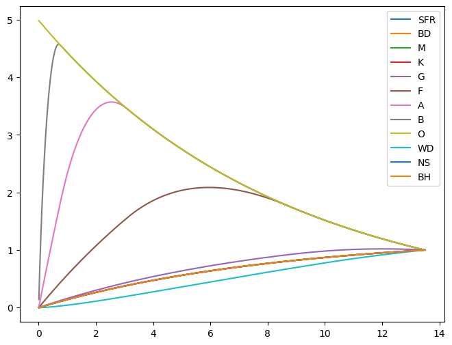
from matplotlib import cm
from matplotlib.colors import Normalize
target_counts = {
# https://www.aanda.org/articles/aa/pdf/2023/06/aa43919-22.pdf
'O': 5e-7,
'B': 3.9e-4,
'A': 6.0e-3,
'F': 0.031,
'G': 0.059,
'K': 0.129,
'M': 0.725,
}
print(np.sum(list(target_counts.values())))
remnants = {
'BH': 1e8, # https://www.aanda.org/articles/aa/pdf/2020/06/aa36557-19.pdf
'NS': 1e8, # https://www.aanda.org/articles/aa/pdf/2010/02/aa12222-09.pdf
'WD': 11.5e9, # https://iopscience.iop.org/article/10.1088/1742-6596/172/1/012004/pdf
'BD': 1e11}
N = 400e9
N_remnants = np.sum(list(remnants.values()))
N_stars = N - N_remnants
N_counts = {k : N * v for k, v in target_counts.items()}
N_counts.update(remnants)
0.9503904999999999
import numpy as np
import matplotlib.pyplot as plt
from matplotlib.colors import Normalize
class CustomBreakNorm(Normalize):
"""
Piecewise‐linear Normalize that:
- breaks at the user’s `breaks` values,
- allocates equal colorbar length to each interval,
- is linear *within* each interval.
"""
def __init__(self, breaks, clip=False):
"""
breaks : sorted list or array of break‐values [v0, v1, …, vN]
clip : whether to clip values outside [v0,vN]
"""
breaks = np.array(breaks, dtype=float)
super().__init__(vmin=breaks[0], vmax=breaks[-1], clip=clip)
self.breaks = breaks
self.nint = len(breaks) - 1
# each interval gets 1/nint of the colorbar
self.frac = np.ones(self.nint) / self.nint
self.cumfrac = np.concatenate(([0], np.cumsum(self.frac)))
def __call__(self, x, clip=None):
x = np.array(x, copy=False)
out = np.zeros_like(x, dtype=float)
# map each interval linearly into its slice
for i in range(self.nint):
lo, hi = self.breaks[i], self.breaks[i+1]
mask = (x >= lo) & (x <= hi)
f0, f1 = self.cumfrac[i], self.cumfrac[i+1]
out[mask] = f0 + (x[mask] - lo) / (hi - lo) * (f1 - f0)
# clamp under/over values
out[x < self.breaks[0]] = 0.0
out[x > self.breaks[-1]] = 1.0
return out
# --- Replace these with your actual data ---
# hist_tvals: 1D array of bin edges (length M+1)
# grand_mean: dict mapping Y-values to 1D arrays (length M)
# For demonstration, here’s dummy data:
hist_tvals = np.linspace(0, 1, 51) * 1e11 # 50 bins from 0 to 1e11
ys = np.linspace(0, 10, 20) # 20 different “rows”
grand_mean = {y: np.random.lognormal(8, 2, len(hist_tvals)-1) for y in ys}
# ------------------------------------------
# 1) Choose your break‐points:
breaks = [1e6, 5e6, 1e8, 1e11]
norm = CustomBreakNorm(breaks)
# 2) Build the 2D array for pcolormesh:
X = hist_tvals[:-1]
Y = np.array(list(grand_mean.keys()))
Z = np.vstack(list(grand_mean.values()))
# 3) Plot:
fig, ax = plt.subplots(figsize=(8, 6))
mesh = ax.pcolormesh(X, Y, Z, cmap='viridis', norm=norm)
cb = fig.colorbar(mesh, ax=ax)
# 4) Evenly space ticks & label them at your breaks:
n = len(breaks) - 1
tick_locs = np.linspace(0, 1, n+1)
tick_labels = [f"{b:.0e}" for b in breaks]
cb.set_ticks(tick_locs)
cb.set_ticklabels(tick_labels)
cb.set_label("Value")
ax.set_xlabel("T-value bins")
ax.set_ylabel("Grand-mean key")
plt.tight_layout()
plt.show()
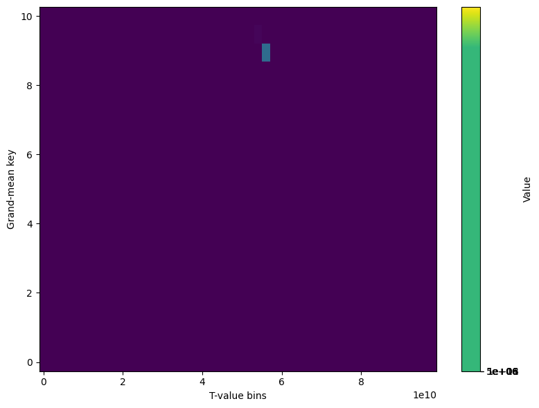
import numpy as np
import matplotlib.pyplot as plt
# dummy data
data = np.arange(6*4).reshape(4,6)
col_names = list("ABCDEF")
fig, ax = plt.subplots(figsize=(6, 4))
mesh = ax.pcolormesh(data, edgecolors='grey', linewidth=0.5)
# number of columns
ncols = data.shape[1]
# 1) Major ticks at the cell *edges* (0,1,2,...,ncols), no labels
ax.set_xticks(np.arange(ncols+1), minor=False)
ax.set_xticklabels([])
ax.xaxis.set_tick_params(which='major', length=5) # tick mark length
# (you can tweak length, width, etc.)
# 2) Minor ticks at the cell *centers* (.5,1.5,...,ncols-0.5), with labels
centers = np.arange(ncols) + 0.5
ax.set_xticks(centers, minor=True)
ax.set_xticklabels(col_names, minor=True)
ax.xaxis.set_tick_params(which='minor', length=0) # hide the minor tick marks
ax.xaxis.set_tick_params(which='minor', labelsize=10)
# 3) If you inverted y before, restore or adjust as needed
ax.invert_yaxis()
fig.colorbar(mesh, ax=ax, label='Value')
plt.tight_layout()
plt.show()
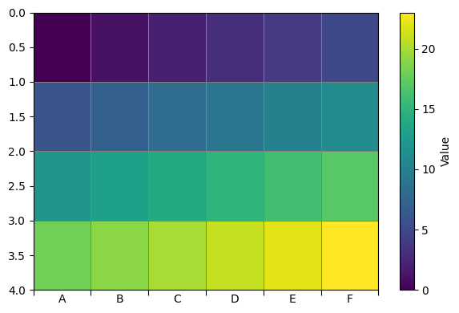
import math
class LatexFloat(float):
def __format__(self, spec: str) -> str:
# If the spec ends with 'L', do our LaTeX‐scientific formatting
if spec.endswith("L"):
# strip the 'L'
sig_spec = spec[:-1]
# parse number of significant figures (default 1)
if sig_spec.startswith("."):
sig = int(sig_spec[1:])
elif sig_spec:
sig = int(sig_spec)
else:
sig = 1
x = self
if x == 0:
mant, exp = 0, 0
else:
exp = math.floor(math.log10(abs(x)))
mant = x / (10 ** exp)
# we want (sig-1) decimals after the comma
decs = max(sig - 1, 0)
mant_str = f"{mant:.{decs}f}".replace(".", ",")
# return *just* the LaTeX snippet—no dollar signs
return f"${mant_str}\\cdot10^{{{exp}}}$"
# otherwise, fall back to normal float formatting
return super().__format__(spec)
x = LatexFloat(11230)
print(f"{x:.4L}") # → 1,123\cdot10^{4}
y = LatexFloat(0.005678)
print(f"{y:.3L}") # → 5,68\cdot10^{-3}
z = LatexFloat(0)
print(f"{z:.5L}") # → 0\cdot10^{0}
---------------------------------------------------------------------------
ModuleNotFoundError Traceback (most recent call last)
Cell In[218], line 2
1 # file: latex_fstrings.py
----> 2 from macropy.core.macros import Macros
3 from macropy.core.walkers import Walker
4 import ast, math
ModuleNotFoundError: No module named 'macropy'
import numpy as np
import matplotlib.pyplot as plt
from matplotlib.colors import Normalize
import numpy as np
import matplotlib.pyplot as plt
import matplotlib.colors as mcolors
import matplotlib.ticker as ticker
from IPython.display import display, Markdown
import graphpackage as gp
gp.useLatex()
heatmap = np.array([])
hist_tvals = np.array([0,2,4, 6, 8, 10, 12, 13.8])
# hist_tvals = np.array([0,1,2,3,4,5,6,7,8,9,10,11,12,13, 13.8])
t_vals = stars_params['O']['t_vals']
t_args = []
for i in range(len(hist_tvals) - 1):
low = hist_tvals[i]
high = hist_tvals[i+1]
# boolean mask: t_vals >= low AND t_vals < high
mask = (t_vals >= low) & (t_vals < high)
idxs = np.where(mask)[0] # get 1D array of indices
t_args.extend(idxs)
grand_mean = {}
for key in stars_params.keys():
small_mean = []
for i in range(1, len(hist_tvals)):
t_vals = stars_params[key]['t_vals']
indices = np.digitize(t_vals[:-1], hist_tvals)
args = np.argwhere(indices == i)
small_mean.append(np.mean(stars_params[key]['counts_in_row'][args]))
grand_mean[key] = np.array(small_mean)*N_counts[key]
keys = list(grand_mean.keys())
remnants = ['BH', 'NS', 'WD']
for key in remnants:
if key in keys:
keys.remove(key)
data = np.log10(np.array([grand_mean[key] for key in keys]))
vmin, vmax = data.min(), data.max()
print(vmin, vmax)
interiors = [np.log10(grand_mean['O'].max()), 8,9,9.5, 10, np.log10(grand_mean['M'].min()), 10.9, np.log10((grand_mean['M'].min()+grand_mean['M'].max())*0.5)] # breakpoints in the data
A = np.concatenate(([vmin], interiors, [vmax]))
levels = np.linspace(0, 1, len(A),endpoint=True) # [0, 1] for n+2 points
# forward: data→[0,1]; inverse: [0,1]→data
forward = lambda x: np.interp(x, A, levels)
inverse = lambda x: np.interp(x, levels, A)
norm = mcolors.FuncNorm((forward,inverse))
fig, ax = plt.subplots(figsize=(8,6))
T_edges = hist_tvals
Y_edges = np.arange(len(keys) + 1)
pcm = ax.pcolormesh(Y_edges, T_edges, data.T, norm=norm)
cbar = fig.colorbar(pcm, ax=ax)
cbar.set_ticks(A) # set ticks at the breakpoints
cbar.ax.minorticks_on()
min_positions = [np.linspace(A[i], A[i+1], 10)[1:] for i in range(len(A)-1)]
minor_positions = np.array(min_positions).flatten()
cbar.set_ticks(minor_positions, minor=True)
#cbar.set_ticklabels([f"{LatexFloat(x):.3L}" for x in A])
cbar.set_ticklabels([f"{x:.2f}" for x in A])
cbar._minor_ticks = cbar.ax.yaxis.get_minor_ticks()
for tick in cbar._minor_ticks:
tick.tick1line.set_markersize(4)
T_centers = 0.5*(T_edges[:-1] + T_edges[1:])
Y_centers = 0.5*(Y_edges[:-1] + Y_edges[1:])
n_Y, n_T = data.shape
colors = ['black', 'black', 'black', 'white', 'white', 'white', 'white', 'white']
for i in range(n_T): # i indexes T_centers (the y‐positions)
for j in range(n_Y): # j indexes Y_centers (the x‐positions)
ax.text(
Y_centers[j], # x‐coordinate
T_centers[i], # y‐coordinate
f"{data[j, i]:.2f}", # your label; format as you like
ha="center", va="center", color=colors[j]
)
centers = np.arange(len(Y_edges)-1) + 0.5
ax.set_xticks(centers, minor=True)
ax.set_xticklabels(keys, minor=True)
ax.xaxis.set_tick_params(which='minor', length=0) # hide the minor tick marks
ax.xaxis.set_tick_params(which='minor', labelsize=10)
ax.xaxis.set_ticklabels([]) # tick mark length
secax = ax.secondary_xaxis(-0.15, functions=(lambda x: x, lambda x: x))
# only show the bottom spine/ticks
secax.spines['top'].set_visible(False)
secax.spines['right'].set_visible(False)
secax.spines['left'].set_visible(False)
secax.xaxis.set_tick_params(which='major', length=5)
# use exactly the same centers – but with different labels
print(keys)
second_labels = [list(star_types[name])[0] for name in keys]
second_labels.extend([list(star_types['O'])[1]])
print(second_labels)
print(list(star_types['O'])[1])
secax.xaxis.set_ticklabels(second_labels, minor=False)
secax.grid(True, which='major', color='lightgray', alpha=0.5)
# secax.spines['bottom'].set_position(('outward', 5))
tick_positions = ax.get_xticks()
lines = ax.vlines(
tick_positions,
ymin=-0.15,
ymax=-0.05,
transform=ax.get_xaxis_transform(),
linewidth=0.5,
linestyles=(0,(5,5)),
colors='gray',
clip_on=False
)
ytick_positions = ax.get_yticks()
ytick_positions[-1] = 13.8
ax.set_yticks(ytick_positions, minor=False)
lines.set_capstyle('round')
lines.set_joinstyle('round')
plt.show()
5.339994201060095 11.45204460259979
['BD', 'M', 'K', 'G', 'F', 'A', 'B', 'O']
[0.01, 0.1, 0.45, 0.8, 1.04, 1.4, 2.1, 16, 100]
100
C:\Users\adamc\AppData\Local\Temp\ipykernel_17924\2809651017.py:114: UserWarning: set_ticklabels() should only be used with a fixed number of ticks, i.e. after set_ticks() or using a FixedLocator.
secax.xaxis.set_ticklabels(second_labels, minor=False)
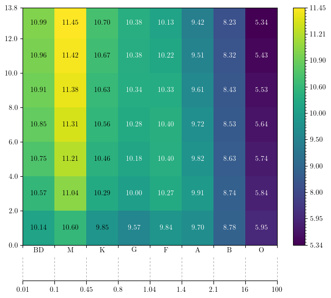
vmin = 1e6
vmax = 1e11
interiors = np.linspace(vmin, vmax, n+2)[1:-1] # n points strictly inside
A = np.concatenate(([vmin], interiors, [vmax]))
levels = np.linspace(0, 1, len(A), endpoint=True) # [0, 1] for n+2 points
print(levels)
print(A)
def length(x):
"""Length of the interval [x[0], x[-1]]"""
return x[-1] - x[0]
def normal(x, A, levels, forward=True):
if forward:
# x, y
# levels (x_values) are mapped to [0, 1]
res = np.interp(x, levels, A),
else:
res = np.interp(x, , A)
return res
# x y
print(normal(A, levels, A, forward=True))
[0. 0.25 0.5 0.75 1. ]
[1.000000e+06 2.500075e+10 5.000050e+10 7.500025e+10 1.000000e+11]
[1.000000e+06 2.500075e+10 5.000050e+10 7.500025e+10 1.000000e+11]
nx, ny = 200, 200
# 1D coordinate vectors
x = np.linspace(0, 10, nx)
y = np.linspace(0, 10, ny)
# 2D meshgrid
X, Y = np.meshgrid(x, y)
# normalized “pattern” in [0,1]
# here we use a simple product so values run from 0 at (0,0) to 1 at (10,10)
Z = (X/10) * (Y/10)
# scale to [vmin, vmax]
data = vmin + (vmax - vmin) * Z
import numpy as np
import matplotlib.pyplot as plt
import matplotlib.colors as mcolors
import matplotlib.ticker as ticker
# your existing setup
vmin, vmax = 1, 100
n = 5 # for example
interiors = [10,12,19,20]
A = np.concatenate(([vmin], interiors, [vmax]))
levels = np.linspace(0, 1, len(A),endpoint=True) # [0, 1] for n+2 points
# forward: data→[0,1]; inverse: [0,1]→data
forward = lambda x: np.interp(x, A, levels)
inverse = lambda x: np.interp(x, levels, A)
# build the FuncNorm
norm = mcolors.FuncNorm((forward,inverse))
data = np.power(np.random.rand(len(X)-1, len(Y)-1),5)* (vmax - vmin) + vmin # example data
# then use it in any mappable
fig, ax = plt.subplots()
pcm = ax.pcolormesh(X, Y, data, cmap='viridis', norm=norm)
cbar = fig.colorbar(pcm, ax=ax)
cbar.set_ticks(A) # set ticks at the breakpoints
cbar.ax.minorticks_on()
min_positions = [np.linspace(A[i], A[i+1], )[1:] for i in range(len(A)-1)]
minor_positions = np.array(min_positions).flatten()
cbar.set_ticks(minor_positions, minor=True)
cbar._minor_ticks = cbar.ax.yaxis.get_minor_ticks()
for tick in cbar._minor_ticks:
tick.tick1line.set_markersize(4)
plt.show()
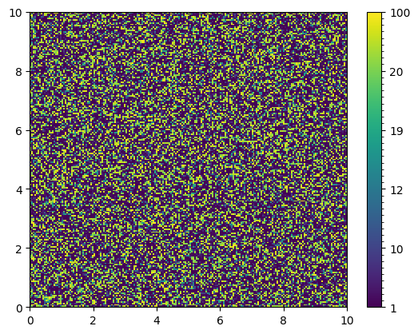
import numpy as np
import matplotlib.pyplot as plt
from matplotlib.colors import FuncNorm
from matplotlib.cm import ScalarMappable
# --- Dummy data (replace with yours) ---
hist_tvals = np.linspace(0, 1, 51) * 1e11
ys = np.linspace(0, 10, 20)
grand_mean = {y: np.random.lognormal(8, 2, len(hist_tvals)-1) for y in ys}
X = hist_tvals[:-1]
Y = np.array(list(grand_mean.keys()))
Z = np.vstack(list(grand_mean.values()))
# ----------------------------------------
# 1) find vmin, vmax
vmin, vmax = Z.min(), Z.max()
# 2) pick n interior points (e.g. n=3) and build A = [vmin, ... interior ..., vmax]
n = 3
interiors = np.linspace(vmin, vmax, n+2)[1:-1] # n points strictly inside
A = np.concatenate(([vmin], interiors, [vmax]))
# now len(A) == n+2
# 3) build normalized levels *exactly* equidistant in [0,1]
levels = np.linspace(0, 1, len(A)) # e.g. [0, 0.25, 0.5, 0.75, 1] for n=3
# 4) make a FuncNorm that linearly interpolates between (A[i] ↔ levels[i])
norm = FuncNorm(
(
)
# 5) plot your mesh with shading='auto'
fig, ax = plt.subplots(figsize=(8,6))
mesh = ax.pcolormesh(X, Y, Z, cmap='viridis', norm=norm, shading='auto')
ax.set_xlabel("T-value bins")
ax.set_ylabel("Grand-mean key")
# 6) draw a standalone continuous colorbar
sm = ScalarMappable(norm=norm, cmap='viridis')
sm.set_array([])
cb = fig.colorbar(sm, ax=ax)
cb.solids.set_edgecolor("face") # remove patch edges
cb.solids.set_linewidth(0)
# 7) overlay white separator lines at the internal levels
for lev in levels[1:-1]:
cb.ax.hlines(lev, *cb.ax.get_xlim(), color='white', linewidth=2)
# 8) place ticks *exactly* at those levels (they are equidistant by construction)
cb.set_ticks(levels)
cb.set_ticklabels([f"{val:.2e}" for val in levels])
cb.ax.yaxis.set
<bound method YAxis.set of <matplotlib.axis.YAxis object at 0x00000277DF373B00>>
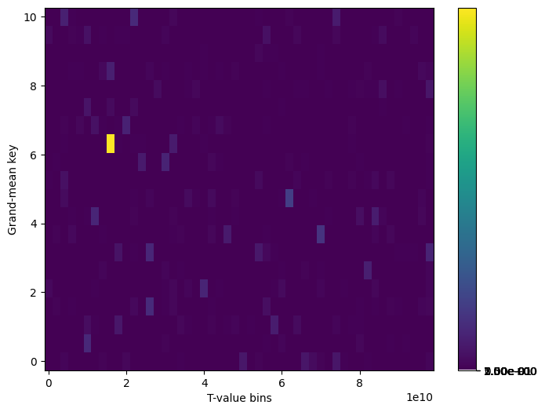
heatmap = np.array([])
hist_tvals = np.array([0,1,2,3,4,5, 6, 7, 8, 9, 10, 11, 12, 13, 13.8])
t_vals = stars_params['O']['t_vals']
t_args = np.array([])
for i, t in enumerate(hist_tvals):
argsA = np.argwhere(hist_tvals[i] == t_vals)
print(argsA)
argsB = np.argwhere(hist_tvals[i] > t_vals)
grand_mean = {}
for key in stars_params.keys():
small_mean = []
for i in range(1, len(hist_tvals)):
# Get the data for the current key
t_vals = stars_params[key]['t_vals']
# Get the indices of the bins
indices = np.digitize(t_vals[:-1], hist_tvals)
# Get the values in the current bin
args = np.argwhere(indices == i)
small_mean.append(np.mean(stars_params[key]['counts_in_row'][args]))
grand_mean[key] = np.array(small_mean)*N_counts[key]
data = np.array(list(grand_mean.values()))
from matplotlib.colors import SymLogNorm, PowerNorm, LogNorm
fig, ax = plt.subplots(figsize=(8, 6))
ax.pcolormesh(hist_tvals[:-1], grand_mean.keys(), grand_mean.values(), cmap='viridis', norm=norm)
cb = ax.figure.colorbar(ax.collections[0], ax=ax, orientation='vertical')
[[0]]
[]
[]
[]
[]
[]
[]
[]
[]
[]
[]
[]
[]
[]
[]
{'BD': array([7.24533715e+09, 2.05456328e+10, 3.22688568e+10, 4.26775699e+10,
5.19191666e+10, 6.01245144e+10, 6.74098066e+10, 7.38782078e+10,
7.96213150e+10, 8.47204546e+10, 8.92478340e+10, 9.32675637e+10,
9.68365661e+10, 9.92595710e+10]), 'M': array([2.10114777e+10, 5.95823352e+10, 9.35796846e+10, 1.23764953e+11,
1.50565583e+11, 1.74361092e+11, 1.95488439e+11, 2.14246803e+11,
2.30901814e+11, 2.45689318e+11, 2.58818718e+11, 2.70475935e+11,
2.80826042e+11, 2.87852756e+11]), 'K': array([3.73859397e+09, 1.06015465e+10, 1.66507301e+10, 2.20216261e+10,
2.67902900e+10, 3.10242494e+10, 3.47834602e+10, 3.81211552e+10,
4.10845985e+10, 4.37157546e+10, 4.60518823e+10, 4.81260629e+10,
4.99676681e+10, 5.12179387e+10]), 'G': array([1.94496784e+09, 5.51535342e+09, 8.66238343e+09, 1.14565408e+10,
1.39373927e+10, 1.61400697e+10, 1.80957632e+10, 1.98321672e+10,
2.13727962e+10, 2.26516274e+10, 2.35375707e+10, 2.39850967e+10,
2.39940296e+10, 2.37344652e+10]), 'F': array([3.63613936e+09, 1.03110156e+10, 1.61944238e+10, 2.11799257e+10,
2.43135531e+10, 2.56739296e+10, 2.56302440e+10, 2.44655976e+10,
2.24068720e+10, 1.99493457e+10, 1.77124498e+10, 1.57263744e+10,
1.39629952e+10, 1.27658325e+10]), 'A': array([2.93614472e+09, 7.21089613e+09, 8.47915266e+09, 7.88157231e+09,
6.99790953e+09, 6.21324245e+09, 5.51655914e+09, 4.89799409e+09,
4.34878797e+09, 3.86116367e+09, 3.42821609e+09, 3.04381440e+09,
2.70251520e+09, 2.47080629e+09]), 'B': array([5.67924695e+08, 6.49877868e+08, 5.77007854e+08, 5.12308666e+08,
4.54864119e+08, 4.03860759e+08, 3.58576344e+08, 3.18369616e+08,
2.82671218e+08, 2.50975639e+08, 2.22834046e+08, 1.97847936e+08,
1.75663488e+08, 1.60602409e+08]), 'O': array([939167.63030716, 833176.75349111, 739753.65882286, 656805.9819826 ,
583159.12712696, 517770.20441437, 459713.26197028, 408166.17377613,
362398.99780427, 321763.63953473, 285684.67450022, 253651.19987498,
225209.5997472 , 205900.52408834]), 'WD': array([2.01660950e+08, 8.78818062e+08, 1.73610248e+09, 2.67588872e+09,
3.65352140e+09, 4.64342065e+09, 5.62959447e+09, 6.60169525e+09,
7.55295332e+09, 8.47902688e+09, 9.36482438e+09, 1.01630662e+10,
1.08718022e+10, 1.13529649e+10]), 'NS': array([ 7208671.69747985, 20514224.76477145, 32242082.84483157,
42654910.48137792, 51900160.43650593, 60108751.77367551,
67396923.76120317, 73867881.89981346, 79613259.3831254 ,
84714414.6863549 , 89243583.65797593, 93264902.4287469 ,
96835315.6231937 , 99259278.34664029]), 'BH': array([ 7244144.78905105, 20544611.44979971, 32267986.07695922,
42676832.98471846, 51918548.56533024, 60124001.8330937 ,
67409387.619116 , 73877871.96960245, 79621053.04764014,
84720258.22584388, 89247695.7375833 , 93267477.19496045,
96836525.45309205, 99259561.51775497])}
939167.6303071579
---------------------------------------------------------------------------
NameError Traceback (most recent call last)
Cell In[26], line 39
36 vmin, vmax = 1e6, data.max()
38 breaks = [1e5, 1e6, 1e9, 1e11]
---> 39 norm = CustomBreakNorm(breaks)
41 from matplotlib.colors import SymLogNorm, PowerNorm, LogNorm
42 fig, ax = plt.subplots(figsize=(8, 6))
NameError: name 'CustomBreakNorm' is not defined
def minmax(n):
return np.min(n), np.max(n)
m_edges = np.concatenate([stars[k]['m'][:-1] for k in order if not k in ['BH', 'NS', 'WD']])
m_hline_edges = [stars[k]['m'][0] for k in order if not k in ['BH', 'NS', 'WD']]
m_hline_edges = np.append(m_hline_edges, [100])
m_ticks_centres = [
10**(0.5*np.log10(stars[k]['m'][0]) + 0.5*np.log10(stars[k]['m'][-1]))
for k in order if not k in ['BH', 'NS', 'WD']]
SCH = np.column_stack([stars[k]['SCH'] for k in order if not k in ['BH', 'NS', 'WD']]) # shape (nt-1, 8*(nm-1)))))
fig, ax = plt.subplots(figsize=(8, 5))
extent = [min(m_edges), max(m_edges), 0.0, T_final]
import matplotlib as mpl
pcm = ax.pcolormesh(np.append(m_edges, max(m_edges)), t_vals, SCH, shading='auto', norm=mpl.colors.SymLogNorm(linthresh=1e-16))
print(m_edges)
ax.vlines(m_hline_edges, 0, T_final, color='lightgray', linestyle='--', lw=0.5, alpha=0.5)
from mpl_toolkits.axes_grid1 import make_axes_locatable
divider = make_axes_locatable(ax) # tie the divider to *ax*’s figure
cax = divider.append_axes("right", # where to put the bar
size="3%", # width (or height) of the bar
pad=0.1) # space between plot and bar
x_deathCurve = np.linspace((10/13.5)**(1/delta), 100, 100000)
y_deathCurve = tau_star(x_deathCurve)
ax.plot(x_deathCurve, y_deathCurve, color='red', linestyle='--', lw=0.5)
cb = fig.colorbar(pcm, cax=cax)
vmin, vmax = 0, SCH.max()
norm = mpl.colors.PowerNorm(gamma=0.05, vmin=vmin, vmax=vmax)
ticks_norm = np.linspace(0, 1, 10) # 0 … 1 evenly spaced
ticks_data = norm.inverse(ticks_norm)
def sci_label(val, _):
"""Return 'mantissa × 10**exponent' (handles val = 0)."""
if val == 0:
return "0"
exp = int(np.floor(np.log10(abs(val))))
mant = val / 10**exp
return rf"${mant:.2g} \cdot 10^"+"{"+f"{exp}"+"}$"
cb.set_label('SCH')
from matplotlib.ticker import FuncFormatter
from matplotlib.ticker import SymmetricalLogLocator
norm = mpl.colors.SymLogNorm(linthresh=1e-16, vmin=0, vmax=SCH.max())
cb.ax.yaxis.set_minor_locator(
SymmetricalLogLocator(
linthresh=norm.linthresh, # match your SymLogNorm settings
base=10, # base (default 10 unless you changed it)
subs=[2, 3, 4, 5, 6, 7, 8, 9], # typical minor ticks between decades
)
)
axt = ax.twiny()
axt.set_xscale('log')
axt.set_xticks(m_ticks_centres)
axt.set_xticklabels([key for key in order if not key in ['BH', 'NS', 'WD']])
axt.set_xlabel('spectral type')
axt.set_xlim(ax.get_xlim())
log_ticks = np.log10([0.01, 0.1, 1, 10, 100])
ax.set_xticks(log_ticks)
ax.set_xticklabels([0.01, 0.1, 1, 10, 100])
ax.set_xscale('log')
ax.set_xlim(0.01, 100)
ax.set_xlabel(r"stellar mass $m \;[M_\odot]$")
ax.set_ylabel(r"cosmic time $t_0$ [Gyr]")
ax.set_title(r"$\log_{10}\,{\rm SCH}(m,\,t_0)$")
axt.minorticks_off()
[1.0000e-02 1.0070e-02 1.0140e-02 ... 9.9748e+01 9.9832e+01 9.9916e+01]
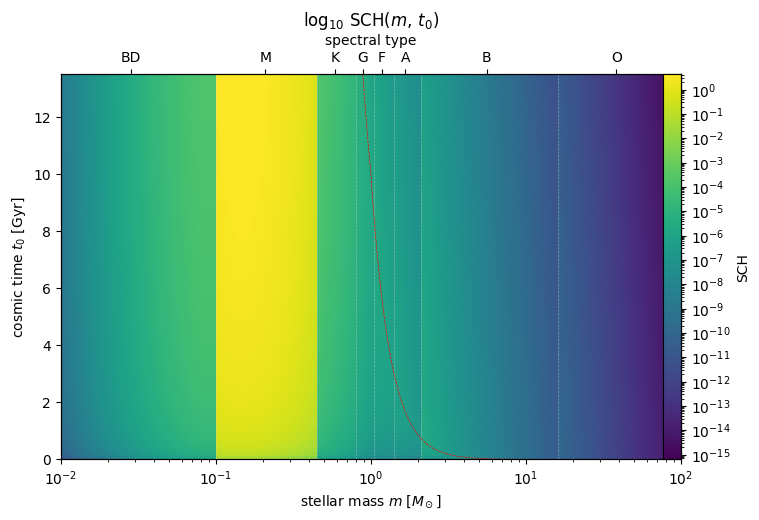
def SCHnormed(m, t0, xi_integral=1, remnants=False):
# tau_star = 10.0 * m**(-delta)
CSFR_prev = CSFR(t0 - tau_star(m))
if remnants:
res = (CSFR_prev-CSFR(0))/xi_integral * np.heaviside(t0-tau_star(m),1)
return res
else:
CSFR_now = CSFR(t0)
return (CSFR_now - CSFR_prev)
mass = stars_params['O']['m_vals']
mass_centers = (stars_params['O']['m_vals'][:-1] + stars_params['O']['m_vals'][1:])*0.5
mass_unnormed = stars_params['O']['SCH_grid']/xi_new[np.newaxis,:]
fig, ax = plt.subplots(figsize=(8, 5), subplot_kw={'projection': '3d'})
t = stars_params['O']['t_vals']
t_centers = (t[:-1] + t[1:])*0.5
M, T = np.meshgrid(stars_params['O']['m_vals'], stars_params['O']['t_vals'], indexing='xy') # shapes (nt, nm)
mass_unnormed = SCHnormed(M, T, remnants=False)
mass_unnormed = mass_unnormed/mass_unnormed[:,-1][:,np.newaxis]
M, T = np.meshgrid(mass, t_centers, indexing='xy') # shapes (nt, nm)
print(np.diff(mass_unnormed,axis=0).shape)
print(M.shape, T.shape)
ax.plot_surface(M, T, np.diff(mass_unnormed,axis=0), cmap='viridis', edgecolor='none')
(1000, 1001)
(1000, 1001) (1000, 1001)
C:\Users\adamc\AppData\Local\Temp\ipykernel_15692\916143493.py:10: RuntimeWarning: invalid value encountered in divide
mass_unnormed = mass_unnormed/mass_unnormed[:,-1][:,np.newaxis]
<mpl_toolkits.mplot3d.art3d.Poly3DCollection at 0x1f8a8521e80>
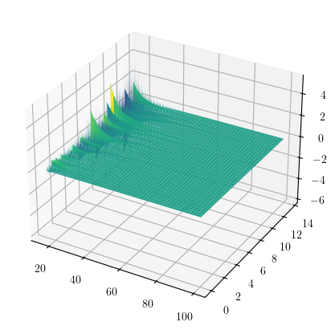
from matplotlib.ticker import Locator, SymmetricalLogLocator, MultipleLocator
import numpy as np
import matplotlib.ticker as mticker
import matplotlib.colors as mcolors
class MinorSymLogLocator(Locator):
"""Minor ticks for a symlog axis."""
def __init__(self, linthresh, nints=10):
self.linthresh = float(linthresh)
self.nintervals = int(nints)
def __call__(self):
maj = np.asarray(self.axis.get_majorticklocs())
if maj.size < 2:
return self.raise_if_exceeds(np.array([]))
# fill a virtual major either side so we cover the whole data range
dm_low, dm_up = maj[1]-maj[0], maj[-1]-maj[-2]
maj = np.insert(maj, 0, maj[0]-dm_low)
maj = np.append(maj, maj[-1]+dm_up)
minor = []
for lo, hi in zip(maj[:-1], maj[1:]):
step = (hi-lo) / (self.nintervals if abs((lo+hi)/2) < self.linthresh
else self.nintervals-1)
minor.extend(np.arange(lo+step, hi, step))
return self.raise_if_exceeds(np.asarray(minor))
def tick_values(self, vmin, vmax): # required by matplotlib
self.axis = type("dummy", (), dict(get_majorticklocs=lambda *a: [vmin, vmax]))
return self()
class MinorSymLogLocator(Locator):
"""
Minor ticks for a symlog axis:
• inside |x| < linthresh the distance is linear and split into *nints*
equal intervals → nints-1 minor ticks.
• outside that region normal log-minor ticks are taken from
SymmetricalLogLocator(subs=2…9).
"""
def __init__(self, linthresh, nints=4, base=10, subs=range(2,10)):
self.linthresh = float(linthresh)
self.nints = int(nints) # 4 ⇒ 3 minor ticks
self._logminor = mticker.SymmetricalLogLocator(linthresh, base, subs)
# ------------------------------------------------------------------
def _linear_minor(self, majors):
"""evenly spaced ticks between majors inside the linear part"""
minors = []
for lo, hi in zip(majors[:-1], majors[1:]):
if abs((lo+hi)/2) < self.linthresh: # this segment is linear
step = (hi-lo) / self.nints # nints intervals ⇒ nints-1 ticks
minors.extend(np.arange(lo+step, hi, step))
return minors
# ------------------------------------------------------------------
def __call__(self):
vmin, vmax = self.axis.get_view_interval()
majors = self.axis.get_majorticklocs()
minor_log = self._logminor.tick_values(vmin, vmax) # outside ±linthresh
minor_linear = self._linear_minor(majors)
ticks = np.unique(np.concatenate([minor_log, minor_linear]))
ticks = ticks[np.isfinite(ticks)] # safety
return self.raise_if_exceeds(ticks)
# required by Matplotlib’s API
def tick_values(self, vmin, vmax):
self.axis = type("dummy", (), dict(get_view_interval=lambda: (vmin, vmax),
get_majorticklocs=lambda: np.array([-self.linthresh, 0., self.linthresh])))
return self()
import numpy as np
import matplotlib.ticker as mticker
from matplotlib.ticker import Locator
class MinorSymLogLocator(Locator):
"""
Minor ticks for a symlog axis:
• inside |x| < linthresh the distance is linear and split into nints
equal intervals → nints-1 minor ticks.
• outside that region normal log‐minor ticks are taken from
SymmetricalLogLocator(subs=range(2,10)).
"""
def __init__(self, linthresh, nints=4, base=10, subs=range(2,10)):
self.linthresh = float(linthresh)
self.nints = int(nints)
# ← here use keywords, not positional:
self._logminor = mticker.SymmetricalLogLocator(
linthresh=self.linthresh,
base=base,
subs=subs)
def _linear_minor(self, majors):
minors = []
for lo, hi in zip(majors[:-1], majors[1:]):
if abs((lo+hi)/2) < self.linthresh:
step = (hi - lo) / self.nints
minors.extend(np.arange(lo + step, hi, step))
return minors
def __call__(self):
vmin, vmax = self.axis.get_view_interval()
majors = self.axis.get_majorticklocs()
minor_log = self._logminor.tick_values(vmin, vmax)
minor_linear = self._linear_minor(majors)
ticks = np.unique(np.concatenate([minor_log, minor_linear]))
return self.raise_if_exceeds(ticks)
def tick_values(self, vmin, vmax):
# fallback for autoscaling
self.axis = type("dummy", (), {
"get_view_interval": lambda *a: (vmin, vmax),
"get_majorticklocs": lambda *a: np.array([-self.linthresh, 0., self.linthresh])
})
return self()
import numpy as np
import matplotlib.ticker as mticker
from matplotlib.ticker import Locator
class MinorSymLogLocator(Locator):
"""
Minor ticks for a symlog axis or colorbar:
• Inside |x| < linthresh we place exactly `n_sub` linear ticks,
equally spaced between each pair of major ticks.
• Outside that region we defer to SymmetricalLogLocator(subs=2…9)
to get the usual decades-subdivisions.
"""
def __init__(self, linthresh, n_sub=4, base=10, subs=range(2,10)):
self.linthresh = float(linthresh)
self.n_sub = int(n_sub)
# for the log-regions
self._logminor = mticker.SymmetricalLogLocator(
linthresh=self.linthresh,
base=base,
subs=subs)
def _linear_minor(self, majors):
out = []
# walk each gap of the major ticks:
for lo, hi in zip(majors[:-1], majors[1:]):
mid = 0.5*(lo+hi)
if abs(mid) < self.linthresh:
# n_sub ticks ⇒ n_sub+1 intervals
step = (hi - lo) / (self.n_sub + 1)
for k in range(1, self.n_sub + 1):
out.append(lo + k*step)
return out
def __call__(self):
vmin, vmax = self.axis.get_view_interval()
majors = self.axis.get_majorticklocs()
# outside ±linthresh → log minors
minors_log = self._logminor.tick_values(vmin, vmax)
# inside ±linthresh → linear minors
minors_lin = self._linear_minor(majors)
all_minor = np.unique(np.concatenate([minors_log, minors_lin]))
return self.raise_if_exceeds(all_minor)
def tick_values(self, vmin, vmax):
# fallback for autoscale:
self.axis = type("dummy", (), dict(
get_view_interval = lambda *a: (vmin, vmax),
get_majorticklocs = lambda *a: np.array(
[-self.linthresh, 0., self.linthresh])
))
return self()
import numpy as np
import matplotlib.ticker as mticker
from matplotlib.ticker import Locator
class MinorSymLogLocator(Locator):
"""
Minor ticks for a symlog axis or color-bar.
• Inside |x| < *linthresh* place exactly *n_sub* linearly-spaced ticks
between every pair of major ticks.
• Outside that region fall back to the usual log-minor ticks
(2 … 9) supplied by SymmetricalLogLocator.
"""
def __init__(self, linthresh, n_sub=4, base=10, subs=range(2, 10)):
self.linthresh = float(linthresh)
self.n_sub = int(n_sub)
# use **keyword arguments** – otherwise the positional arguments
# are interpreted as (transform, subs, linthresh)
self._logminor = mticker.SymmetricalLogLocator(
linthresh=self.linthresh,
base=base,
subs=list(subs) # range → list for Python 3 convenience
)
# ------------------------------------------------------------------
def _linear_minor(self, majors):
"""Return the *n_sub* evenly-spaced minors between each
adjacent pair of major ticks that lie inside the linear region."""
out = []
for lo, hi in zip(majors[:-1], majors[1:]):
mid = 0.5 * (lo + hi)
if abs(mid) < self.linthresh:
step = (hi - lo) / (self.n_sub + 1)
out.extend(lo + k * step for k in range(1, self.n_sub + 1))
return out
# ------------------------------------------------------------------
def __call__(self):
vmin, vmax = self.axis.get_view_interval()
majors = self.axis.get_majorticklocs()
# log-style minors outside ±linthresh
minors_log = self._logminor.tick_values(vmin, vmax)
# linear minors inside ±linthresh
minors_lin = self._linear_minor(majors)
ticks = np.unique(np.concatenate([minors_log, minors_lin]))
return self.raise_if_exceeds(ticks)
# ------------------------------------------------------------------
def tick_values(self, vmin, vmax):
"""Return tick locations within the explicit vmin/vmax span."""
# build an ad-hoc axis describing that span so that __call__
# can do the real work
self.axis = type(
"dummy", (), {
"get_view_interval": lambda *a: (vmin, vmax),
"get_majorticklocs": lambda *a: np.array(
[-self.linthresh, 0.0, self.linthresh])
}
)
ticks = self()
return ticks[(ticks >= vmin) & (ticks <= vmax)] # keep in range
import matplotlib.pyplot as plt
import matplotlib as mpl
import numpy as np
x = np.linspace(-3, 3, 161).reshape(23, 7) # dummy data
linthresh = 1e-1
norm = mpl.colors.SymLogNorm(linthresh, vmin=-3, vmax=3, base=10)
fig, ax = plt.subplots()
im = ax.imshow(x, norm=norm, cmap='viridis')
# ----- colour-bar ----------------------------------------------------
cbar = fig.colorbar(im, ax=ax)
# *Do not* call cbar.update_ticks() after this point ------------------
#cbar.ax.yaxis.set_minor_locator(MinorSymLogLocator(linthresh, nints=10))
cbar.ax.yaxis.set_minor_locator(
mpl.ticker.SymmetricalLogLocator(linthresh=linthresh, base=10, subs=[0.2,3,4,5,6,7,8,9])
)
cbar._minorlocator = MinorSymLogLocator(linthresh, n_sub=100)
cbar.ax.tick_params(which='minor', length=4)
# --------------------------------------------------------------------
plt.show()
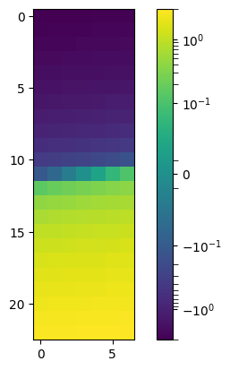
import graphpackage as gp
from matplotlib.ticker import AutoMinorLocator
from matplotlib.ticker import SymmetricalLogLocator
import importlib
gp = importlib.reload(gp)
from graphpackage import SymlogMinorLocator
import numpy as np
import matplotlib.pyplot as plt
import matplotlib as mpl
n_cols = 2
n_types = 6
n_rows = int(np.ceil(n_types / n_cols))
fig, axes = plt.subplots(3, 2, figsize=(gp.xaxisSize, 6), sharex=False, sharey=True)
axes = axes.flatten()
def get_order(num):
return np.floor(np.log10(np.abs(num)))
star_dict = stars_params.copy()
for idx, stype in enumerate(['O', 'B', 'A', 'F', 'G', 'K']):
mmin_cat, mmax_cat = star_types[stype]
vmin, vmax = 0, stars[stype]['SCH'].max()
m_vals = star_dict[stype]['m_vals']
contrib_matrix = star_dict[stype]['SCH_grid']
t_array = star_dict[stype]['t_vals']
factor = 0.25 # adjust this (e.g., 0.1, 0.25, 0.5) for speed vs quality
#contrib_matrix_ds = zoom(contrib_matrix, factor)
#t_array_ds = zoom(t_array, factor)
#m_vals_ds = zoom(m_vals, factor)
if stype in ['O', 'B']:
linthresh = np.power(10, get_order(contrib_matrix.max())-3)
else:
linthresh = np.power(10, get_order(contrib_matrix.max())-1)
norm = mpl.colors.SymLogNorm(linthresh=linthresh, vmin=vmin, vmax=vmax, base=10)
im = axes[idx].pcolormesh(m_vals, t_array, contrib_matrix, shading='auto', norm=norm, cmap='viridis', rasterized=True)
#apply_scientific_formatter(axes[idx], axis='x')
axes[idx].yaxis.set_minor_locator(AutoMinorLocator(10))
# axes[idx].set_title(f"Type {stype}", fontsize=14)
cbar = fig.colorbar(im, ax=axes[idx], pad=0.04)
cbar.ax.tick_params(labelsize=10)
cbar.ax.yaxis.set_major_locator(SymmetricalLogLocator(linthresh=linthresh,base=10))
#cbar.ax.yaxis.set_minor_locator(CustomSymLogMinorLocator(linthresh=linthresh, base=10))
cbar.ax.yaxis.set_minor_locator(SymlogMinorLocator(linthresh, n_lin=10, c_max=contrib_matrix.max()))
#cbar.ax.yaxis.set_minor_formatter(FuncFormatter(sci_label))
cbar.ax.tick_params(which='minor', length=1.5, width=0.5, color='black', direction="in")
cbar.ax.tick_params(which='major', length=4, width=0.5, color='black', direction="inout")
for spine in axes[idx].spines.values():
spine.set_edgecolor('black')
spine.set_linewidth(0.5)
# Set edge line for the colorbar
for spine in cbar.ax.spines.values():
spine.set_edgecolor('black')
spine.set_linewidth(0.5)
#print(f"Celkový integrovaný příspěvek v posledním čase pro typ {stype}: {total_contrib}")
#axes[idx].set_aspect('equal')
axes[idx].text(-0.05, 0.9, f'{stype}',
transform=axes[idx].transAxes,
fontsize=12, ha='right', va='bottom')
axes[idx].tick_params(axis='y', which='major',
labelsize=10, length=4, pad=2)
# Skryjeme prázdné subploty, pokud nějaké zbydou
for j in range(idx + 1, len(axes)):
axes[j].set_visible(False)
fig.supxlabel(r"$m\ [M_\odot]$", fontsize=14, y=-0.03)
fig.supylabel(r"$t$\ [Gyr]", fontsize=14, x = 0.01)
fig.subplots_adjust(bottom=0.05, left=0.1)
plt.rc('text', usetex=True)
# plt.savefig("SH1_small.pdf", bbox_inches='tight', dpi=600)
plt.show()
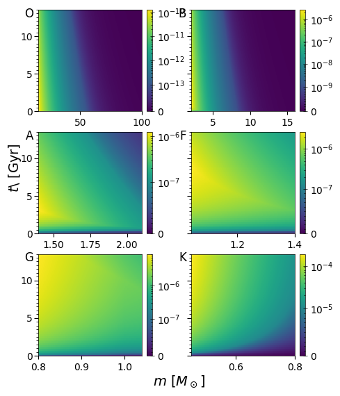
def minmax(n):
return np.min(n), np.max(n)
m_edges = np.concatenate([stars[k]['m'][:-1] for k in order if k in ['BH', 'NS', 'WD']])
m_hline_edges = [stars[k]['m'][0] for k in order if k in ['BH', 'NS', 'WD']]
m_hline_edges = np.append(m_hline_edges, [100])
m_ticks_centres = [
10**(0.5*np.log10(stars[k]['m'][0]) + 0.5*np.log10(stars[k]['m'][-1]))
for k in order if k in ['BH', 'NS', 'WD']]
SCH = np.column_stack([stars[k]['SCH'] for k in order if k in ['BH', 'NS', 'WD']]) # shape (nt-1, 8*(nm-1)))))
fig, ax = plt.subplots(figsize=(8, 5))
extent = [min(m_edges), max(m_edges), 0.0, T_final]
import matplotlib as mpl
pcm = ax.pcolormesh(np.append(m_edges, max(m_edges)), t_vals, SCH, shading='auto', norm=mpl.colors.SymLogNorm(linthresh=1e5))
cbar = ax.figure.colorbar(pcm, ax=ax)
print(m_edges)
ax.vlines(m_hline_edges, 0, T_final, color='lightgray', linestyle='--', lw=0.5, alpha=0.5)
axt = ax.twiny()
axt.set_xscale('log')
axt.set_xticks(m_ticks_centres)
axt.set_xticklabels([key for key in order if key in ['BH', 'NS', 'WD']])
axt.set_xlabel('spectral type')
axt.set_xlim(ax.get_xlim())
log_ticks = np.log10([0.01, 0.1, 1, 10, 100])
ax.set_xticks(log_ticks)
ax.set_xticklabels([0.01, 0.1, 1, 10, 100])
ax.set_xscale('log')
ax.set_xlim(np.min(star_types['WD']), np.max(star_types['BH']))
ax.set_xlabel(r"stellar mass $m \;[M_\odot]$")
ax.set_ylabel(r"cosmic time $t_0$ [Gyr]")
ax.set_title(r"$\log_{10}\,{\rm SCH}(m,\,t_0)$")
axt.minorticks_off()
[ 1. 1.007 1.014 ... 99.76 99.84 99.92 ]
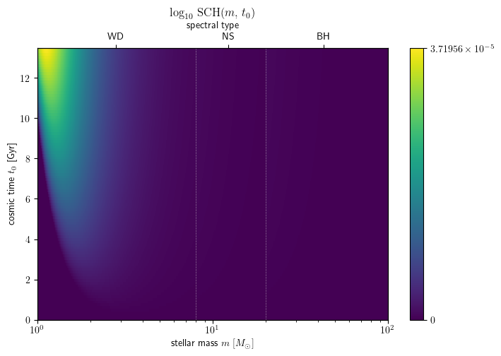
import numpy as np
import matplotlib.pyplot as plt
import matplotlib.ticker as mticker
import matplotlib.colors as mcolors
from matplotlib.ticker import FixedLocator
# --------------------------------------------------------------------
# Parameters
linthresh = 1.0 # linear zone is −1 … +1
n_sub = 4 # want four minor ticks in that zone
# --------------------------------------------------------------------
# Dummy image --------------------------------------------------------
z = np.linspace(-3, 3, 161).reshape(23, 7)
norm = mcolors.SymLogNorm(linthresh, vmin=-3, vmax=3, base=10)
fig, ax = plt.subplots(figsize=(4, 4))
im = ax.imshow(z, norm=norm, cmap='viridis')
cbar = fig.colorbar(im, ax=ax)
# Major ticks --------------------------------------------------------
major_locator = mticker.SymmetricalLogLocator(linthresh=linthresh, base=10)
major_ticks = major_locator.tick_values(cbar.norm.vmin, cbar.norm.vmax)
cbar.set_ticks(major_ticks)
# Minor ticks: build list -------------------------------------------
log_minor = mticker.SymmetricalLogLocator(
linthresh=linthresh, base=10, subs=range(2, 10)
).tick_values(cbar.norm.vmin, cbar.norm.vmax)
linear_minor = []
for lo, hi in zip(major_ticks[:-1], major_ticks[1:]):
if abs((lo + hi) * 0.5) < linthresh: # segment is linear
step = (hi - lo) / (n_sub + 1)
linear_minor.extend(lo + k*step for k in range(1, n_sub + 1))
minor_ticks = np.unique(np.concatenate([log_minor, linear_minor]))
cbar.ax.yaxis.set_minor_locator(FixedLocator(minor_ticks))
cbar.minorticks_on()
# Highlight the four linear minors (make them long & red) ------------
for line in cbar.ax.yaxis.get_minorticklines():
ydata = line.get_ydata()[0]
if abs(ydata) < linthresh: # inside linear zone – our 4 ticks
line.set_color('red')
line.set_linewidth(1.5)
line.set_markersize(0)
line.set_alpha(1)
line.set_length = 20 # draw VERY long
line.set_linestyle('-')
line.set_marker(None)
line.set_clip_on(False)
line.set_zorder(10)
line.set_transform(cbar.ax.transData)
line.set_path_effects([]) # no fancy effects
cbar.ax.tick_params(which='minor', length=20, color='red') # back-stop
# --- diagnostics ----------------------------------------------------
print("Major ticks:", major_ticks)
print("Minor ticks:", minor_ticks)
print("Linear-zone minors (should be 8 incl. negatives):",
[v for v in minor_ticks if abs(v) < linthresh and v != 0])
# save file for out-of-GUI inspection
fig.savefig('symlog_test.png', dpi=150)
print("Saved PNG to symlog_test.png – open it if GUI hides ticks.")
# --------------------------------------------------------------------
print(mpl.rcParams['xtick.minor.visible'],
mpl.rcParams['ytick.minor.visible'])
plt.tight_layout()import numpy as np
import matplotlib.pyplot as plt
import matplotlib.ticker as mticker
import matplotlib.colors as mcolors
from matplotlib.ticker import FixedLocator
import matplotlib as mpl
# --------------------------------------------------------------------
# ensure minor ticks are allowed to be drawn
mpl.rcParams['xtick.minor.visible'] = True
mpl.rcParams['ytick.minor.visible'] = True
# --------------------------------------------------------------------
linthresh = 1.0 # linear zone −1…+1
n_sub = 4 # four minor ticks in that zone
# --------------------------------------------------------------------
# helper: compute minor ticks for a symlog axis
# --------------------------------------------------------------------
def compute_symlog_minors(linthresh, vmin, vmax, majors, n_sub=4):
log_minor = mticker.SymmetricalLogLocator(
linthresh=linthresh, base=10, subs=range(2, 10)
).tick_values(vmin, vmax)
linear_minor = []
for lo, hi in zip(majors[:-1], majors[1:]):
if abs((lo + hi) * 0.5) < linthresh:
step = (hi - lo) / (n_sub + 1)
linear_minor.extend(lo + k * step for k in range(1, n_sub + 1))
return np.unique(np.concatenate([log_minor, linear_minor]))
# --------------------------------------------------------------------
# build the figure
# --------------------------------------------------------------------
data = np.linspace(-3, 3, 161).reshape(23, 7)
norm = mcolors.SymLogNorm(linthresh, vmin=-3, vmax=3, base=10)
fig, ax = plt.subplots(figsize=(4, 4))
im = ax.imshow(data, norm=norm, cmap='viridis')
cbar = fig.colorbar(im, ax=ax)
# major ticks
majloc = mticker.SymmetricalLogLocator(linthresh=linthresh, base=10)
major_ticks = majloc.tick_values(cbar.norm.vmin, cbar.norm.vmax)
cbar.set_ticks(major_ticks)
# minor ticks
minor_ticks = compute_symlog_minors(
linthresh, cbar.norm.vmin, cbar.norm.vmax, major_ticks, n_sub
)
cbar.ax.yaxis.set_minor_locator(FixedLocator(minor_ticks))
cbar.minorticks_on()
cbar.ax.tick_params(which='minor', length=6, color='red') # red & long
plt.tight_layout()
plt.show()
plt.show()
Major ticks: [-1. 0. 1.]
Minor ticks: [-9. -8. -7. -6. -5. -4. -3. -2. -0.8 -0.6 -0.4 -0.2 0. 0.2
0.4 0.6 0.8 2. 3. 4. 5. 6. 7. 8. 9. ]
Linear-zone minors (should be 8 incl. negatives): [-0.8, -0.6, -0.3999999999999999, -0.19999999999999996, 0.2, 0.4, 0.6000000000000001, 0.8]
Saved PNG to symlog_test.png – open it if GUI hides ticks.
True True
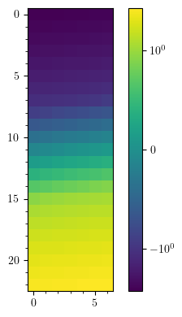
import numpy as np
import matplotlib.ticker as mticker
from matplotlib.ticker import Locator
class MinorSymLogLocator(Locator):
"""
Minor-tick locator for symmetric-log axes (or colour-bars).
Parameters
----------
linthresh : float
Width of the linear region (±``linthresh``).
n_sub : int, default 4
*Exact* number of minor ticks to draw **between each pair of
adjacent major ticks that lie inside the linear region**.
base : float, default 10
Logarithmic base used outside the linear region.
subs : sequence of int, default range(2, 10)
Decade subdivisions (2…9 ⇒ the usual log-minor ticks).
"""
def __init__(self, linthresh, n_sub=4, base=10, subs=range(2, 10)):
self.linthresh = float(linthresh)
self.n_sub = int(n_sub)
# Locator that supplies the usual log-minor ticks.
self._logminor = mticker.SymmetricalLogLocator(
linthresh=self.linthresh,
base=base,
subs=list(subs) # make sure we have an indexable list
)
# ------------------------------------------------------------------
def _linear_minor(self, majors):
"""Return the `n_sub` evenly spaced ticks inside ±linthresh."""
minors = []
for lo, hi in zip(majors[:-1], majors[1:]):
if abs((lo + hi) * 0.5) < self.linthresh: # gap is linear
step = (hi - lo) / (self.n_sub + 1)
minors.extend(lo + k * step for k in range(1, self.n_sub + 1))
return minors
# ------------------------------------------------------------------
def __call__(self):
vmin, vmax = self.axis.get_view_interval()
majors = self.axis.get_majorticklocs()
# 1) log-minor ticks outside the linear region
minors_log = self._logminor.tick_values(vmin, vmax)
# 2) linear-minor ticks inside the linear region
minors_lin = self._linear_minor(majors)
# merge, deduplicate, sort
ticks = np.unique(np.concatenate([minors_log, minors_lin]))
return self.raise_if_exceeds(ticks)
# ------------------------------------------------------------------
def tick_values(self, vmin, vmax):
"""
Required by the `Locator` base class for some internal calls.
Builds a temporary dummy axis so that ``__call__`` can run.
"""
dummy_axis = type(
"DummyAxis",
(),
{
"get_view_interval": lambda *a: (vmin, vmax),
"get_majorticklocs": lambda *a: np.array(
[-self.linthresh, 0.0, self.linthresh])
}
)
self.axis = dummy_axis()
ticks = self()
return ticks[(ticks >= vmin) & (ticks <= vmax)]
#!/usr/bin/env python3
# -*- coding: utf-8 -*-
"""
Demonstration of MinorSymLogLocator (4 linear minor ticks) on
both a symlog axis and a symlog colour-bar.
"""
import numpy as np
import matplotlib.pyplot as plt
import matplotlib.ticker as mticker
import matplotlib.colors as mcolors
from matplotlib.ticker import Locator, FixedLocator
import matplotlib as mpl
# ------------------------------------------------------------
# Make absolutely sure minor ticks are allowed to be drawn
mpl.rcParams['xtick.minor.visible'] = True
mpl.rcParams['ytick.minor.visible'] = True
# ------------------------------------------------------------
# ------------------------------------------------------------
# MinorSymLogLocator definition
# ------------------------------------------------------------
class MinorSymLogLocator(Locator):
"""
Minor ticks for a symlog axis (or colour-bar).
• Inside |x| < linthresh: exactly `n_sub` evenly-spaced ticks
between each pair of adjacent major ticks.
• Outside that region: usual decade subdivisions (2…9).
"""
def __init__(self, linthresh, n_sub=4, base=10, subs=range(2, 10)):
self.linthresh = float(linthresh)
self.n_sub = int(n_sub)
self._logminor = mticker.SymmetricalLogLocator(
linthresh=self.linthresh, base=base, subs=list(subs)
)
# ----- helpers ----------------------------------------------------
def _linear_minor(self, majors):
out = []
for lo, hi in zip(majors[:-1], majors[1:]):
if abs((lo + hi) * 0.5) < self.linthresh: # in linear zone
step = (hi - lo) / (self.n_sub + 1)
out.extend(lo + k * step for k in range(1, self.n_sub + 1))
return out
# ----- API --------------------------------------------------------
def __call__(self):
vmin, vmax = self.axis.get_view_interval()
majors = self.axis.get_majorticklocs()
minors_log = self._logminor.tick_values(vmin, vmax)
minors_lin = self._linear_minor(majors)
ticks = np.unique(np.concatenate([minors_log, minors_lin]))
return self.raise_if_exceeds(ticks)
def tick_values(self, vmin, vmax):
# fallback for autoscale
self.axis = type(
"DummyAxis",
(),
{"get_view_interval": lambda *a: (vmin, vmax),
"get_majorticklocs": lambda *a: np.array(
[-self.linthresh, 0.0, self.linthresh])}
)()
ticks = self()
return ticks[(ticks >= vmin) & (ticks <= vmax)]
# ------------------------------------------------------------
# Demo parameters
linthresh = 1.0 # ±1 is linear region
n_sub = 4 # want four minor ticks there
# ------------------------------------------------------------
# Dummy data for an image -----------------------------------
data = np.linspace(-3, 3, 161).reshape(23, 7)
norm = mcolors.SymLogNorm(linthresh, vmin=-3, vmax=3, base=10)
fig, ax = plt.subplots(figsize=(5, 4))
im = ax.imshow(data, norm=norm, cmap='viridis')
cbar = fig.colorbar(im, ax=ax)
# ----- major ticks (axis & colour-bar) ----------------------
majloc = mticker.SymmetricalLogLocator(linthresh=linthresh, base=10)
ax.set_yscale('symlog', linthresh=linthresh, base=10)
ax.yaxis.set_major_locator(majloc)
cbar.ax.yaxis.set_major_locator(majloc)
# ----- minor ticks with our locator -------------------------
minor_loc = MinorSymLogLocator(linthresh, n_sub)
ax.yaxis.set_minor_locator(minor_loc)
# For the colour-bar use a FixedLocator so update_ticks() can’t overwrite it
minor_ticks = minor_loc.tick_values(cbar.norm.vmin, cbar.norm.vmax)
cbar.ax.yaxis.set_minor_locator(FixedLocator(minor_ticks))
# Make them visible & red for clarity ------------------------
ax.minorticks_on()
cbar.minorticks_on()
ax.tick_params(which='minor', length=6, color='red')
cbar.ax.tick_params(which='minor', length=6, color='red')
ax.set_title("MinorSymLogLocator demo (4 linear minor ticks)")
fig.tight_layout()
fig.savefig("symlog_demo.png", dpi=150)
print("Figure written to symlog_demo.png")
plt.show()
Figure written to symlog_demo.png
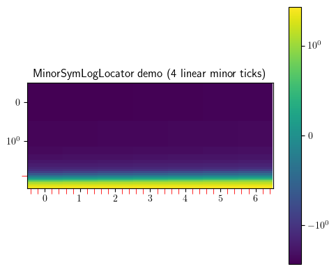
import numpy as np
import matplotlib.ticker as mticker
class SymlogMinorLocator(mticker.Locator):
"""
Minor-tick locator for a positive-only symlog colour-bar.
Parameters
----------
linthresh : float
Width of the linear region (0 → linthresh).
n_lin : int, default 4
How many *minor* ticks inside the linear part (0 excluded).
subs : sequence or None, default None
Log subdivisions in the log part (> linthresh).
*None* ⇒ all subs 2…(base-1).
base : float, default 10.0
Logarithmic base.
c_max : float or None
Upper limit for the colour-bar. If *None*, uses the axis view limit.
"""
def __init__(self, linthresh, n_lin=4, subs=None, base=10.0, c_max=None):
self.linthresh = float(linthresh)
self.n_lin = int(max(0, n_lin))
self.base = float(base)
self.c_max = c_max
if subs is None:
self.subs = np.arange(2, self.base) # 2…9 → “all”
else:
self.subs = np.asarray(subs, dtype=float)
# --- mandatory API --------------------------------------------------
def __call__(self):
vmin, vmax = self.axis.get_view_interval()
return self.tick_values(vmin, vmax)
def tick_values(self, vmin, vmax):
vmax = self.c_max if self.c_max is not None else vmax
vmax = max(vmax, self.linthresh)
# 1. linear part (0 → linthresh)
lin_ticks = (
np.linspace(0, self.linthresh, self.n_lin + 1, endpoint=True)[1:]
if self.n_lin > 0 else np.array([])
)
# 2. logarithmic part (> linthresh)
log_locator = mticker.LogLocator(base=self.base,
subs=self.subs,
numticks=100)
log_ticks = log_locator.tick_values(self.linthresh, vmax)
log_ticks = log_ticks[log_ticks > self.linthresh] # discard overlap
ticks = np.concatenate((lin_ticks, log_ticks))
return self.raise_if_exceeds(ticks)
import matplotlib.pyplot as plt
from matplotlib.colors import SymLogNorm
# Synthetic data
data = np.random.randn(100, 100) * 1e3
linthresh = 10
cmax = np.abs(data).max()
fig, ax = plt.subplots()
im = ax.imshow(data, norm=SymLogNorm(linthresh=linthresh, vmin=0, vmax=cmax))
cb = fig.colorbar(im, ax=ax)
cb.ax.yaxis.set_minor_locator(SymlogMinorLocator(linthresh, n_lin=10, c_max=cmax))
cb.ax.tick_params(which='minor', width=0.5, length=3)
ax.set_title("Colour-bar with symlog minor ticks")
plt.show()
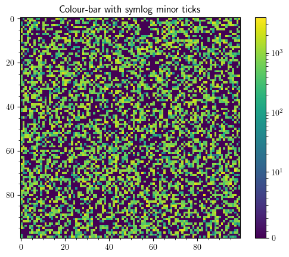
import numpy as np
import matplotlib.pyplot as plt
from scipy.special import gamma, gammainc
# Parameters
T = 8.4
alpha = 2.3
delta = 3.5
m_min = 16
m_max = 100
tau_max = 13.5
# Numerical integration setup (reuse previous integrand approach)
ms = np.linspace(m_min, m_max, 2000)
ts = np.linspace(0, tau_max, 200)
# Precompute mass integrand numeric
def compute_N_numeric(t):
if t == 0:
return 0.0
m_cut = (10.0 / t)**(1.0 / delta)
A1 = T * (np.exp(t / T) - 1)
A2 = T * np.exp(t / T)
integrand = np.where(
ms < m_cut,
A1 * ms**(-alpha),
A2 * ms**(-alpha) * (1 - np.exp(-10.0 * ms**(-delta) / T))
)
return np.trapz(integrand, ms)
N_num = np.array([compute_N_numeric(t) for t in ts])
# Analytical N(t) using incomplete gamma functions
def N_analytic(t):
if t == 0:
return 0.0
m_cut = (10.0 / t)**(1.0 / delta)
# N1
if m_cut <= m_min:
N1 = 0.0
elif m_cut >= m_max:
N1 = T * (np.exp(t / T) - 1) * (m_max**(1-alpha) - m_min**(1-alpha)) / (1-alpha)
else:
N1 = T * (np.exp(t / T) - 1) * (m_cut**(1-alpha) - m_min**(1-alpha)) / (1-alpha)
# N2
lower = max(m_cut, m_min)
I1 = (m_max**(1-alpha) - lower**(1-alpha)) / (1-alpha)
s = (alpha-1) / delta
x1 = t / T
x2 = (10.0 / T) * (m_max**(-delta))
I2 = (1.0 / delta) * (T / 10.0)**s * (gamma(s) * gammainc(s, x1) - gamma(s) * gammainc(s, x2))
N2 = T * np.exp(t / T) * (I1 - I2)
return N1 + N2
N_analytic_vals = np.array([N_analytic(t) for t in ts])
# Plot numeric and analytic
plt.figure()
plt.plot(ts, N_num, label='Numerical')
plt.plot(ts, N_analytic_vals, linestyle='--', label='Analytic')
plt.xlabel('Time $t$')
plt.ylabel('Surviving stars $N(t)$')
plt.title('Numerical vs Analytic $N(t)$')
plt.legend()
plt.grid(True)
plt.tight_layout()
plt.show()
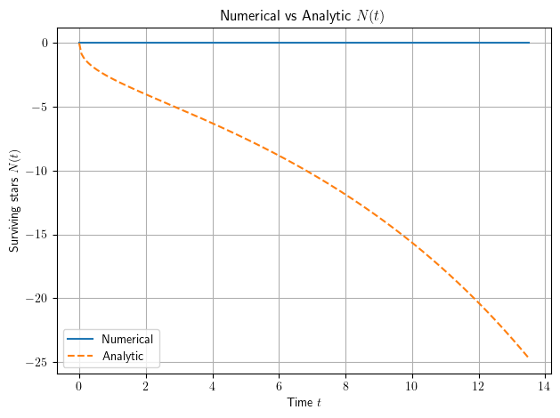
import sympy as sp
from sympy import Piecewise, integrate, exp, gamma
from sympy import init_printing
from IPython.display import display
# Initialize MathJax printing
init_printing(use_latex='mathjax')
# Define symbols
t, α, δ, τ, T0, mMin, mMax, a, m = sp.symbols(
't α δ τ T0 mMin mMax a m', positive=True, real=True
)
# Critical mass
m_c = (a/t)**(1/δ)
# Integrals with special functions
I_all = integrate(m**(-α), (m, mMin, mMax))
I_partial = integrate(
m**(-α)*(1 - exp(-(t - a*m**(-δ))/τ)),
(m, m_c, mMax),
conds='none',
meijerg=True
)
I_full = integrate(
m**(-α)*(τ*(1 - exp(-t/τ)) - τ*(1 - exp(-(t - a*m**(-δ))/τ))),
(m, mMin, mMax),
conds='none',
meijerg=True
)
# Branch expressions
expr_partial = 1/(τ*(1 - exp(-T0/τ))) * (τ*(1 - exp(-t/τ))*I_all - τ*I_partial)
expr_full = 1/(τ*(1 - exp(-T0/τ))) * I_full
# Piecewise result
res_special = Piecewise(
(expr_partial, (t > a*mMax**(-δ)) & (t < a*mMin**(-δ))),
(expr_full, t >= a*mMin**(-δ))
)
# Simplify and display with MathJax
res_simp = sp.simplify(res_special)
display(res_simp)
\[\begin{split}\displaystyle \begin{cases} \begin{cases} - \frac{\left(\left(mMax^{1 - α} - mMin^{1 - α}\right) \left(e^{\frac{t}{τ}} - 1\right) + \left(α - 1\right) \left(e^{\frac{t}{τ}} \int\limits_{a^{\frac{1}{δ}} t^{- \frac{1}{δ}}}^{mMax} m^{- α}\, dm - \int\limits_{a^{\frac{1}{δ}} t^{- \frac{1}{δ}}}^{mMax} m^{- α} e^{\frac{a m^{- δ}}{τ}}\, dm\right)\right) e^{\frac{T_{0} - t}{τ}}}{\left(α - 1\right) \left(e^{\frac{T_{0}}{τ}} - 1\right)} & \text{for}\: α > 1 \vee α < 1 \\\frac{\left(- e^{\frac{t}{τ}} \int\limits_{a^{\frac{1}{δ}} t^{- \frac{1}{δ}}}^{mMax} m^{- α}\, dm + \log{\left(\left(\frac{mMax}{mMin}\right)^{e^{\frac{t}{τ}} - 1} \right)} + \int\limits_{a^{\frac{1}{δ}} t^{- \frac{1}{δ}}}^{mMax} m^{- α} e^{\frac{a m^{- δ}}{τ}}\, dm\right) e^{\frac{T_{0} - t}{τ}}}{e^{\frac{T_{0}}{τ}} - 1} & \text{otherwise} \end{cases} & \text{for}\: t > a mMax^{- δ} \wedge t < a mMin^{- δ} \\- \frac{\left(\int\limits_{mMin}^{mMax} m^{- α}\, dm - \int\limits_{mMin}^{mMax} m^{- α} e^{\frac{a m^{- δ}}{τ}}\, dm\right) e^{\frac{T_{0} - t}{τ}}}{e^{\frac{T_{0}}{τ}} - 1} & \text{for}\: t \geq a mMin^{- δ} \end{cases}\end{split}\]
import sympy as sp
from sympy import Piecewise, integrate, exp, init_printing
from IPython.display import display
# Initialize MathJax printing
init_printing(use_latex='mathjax')
# Define symbols
t, α, δ, τ, T0, mMin, mMax, a, m = sp.symbols(
't α δ τ T0 mMin mMax a m', positive=True, real=True
)
# Critical mass
m_c = (a/t)**(1/δ)
# Compute integrals with special functions forced
I_all = integrate(m**(-α), (m, mMin, mMax), conds='none')
I_partial = integrate(
m**(-α)*(1 - exp(-(t - a*m**(-δ))/τ)),
(m, m_c, mMax),
conds='none',
meijerg=True
)
I_full = integrate(
m**(-α)*(τ*(1 - exp(-t/τ)) - τ*(1 - exp(-(t - a*m**(-δ))/τ))),
(m, mMin, mMax),
conds='none',
meijerg=True
)
# Branch expressions
expr_partial = 1/(τ*(1 - exp(-T0/τ))) * (τ*(1 - exp(-t/τ))*I_all - τ*I_partial)
expr_full = 1/(τ*(1 - exp(-T0/τ))) * I_full
# Assemble and simplify piecewise
res_special = Piecewise(
(expr_partial, (t > a*mMax**(-δ)) & (t < a*mMin**(-δ))),
(expr_full, t >= a*mMin**(-δ))
)
res_simp = sp.simplify(res_special)
# Display the fully computed piecewise result
display(res_simp)
\[\begin{split}\displaystyle \begin{cases} - \frac{\left(\left(mMax^{1 - α} - mMin^{1 - α}\right) \left(e^{\frac{t}{τ}} - 1\right) + \left(α - 1\right) \left(e^{\frac{t}{τ}} \int\limits_{a^{\frac{1}{δ}} t^{- \frac{1}{δ}}}^{mMax} m^{- α}\, dm - \int\limits_{a^{\frac{1}{δ}} t^{- \frac{1}{δ}}}^{mMax} m^{- α} e^{\frac{a m^{- δ}}{τ}}\, dm\right)\right) e^{\frac{T_{0} - t}{τ}}}{\left(α - 1\right) \left(e^{\frac{T_{0}}{τ}} - 1\right)} & \text{for}\: t > a mMax^{- δ} \wedge t < a mMin^{- δ} \\- \frac{\left(\int\limits_{mMin}^{mMax} m^{- α}\, dm - \int\limits_{mMin}^{mMax} m^{- α} e^{\frac{a m^{- δ}}{τ}}\, dm\right) e^{\frac{T_{0} - t}{τ}}}{e^{\frac{T_{0}}{τ}} - 1} & \text{for}\: t \geq a mMin^{- δ} \end{cases}\end{split}\]
import sympy as sp
# Initialize LaTeX printing for MathJax
sp.init_printing(use_latex='mathjax')
# Define symbols
t, α, δ, τ, T0, mMin, mMax, a, m = sp.symbols(
't α δ τ T0 mMin mMax a m', positive=True, real=True
)
# Critical mass
m_c = (a/t)**(1/δ)
# Compute integrals with special functions forced
I_all = sp.integrate(m**(-α), (m, mMin, mMax), conds='none', meijerg=True)
I_partial = sp.integrate(
m**(-α)*(1 - sp.exp(-(t - a*m**(-δ))/τ)),
(m, m_c, mMax),
conds='none',
meijerg=True
)
I_full = sp.integrate(
m**(-α)*(τ*(1 - sp.exp(-t/τ)) - τ*(1 - sp.exp(-(t - a*m**(-δ))/τ))),
(m, mMin, mMax),
conds='none',
meijerg=True
)
# Branch expressions
expr_partial = 1/(τ*(1 - sp.exp(-T0/τ))) * (τ*(1 - sp.exp(-t/τ))*I_all - τ*I_partial)
expr_full = 1/(τ*(1 - sp.exp(-T0/τ))) * I_full
# Assemble piecewise
res_special = sp.Piecewise(
(expr_partial, (t > a*mMax**(-δ)) & (t < a*mMin**(-δ))),
(expr_full, t >= a*mMin**(-δ))
)
import mpmath as mp
mp_map = {
'gamma': mp.gamma, # Gamma(s)
'uppergamma': lambda s, x: mp.gammainc(s, x), # Upper incomplete gamma Γ(s, x)
'meijerg': mp.meijerg # Meijer G
}
res_mp = sp.lambdify(
(t, α, δ, τ, T0, mMin, mMax, a),
res_special,
modules=[mp_map]
)
# 5) Vectorize for NumPy arrays
def res_np(t_array, alpha, delta, tau, T0_val, mMin_val, mMax_val, a_val):
"""
Vectorized evaluation of res_special using mpmath for Meijer G.
"""
f = lambda ti: res_mp(ti, alpha, delta, tau, T0_val, mMin_val, mMax_val, a_val)
return np.vectorize(f, otypes=[float])(t_array)
---------------------------------------------------------------------------
PrintMethodNotImplementedError Traceback (most recent call last)
Cell In[298], line 47
39 import mpmath as mp
41 mp_map = {
42 'gamma': mp.gamma, # Gamma(s)
43 'uppergamma': lambda s, x: mp.gammainc(s, x), # Upper incomplete gamma Γ(s, x)
44 'meijerg': mp.meijerg # Meijer G
45 }
---> 47 res_mp = sp.lambdify(
48 (t, α, δ, τ, T0, mMin, mMax, a),
49 res_special,
50 modules=[mp_map]
51 )
53 # 5) Vectorize for NumPy arrays
54 def res_np(t_array, alpha, delta, tau, T0_val, mMin_val, mMax_val, a_val):
File c:\Users\adamc\AppData\Local\Programs\Python\Python312\Lib\site-packages\sympy\utilities\lambdify.py:880, in lambdify(args, expr, modules, printer, use_imps, dummify, cse, docstring_limit)
878 else:
879 cses, _expr = (), expr
--> 880 funcstr = funcprinter.doprint(funcname, iterable_args, _expr, cses=cses)
882 # Collect the module imports from the code printers.
883 imp_mod_lines = []
File c:\Users\adamc\AppData\Local\Programs\Python\Python312\Lib\site-packages\sympy\utilities\lambdify.py:1171, in _EvaluatorPrinter.doprint(self, funcname, args, expr, cses)
1168 else:
1169 funcbody.append('{} = {}'.format(self._exprrepr(s), self._exprrepr(e)))
-> 1171 str_expr = _recursive_to_string(self._exprrepr, expr)
1173 if '\n' in str_expr:
1174 str_expr = '({})'.format(str_expr)
File c:\Users\adamc\AppData\Local\Programs\Python\Python312\Lib\site-packages\sympy\utilities\lambdify.py:966, in _recursive_to_string(doprint, arg)
963 from sympy.core.basic import Basic
965 if isinstance(arg, (Basic, MatrixBase)):
--> 966 return doprint(arg)
967 elif iterable(arg):
968 if isinstance(arg, list):
File c:\Users\adamc\AppData\Local\Programs\Python\Python312\Lib\site-packages\sympy\printing\codeprinter.py:172, in CodePrinter.doprint(self, expr, assign_to)
169 self._not_supported = set()
170 self._number_symbols = set()
--> 172 lines = self._print(expr).splitlines()
174 # format the output
175 if self._settings["human"]:
File c:\Users\adamc\AppData\Local\Programs\Python\Python312\Lib\site-packages\sympy\printing\printer.py:331, in Printer._print(self, expr, **kwargs)
329 printmethod = getattr(self, printmethodname, None)
330 if printmethod is not None:
--> 331 return printmethod(expr, **kwargs)
332 # Unknown object, fall back to the emptyPrinter.
333 return self.emptyPrinter(expr)
File c:\Users\adamc\AppData\Local\Programs\Python\Python312\Lib\site-packages\sympy\printing\pycode.py:215, in AbstractPythonCodePrinter._print_Piecewise(self, expr)
213 result.append('(')
214 result.append('(')
--> 215 result.append(self._print(e))
216 result.append(')')
217 result.append(' if ')
File c:\Users\adamc\AppData\Local\Programs\Python\Python312\Lib\site-packages\sympy\printing\printer.py:331, in Printer._print(self, expr, **kwargs)
329 printmethod = getattr(self, printmethodname, None)
330 if printmethod is not None:
--> 331 return printmethod(expr, **kwargs)
332 # Unknown object, fall back to the emptyPrinter.
333 return self.emptyPrinter(expr)
File c:\Users\adamc\AppData\Local\Programs\Python\Python312\Lib\site-packages\sympy\printing\codeprinter.py:565, in CodePrinter._print_Mul(self, expr)
563 a_str = [self.parenthesize(a[0], 0.5*(PRECEDENCE["Pow"]+PRECEDENCE["Mul"]))]
564 else:
--> 565 a_str = [self.parenthesize(x, prec) for x in a]
566 b_str = [self.parenthesize(x, prec) for x in b]
568 # To parenthesize Pow with exp = -1 and having more than one Symbol
File c:\Users\adamc\AppData\Local\Programs\Python\Python312\Lib\site-packages\sympy\printing\str.py:36, in StrPrinter.parenthesize(self, item, level, strict)
34 def parenthesize(self, item, level, strict=False):
35 if (precedence(item) < level) or ((not strict) and precedence(item) <= level):
---> 36 return "(%s)" % self._print(item)
37 else:
38 return self._print(item)
File c:\Users\adamc\AppData\Local\Programs\Python\Python312\Lib\site-packages\sympy\printing\printer.py:331, in Printer._print(self, expr, **kwargs)
329 printmethod = getattr(self, printmethodname, None)
330 if printmethod is not None:
--> 331 return printmethod(expr, **kwargs)
332 # Unknown object, fall back to the emptyPrinter.
333 return self.emptyPrinter(expr)
File c:\Users\adamc\AppData\Local\Programs\Python\Python312\Lib\site-packages\sympy\printing\str.py:57, in StrPrinter._print_Add(self, expr, order)
55 l = []
56 for term in terms:
---> 57 t = self._print(term)
58 if t.startswith('-') and not term.is_Add:
59 sign = "-"
File c:\Users\adamc\AppData\Local\Programs\Python\Python312\Lib\site-packages\sympy\printing\printer.py:331, in Printer._print(self, expr, **kwargs)
329 printmethod = getattr(self, printmethodname, None)
330 if printmethod is not None:
--> 331 return printmethod(expr, **kwargs)
332 # Unknown object, fall back to the emptyPrinter.
333 return self.emptyPrinter(expr)
File c:\Users\adamc\AppData\Local\Programs\Python\Python312\Lib\site-packages\sympy\printing\codeprinter.py:565, in CodePrinter._print_Mul(self, expr)
563 a_str = [self.parenthesize(a[0], 0.5*(PRECEDENCE["Pow"]+PRECEDENCE["Mul"]))]
564 else:
--> 565 a_str = [self.parenthesize(x, prec) for x in a]
566 b_str = [self.parenthesize(x, prec) for x in b]
568 # To parenthesize Pow with exp = -1 and having more than one Symbol
File c:\Users\adamc\AppData\Local\Programs\Python\Python312\Lib\site-packages\sympy\printing\str.py:38, in StrPrinter.parenthesize(self, item, level, strict)
36 return "(%s)" % self._print(item)
37 else:
---> 38 return self._print(item)
File c:\Users\adamc\AppData\Local\Programs\Python\Python312\Lib\site-packages\sympy\printing\printer.py:331, in Printer._print(self, expr, **kwargs)
329 printmethod = getattr(self, printmethodname, None)
330 if printmethod is not None:
--> 331 return printmethod(expr, **kwargs)
332 # Unknown object, fall back to the emptyPrinter.
333 return self.emptyPrinter(expr)
File c:\Users\adamc\AppData\Local\Programs\Python\Python312\Lib\site-packages\sympy\printing\pycode.py:215, in AbstractPythonCodePrinter._print_Piecewise(self, expr)
213 result.append('(')
214 result.append('(')
--> 215 result.append(self._print(e))
216 result.append(')')
217 result.append(' if ')
File c:\Users\adamc\AppData\Local\Programs\Python\Python312\Lib\site-packages\sympy\printing\printer.py:331, in Printer._print(self, expr, **kwargs)
329 printmethod = getattr(self, printmethodname, None)
330 if printmethod is not None:
--> 331 return printmethod(expr, **kwargs)
332 # Unknown object, fall back to the emptyPrinter.
333 return self.emptyPrinter(expr)
File c:\Users\adamc\AppData\Local\Programs\Python\Python312\Lib\site-packages\sympy\printing\codeprinter.py:582, in CodePrinter._print_not_supported(self, expr)
580 def _print_not_supported(self, expr):
581 if self._settings.get('strict', False):
--> 582 raise PrintMethodNotImplementedError("Unsupported by %s: %s" % (str(type(self)), str(type(expr))) + \
583 "\nSet the printer option 'strict' to False in order to generate partially printed code.")
584 try:
585 self._not_supported.add(expr)
PrintMethodNotImplementedError: Unsupported by <class 'sympy.printing.pycode.PythonCodePrinter'>: <class 'sympy.integrals.integrals.Integral'>
Set the printer option 'strict' to False in order to generate partially printed code.
import numpy as np
import sympy as sp
import mpmath as mp
import matplotlib.pyplot as plt
# 1) Define symbols (must match those in your Sympy expression)
t, α, δ, τ, T0, mMin, mMax, a, m = sp.symbols(
't α δ τ T0 mMin mMax a m', positive=True, real=True
)
# 2) Critical mass
m_c = (a/t)**(1/δ)
# 3) Compute integrals with Meijer G
I_all = sp.integrate(m**(-α), (m, mMin, mMax), conds='none', meijerg=True)
I_partial = sp.integrate(
m**(-α)*(1 - sp.exp(-(t - a*m**(-δ))/τ)),
(m, m_c, mMax),
conds='none',
meijerg=True
)
I_full = sp.integrate(
m**(-α)*(τ*(1 - sp.exp(-t/τ)) - τ*(1 - sp.exp(-(t - a*m**(-δ))/τ))),
(m, mMin, mMax),
conds='none',
meijerg=True
)
# 4) Piecewise expression
expr_partial = 1/(τ*(1 - sp.exp(-T0/τ))) * (τ*(1 - sp.exp(-t/τ))*I_all - τ*I_partial)
expr_full = 1/(τ*(1 - sp.exp(-T0/τ))) * I_full
res_special = sp.Piecewise(
(expr_partial, (t > a*mMax**(-δ)) & (t < a*mMin**(-δ))),
(expr_full, t >= a*mMin**(-δ))
)
# 5) Map Sympy special functions to mpmath
mp_map = {
'gamma': mp.gamma, # Gamma(s)
'uppergamma': lambda s, x: mp.gammainc(s, x), # Upper incomplete gamma Γ(s, x)
'meijerg': mp.meijerg # Meijer G
}
# 6) Lambdify to get an mpmath-backed scalar function
res_mp = sp.lambdify(
(t, α, δ, τ, T0, mMin, mMax, a),
res_special,
modules=[mp_map]
)
# 7) Vectorized wrapper for NumPy arrays
def res_np(t_array, alpha, delta, tau, T0_val, mMin_val, mMax_val, a_val):
f_scalar = lambda ti: res_mp(ti, alpha, delta, tau, T0_val, mMin_val, mMax_val, a_val)
return np.vectorize(f_scalar, otypes=[float])(t_array)
# 8) Example usage & plot
alpha_val, delta_val = 2.5, 0.5
tau_val, T0_val = 2.0, 10.0
mMin_val, mMax_val = 0.1, 1.0
a_val = 0.5
t_vals = np.linspace(0.1, T0_val, 300)
res_vals = res_np(t_vals, alpha_val, delta_val, tau_val, T0_val, mMin_val, mMax_val, a_val)
plt.plot(t_vals, res_vals, lw=2)
plt.xlabel('t')
plt.ylabel('res(t)')
plt.title('res(t) using Meijer G (mpmath)')
plt.grid(True)
plt.tight_layout()
plt.show()
---------------------------------------------------------------------------
PrintMethodNotImplementedError Traceback (most recent call last)
Cell In[299], line 46
39 mp_map = {
40 'gamma': mp.gamma, # Gamma(s)
41 'uppergamma': lambda s, x: mp.gammainc(s, x), # Upper incomplete gamma Γ(s, x)
42 'meijerg': mp.meijerg # Meijer G
43 }
45 # 6) Lambdify to get an mpmath-backed scalar function
---> 46 res_mp = sp.lambdify(
47 (t, α, δ, τ, T0, mMin, mMax, a),
48 res_special,
49 modules=[mp_map]
50 )
52 # 7) Vectorized wrapper for NumPy arrays
53 def res_np(t_array, alpha, delta, tau, T0_val, mMin_val, mMax_val, a_val):
File c:\Users\adamc\AppData\Local\Programs\Python\Python312\Lib\site-packages\sympy\utilities\lambdify.py:880, in lambdify(args, expr, modules, printer, use_imps, dummify, cse, docstring_limit)
878 else:
879 cses, _expr = (), expr
--> 880 funcstr = funcprinter.doprint(funcname, iterable_args, _expr, cses=cses)
882 # Collect the module imports from the code printers.
883 imp_mod_lines = []
File c:\Users\adamc\AppData\Local\Programs\Python\Python312\Lib\site-packages\sympy\utilities\lambdify.py:1171, in _EvaluatorPrinter.doprint(self, funcname, args, expr, cses)
1168 else:
1169 funcbody.append('{} = {}'.format(self._exprrepr(s), self._exprrepr(e)))
-> 1171 str_expr = _recursive_to_string(self._exprrepr, expr)
1173 if '\n' in str_expr:
1174 str_expr = '({})'.format(str_expr)
File c:\Users\adamc\AppData\Local\Programs\Python\Python312\Lib\site-packages\sympy\utilities\lambdify.py:966, in _recursive_to_string(doprint, arg)
963 from sympy.core.basic import Basic
965 if isinstance(arg, (Basic, MatrixBase)):
--> 966 return doprint(arg)
967 elif iterable(arg):
968 if isinstance(arg, list):
File c:\Users\adamc\AppData\Local\Programs\Python\Python312\Lib\site-packages\sympy\printing\codeprinter.py:172, in CodePrinter.doprint(self, expr, assign_to)
169 self._not_supported = set()
170 self._number_symbols = set()
--> 172 lines = self._print(expr).splitlines()
174 # format the output
175 if self._settings["human"]:
File c:\Users\adamc\AppData\Local\Programs\Python\Python312\Lib\site-packages\sympy\printing\printer.py:331, in Printer._print(self, expr, **kwargs)
329 printmethod = getattr(self, printmethodname, None)
330 if printmethod is not None:
--> 331 return printmethod(expr, **kwargs)
332 # Unknown object, fall back to the emptyPrinter.
333 return self.emptyPrinter(expr)
File c:\Users\adamc\AppData\Local\Programs\Python\Python312\Lib\site-packages\sympy\printing\pycode.py:215, in AbstractPythonCodePrinter._print_Piecewise(self, expr)
213 result.append('(')
214 result.append('(')
--> 215 result.append(self._print(e))
216 result.append(')')
217 result.append(' if ')
File c:\Users\adamc\AppData\Local\Programs\Python\Python312\Lib\site-packages\sympy\printing\printer.py:331, in Printer._print(self, expr, **kwargs)
329 printmethod = getattr(self, printmethodname, None)
330 if printmethod is not None:
--> 331 return printmethod(expr, **kwargs)
332 # Unknown object, fall back to the emptyPrinter.
333 return self.emptyPrinter(expr)
File c:\Users\adamc\AppData\Local\Programs\Python\Python312\Lib\site-packages\sympy\printing\codeprinter.py:565, in CodePrinter._print_Mul(self, expr)
563 a_str = [self.parenthesize(a[0], 0.5*(PRECEDENCE["Pow"]+PRECEDENCE["Mul"]))]
564 else:
--> 565 a_str = [self.parenthesize(x, prec) for x in a]
566 b_str = [self.parenthesize(x, prec) for x in b]
568 # To parenthesize Pow with exp = -1 and having more than one Symbol
File c:\Users\adamc\AppData\Local\Programs\Python\Python312\Lib\site-packages\sympy\printing\str.py:36, in StrPrinter.parenthesize(self, item, level, strict)
34 def parenthesize(self, item, level, strict=False):
35 if (precedence(item) < level) or ((not strict) and precedence(item) <= level):
---> 36 return "(%s)" % self._print(item)
37 else:
38 return self._print(item)
File c:\Users\adamc\AppData\Local\Programs\Python\Python312\Lib\site-packages\sympy\printing\printer.py:331, in Printer._print(self, expr, **kwargs)
329 printmethod = getattr(self, printmethodname, None)
330 if printmethod is not None:
--> 331 return printmethod(expr, **kwargs)
332 # Unknown object, fall back to the emptyPrinter.
333 return self.emptyPrinter(expr)
File c:\Users\adamc\AppData\Local\Programs\Python\Python312\Lib\site-packages\sympy\printing\str.py:57, in StrPrinter._print_Add(self, expr, order)
55 l = []
56 for term in terms:
---> 57 t = self._print(term)
58 if t.startswith('-') and not term.is_Add:
59 sign = "-"
File c:\Users\adamc\AppData\Local\Programs\Python\Python312\Lib\site-packages\sympy\printing\printer.py:331, in Printer._print(self, expr, **kwargs)
329 printmethod = getattr(self, printmethodname, None)
330 if printmethod is not None:
--> 331 return printmethod(expr, **kwargs)
332 # Unknown object, fall back to the emptyPrinter.
333 return self.emptyPrinter(expr)
File c:\Users\adamc\AppData\Local\Programs\Python\Python312\Lib\site-packages\sympy\printing\codeprinter.py:565, in CodePrinter._print_Mul(self, expr)
563 a_str = [self.parenthesize(a[0], 0.5*(PRECEDENCE["Pow"]+PRECEDENCE["Mul"]))]
564 else:
--> 565 a_str = [self.parenthesize(x, prec) for x in a]
566 b_str = [self.parenthesize(x, prec) for x in b]
568 # To parenthesize Pow with exp = -1 and having more than one Symbol
File c:\Users\adamc\AppData\Local\Programs\Python\Python312\Lib\site-packages\sympy\printing\str.py:38, in StrPrinter.parenthesize(self, item, level, strict)
36 return "(%s)" % self._print(item)
37 else:
---> 38 return self._print(item)
File c:\Users\adamc\AppData\Local\Programs\Python\Python312\Lib\site-packages\sympy\printing\printer.py:331, in Printer._print(self, expr, **kwargs)
329 printmethod = getattr(self, printmethodname, None)
330 if printmethod is not None:
--> 331 return printmethod(expr, **kwargs)
332 # Unknown object, fall back to the emptyPrinter.
333 return self.emptyPrinter(expr)
File c:\Users\adamc\AppData\Local\Programs\Python\Python312\Lib\site-packages\sympy\printing\pycode.py:215, in AbstractPythonCodePrinter._print_Piecewise(self, expr)
213 result.append('(')
214 result.append('(')
--> 215 result.append(self._print(e))
216 result.append(')')
217 result.append(' if ')
File c:\Users\adamc\AppData\Local\Programs\Python\Python312\Lib\site-packages\sympy\printing\printer.py:331, in Printer._print(self, expr, **kwargs)
329 printmethod = getattr(self, printmethodname, None)
330 if printmethod is not None:
--> 331 return printmethod(expr, **kwargs)
332 # Unknown object, fall back to the emptyPrinter.
333 return self.emptyPrinter(expr)
File c:\Users\adamc\AppData\Local\Programs\Python\Python312\Lib\site-packages\sympy\printing\codeprinter.py:582, in CodePrinter._print_not_supported(self, expr)
580 def _print_not_supported(self, expr):
581 if self._settings.get('strict', False):
--> 582 raise PrintMethodNotImplementedError("Unsupported by %s: %s" % (str(type(self)), str(type(expr))) + \
583 "\nSet the printer option 'strict' to False in order to generate partially printed code.")
584 try:
585 self._not_supported.add(expr)
PrintMethodNotImplementedError: Unsupported by <class 'sympy.printing.pycode.PythonCodePrinter'>: <class 'sympy.integrals.integrals.Integral'>
Set the printer option 'strict' to False in order to generate partially printed code.
import numpy as np
import mpmath as mp
import matplotlib.pyplot as plt
# ——— Example parameters ———
α, δ = 2.3, 2.5
τ, T0 = 8.4, 13.8
mMin, mMax = 16, 100
a = 10
# normalization
den = τ*(1 - np.exp(-T0/τ))
# original integrand with Heaviside
def integrand(m, t):
F1 = (τ - τ*mp.e**(-t/τ)) / den
F2 = (τ - τ*mp.e**(-(t - a*m**(-δ))/τ)) / den
H = 1 if t >= a*m**(-δ) else 0
return m**(-α)*(F1 - F2*H)
# piecewise integral
def res_scalar(t):
if t < 0:
return 0.0
return mp.quad(lambda mm: integrand(mm, t), [mMin, mMax])
# vectorize over numpy
res = np.vectorize(lambda tt: float(res_scalar(tt)))
# sample & plot
t_vals = np.linspace(0, T0, 300)
res_vals = res(t_vals)
res_vals = res_vals / res_vals[-1] # normalize
plt.figure(figsize=(8,4))
plt.plot(t_vals, res_vals, lw=2)
plt.xlabel('t')
plt.ylabel('res(t)')
plt.title('res(t) via direct numeric integration')
plt.grid(True)
plt.show()
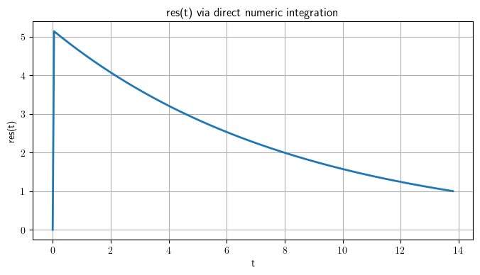
import numpy as np
import sympy as sp
import matplotlib.pyplot as plt
# 1) Define symbols exactly as in your symbolic solution
t, alpha, delta, tau, T0, mMin, mMax, a, m = sp.symbols(
't alpha delta tau T0 mMin mMax a m', positive=True, real=True
)
# 2) Reconstruct the symbolic 'res_special' (your two-branch Meijer G solution)
m_c = (a/t)**(1/delta)
I_all = sp.integrate(m**(-alpha), (m, mMin, mMax), meijerg=True).doit()
I_partial = sp.simplify(sp.integrate(
m**(-alpha)*(1 - sp.exp(-(t - a*m**(-delta))/tau)),
(m, m_c, mMax),
meijerg=True
).doit())
I_full = sp.simplify(sp.integrate(
m**(-alpha)*(tau*(1 - sp.exp(-t/tau)) - tau*(1 - sp.exp(-(t - a*m**(-delta))/tau))),
(m, mMin, mMax),
meijerg=True
).doit())
expr_partial = (1/(tau*(1 - sp.exp(-T0/tau))) *
(tau*(1 - sp.exp(-t/tau))*I_all - tau*I_partial))
expr_full = 1/(tau*(1 - sp.exp(-T0/tau))) * I_full
# 3) Numeric wrapper: manually pick branch and eval
def res_np_sym(t_array, alpha_val, delta_val, tau_val, T0_val, mMin_val, mMax_val, a_val):
# thresholds
t1 = a_val * mMax_val**(-delta_val)
t2 = a_val * mMin_val**(-delta_val)
# substitution dict for parameters
subs_dict = {
alpha: alpha_val, delta: delta_val, tau: tau_val,
T0: T0_val, mMin: mMin_val, mMax: mMax_val, a: a_val
}
results = []
for ti in t_array:
if ti < t1:
results.append(0.0)
elif ti < t2:
val = expr_partial.subs({**subs_dict, t: ti}).evalf(chop=True)
# extract real part
results.append(float(sp.re(val)))
else:
val = expr_full.subs({**subs_dict, t: ti}).evalf(chop=True)
results.append(float(sp.re(val)))
return np.array(results)
# 4) Example usage and plot
params = (2.5, 0.5, 2.0, 10.0, 0.1, 1.0, 0.5)
t_vals = np.linspace(0, params[3], 300)
res_vals = res_np_sym(t_vals, *params)
plt.figure(figsize=(8,4))
plt.plot(t_vals, res_vals, lw=2)
plt.xlabel('t')
plt.ylabel('res(t)')
plt.title('res(t) via Sympy direct evalf of Meijer G (manual branch)')
plt.grid(True)
plt.tight_layout()
plt.show()
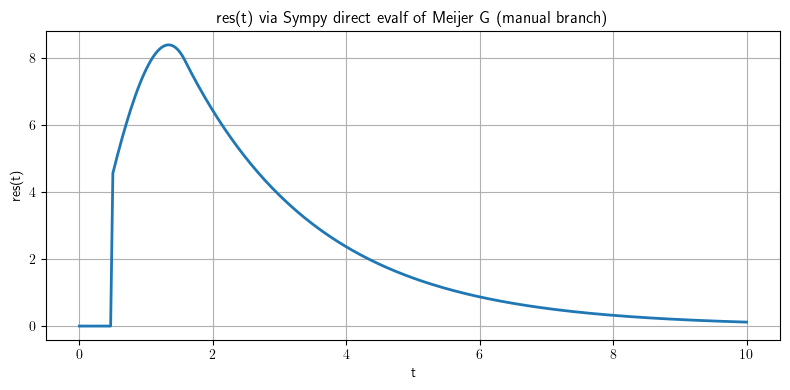
import sympy as sp
# 1) Declare your symbols.
t, alpha, delta, tau, T0, mMin, mMax, a = sp.symbols(
't alpha delta tau T0 mMin mMax a',
positive=True, real=True
)
m = sp.symbols('m', positive=True, real=True)
# 2) Define the critical mass m_c and the normalization.
m_c = (a/t)**(1/delta)
norm = tau*(1 - sp.exp(-T0/tau))
# 3) Compute the power‐law integral in closed form.
I_all = sp.integrate(m**(-alpha), (m, mMin, mMax))
# → (mMax**(1-alpha) - mMin**(1-alpha))/(1-alpha)
# 4) Compute the “partial‐flip” branch:
# ∫_{m_c}^{mMax} m^{-α} (1 - exp(-(t - a m^{-δ})/τ)) dm
I_partial = sp.integrate(
m**(-alpha)*(1 - sp.exp(-(t - a*m**(-delta))/tau)),
(m, m_c, mMax),
conds='none', # drop conditional piecewise on parameters
meijerg=True # force Meijer-G form
).doit().simplify()
# 5) Compute the “full‐flip” branch:
# ∫_{mMin}^{mMax} m^{-α} [τ(1 - e^{-t/τ}) - τ(1 - e^{-(t - a m^{-δ})/τ})] dm
I_full = sp.integrate(
m**(-alpha)*(tau*(1 - sp.exp(-t/tau))
- tau*(1 - sp.exp(-(t - a*m**(-delta))/tau))),
(m, mMin, mMax),
conds='none',
meijerg=True
).doit().simplify()
# 6) Build the two branch expressions:
expr_partial = (1/norm) * (tau*(1 - sp.exp(-t/tau))*I_all - tau*I_partial)
expr_full = (1/norm) * I_full
# 7) Print them out nicely:
display(sp.simplify(expr_full))
\[\begin{split}\displaystyle \begin{cases} - \frac{a^{- \frac{\alpha}{\delta}} \tau^{- \frac{1}{\delta}} \left(\frac{1}{mMax mMin}\right)^{\alpha} \left(a^{\frac{1}{\delta}} \alpha \tau^{\frac{\alpha}{\delta}} \left(mMax mMin\right)^{\alpha} e^{\frac{i \pi}{\delta}} \gamma\left(\frac{\alpha - 1}{\delta}, \frac{a mMax^{- \delta} e^{i \pi}}{\tau}\right) - a^{\frac{1}{\delta}} \alpha \tau^{\frac{\alpha}{\delta}} \left(mMax mMin\right)^{\alpha} e^{\frac{i \pi}{\delta}} \gamma\left(\frac{\alpha - 1}{\delta}, \frac{a mMin^{- \delta} e^{i \pi}}{\tau}\right) - a^{\frac{1}{\delta}} \tau^{\frac{\alpha}{\delta}} \left(mMax mMin\right)^{\alpha} e^{\frac{i \pi}{\delta}} \gamma\left(\frac{\alpha - 1}{\delta}, \frac{a mMax^{- \delta} e^{i \pi}}{\tau}\right) + a^{\frac{1}{\delta}} \tau^{\frac{\alpha}{\delta}} \left(mMax mMin\right)^{\alpha} e^{\frac{i \pi}{\delta}} \gamma\left(\frac{\alpha - 1}{\delta}, \frac{a mMin^{- \delta} e^{i \pi}}{\tau}\right) - a^{\frac{\alpha}{\delta}} \delta mMax mMin^{\alpha} \tau^{\frac{1}{\delta}} e^{\frac{i \pi \alpha}{\delta}} + a^{\frac{\alpha}{\delta}} \delta mMax^{\alpha} mMin \tau^{\frac{1}{\delta}} e^{\frac{i \pi \alpha}{\delta}}\right) e^{- \frac{- T_{0} \delta + i \pi \alpha \tau + \delta t}{\delta \tau}}}{\delta \left(\alpha - 1\right) \left(e^{\frac{T_{0}}{\tau}} - 1\right)} & \text{for}\: \alpha > 1 \vee \alpha < 1 \\\frac{a^{- \frac{\alpha}{\delta}} \tau^{- \frac{1}{\delta}} \left(- a^{\frac{1}{\delta}} \tau^{\frac{\alpha}{\delta}} e^{\frac{i \pi}{\delta}} \gamma\left(\frac{\alpha - 1}{\delta}, \frac{a mMax^{- \delta} e^{i \pi}}{\tau}\right) + a^{\frac{1}{\delta}} \tau^{\frac{\alpha}{\delta}} e^{\frac{i \pi}{\delta}} \gamma\left(\frac{\alpha - 1}{\delta}, \frac{a mMin^{- \delta} e^{i \pi}}{\tau}\right) + e^{\frac{i \pi \alpha}{\delta}} \log{\left(mMax^{- a^{\frac{\alpha}{\delta}} \delta \tau^{\frac{1}{\delta}}} mMin^{a^{\frac{\alpha}{\delta}} \delta \tau^{\frac{1}{\delta}}} \right)}\right) e^{- \frac{- T_{0} \delta + i \pi \alpha \tau + \delta t}{\delta \tau}}}{\delta \left(e^{\frac{T_{0}}{\tau}} - 1\right)} & \text{otherwise} \end{cases}\end{split}\]
import numpy as np
import sympy as sp
import matplotlib.pyplot as plt
# 1) Declare symbols
t, alpha, delta, tau, T0, mMin, mMax, a, m = sp.symbols(
't alpha delta tau T0 mMin mMax a m',
positive=True, real=True
)
# 2) Critical mass & normalization
m_c = (a/t)**(1/delta)
norm = tau*(1 - sp.exp(-T0/tau))
# 3) Manually set the power‐law integral for α≠1
I_all = (mMax**(1-alpha) - mMin**(1-alpha)) / (1-alpha)
# 4) Compute the two Meijer‐G branches
I_partial = (
sp.integrate(
m**(-alpha)*(1 - sp.exp(-(t - a*m**(-delta))/tau)),
(m, m_c, mMax),
conds='none', meijerg=True
)
.doit().simplify()
)
I_full = (
sp.integrate(
m**(-alpha)*(tau*(1 - sp.exp(-t/tau))
- tau*(1 - sp.exp(-(t - a*m**(-delta))/tau))),
(m, mMin, mMax),
conds='none', meijerg=True
)
.doit().simplify()
)
# 5) Build the three branch‐expressions
expr_noflip = (1 - sp.exp(-t/tau))*I_all / (1 - sp.exp(-T0/tau))
expr_partial = (1/norm)*(tau*(1 - sp.exp(-t/tau))*I_all - tau*I_partial)
expr_full = (1/norm)*I_full
display(sp.simplify(sp.expand(expr_full)))
# 6) Numeric‐vectorized wrapper
def res_scalar(tt, alpha_v, delta_v, tau_v, T0_v, mMin_v, mMax_v, a_v):
# numeric thresholds
t1 = a_v * mMax_v**(-delta_v)
t2 = a_v * mMin_v**(-delta_v)
# substitution dictionary
subs = {
alpha: alpha_v, delta: delta_v, tau: tau_v,
T0: T0_v, mMin: mMin_v, mMax: mMax_v, a: a_v
}
# pick branch
if tt < t1:
expr = expr_noflip
elif tt < t2:
expr = expr_partial
else:
expr = expr_full
# substitute & evaluate to float
val = expr.subs({**subs, t: tt}).evalf(chop=True)
return float(sp.re(val))
# vectorize over NumPy arrays
res = np.vectorize(res_scalar, otypes=[float])
# 7) Example usage & plot
params = (2.5, 0.5, 2.0, 10.0, 0.1, 1.0, 0.5)
t_vals = np.linspace(0, params[3], 300)
res_vals = res(t_vals, *params)
plt.plot(t_vals, res_vals, lw=2)
plt.xlabel('t')
plt.ylabel('res(t)')
plt.title('Vectorized res(t) from Sympy + Meijer-G')
plt.grid(True)
plt.show()
\[\begin{split}\displaystyle \begin{cases} - \frac{a^{- \frac{\alpha}{\delta}} \tau^{-1 - \frac{1}{\delta}} \left(\frac{1}{mMax mMin}\right)^{\alpha} \left(a^{\frac{1}{\delta}} \tau^{\frac{\alpha + \delta}{\delta}} \left(mMax mMin\right)^{\alpha} \left(\alpha \gamma\left(\frac{\alpha - 1}{\delta}, \frac{a mMax^{- \delta} e^{i \pi}}{\tau}\right) - \alpha \gamma\left(\frac{\alpha - 1}{\delta}, \frac{a mMin^{- \delta} e^{i \pi}}{\tau}\right) - \gamma\left(\frac{\alpha - 1}{\delta}, \frac{a mMax^{- \delta} e^{i \pi}}{\tau}\right) + \gamma\left(\frac{\alpha - 1}{\delta}, \frac{a mMin^{- \delta} e^{i \pi}}{\tau}\right)\right) e^{\frac{\delta t + i \pi \tau}{\delta \tau}} - a^{\frac{\alpha}{\delta}} \delta mMax mMin^{\alpha} \tau^{\frac{\delta + 1}{\delta}} e^{\frac{i \pi \alpha \tau + \delta t}{\delta \tau}} + a^{\frac{\alpha}{\delta}} \delta mMax^{\alpha} mMin \tau^{\frac{\delta + 1}{\delta}} e^{\frac{i \pi \alpha \tau + \delta t}{\delta \tau}}\right) e^{\frac{T_{0} - \frac{i \pi \alpha \tau + 2 \delta t}{\delta}}{\tau}}}{\delta \left(\alpha - 1\right) \left(e^{\frac{T_{0}}{\tau}} - 1\right)} & \text{for}\: \alpha > 1 \vee \alpha < 1 \\- \frac{a^{- \frac{\alpha}{\delta}} \tau^{-1 - \frac{1}{\delta}} \left(a^{\frac{1}{\delta}} \tau^{\frac{\alpha + \delta}{\delta}} \left(\gamma\left(\frac{\alpha - 1}{\delta}, \frac{a mMax^{- \delta} e^{i \pi}}{\tau}\right) - \gamma\left(\frac{\alpha - 1}{\delta}, \frac{a mMin^{- \delta} e^{i \pi}}{\tau}\right)\right) e^{\frac{\delta t + i \pi \tau}{\delta \tau}} - e^{\frac{i \pi \alpha \tau + \delta t}{\delta \tau}} \log{\left(mMax^{- a^{\frac{\alpha}{\delta}} \delta \tau^{\frac{\delta + 1}{\delta}}} mMin^{a^{\frac{\alpha}{\delta}} \delta \tau^{\frac{\delta + 1}{\delta}}} \right)}\right) e^{\frac{T_{0} - \frac{i \pi \alpha \tau + 2 \delta t}{\delta}}{\tau}}}{\delta \left(e^{\frac{T_{0}}{\tau}} - 1\right)} & \text{otherwise} \end{cases}\end{split}\]
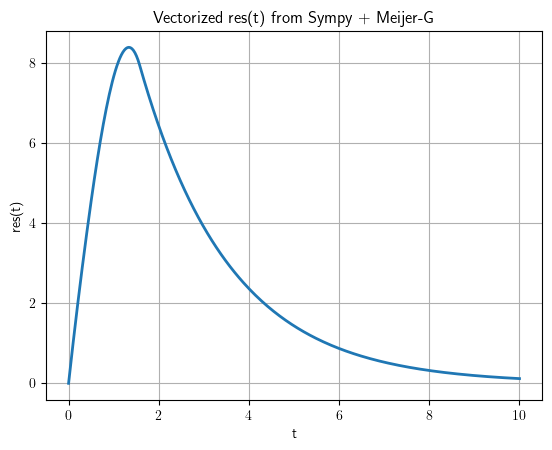
import numpy as np
import sympy as sp
import matplotlib.pyplot as plt
# 1) Declare symbols
t, α, δ, τ, T0, mMin, mMax, a, m = sp.symbols(
't α δ τ T0 mMin mMax a m', positive=True, real=True
)
# 2) Precompute the closed‐form integrals (no α=1 special case)
m_c = (a/t)**(1/δ)
norm = τ*(1 - sp.exp(-T0/τ))
I_all = (mMax**(1-α) - mMin**(1-α)) / (1-α)
I_partial = sp.integrate(
m**(-α)*(1 - sp.exp(-(t - a*m**(-δ))/τ)),
(m, m_c, mMax), conds='none'
).doit().simplify()
I_full = sp.integrate(
m**(-α)*(τ*(1 - sp.exp(-t/τ)) - τ*(1 - sp.exp(-(t - a*m**(-δ))/τ))),
(m, mMin, mMax), conds='none'
).doit().simplify()
# 3) Branches
expr_noflip = (1 - sp.exp(-t/τ))*I_all / (1 - sp.exp(-T0/τ))
expr_partial = (1/norm)*(τ*(1 - sp.exp(-t/τ))*I_all - τ*I_partial)
expr_full = (1/norm)*I_full
# 4) Scalar evaluator fixing the complex‐roundoff
def res_scalar(tt, αv, δv, τv, T0v, m0, m1, av):
# numeric thresholds
t1 = av * m1**(-δv)
t2 = av * m0**(-δv)
# pick symbolic branch
if tt < t1:
expr = expr_noflip
elif tt < t2:
expr = expr_partial
else:
expr = expr_full
subs = {α:αv, δ:δv, τ:τv, T0:T0v, mMin:m0, mMax:m1, a:av, t:tt}
val = expr.subs(subs).evalf(chop=True)
real = val.as_real_imag()[0] # grab the real part, discard any tiny imaginary
return float(real)
# 5) Vectorize and plot
res = np.vectorize(res_scalar, otypes=[float])
params = (2.5, 0.5, 2.0, 10.0, 0.1, 1.0, 0.5)
t_vals = np.linspace(0, params[3], 400)
res_vals = res(t_vals, *params)
plt.plot(t_vals, res_vals, lw=2)
plt.xlabel('t')
plt.ylabel('res(t)')
plt.title('res(t) via incomplete‐Gamma (real only)')
plt.grid(True)
plt.show()
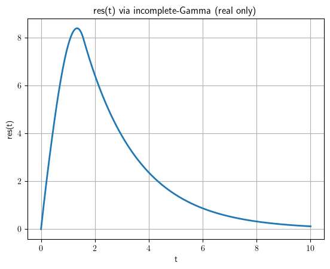
import sympy as sp
import numpy as np
import matplotlib.pyplot as plt
# 1) Declare symbols
t, α, δ, τ, T0, mMin, mMax, a, m = sp.symbols(
't α δ τ T0 mMin mMax a m',
positive=True, real=True
)
# 2) Power-law integral (α≠1)
I_all = (mMax**(1-α) - mMin**(1-α)) / (1-α)
norm = τ*(1 - sp.exp(-T0/τ))
# 3) “Partial-flip” integral (closed-form, no stray Integral)
m_c = (a/t)**(1/δ)
I_partial = sp.integrate(
m**(-α)*(1 - sp.exp(-(t - a*m**(-δ))/τ)),
(m, m_c, mMax),
conds='none'
).doit().simplify()
# 4) “Full-flip” integral
I_full = sp.integrate(
m**(-α)*(τ*(1 - sp.exp(-t/τ))
- τ*(1 - sp.exp(-(t - a*m**(-δ))/τ))),
(m, mMin, mMax),
conds='none'
).doit().simplify()
# 5) Build the three symbolic branches
expr_noflip = (1 - sp.exp(-t/τ))*I_all / (1 - sp.exp(-T0/τ))
expr_partial = (1/norm)*(τ*(1 - sp.exp(-t/τ))*I_all - τ*I_partial)
expr_full = (1/norm)*I_full
# 6) Extract the _real part_ symbolically and simplify away any e^{iπ} terms
real_noflip = sp.simplify(sp.re(expr_noflip))
real_partial = sp.simplify(sp.re(expr_partial))
real_full = sp.simplify(sp.re(expr_full))
# 7) Assemble a final real‐only Piecewise
res_real = sp.Piecewise(
(real_noflip, t < a*mMax**(-δ)),
(real_partial, (t >= a*mMax**(-δ)) & (t < a*mMin**(-δ))),
(real_full, t >= a*mMin**(-δ))
)
# 8) Turn it into a fast NumPy function via lambdify
# (Sympy will only emit exp, gamma, uppergamma, etc., all real)
display(res_real)
---------------------------------------------------------------------------
KeyboardInterrupt Traceback (most recent call last)
Cell In[333], line 17
15 # 3) “Partial-flip” integral (closed-form, no stray Integral)
16 m_c = (a/t)**(1/δ)
---> 17 I_partial = sp.integrate(
18 m**(-α)*(1 - sp.exp(-(t - a*m**(-δ))/τ)),
19 (m, m_c, mMax),
20 conds='none'
21 ).doit().simplify()
23 # 4) “Full-flip” integral
24 I_full = sp.integrate(
25 m**(-α)*(τ*(1 - sp.exp(-t/τ))
26 - τ*(1 - sp.exp(-(t - a*m**(-δ))/τ))),
27 (m, mMin, mMax),
28 conds='none'
29 ).doit().simplify()
File c:\Users\adamc\AppData\Local\Programs\Python\Python312\Lib\site-packages\sympy\integrals\integrals.py:1574, in integrate(meijerg, conds, risch, heurisch, manual, *args, **kwargs)
1571 integral = Integral(*args, **kwargs)
1573 if isinstance(integral, Integral):
-> 1574 return integral.doit(**doit_flags)
1575 else:
1576 new_args = [a.doit(**doit_flags) if isinstance(a, Integral) else a
1577 for a in integral.args]
File c:\Users\adamc\AppData\Local\Programs\Python\Python312\Lib\site-packages\sympy\integrals\integrals.py:619, in Integral.doit(self, **hints)
617 antideriv = None
618 else:
--> 619 antideriv = self._eval_integral(
620 function, xab[0], **eval_kwargs)
621 if antideriv is None and meijerg is True:
622 ret = try_meijerg(function, xab)
File c:\Users\adamc\AppData\Local\Programs\Python\Python312\Lib\site-packages\sympy\integrals\integrals.py:1093, in Integral._eval_integral(self, f, x, meijerg, risch, manual, heurisch, conds, final)
1091 h = heurisch_wrapper(g, x, hints=[])
1092 else:
-> 1093 h = heurisch_(g, x, hints=[])
1094 except PolynomialError:
1095 # XXX: this exception means there is a bug in the
1096 # implementation of heuristic Risch integration
1097 # algorithm.
1098 h = None
File c:\Users\adamc\AppData\Local\Programs\Python\Python312\Lib\site-packages\sympy\integrals\heurisch.py:759, in heurisch(f, x, rewrite, hints, mappings, retries, degree_offset, unnecessary_permutations, _try_heurisch)
755 more_free = Fd.xreplace(dict(zip(V, (Dummy() for _ in V)))
756 ).free_symbols & Fd.free_symbols
757 if not more_free:
758 # all free generators are identified in V
--> 759 solution = _integrate('Q')
761 if solution is None:
762 solution = _integrate()
File c:\Users\adamc\AppData\Local\Programs\Python\Python312\Lib\site-packages\sympy\integrals\heurisch.py:740, in heurisch.<locals>._integrate(field)
738 ring = PolyRing(V, coeff_ring)
739 try:
--> 740 numer = ring.from_expr(raw_numer)
741 except ValueError:
742 raise PolynomialError
File c:\Users\adamc\AppData\Local\Programs\Python\Python312\Lib\site-packages\sympy\polys\rings.py:397, in PolyRing.from_expr(self, expr)
394 mapping = dict(list(zip(self.symbols, self.gens)))
396 try:
--> 397 poly = self._rebuild_expr(expr, mapping)
398 except CoercionFailed:
399 raise ValueError("expected an expression convertible to a polynomial in %s, got %s" % (self, expr))
File c:\Users\adamc\AppData\Local\Programs\Python\Python312\Lib\site-packages\sympy\polys\rings.py:391, in PolyRing._rebuild_expr(self, expr, mapping)
388 else:
389 return self.ground_new(domain.convert(expr))
--> 391 return _rebuild(sympify(expr))
File c:\Users\adamc\AppData\Local\Programs\Python\Python312\Lib\site-packages\sympy\polys\rings.py:379, in PolyRing._rebuild_expr.<locals>._rebuild(expr)
377 return generator
378 elif expr.is_Add:
--> 379 return reduce(add, list(map(_rebuild, expr.args)))
380 elif expr.is_Mul:
381 return reduce(mul, list(map(_rebuild, expr.args)))
File c:\Users\adamc\AppData\Local\Programs\Python\Python312\Lib\site-packages\sympy\polys\rings.py:381, in PolyRing._rebuild_expr.<locals>._rebuild(expr)
379 return reduce(add, list(map(_rebuild, expr.args)))
380 elif expr.is_Mul:
--> 381 return reduce(mul, list(map(_rebuild, expr.args)))
382 else:
383 # XXX: Use as_base_exp() to handle Pow(x, n) and also exp(n)
384 # XXX: E can be a generator e.g. sring([exp(2)]) -> ZZ[E]
385 base, exp = expr.as_base_exp()
File c:\Users\adamc\AppData\Local\Programs\Python\Python312\Lib\site-packages\sympy\polys\rings.py:1118, in PolyElement.__mul__(p1, p2)
1116 for exp2, v2 in p2it:
1117 exp = monomial_mul(exp1, exp2)
-> 1118 p[exp] = get(exp, zero) + v1*v2
1119 p.strip_zero()
1120 return p
File c:\Users\adamc\AppData\Local\Programs\Python\Python312\Lib\site-packages\sympy\polys\rings.py:1118, in PolyElement.__mul__(p1, p2)
1116 for exp2, v2 in p2it:
1117 exp = monomial_mul(exp1, exp2)
-> 1118 p[exp] = get(exp, zero) + v1*v2
1119 p.strip_zero()
1120 return p
File c:\Users\adamc\AppData\Local\Programs\Python\Python312\Lib\site-packages\sympy\polys\domains\expressiondomain.py:112, in ExpressionDomain.Expression.__mul__(f, g)
109 elif f.ex.is_Number and g.ex.is_Number:
110 return f.__class__(f.ex*g.ex)
--> 112 return f.simplify(f.ex*g.ex)
File c:\Users\adamc\AppData\Local\Programs\Python\Python312\Lib\site-packages\sympy\polys\domains\expressiondomain.py:54, in ExpressionDomain.Expression.simplify(f, ex)
53 def simplify(f, ex):
---> 54 return f.__class__(ex.cancel().expand(**eflags))
File c:\Users\adamc\AppData\Local\Programs\Python\Python312\Lib\site-packages\sympy\core\expr.py:3782, in Expr.cancel(self, *gens, **args)
3780 """See the cancel function in sympy.polys"""
3781 from sympy.polys.polytools import cancel
-> 3782 return cancel(self, *gens, **args)
File c:\Users\adamc\AppData\Local\Programs\Python\Python312\Lib\site-packages\sympy\polys\polytools.py:7163, in cancel(f, _signsimp, *gens, **args)
7161 if f.is_Number or isinstance(f, Relational) or not isinstance(f, Expr):
7162 return f
-> 7163 f = factor_terms(f, radical=True)
7164 p, q = f.as_numer_denom()
7166 elif len(f) == 2:
File c:\Users\adamc\AppData\Local\Programs\Python\Python312\Lib\site-packages\sympy\core\exprtools.py:1267, in factor_terms(expr, radical, clear, fraction, sign)
1265 return rv
1266 expr = sympify(expr)
-> 1267 return do(expr)
File c:\Users\adamc\AppData\Local\Programs\Python\Python312\Lib\site-packages\sympy\core\exprtools.py:1240, in factor_terms.<locals>.do(expr)
1235 if isinstance(expr, (Sum, Integral)):
1236 return _factor_sum_int(expr,
1237 radical=radical, clear=clear,
1238 fraction=fraction, sign=sign)
-> 1240 cont, p = expr.as_content_primitive(radical=radical, clear=clear)
1241 if p.is_Add:
1242 list_args = [do(a) for a in Add.make_args(p)]
File c:\Users\adamc\AppData\Local\Programs\Python\Python312\Lib\site-packages\sympy\core\mul.py:2064, in Mul.as_content_primitive(self, radical, clear)
2062 args = []
2063 for a in self.args:
-> 2064 c, p = a.as_content_primitive(radical=radical, clear=clear)
2065 coef *= c
2066 if p is not S.One:
File c:\Users\adamc\AppData\Local\Programs\Python\Python312\Lib\site-packages\sympy\core\expr.py:2099, in Expr.as_content_primitive(self, radical, clear)
2096 c, r = -c, -r
2097 return c, r
-> 2099 def as_content_primitive(self, radical=False, clear=True):
2100 """This method should recursively remove a Rational from all arguments
2101 and return that (content) and the new self (primitive). The content
2102 should always be positive and ``Mul(*foo.as_content_primitive()) == foo``.
(...)
2152 (1, x/2 + y)
2153 """
2154 return S.One, self
KeyboardInterrupt:
import sympy as sp
from sympy.assumptions import assuming, Q
from IPython.display import display
# 1) Declare symbols
# t: time, alpha: exponent >1, delta>0, tau, T0>0, mMin<mMax, a>0
t, alpha, delta, tau, T0, mMin, mMax, a, m, x = sp.symbols(
't alpha delta tau T0 mMin mMax a m x',
positive=True, real=True
)
# 2) Enforce conditions for real convergence using assuming
with assuming(
Q.gt(alpha, 1), Q.gt(delta, 0), Q.gt(tau, 0),
Q.gt(T0, 0), Q.gt(mMin, 0), Q.gt(mMax, mMin), Q.gt(a, 0)
):
# 3) Power-law integral I_all = ∫ m^{-alpha} dm
I_all = (mMax**(1-alpha) - mMin**(1-alpha))/(1-alpha)
display(sp.Eq(sp.Symbol('I_all'), I_all))
# 4) Normalization N = tau*(1 - exp(-T0/tau))
N = tau*(1 - sp.exp(-T0/tau))
display(sp.Eq(sp.Symbol('N'), N))
# 5) Critical mass m_c = (a/t)^(1/delta)
m_c = (a/t)**(1/delta)
display(sp.Eq(sp.Symbol('m_c'), m_c))
# 6) Partial-flip integral
I_partial = sp.integrate(
m**(-alpha)*(1 - sp.exp(-(t - a*m**(-delta))/tau)),
(m, m_c, mMax), conds='none'
).doit()
# rewrite in terms of upper incomplete gamma
I_partial = sp.simplify(I_partial.rewrite(sp.uppergamma))
display(sp.Eq(sp.Symbol('I_partial'), I_partial))
# 7) Full-flip integral
I_full = sp.integrate(
m**(-alpha)*(tau*(1 - sp.exp(-t/tau))
- tau*(1 - sp.exp(-(t - a*m**(-delta))/tau))),
(m, mMin, mMax), conds='none'
).doit()
I_full = sp.simplify(I_full.rewrite(sp.uppergamma))
display(sp.Eq(sp.Symbol('I_full'), I_full))
# 8) Build real branch expressions
expr0 = 0
expr_partial = (tau*(1 - sp.exp(-t/tau))*I_all - tau*I_partial)/N
expr_full = I_full/N
# 9) Piecewise real solution
res_sym = sp.Piecewise(
(expr0, t < a*mMax**(-delta)),
(real_partial, (t >= a*mMax**(-delta)) & (t < a*mMin**(-delta))),
(real_full, t >= a*mMin**(-delta))
)
display(sp.Eq(sp.Function('res')(t), res_sym))
# 10) LaTeX for embedding
display(sp.latex(res_sym))
\[\displaystyle I_{all} = \frac{mMax^{1 - \alpha} - mMin^{1 - \alpha}}{1 - \alpha}\]
\[\displaystyle N = \tau \left(1 - e^{- \frac{T_{0}}{\tau}}\right)\]
\[\displaystyle t_{1} = a mMax^{- \delta}\]
\[\displaystyle t_{2} = a mMin^{- \delta}\]
\[\displaystyle z_{max} = \frac{a mMax^{- \delta}}{\tau}\]
\[\displaystyle z_{min} = \frac{a mMin^{- \delta}}{\tau}\]
---------------------------------------------------------------------------
TypeError Traceback (most recent call last)
Cell In[359], line 43
37 # 7) Closed-form expr for partial-flip branch
38 # m_c = (a/t)**(1/delta) => zc = a*t**(-delta)/tau
39 zc = a*t**(-delta)/tau
40 expr_partial = (1/N)*(
41 tau*(1-exp(-t/tau))*I_all
42 - tau*(mMax**(1-alpha) - t**(delta*(alpha-1)))/(1-alpha)
---> 43 + (tau/delta)*(a/tau)**s * exp(-t/tau)*(gamma(s, zc) - gamma(s, zmax))
44 )
45 expr_partial_real = simplify(expand_complex(expr_partial))
46 display(Eq(Function('res_partial')(t), expr_partial_real))
File c:\Users\adamc\AppData\Local\Programs\Python\Python312\Lib\site-packages\sympy\core\cache.py:72, in __cacheit.<locals>.func_wrapper.<locals>.wrapper(*args, **kwargs)
69 @wraps(func)
70 def wrapper(*args, **kwargs):
71 try:
---> 72 retval = cfunc(*args, **kwargs)
73 except TypeError as e:
74 if not e.args or not e.args[0].startswith('unhashable type:'):
File c:\Users\adamc\AppData\Local\Programs\Python\Python312\Lib\site-packages\sympy\core\function.py:458, in Function.__new__(cls, *args, **options)
450 if not cls._valid_nargs(n):
451 # XXX: exception message must be in exactly this format to
452 # make it work with NumPy's functions like vectorize(). See,
453 # for example, https://github.com/numpy/numpy/issues/1697.
454 # The ideal solution would be just to attach metadata to
455 # the exception and change NumPy to take advantage of this.
456 temp = ('%(name)s takes %(qual)s %(args)s '
457 'argument%(plural)s (%(given)s given)')
--> 458 raise TypeError(temp % {
459 'name': cls,
460 'qual': 'exactly' if len(cls.nargs) == 1 else 'at least',
461 'args': min(cls.nargs),
462 'plural': 's'*(min(cls.nargs) != 1),
463 'given': n})
465 evaluate = options.get('evaluate', global_parameters.evaluate)
466 result = super().__new__(cls, *args, **options)
TypeError: gamma takes exactly 1 argument (2 given)